作者: 黄文坚 / 唐源
出版社: 电子工业出版社
出品方: 博文视点
出版年: 2017-2-1
丛书: 博文视点AI系列
ISBN: 9787121309120
内容简介
本书介绍了TensorFlow的基础原理和应用，并侧重于结合实际例子讲解使用TensorFlow的方法。TensorFlow目前最主要的应用是在机器学习和深度学习领域，本书讲解了全连接神经网络、卷积神经网络、循环神经网络、深度强化学习等常见的深度学习模型，还介绍了TensorBoard、单机多GPU并行、分布式并行，TF Learn和其他TensorFlow辅助组件。
本书适合有一定深度学习基础和代码编写能力的读者，书中对深度学习技术也有一定的介绍。
前言
AlphaGo在2017年年初化身Master，在弈城和野狐等平台上连胜中日韩围棋高手，其中包括围棋世界冠军井山裕太、朴廷桓、柯洁等，还有棋圣聂卫平，总计取得60连胜，未尝败绩。遥想2016年3月，当时AlphaGo挑战李世石还一度不被看好，到今日已经可以完胜各位高手。AlphaGo背后神秘的推动力就是TensorFlow——Google于2015年11月开源的机器学习及深度学习框架。DeepMind宣布全面迁移到TensorFlow后，AlphaGo的算法训练任务就全部放在了TensorFlow这套分布式框架上。
TensorFlow在2015年年底一出现就受到了极大的关注，在一个月内获得了GitHub上超过一万颗星的关注，目前在所有的机器学习、深度学习项目中排名第一，甚至在所有的Python项目中也排名第一。本书将重点从实用的层面，为读者讲解如何使用TensorFlow实现全连接神经网络、卷积神经网络、循环神经网络，乃至Deep Q-Network。同时结合TensorFlow原理，以及深度学习的部分知识，尽可能让读者通过学习本书做出实际项目和成果。
本书各章节间没有太强的依赖关系，如果读者对某一章感兴趣，可以直接阅读。本书使用TensorFlow 1.0.0-rc0作为示例讲解，应该与最新版的TensorFlow兼容绝大部分代码，可能存在少数接口的更新，读者可参阅提示信息。书中大部分代码是Python代码，这也是TensorFlow支持的最全、最完整的接口语言。
本书的前两章介绍了TensorFlow的基础知识和概念。第3章和第4章介绍了简单的示例及全连接神经网络。第5章和第6章介绍了基础的卷积神经网络，以及目前比较经典的AlexNet、VGGNet、Inception Net和ResNet。第7章介绍了Word2Vec、RNN和LSTM。第8章介绍了强化学习，以及基于深度学习的策略网络和估值网络。第9章介绍了TensorBoard、单机多GPU并行，以及分布式并行。
第10章介绍了TensorFlow里面的contrib.learn模块，包含许多类型的深度学习及流行的机器学习算法的使用方法，也解析了这个模块的分布式Estimator的基本架构，以及如何使用Estimator快速搭建自己的分布式机器学习模型架构，进行模型的训练和评估，也介绍了如何使用监督器更好地监测和跟踪模型的训练及使用DataFrame读取不同的数据格式。第11章介绍了Contrib模块，这个模块里提供了许多机器学习需要的功能，包括统计分布、机器学习层、优化函数、指标，等等。本章将简单介绍其中的一些功能让大家了解TensorFlow的涵盖范围，并感受到社区的积极参与和贡献度。第10章和第11章使用了TensorFlow 0.11.0-rc0版本作为示例讲解。
1 TensorFlow基础
1.1 TensorFlow概要
Google第一代分布式机器学习框架DistBelief1 ，在内部大规模使用后并没有选择开源。而后第二代分布式机器学习系统TensorFlow2 终于选择于2015年11月在GitHub上开源，且在2016年4月补充了分布式版本，并于2017年1月发布了1.0版本的预览，API接口趋于稳定。目前TensorFlow仍处于快速开发迭代中，有大量新功能及性能优化在持续研发。TensorFlow最早由Google Brain的研究员和工程师开发，设计初衷是加速机器学习的研究，并快速地将研究原型转化为产品。Google选择开源TensorFlow的原因也非常简单：第一是希望通过社区的力量，让大家一起完善TensorFlow。之前Google内部DistBelief及TensorFlow的用户就贡献了非常多的意见和反馈，使得产品质量得到了快速提升；第二是回馈社区，Google希望让这个优秀的工具得到更多的应用，从整体上提高学术界乃至工业界使用深度学习的效率。除了TensorFlow，Google也开源过大量成功的项目，包括大名鼎鼎的移动操作系统Android、浏览器Chromium、编程语言Go、JavaScript引擎V8、数据交换框架Protobuf、编译工具Bazel、OCR工具Tesseract等共计数百个高质量的项目。
TensorFlow的官方网址：www.tensorflow.org
GitHub 网址：github.com/tensorflow/tensorflow
模型仓库网址：github.com/tensorflow/models
TensorFlow既是一个实现机器学习算法的接口，同时也是执行机器学习算法的框架。它前端支持Python、C++、Go、Java等多种开发语言，后端使用C++、CUDA等写成。TensorFlow实现的算法可以在众多异构的系统上方便地移植，比如Android手机、iPhone、普通的CPU服务器，乃至大规模GPU集群，如图1-1所示。除了执行深度学习算法，TensorFlow还可以用来实现很多其他算法，包括线性回归、逻辑回归、随机森林等。TensorFlow建立的大规模深度学习模型的应用场景也非常广，包括语音识别、自然语言处理、计算机视觉、机器人控制、信息抽取、药物研发、分子活动预测等，使用TensorFlow开发的模型也在这些领域获得了最前沿的成果。
图1-1 TensorFlow基础架构
为了研究超大规模的深度神经网络，Google在2011年启动了Google Brain项目，同时开发了第一代的分布式机器学习框架 DistBelief。有超过50个Google的团队在他们的产品中使用了DistBelief，比如Google Search中的搜索结果排序、Google Photos中的图片标注、Google Translate中的自然语言处理等，都依赖于DistBelief建立的深度学习模型。Google基于使用DistBelief时的经验及训练大规模分布式神经网络的需求，开发了TensorFlow——第二代分布式机器学习算法实现框架和部署系统。Google将著名的Inception Net从DistBelief移植到TensorFlow后，获得了6倍的训练速度提升。目前，在Google内部使用TensorFlow的项目呈爆炸性的增长趋势，在2016年已经有超过2000个项目使用了TensorFlow建立的深度学习模型，而且这个数字还在高速增长中，如图1-2所示。
图1-2 TensorFlow在Google的使用趋势
TensorFlow使用数据流式图来规划计算流程，它可以将计算映射到不同的硬件和操作系统平台。凭借着统一的架构，TensorFlow可以方便地部署到各种平台，大大简化了真实场景中应用机器学习的难度。使用TensorFlow我们不需要给大规模的模型训练和小规模的应用部署开发两套不同的系统，避免了同时维护两套程序的成本，TensorFlow给训练和预测的共同部分提供了一个恰当的抽象。TensorFlow的计算可以表示为有状态的数据流式图，对于大规模的神经网络训练，TensorFlow可以让用户简单地实现并行计算，同时使用不同的硬件资源进行训练，同步或异步地更新全局共享的模型参数和状态。将一个串行的 TensorFlow算法改造成并行的成本也是非常低的，通常只需要对小部分代码进行改写。相比于DistBelief，TensorFlow的计算模型更简洁灵活，计算性能显著提升，同时支持更多的异构计算系统。大量Google内部的DistBelief用户转向了TensorFlow，他们使用TensorFlow进行各种研究和产品开发，包括在手机上跑计算机视觉模型，或是训练有数百亿参数、数千亿数据的神经网络模型。虽然绝大多数的TensorFlow应用都在机器学习及深度学习领域，但TensorFlow抽象出的数据流式图也可以应用在通用数值计算和符号计算上，比如分形图计算或者偏微分方程数值求解。表1-1所示为TensorFlow的主要技术特性。
表1-1 TensorFlow的主要技术特性
续表
1.2 TensorFlow编程模型简介
1.2.1 核心概念
TensorFlow中的计算可以表示为一个有向图（directed graph），或称计算图（computation graph），其中每一个运算操作（operation）将作为一个节点（node），节点与节点之间的连接称为边（edge）。这个计算图描述了数据的计算流程，它也负责维护和更新状态，用户可以对计算图的分支进行条件控制或循环操作。用户可以使用Python、C++、Go、Java等几种语言设计这个数据计算的有向图。计算图中每一个节点可以有任意多个输入和任意多个输出，每一个节点描述了一种运算操作，节点可以算是运算操作的实例化（instance）。在计算图的边中流动（flow）的数据被称为张量（tensor），故得名TensorFlow。而tensor的数据类型，可以是事先定义的，也可以根据计算图的结构推断得到。有一类特殊的边中没有数据流动，这种边是依赖控制（control dependencies），作用是让它的起始节点执行完之后再执行目标节点，用户可以使用这样的边进行灵活的条件控制，比如限制内存使用的最高峰值。下面是用Python设计并执行计算图的示例。计算图示例如图1-3所示。
图1-3 计算图示例
一个运算操作代表了一种类型的抽象运算，比如矩阵乘法或者向量加法。运算操作可以有自己的属性，但是所有属性必须被预先设置，或者能在创建计算图时被推断出来。通过设置运算操作的属性可以用来支持不同的tensor元素类型，比如让向量加法支持浮点数（float）或者整数（int）。运算核（kernel）是一个运算操作在某个具体硬件（比如在CPU或者GPU中）的实现。在TensorFlow中，可以通过注册机制加入新的运算操作或者运算核。表1-2所示为部分TensorFlow内建的运算操作。
表1-2 TensorFlow内建的运算操作

续表
Session是用户使用TensorFlow时的交互式接口。用户可以通过Session的Extend方法添加新的节点和边，用以创建计算图，然后就可以通过Session的Run方法执行计算图：用户给出需要计算的节点，同时提供输入数据，TensorFlow就会自动寻找所有需要计算的节点并按依赖顺序执行它们。对绝大多数的用户来说，他们只会创建一次计算图，然后反复地执行整个计算图或是其中的一部分子图（sub-graph）。
在大多数运算中，计算图会被反复执行多次，而数据也就是tensor并不会被持续保留，只是在计算图中过一遍。Variable是一类特殊的运算操作，它可以将一些需要保留的tensor储存在内存或显存中，比如神经网络模型中的系数。每一次执行计算图后，Variable中的数据tensor将会被保存，同时在计算过程中这些tensor也可以被更新，比如神经网络每一次mini-batch训练时，神经网络的系数将会被更新并保存。使用Variable，可以在计算图中实现一些特殊的操作，比如Assign、AssignAdd（+=）或 AssignMul（*=）。
1.2.2 实现原理
TensorFlow有一个重要组件client，顾名思义，就是客户端，它通过Session的接口与master及多个worker相连。其中每一个worker可以与多个硬件设备（device）相连，比如CPU或GPU，并负责管理这些硬件。而master则负责指导所有worker按流程执行计算图。TensorFlow有单机模式和分布式模式两种实现，其中单机指client、master、worker全部在一台机器上的同一个进程中；分布式的版本允许client、master、worker在不同机器的不同进程中，同时由集群调度系统统一管理各项任务。图1-4所示为单机版和分布式版本的示例图。
图1-4 TensorFlow单机版本和分布式版本的示例图
TensorFlow中每一个worker可以管理多个设备，每一个设备的name包含硬件类别、编号、任务号（单机版本没有），示例如下。
单机模式：/job:localhost/device:cpu:0
分布式模式：/job:worker/task:17/device:gpu:3
TensorFlow为CPU和GPU提供了管理设备的对象接口，每一个对象负责分配、释放设备的内存，以及执行节点的运算核。TensorFlow中的tensor是多维数组，数据类型支持8位至64位的int，以及IEEE标准的float、double和复数型，同时还支持任意字符串。每一个设备有单独的allocator负责储存各种数据类型的tensor，同时tensor的引用次数也会被记录，当引用数为0时，内存将被释放。如图1-5所示，TensorFlow支持的设备包括x86架构CPU、手机上的ARM CPU、GPU、TPU（Tensor Processing Unit，Google专门为大规模深度学习计算定制的芯片，但目前还没有公开发布的计划），
例如AlphaGo在与李世石比赛时就大量使用了TPU集群的计算资源。
图1-5 TensorFlow支持的设备
图1-5 TensorFlow支持的设备（续）
在只有一个硬件设备的情况下，计算图会按依赖关系被顺序执行。当一个节点的所有上游依赖都被执行完时（依赖数为0），这个节点就会被加入ready queue以等待执行。同时，它下游所有节点的依赖数减1，实际上这就是标准的计算拓扑序的方式。当有多个设备时，情况就变得复杂了，难点有二：
（1）每一个节点该让什么硬件设备执行。
（2）如何管理节点间的数据通信。
对第1个问题，TensorFlow设计了一套为节点分配设备的策略。这个策略首先需要计算一个代价模型，这个代价模型估算每一个节点的输入、输出tensor的大小，以及所需要的计算时间。代价模型一部分由人工经验制定的启发式规则得到，另一部分则是由对一小部分数据进行实际运算而测量得到的。接下来，分配策略会模拟执行整个计算图，首先会从起点开始，按拓扑序执行。在模拟执行一个节点时，会把每一个能执行这个节点的设备都测试一遍，这个测试会考虑代价模型对这个节点的计算时间的估算，加上数据传到这个设备上所需要的通信时间，最后选择一个综合时间最短的设备作为这个节点的运算设备。可以看到这个策略是一个简单的贪婪策略，它不能确保找到全局最优解，但是可以用较快的速度找到一个不错的节点运算分配方案。同时除了运行时间，内存的最高使用峰值也会被考虑进来。目前TensorFlow的节点分配策略仍在不断研发、优化，将来可能使用一个强化学习（Reinforcement Learning）的神经网络来辅助决策。此外，TensorFlow还允许用户对节点的分配设置限制条件，比如“只给这个节点分配GPU类型的设备”，“只给这个节点分配/job:worker/task:17上的设备”，“这个节点分配的设备必须和variable13一致”。对于这些限制条件，TensorFlow会先计算每个节点可以使用的设备，再使用并查集（union-find）算法找到必须使用同一个设备的节点。
我们再来看第2个问题，当给节点分配设备的方案被确定，整个计算图就会被划分为许多子图，使用同一个设备并且相邻的节点会被划分到同一个子图。然后计算图中从x 到y 的边，会被取代为一个发送端的发送节点（send node）、一个接收端的接收节点（receive node），以及从发送节点到接收节点的边，如图1-6所示。

图1-6 TensorFlow的通信机制
这样就把数据通信的问题转变为发送节点和接收节点的实现问题，用户不需要为不同的硬件环境实现通信方法。同时两个子图之间可能会有多个接收节点，如果这些接收节点接收的都是同一个tensor，那么所有这些接收节点会被自动合并为一个，避免了数据的反复传输或者重复占用设备内存。总结一下，TensorFlow的通信机制很优秀，发送节点和接收节点的设计简化了底层的通信模式，用户无须设计节点之间的通信流程，可以让同一套代码，自动扩展到不同硬件环境并处理复杂的通信流程。图1-7所示为CPU与GPU之间通信的流程。
图1-7 CPU与GPU的通信过程
同时，从单机单设备的版本改造为单机多设备的版本也非常容易，下面的代码只添加了加粗的这一行，就实现了从一块GPU训练到多块GPU训练的改造。
TensorFlow分布式执行时的通信和单机设备间的通信很像，只不过是对发送节点和接收节点的实现不同：比如从单机的CPU到GPU的通信，变为不同机器之间使用TCP或者RDMA传输数据。同时，容错性也是分布式TensorFlow的一个特点。故障会在两种情况下被检测出来，一种是信息从发送节点传输到接收节点失败时，另一种是周期性的worker心跳检测失败时。当一个故障被检测到时，整个计算图会被终止并重启。其中Variable node可以被持久化，TensorFlow支持检查点（checkpoint）的保存和恢复，每一个Variable node都会链接一个Save node，每隔几轮迭代就会保存一次数据到持久化的储存系统，比如一个分布式文件系统。同样，每一个Variable node都会连接一个Restore node，在每次重启时会被调用并恢复数据。这样在发生故障并重启后，模型的参数将得以保留，训练将从上一个checkpoint恢复而不需要完全从头再来。
图1-8所示为使用TensorFlow在GPU集群进行分布式训练的性能对比图，在GPU数量小于16时，基本没有性能损耗。直到50块GPU时，依然可以获得80%的效率，也就是40倍于单GPU的提速。在100块GPU时，最终可以获得56倍的提速，也就是56%的使用效率，可以看到TensorFlow在大规模分布式系统上有相当高的并行效率。
图1-8 TensorFlow分布式训练性能
1.2.3 拓展功能
在深度学习乃至机器学习中，计算cost function的梯度都是最基本的需求，因此TensorFlow也原生支持自动求导。比如一个tensor C 在计算图中有一组依赖的tensor {Xk } ，那么在TensorFlow中可以自动求出{dC/dXk }。这个求解梯度的过程也是通过在计算图拓展节点的方式实现的，只不过求梯度的节点对用户是透明的。
如图1-9所示，当TensorFlow计算一个tensor C 关于tensor I 的梯度时，会先寻找从I 到C 的正向路径，然后从C 回溯到I，对这条回溯路径上的每一个节点增加一个对应求解梯度的节点，并根据链式法则（chain rule）计算总的梯度，这就是大名鼎鼎的反向传播（back propagation，BP）算法。这些新增的节点会计算梯度函数（gradient function），比如[db,dW,dx] = tf.gradients(C,[b,W,x])。
图1-9 TensorFlow自动求导示例
自动求导虽然对用户很方便，但伴随而来的是TensorFlow对计算的优化（比如为节点分配设备的策略）变得很麻烦，尤其是内存使用的问题。在正向执行计算图，也就是进行推断（inference）时，因为确定了执行顺序，使用经验的规则是比较容易取得好效果的，tensor在产生后会迅速地被后续节点使用掉，不会持续占用内存。然而在进行反向传播计算梯度时，经常需要用到计算图开头的tensor，这些tensor可能会占用大量的GPU显存，也限制了模型的规模。目前TensorFlow仍在持续改进这些问题，包括使用更好的优化方法；重新计算tensor，而不是保存tensor；将tensor从GPU显存移到CPU控制的主内存中。
TensorFlow还支持单独执行子图，用户可以选择计算图的任意子图，并沿某些边输入数据，同时从另一些边获取输出结果。TensorFlow用节点名加port的形式指定数据，例如bar:0表示名为bar的节点的第1个输出。在调用Session的Run方法执行子图时，用户可以选择一组输入数据的映射，比如name:port
->tensor；同时用户必须指定一组输出数据，比如name[:port]，来选择执行哪些节点，如果port也被选择，那么这些port输出的数据将会作为Run函数调用的结果返回。然后整个计算图会根据输入和输出进行调整，输入数据的节点会连接一个feed node，输出数据的节点会连接一个fetch node。TensorFlow会根据输出数据自动推导出哪些节点需要被执行。如图1-10所示，我们选择用一些数据替换掉b ，那么feed node会替代b 连接到c 。同时，我们只需要获取f:0 的结果，所以一个fetch node便会连接到f， 这样d 和e 就不会被执行，所以最终需要执行的节点便只有a、c 和f 。
图1-10 TensorFlow子图的执行示例
TensorFlow支持计算图的控制流，比如if-condition和while-loop，因为大部分机器学习算法需要反复迭代，所以这个功能非常重要。TensorFlow提供Switch和Merge两种operator，可以根据某个布尔值跳过某段子图，然后把两段子图的结果合并，实现if-else的功能。同时还提供了Enter、Leave和NextIteration用来实现循环和迭代。在使用高阶语言（比如Python）的if-else、while、for控制计算流程时，这些控制流会被自动编译为上述那些operator，方便了用户。Loop中的每一次循环会有唯一的tag，它的执行结果会输出成frame，这样用户可以方便地查询结果日志。同时，TensorFlow的控制流支持分布式，每一轮循环中的节点可能分布在不同机器的不同设备上。分布式控制流的实现方式也是依靠计算图的改写，循环内的节点会被划分到不同的小的子图，每一个子图会连接控制节点，实现自己的循环，同时将循环终止等信号发送到其他子图。同时，控制流也提供了对计算图中隐含的梯度计算节点的支持，TensorFlow会将控制流中的自动求导功能隐藏到底层，用户不需要考虑这部分功能的逻辑设计。
TensorFlow的数据输入除了通过feed node，也有特殊的input node可以让用户直接输入文件系统的路径，例如一个Google Cloud Platform的文件路径。如果从feed node输入数据，那么数据必须从client读取，并通过网络传到分布式系统的其他节点，这样会有较大的网络开销，直接使用文件路径，可以让worker节点读取本地的文件，提高效率。
队列（queue）也是TensorFlow任务调度的一个重要特性，这个特性可以让计算图的不同节点异步地执行。使用队列的一个目的是当一个batch的数据运算时，提前从磁盘读取下一个batch的数据，减少磁盘I/O阻塞时间。同时还可以异步地计算许多梯度，再组合成一个更复杂的整体梯度。除了传统的先进先出（FIFO）队列，TensorFlow还实现了洗牌队列（shuffling queue），用以满足某些机器学习算法对随机性的要求，这对于损失函数优化或者模型收敛会有帮助。
容器（Container）是TensorFlow中一种特殊的管理长期变量的机制，例如Variable对象就储存在容器中。每一个进程会有一个默认的容器一直存在，直到进程结束。使用容器甚至可以允许不同计算图的不同Session之间共享一些状态值。
1.2.4 性能优化
在TensorFlow中有很多高度抽象的运算操作，这些运算操作可能是由很多层复杂的计算组合而成的，当有多个高阶运算操作同时存在时，它们的前几层可能是完全一致的重复计算（输入及运算内容均一致）。这时，TensorFlow会自动识别这些重复计算，同时改写计算图，只执行一次重复的计算，然后把这几个高阶运算操作后续的计算连接到这些共有的计算上，避免冗余计算。
同时，巧妙地安排运算的顺序也可以极大地改善数据传输和内存占用的问题。比如适当调整顺序以错开某些数据同时存在于内存的时间，对于显存容量比较小的GPU来说至关重要。TensorFlow也会精细地安排接收节点的执行时间，如果接收节点过早地接收数据，那么数据会堆积在设备的内存中，所以TensorFlow设计了策略让接收节点在刚好需要数据来计算时才开始接收数据。
TensorFlow也提供异步计算的支持，这样线程执行时就无须一直等待某个节点计算完成。有一些节点，比如receive、enqueue、dequeue就是异步的实现，这些节点不必因等待I/O而阻塞一个线程继续执行其他任务。
TensorFlow同时支持几种高度优化的第三方计算库。
线性代数计算库：
· Eigen3
矩阵乘法计算库：
· BLAS4
· cuBLAS (CUDA BLAS)5
深度学习计算库：
· cuda-convnet6
· cuDNN7
很多机器学习算法在数字精度较低时依然可以正常工作，TensorFlow也支持对数据进行压缩。比如将32-bit浮点数有损地压缩为16-bit浮点数，这样做可以降低在不同机器、不同设备之间传输数据时的网络开销，提高数据通信效率。
TensorFlow提供了三种不同的加速神经网络训练的并行计算模式。
（1）数据并行：通过将一个mini-batch的数据放在不同设备上计算，实现梯度计算的并行化。例如，将有1000条样本的mini-batch拆分成10份100条样本的数据并行计算，完成后将10份梯度数据合并得到最终梯度并更新到共享的参数服务器（parameter server）。这样的操作会产生许多完全一样的子图的副本，在client上可以用一个线程同步控制这些副本运算的循环。TensorFlow中的数据并行如图1-11所示。
图1-11 TensorFlow中的数据并行
上述这个操作还可以改成异步的，使用多个线程控制梯度计算，每一个线程计算完后异步地更新模型参数。同步的方式相当于用了一个较大的mini-batch（当然其中的批标准化（batch normalization）还是独立的），其优点是没有梯度干扰，缺点是容错性差，一台机器出现问题后可能需要重跑。异步的方式的优点是有一定的容错性，但是因为梯度干扰的问题，导致每一组梯度的利用效率都下降了。另外一种就是混合式，比如两组异步的，其中每组有50份同步的训练。从图1-12中可以看到，一般来说，同步训练的模型精度较好。
图1-12 数据并行中同步、异步训练的性能对比
图1-13所示为使用10块GPU和50块GPU训练Inception时的对比图，要达到相同的精度，50块GPU需要的时间只是10块的1/4左右。
图1-13 10快GPU和50块GPU的训练效率对比
相比于模型并行，数据并行的计算性能损耗非常小，尤其是对于sparse的model。因为不同mini-batch之间干扰的概率很小，所以经常可以同时进行很多份（replicas）数据并行，甚至可高达上千份。表1-3所示为Google的各个项目中使用的数据并行的份数或者GPU数目。
表1-3 Google使用数据并行的项目
（2）模型并行：将计算图的不同部分放在不同的设备上运算，可以实现简单的模型并行，其目标在于减少每一轮训练迭代的时间，不同于数据并行同时进行多份数据的训练。模型并行需要模型本身有大量可以并行，且互相不依赖或者依赖程度不高的子图。在不同的硬件环境上性能损耗不同，比如在单核的CPU上使用SIMD是没有额外开销的，在多核CPU上使用多线程也基本上没有额外开销，在多GPU上的限制主要在PCIe的带宽，在多机之间的限制则主要在网络开销。TensorFlow中的模型并行如图1-14所示。
图1-14 TensorFlow中的模型并行
（3）流水线并行：和异步的数据并行很像，只不过是在同一个硬件设备上实现并行。大致思路是将计算做成流水线，在一个设备上连续地并行执行，提高设备的利用率，如图1-15所示。
图1-15 TensorFlow中的流水线并行
未来，TensorFlow会支持把任意子图独立出来，封装成一个函数，并让不同的前端语言（比如Python或者C++）来调用。这样将设计好的子图发布在开源社区中，大家的工作就可以方便地被分享了。TensorFlow也计划推出优化计算图执行的just-in-time编译器（目前在TensorFlow 1.0.0-rc0中已有试验性的XLA组件，可提供JIT及AOT编译优化），期望可以自动推断出tensor的类型、大小，并自动生成一条高度优化过的流水线。同时，TensorFlow还会持续优化为运算节点分配硬件设备的策略，以及节点执行排序的策略。
2 TensorFlow和其他深度学习框架的对比
2.1 主流深度学习框架对比
深度学习研究的热潮持续高涨，各种开源深度学习框架也层出不穷，其中包括TensorFlow、Caffe8 、Keras9 、CNTK10 、Torch711、MXNet12 、Leaf13 、Theano14 、DeepLearning415 、Lasagne16 、Neon17，等等。然而TensorFlow却杀出重围，在关注度和用户数上都占据绝对优势，大有一统江湖之势。表2-1所示为各个开源框架在GitHub上的数据统计（数据统计于2017年1月3日），可以看到TensorFlow在star数量、fork数量、contributor数量这三个数据上都完胜其他对手。究其原因，主要是Google在业界的号召力确实强大，之前也有许多成功的开源项目，以及Google强大的人工智能研发水平，都让大家对Google的深度学习框架充满信心，以至于TensorFlow在2015年11月刚开源的第一个月就积累了10000+的star。其次，TensorFlow确实在很多方面拥有优异的表现，比如设计神经网络结构的代码的简洁度，分布式深度学习算法的执行效率，还有部署的便利性，都是其得以胜出的亮点。如果一直关注着TensorFlow的开发进度，就会发现基本上每星期TensorFlow都会有1万行以上的代码更新，多则数万行。产品本身优异的质量、快速的迭代更新、活跃的社区和积极的反馈，形成了良性循环，可以想见TensorFlow未来将继续在各种深度学习框架中独占鳌头。
表2-1 各个开源框架在GitHub上的数据统计

观察表2-1还可以发现，Google、Microsoft、Facebook等巨头都参与了这场深度学习框架大战，此外，还有毕业于伯克利大学的贾扬清主导开发的Caffe，蒙特利尔大学Lisa Lab团队开发的Theano，以及其他个人或商业组织贡献的框架。另外，可以看到各大主流框架基本都支持Python，目前Python在科学计算和数据挖掘领域可以说是独领风骚。虽然有来自R、Julia等语言的竞争压力，但是Python的各种库实在是太完善了，Web开发、数据可视化、数据预处理、数据库连接、爬虫等无所不能，有一个完美的生态环境。仅在数据挖据工具链上，Python就有NumPy、SciPy、Pandas、Scikit-learn、XGBoost等组件，做数据采集和预处理都非常方便，并且之后的模型训练阶段可以和TensorFlow等基于Python的深度学习框架完美衔接。
表2-2和图2-1所示为对主流的深度学习框架TensorFlow、Caffe、CNTK、Theano、Torch在各个维度的评分，本书2.2节会对各个深度学习框架进行比较详细的介绍。
表2-2 主流深度学习框架在各个维度的评分
续表
图2-1 主流深度学习框架对比图
2.2 各深度学习框架简介
在本节，我们先来看看目前各流行框架的异同，以及各自的特点和优势。
2.2.1 TensorFlow
TensorFlow是相对高阶的机器学习库，用户可以方便地用它设计神经网络结构，而不必为了追求高效率的实现亲自写C++或CUDA18 代码。它和Theano一样都支持自动求导，用户不需要再通过反向传播求解梯度。其核心代码和Caffe一样是用C++编写的，使用C++简化了线上部署的复杂度，并让手机这种内存和CPU资源都紧张的设备可以运行复杂模型（Python则会比较消耗资源，并且执行效率不高）。除了核心代码的C++接口，TensorFlow还有官方的Python、Go和Java接口，是通过SWIG（Simplified Wrapper and Interface Generator）实现的，这样用户就可以在一个硬件配置较好的机器中用Python进行实验，并在资源比较紧张的嵌入式环境或需要低延迟的环境中用C++部署模型。SWIG支持给C/C++代码提供各种语言的接口，因此其他脚本语言的接口未来也可以通过SWIG方便地添加。不过使用Python时有一个影响效率的问题是，每一个mini-batch要从Python 中feed到网络中，这个过程在mini-batch的数据量很小或者运算时间很短时，可能会带来影响比较大的延迟。现在TensorFlow还有非官方的Julia、Node.js、R的接口支持，地址如下。
Julia：github.com/malmaud/TensorFlow.jl
Node.js：github.com/node-tensorflow/node-tensorflow
R：github.com/rstudio/tensorflow
TensorFlow也有内置的TF.Learn和TF.Slim等上层组件可以帮助快速地设计新网络，并且兼容Scikit-learn estimator接口，可以方便地实现evaluate、grid search、cross validation等功能。同时TensorFlow不只局限于神经网络，其数据流式图支持非常自由的算法表达，当然也可以轻松实现深度学习以外的机器学习算法。事实上，只要可以将计算表示成计算图的形式，就可以使用TensorFlow。用户可以写内层循环代码控制计算图分支的计算，TensorFlow会自动将相关的分支转为子图并执行迭代运算。TensorFlow也可以将计算图中的各个节点分配到不同的设备执行，充分利用硬件资源。定义新的节点只需要写一个Python函数，如果没有对应的底层运算核，那么可能需要写C++或者CUDA代码实现运算操作。
在数据并行模式上，TensorFlow和Parameter Server很像，但TensorFlow有独立的Variable node，不像其他框架有一个全局统一的参数服务器，因此参数同步更自由。TensorFlow和Spark的核心都是一个数据计算的流式图，Spark面向的是大规模的数据，支持SQL等操作，而TensorFlow主要面向内存足以装载模型参数的环境，这样可以最大化计算效率。
TensorFlow的另外一个重要特点是它灵活的移植性，可以将同一份代码几乎不经过修改就轻松地部署到有任意数量CPU或GPU的PC、服务器或者移动设备上。相比于Theano，TensorFlow还有一个优势就是它极快的编译速度，在定义新网络结构时，Theano通常需要长时间的编译，因此尝试新模型需要比较大的代价，而TensorFlow完全没有这个问题。TensorFlow还有功能强大的可视化组件TensorBoard，能可视化网络结构和训练过程，对于观察复杂的网络结构和监控长时间、大规模的训练很有帮助。TensorFlow针对生产环境高度优化，它产品级的高质量代码和设计都可以保证在生产环境中稳定运行，同时一旦TensorFlow广泛地被工业界使用，将产生良性循环，成为深度学习领域的事实标准。
除了支持常见的网络结构[卷积神经网络（Convolutional Neural Network，CNN）、循环神经网络（Recurent Neural Network，RNN）]外，TensorFlow还支持深度强化学习乃至其他计算密集的科学计算（如偏微分方程求解等）。TensorFlow此前不支持symbolic loop，需要使用Python循环而无法进行图编译优化，但最近新加入的XLA已经开始支持JIT和AOT，另外它使用bucketing trick也可以比较高效地实现循环神经网络。TensorFlow的一个薄弱地方可能在于计算图必须构建为静态图，这让很多计算变得难以实现，尤其是序列预测中经常使用的beam search。
TensorFlow的用户能够将训练好的模型方便地部署到多种硬件、操作系统平台上，支持Intel和AMD的CPU，通过CUDA支持NVIDIA的GPU（最近也开始通过OpenCL支持AMD的GPU，但没有CUDA成熟），支持Linux和Mac，最近在0.12版本中也开始尝试支持Windows。在工业生产环境中，硬件设备有些是最新款的，有些是用了几年的老机型，来源可能比较复杂，TensorFlow的异构性让它能够全面地支持各种硬件和操作系统。同时，其在CPU上的矩阵运算库使用了Eigen而不是BLAS库，能够基于ARM架构编译和优化，因此在移动设备（Android和iOS）上表现得很好。
TensorFlow在最开始发布时只支持单机，而且只支持CUDA 6.5和cuDNN v2，并且没有官方和其他深度学习框架的对比结果。在2015年年底，许多其他框架做了各种性能对比评测，每次TensorFlow都会作为较差的对照组出现。那个时期的TensorFlow真的不快，性能上仅和普遍认为很慢的Theano比肩，在各个框架中可以算是垫底。但是凭借Google强大的开发实力，很快支持了新版的cuDNN（目前支持cuDNN v5.1），在单GPU上的性能追上了其他框架。表2-3所示为https://github.com/soumith/convnet-benchmarks给出的各个框架在AlexNet上单GPU的性能评测。
表2-3 各深度学习框架在AlexNet上的性能对比
目前在单GPU的条件下，绝大多数深度学习框架都依赖于cuDNN，因此只要硬件计算能力或者内存分配差异不大，最终训练速度不会相差太大。但是对于大规模深度学习来说，巨大的数据量使得单机很难在有限的时间完成训练。这时需要分布式计算使GPU集群乃至TPU集群并行计算，共同训练出一个模型，所以框架的分布式性能是至关重要的。TensorFlow在2016年4月开源了分布式版本，使用16块GPU可达单GPU的15倍提速，在50块GPU时可达到40倍提速，分布式的效率很高。目前原生支持的分布式深度学习框架不多，只有TensorFlow、CNTK、DeepLearning4J、MXNet等。不过目前TensorFlow的设计对不同设备间的通信优化得不是很好，其单机的reduction只能用CPU处理，分布式的通信使用基于socket的RPC，而不是速度更快的RDMA，所以其分布式性能可能还没有达到最优。
Google 在2016年2月开源了TensorFlow Serving19，这个组件可以将TensorFlow训练好的模型导出，并部署成可以对外提供预测服务的RESTful接口，如图2-2所示。有了这个组件，TensorFlow就可以实现应用机器学习的全流程：从训练模型、调试参数，到打包模型，最后部署服务，名副其实是一个从研究到生产整条流水线都齐备的框架。这里引用TensorFlow内部开发人员的描述：“TensorFlow Serving是一个为生产环境而设计的高性能的机器学习服务系统。它可以同时运行多个大规模深度学习模型，支持模型生命周期管理、算法实验，并可以高效地利用GPU资源，让TensorFlow训练好的模型更快捷方便地投入到实际生产环境”。除了TensorFlow以外的其他框架都缺少为生产环境部署的考虑，而Google作为广泛在实际产品中应用深度学习的巨头可能也意识到了这个机会，因此开发了这个部署服务的平台。TensorFlow Serving可以说是一副王牌，将会帮TensorFlow成为行业标准做出巨大贡献。

图2-2 TensorFlow Serving架构
TensorBoard是TensorFlow的一组Web应用，用来监控TensorFlow运行过程，或可视化Computation Graph。TensorBoard目前支持5种可视化：标量（scalars）、图片（images）、音频（audio）、直方图（histograms）和计算图（Computation Graph）。TensorBoard的Events Dashboard可以用来持续地监控运行时的关键指标，比如loss、学习速率（learning rate）或是验证集上的准确率（accuracy）；Image Dashboard则可以展示训练过程中用户设定保存的图片，比如某个训练中间结果用Matplotlib等绘制（plot）出来的图片；Graph Explorer则可以完全展示一个TensorFlow的计算图，并且支持缩放拖曳和查看节点属性。TensorBoard的可视化效果如图2-3和图2-4所示。
图2-3 TensorBoard的loss标量的可视化
图2-4 TensorBoard的模型结构可视化
TensorFlow拥有产品级的高质量代码，有Google强大的开发、维护能力的加持，整体架构设计也非常优秀。相比于同样基于Python的老牌对手Theano，TensorFlow更成熟、更完善，同时Theano的很多主要开发者都去了Google开发TensorFlow（例如书籍Deep Learning 的作者Ian Goodfellow，他后来去了OpenAI）。Google作为巨头公司有比高校或者个人开发者多得多的资源投入到TensorFlow的研发，可以预见，TensorFlow未来的发展将会是飞速的，可能会把大学或者个人维护的深度学习框架远远甩在身后。
2.2.2 Caffe
官方网址：caffe.berkeleyvision.org/ GitHub：github.com/BVLC/caffe
Caffe全称为Convolutional Architecture for Fast Feature Embedding，是一个被广泛使用的开源深度学习框架（在TensorFlow出现之前一直是深度学习领域GitHub star最多的项目），目前由伯克利视觉学中心（Berkeley Vision and Learning Center，BVLC）进行维护。Caffe的创始人是加州大学伯克利的Ph.D.贾扬清，他同时也是TensorFlow的作者之一，曾工作于MSRA、NEC和Google Brain，目前就职于Facebook FAIR实验室。Caffe的主要优势包括如下几点。
（1）容易上手，网络结构都是以配置文件形式定义，不需要用代码设计网络。
（2）训练速度快，能够训练state-of-the-art的模型与大规模的数据。
（3）组件模块化，可以方便地拓展到新的模型和学习任务上。
Caffe的核心概念是Layer，每一个神经网络的模块都是一个Layer。Layer接收输入数据，同时经过内部计算产生输出数据。设计网络结构时，只需要把各个Layer拼接在一起构成完整的网络（通过写protobuf配置文件定义）。比如卷积的Layer，它的输入就是图片的全部像素点，内部进行的操作是各种像素值与Layer参数的convolution操作，最后输出的是所有卷积核filter的结果。每一个Layer需要定义两种运算，一种是正向（forward）的运算，即从输入数据计算输出结果，也就是模型的预测过程；另一种是反向（backward）的运算，从输出端的gradient求解相对于输入的gradient，即反向传播算法，这部分也就是模型的训练过程。实现新Layer时，需要将正向和反向两种计算过程的函数都实现，这部分计算需要用户自己写C++或者CUDA（当需要运行在GPU时）代码，对普通用户来说还是非常难上手的。正如它的名字Convolutional Architecture for Fast Feature Embedding所描述的，Caffe最开始设计时的目标只针对于图像，没有考虑文本、语音或者时间序列的数据，因此Caffe对卷积神经网络的支持非常好，但对时间序列RNN、LSTM等支持得不是特别充分。同时，基于Layer的模式也对RNN不是非常友好，定义RNN结构时比较麻烦。在模型结构非常复杂时，可能需要写非常冗长的配置文件才能设计好网络，而且阅读时也比较费力。
Caffe的一大优势是拥有大量的训练好的经典模型（AlexNet、VGG、Inception）乃至其他state-of-the-art（ResNet等）的模型，收藏在它的Model Zoo（github.com/BVLC/ caffe/wiki/Model-Zoo）。因为知名度较高，Caffe被广泛地应用于前沿的工业界和学术界，许多提供源码的深度学习的论文都是使用Caffe来实现其模型的。在计算机视觉领域Caffe应用尤其多，可以用来做人脸识别、图片分类、位置检测、目标追踪等。虽然Caffe主要是面向学术圈和研究者的，但它的程序运行非常稳定，代码质量比较高，所以也很适合对稳定性要求严格的生产环境，可以算是第一个主流的工业级深度学习框架。因为Caffe的底层是基于C++的，因此可以在各种硬件环境编译并具有良好的移植性，支持Linux、Mac和Windows系统，也可以编译部署到移动设备系统如Android和iOS上。和其他主流深度学习库类似，Caffe也提供了Python语言接口pycaffe，在接触新任务，设计新网络时可以使用其Python接口简化操作。不过，通常用户还是使用Protobuf配置文件定义神经网络结构，再使用command line进行训练或者预测。Caffe的配置文件是一个JSON类型的.prototxt文件，其中使用许多顺序连接的Layer来描述神经网络结构。Caffe的二进制可执行程序会提取这些.prototxt文件并按其定义来训练神经网络。理论上，Caffe的用户可以完全不写代码，只是定义网络结构就可以完成模型训练了。Caffe完成训练之后，用户可以把模型文件打包制作成简单易用的接口，比如可以封装成Python或MATLAB的API。不过在.prototxt文件内部设计网络节构可能会比较受限，没有像TensorFlow或者Keras那样在Python中设计网络结构方便、自由。更重要的是，Caffe的配置文件不能用编程的方式调整超参数，也没有提供像Scikit-learn那样好用的estimator可以方便地进行交叉验证、超参数的Grid Search等操作。Caffe在GPU上训练的性能很好（使用单块GTX 1080训练AlexNet时一天可以训练上百万张图片），但是目前仅支持单机多GPU的训练，没有原生支持分布式的训练。庆幸的是，现在有很多第三方的支持，比如雅虎开源的CaffeOnSpark，可以借助Spark的分布式框架实现Caffe的大规模分布式训练。
2.2.3 Theano
官方网址：http://www.deeplearning.net/software/theano/
GitHub：github.com/Theano/Theano
Theano诞生于2008年，由蒙特利尔大学Lisa Lab团队开发并维护，是一个高性能的符号计算及深度学习库。因其出现时间早，可以算是这类库的始祖之一，也一度被认为是深度学习研究和应用的重要标准之一。Theano的核心是一个数学表达式的编译器，专门为处理大规模神经网络训练的计算而设计。它可以将用户定义的各种计算编译为高效的底层代码，并链接各种可以加速的库，比如BLAS、CUDA等。Theano允许用户定义、优化和评估包含多维数组的数学表达式，它支持将计算装载到GPU（Theano在GPU上性能不错，但是CPU上较差）。与Scikit-learn一样，Theano也很好地整合了NumPy，对GPU的透明让Theano可以较为方便地进行神经网络设计，而不必直接写CUDA代码。Theano的主要优势如下。
（1）集成NumPy，可以直接使用NumPy的ndarray，API接口学习成本低。
（2）计算稳定性好，比如可以精准地计算输出值很小的函数（像log(1+x )）。
（3）动态地生成C或者CUDA代码，用以编译成高效的机器代码。
因为Theano非常流行，有许多人为它编写了高质量的文档和教程，用户可以方便地查找Theano的各种FAQ，比如如何保存模型、如何运行模型等。不过Theano更多地被当作一个研究工具，而不是当作产品来使用。虽然Theano支持Linux、Mac和Windows，但是没有底层C++的接口，因此模型的部署非常不方便，依赖于各种Python库，并且不支持各种移动设备，所以几乎没有在工业生产环境的应用。Theano在调试时输出的错误信息非常难以看懂，因此DEBUG时非常痛苦。同时，Theano在生产环境使用训练好的模型进行预测时性能比较差，因为预测通常使用服务器CPU（生产环境服务器一般没有GPU，而且GPU预测单条样本延迟高反而不如CPU），但是Theano在CPU上的执行性能比较差。
Theano在单GPU上执行效率不错，性能和其他框架类似。但是运算时需要将用户的Python代码转换成CUDA代码，再编译为二进制可执行文件，编译复杂模型的时间非常久。此外，Theano在导入时也比较慢，而且一旦设定了选择某块GPU，就无法切换到其他设备。目前，Theano在CUDA和cuDNN上不支持多GPU，只在OpenCL和Theano自己的gpuarray库上支持多GPU训练，速度暂时还比不上CUDA的版本，并且Theano目前还没有分布式的实现。不过，Theano在训练简单网络（比如很浅的MLP）时性能可能比TensorFlow好，因为全部代码都是运行时编译，不需要像TensorFlow那样每次feed mini-batch数据时都得通过低效的Python循环来实现。
Theano是一个完全基于Python（C++/CUDA代码也是打包为Python字符串）的符号计算库。用户定义的各种运算，Theano可以自动求导，省去了完全手工写神经网络反向传播算法的麻烦，也不需要像Caffe一样为Layer写C++或CUDA代码。Theano对卷积神经网络的支持很好，同时它的符号计算API支持循环控制（内部名scan），让RNN的实现非常简单并且高性能，其全面的功能也让Theano可以支持大部分state-of-the-art的网络。Theano派生出了大量基于它的深度学习库，包括一系列的上层封装，其中有大名鼎鼎的Keras，Keras对神经网络抽象得非常合适，以至于可以随意切换执行计算的后端（目前同时支持Theano和TensorFlow）。Keras比较适合在探索阶段快速地尝试各种网络结构，组件都是可插拔的模块，只需要将一个个组件（比如卷积层、激活函数等）连接起来，但是设计新模块或者新的Layer就不太方便了。除Keras外，还有学术界非常喜爱的Lasagne，同样也是Theano的上层封装，它对神经内网络的每一层的定义都非常严谨。另外，还有scikit-neuralnetwork、nolearn这两个基于Lasagne的上层封装，它们将神经网络抽象为兼容Scikit-learn接口的classifier和regressor，这样就可以方便地使用Scikit-learn中经典的fit、transform、score等操作。除此之外，Theano的上层封装库还有blocks、deepy、pylearn2 和Scikit-theano，可谓是一个庞大的家族。如果没有Theano，可能根本不会出现这么多好用的Python深度学习库。同样，如果没有Python科学计算的基石NumPy，就不会有SciPy、Scikit-learn和 Scikit-image，可以说Theano就是深度学习界的NumPy，是其他各类Python深度学习库的基石。虽然Theano非常重要，但是直接使用Theano设计大型的神经网络还是太烦琐了，用 Theano实现Google Inception就像用NumPy实现一个支持向量机（SVM）。且不说很多用户做不到用Theano实现一个Inception网络，即使能做到但是否有必要花这个时间呢？毕竟不是所有人都是基础科学工作者，大部分使用场景还是在工业应用中。所以简单易用是一个很重要的特性，这也就是其他上层封装库的价值所在：不需要总是从最基础的tensor粒度开始设计网络，而是从更上层的Layer粒度设计网络。
2.2.4 Torch
官方网址：http://torch.ch/
GitHub：github.com/torch/torch7
Torch给自己的定位是LuaJIT上的一个高效的科学计算库，支持大量的机器学习算法，同时以GPU上的计算优先。Torch的历史非常悠久，但真正得到发扬光大是在Facebook开源了其深度学习的组件之后，此后包括Google、Twitter、NYU、IDIAP、Purdue等组织都大量使用Torch。Torch的目标是让设计科学计算算法变得便捷，它包含了大量的机器学习、计算机视觉、信号处理、并行运算、图像、视频、音频、网络处理的库，同时和Caffe类似，Torch拥有大量的训练好的深度学习模型。它可以支持设计非常复杂的神经网络的拓扑图结构，再并行化到CPU和GPU上，在Torch上设计新的Layer是相对简单的。它和TensorFlow一样使用了底层C++加上层脚本语言调用的方式，只不过Torch使用的是Lua。Lua的性能是非常优秀的（该语言经常被用来开发游戏），常见的代码可以通过透明的JIT优化达到C的性能的80%；在便利性上，Lua的语法也非常简单易读，拥有漂亮和统一的结构，易于掌握，比写C/C++简洁很多；同时，Lua拥有一个非常直接的调用C程序的接口，可以简便地使用大量基于C的库，因为底层核心是C写的，因此也可以方便地移植到各种环境。Lua支持Linux、Mac，还支持各种嵌入式系统（iOS、Android、FPGA等），只不过运行时还是必须有LuaJIT的环境，所以工业生产环境的使用相对较少，没有Caffe和TensorFlow那么多。
为什么不简单地使用Python而是使用LuaJIT呢？官方给出了以下几点理由。
（1）LuaJIT的通用计算性能远胜于Python，而且可以直接在LuaJIT中操作C的pointers。
（2）Torch的框架，包含Lua是自洽的，而完全基于Python的程序对不同平台、系统移植性较差，依赖的外部库较多。
（3）LuaJIT的FFI拓展接口非常易学，可以方便地链接其他库到Torch中。Torch中还专门设计了N-Dimension array type的对象Tensor，Torch中的Tensor是一块内存的视图，同时一块内存可能有许多视图（Tensor）指向它，这样的设计同时兼顾了性能（直接面向内存）和便利性。同时，Torch还提供了不少相关的库，包括线性代数、卷积、傅里叶变换、绘图和统计等，如图2-5所示。
图2-5 Torch提供的各种数据处理的库
Torch的nn库支持神经网络、自编码器、线性回归、卷积网络、循环神经网络等，同时支持定制的损失函数及梯度计算。Torch因为使用了LuaJIT，因此用户在Lua中做数据预处理等操作可以随意使用循环等操作，而不必像在Python中那样担心性能问题，也不需要学习Python中各种加速运算的库。不过，Lua相比Python还不是那么主流，对大多数用户有学习成本。Torch在CPU上的计算会使用OpenMP、SSE进行优化，GPU上使用CUDA、cutorch、cunn、cuDNN进行优化，同时还有cuda-convnet的wrapper。Torch有很多第三方的扩展可以支持RNN，使得Torch基本支持所有主流的网络。和Caffe类似的是，Torch也是主要基于Layer的连接来定义网络的。Torch中新的Layer依然需要用户自己实现，不过定义新Layer和定义网络的方式很相似，非常简便，不像Caffe那么麻烦，用户需要使用C++或者CUDA定义新Layer。同时，Torch属于命令式编程模式，不像Theano、TensorFlow属于声明性编程（计算图是预定义的静态的结构），所以用它实现某些复杂操作（比如beam search）比Theano和TensorFlow方便很多。
2.2.5 Lasagne
官网网址：http://lasagne.readthedocs.io/
GitHub：github.com/Lasagne/Lasagne
Lasagne是一个基于Theano的轻量级的神经网络库。它支持前馈神经网络，比如卷积网络、循环神经网络、LSTM等，以及它们的组合；支持许多优化方法，比如Nesterov momentum、RMSprop、ADAM等；它是Theano的上层封装，但又不像Keras那样进行了重度的封装，Keras隐藏了Theano中所有的方法和对象，而Lasagne则是借用了Theano中很多的类，算是介于基础的Theano和高度抽象的Keras之间的一个轻度封装，简化了操作同时支持比较底层的操作。Lasagne设计的六个原则是简洁、透明、模块化、实用、聚焦和专注。
2.2.6 Keras
官方网址：keras.io
GitHub：github.com/fchollet/keras
Keras是一个崇尚极简、高度模块化的神经网络库，使用Python实现，并可以同时运行在TensorFlow和Theano上。它旨在让用户进行最快速的原型实验，让想法变为结果的这个过程最短。Theano和TensorFlow的计算图支持更通用的计算，而Keras则专精于深度学习。Theano和TensorFlow更像是深度学习领域的NumPy，而Keras则是这个领域的Scikit-learn。它提供了目前为止最方便的API，用户只需要将高级的模块拼在一起，就可以设计神经网络，它大大降低了编程开销（code overhead）和阅读别人代码时的理解开销（cognitive overhead）。它同时支持卷积网络和循环网络，支持级联的模型或任意的图结构的模型（可以让某些数据跳过某些Layer和后面的Layer对接，使得创建Inception等复杂网络变得容易），从CPU上计算切换到GPU加速无须任何代码的改动。因为底层使用Theano或TensorFlow，用Keras训练模型相比于前两者基本没有什么性能损耗（还可以享受前两者持续开发带来的性能提升），只是简化了编程的复杂度，节约了尝试新网络结构的时间。可以说模型越复杂，使用Keras的收益就越大，尤其是在高度依赖权值共享、多模型组合、多任务学习等模型上，Keras表现得非常突出。Keras所有的模块都是简洁、易懂、完全可配置、可随意插拔的，并且基本上没有任何使用限制，神经网络、损失函数、优化器、初始化方法、激活函数和正则化等模块都是可以自由组合的。Keras也包括绝大部分state-of-the-art的Trick，包括Adam、RMSProp、Batch Normalization、PReLU、ELU、LeakyReLU等。同时，新的模块也很容易添加，这让Keras非常适合最前沿的研究。Keras中的模型也都是在Python中定义的，不像Caffe、CNTK等需要额外的文件来定义模型，这样就可以通过编程的方式调试模型结构和各种超参数。在Keras中，只需要几行代码就能实现一个MLP，或者十几行代码实现一个AlexNet，这在其他深度学习框架中基本是不可能完成的任务。Keras最大的问题可能是目前无法直接使用多GPU，所以对大规模的数据处理速度没有其他支持多GPU和分布式的框架快。Keras的编程模型设计和Torch很像，但是相比Torch，Keras构建在Python上，有一套完整的科学计算工具链，而Torch的编程语言Lua并没有这样一条科学计算工具链。无论从社区人数，还是活跃度来看，Keras目前的增长速度都已经远远超过了Torch。
2.2.7 MXNet
官网网址：mxnet.io
GitHub：github.com/dmlc/mxnet
MXNet是DMLC（Distributed Machine Learning Community）开发的一款开源的、轻量级、可移植的、灵活的深度学习库，它让用户可以混合使用符号编程模式和指令式编程模式来最大化效率和灵活性，目前已经是AWS官方推荐的深度学习框架。MXNet的很多作者都是中国人，其最大的贡献组织为百度，同时很多作者来自cxxnet、minerva和purine2等深度学习项目，可谓博采众家之长。它是各个框架中率先支持多GPU和分布式的，同时其分布式性能也非常高。MXNet的核心是一个动态的依赖调度器，支持自动将计算任务并行化到多个GPU或分布式集群（支持AWS、Azure、Yarn等）。它上层的计算图优化算法可以让符号计算执行得非常快，而且节约内存，开启mirror模式会更加省内存，甚至可以在某些小内存GPU上训练其他框架因显存不够而训练不了的深度学习模型，也可以在移动设备（Android、iOS）上运行基于深度学习的图像识别等任务。此外，MXNet的一个很大的优点是支持非常多的语言封装，比如C++、Python、R、Julia、Scala、Go、MATLAB和JavaScript等，可谓非常全面，基本主流的脚本语言全部都支持了。在MXNet中构建一个网络需要的时间可能比Keras、Torch这类高度封装的框架要长，但是比直接用Theano等要快。MXNet的各级系统架构（下面为硬件及操作系统底层，逐层向上为越来越抽象的接口）如图2-6所示。
图2-6 MXNet系统架构
2.2.8 DIGITS
官方网址：developer.nvidia.com/digits
GitHub: github.com/NVIDIA/DIGITS
DIGITS（Deep Learning GPU Training System）不是一个标准的深度学习库，它可以算是一个Caffe的高级封装（或者Caffe的Web版培训系统）。因为封装得非常重，以至于你不需要（也不能）在DIGITS中写代码，即可实现一个深度学习的图片识别模型。在Caffe中，定义模型结构、预处理数据、进行训练并监控训练过程是相对比较烦琐的，DIGITS把所有这些操作都简化为在浏览器中执行。它可以算作Caffe在图片分类上的一个漂亮的用户可视化界面（GUI），计算机视觉的研究者或者工程师可以非常方便地设计深度学习模型、测试准确率，以及调试各种超参数。同时使用它也可以生成数据和训练结果的可视化统计报表，甚至是网络的可视化结构图。训练好的Caffe模型可以被DIGITS直接使用，上传图片到服务器或者输入url即可对图片进行分类。
2.2.9 CNTK
官方网址：cntk.ai
GitHub：github.com/Microsoft/CNTK
CNTK（Computational Network Toolkit）是微软研究院（MSR）开源的深度学习框架。它最早由start the deep learning craze 的演讲人创建，目前已经发展成一个通用的、跨平台的深度学习系统，在语音识别领域的使用尤其广泛。CNTK通过一个有向图将神经网络描述为一系列的运算操作，这个有向图中子节点代表输入或网络参数，其他节点代表各种矩阵运算。CNTK支持各种前馈网络，包括MLP、CNN、RNN、LSTM、Sequence-to-Sequence模型等，也支持自动求解梯度。CNTK有丰富的细粒度的神经网络组件，使得用户不需要写底层的C++或CUDA，就能通过组合这些组件设计新的复杂的Layer。CNTK拥有产品级的代码质量，支持多机、多GPU的分布式训练。
CNTK设计是性能导向的，在CPU、单GPU、多GPU，以及GPU集群上都有非常优异的表现。同时微软最近推出的1-bit compression技术大大降低了通信代价，让大规模并行训练拥有了很高的效率。CNTK同时宣称拥有很高的灵活度，它和Caffe一样通过配置文件定义网络结构，再通过命令行程序执行训练，支持构建任意的计算图，支持AdaGrad、RmsProp等优化方法。它的另一个重要特性就是拓展性，CNTK除了内置的大量运算核，还允许用户定义他们自己的计算节点，支持高度的定制化。CNTK在2016年9月发布了对强化学习的支持，同时，除了通过写配置文件的方式定义网络结构，CNTK还将支持其他语言的绑定，包括Python、C++和C#，这样用户就可以用编程的方式设计网络结构。CNTK与Caffe一样也基于C++并且跨平台，大部分情况下，它的部署非常简单。PC上支持Linux、Mac和Windows，但是它目前不支持ARM架构，限制了其在移动设备上的发挥。图2-7所示为CNTK目前的总体架构图。
图2-7 CNTK的总体架构图
CNTK原生支持多GPU和分布式，从官网公布的对比评测来看，性能非常不错。在多GPU方面，CNTK相对于其他的深度学习库表现得更突出，它实现了1-bit SGD和自适应的mini-batching。图2-8所示为CNTK官网公布的在2015年12月的各个框架的性能对比。在当时，CNTK是唯一支持单机8块GPU的框架，并且在分布式系统中可以超越8块GPU的性能。
图2-8 CNTK与各个框架的性能对比
2.2.10 Deeplearning4J
官方网址：http://deeplearning4j.org/
GitHub: github.com/deeplearning4j/deeplearning4j
Deeplearning4J（简称DL4J）是一个基于Java和Scala的开源的分布式深度学习库，由Skymind于2014年6月发布，其核心目标是创建一个即插即用的解决方案原型。埃森哲、雪弗兰、博斯咨询和IBM等都是DL4J的客户。DL4J拥有一个多用途的n-dimensional array的类，可以方便地对数据进行各种操作；拥有多种后端计算核心，用以支持CPU及GPU加速，在图像识别等训练任务上的性能与Caffe相当；可以与Hadoop及Spark自动整合，同时可以方便地在现有集群（包括但不限于AWS，Azure等）上进行扩展，同时DL4J的并行化是根据集群的节点和连接自动优化，不像其他深度学习库那样可能需要用户手动调整。DL4J选择Java作为其主要语言的原因是，目前基于Java的分布式计算、云计算、大数据的生态非常庞大。用户可能拥有大量的基于Hadoop和Spark的集群，因此在这类集群上搭建深度学习平台的需求便很容易被DL4J满足。同时JVM的生态圈内还有数不胜数的Library的支持，而DL4J也创建了ND4J，可以说是JVM中的NumPy，支持大规模的矩阵运算。此外，DL4J还有商业版的支持，付费用户在出现问题时可以通过电话咨询寻求支持。
2.2.11 Chainer
官方网址：chainer.org
GitHub：github.com/pfnet/chainer
Chainer是由日本公司Preferred Networks于2015年6月发布的深度学习框架。Chainer对自己的特性描述如下。
（1）Powerful：支持CUDA计算，只需要几行代码就可以使用GPU加速，同时只需少许改动就可以运行在多GPU上。
（2）Flexible：支持多种前馈神经网络，包括卷积网络、循环网络、递归网络，支持运行中动态定义的网络（Define-by-Run）。
（3）Intuitive：前馈计算可以引入Python的各种控制流，同时反向传播时不受干扰，简化了调试错误的难度。
绝大多数的深度学习框架是基于“Define-and-Run”的，也就是说，需要首先定义一个网络，再向网络中feed数据（mini-batch）。因为网络是预先静态定义的，所有的控制逻辑都需要以data的形式插入网络中，包括像Caffe那样定义好网络结构文件，或者像Theano、Torch、TensorFlow等使用编程语言定义网络。而Chainer则相反，网络是在实际运行中定义的，Chainer存储历史运行的计算结果，而不是网络的结构逻辑，这样就可以方便地使用Python中的控制流，所以无须其他工作就可以直接在网络中使用条件控制和循环。
2.2.12 Leaf
官方网址：autumnai.com/leaf/book
GitHub：github.com/autumnai/leaf
Leaf是一个基于Rust语言的直观的跨平台的深度学习乃至机器智能框架，它拥有一个清晰的架构，除了同属Autumn AI的底层计算库Collenchyma，Leaf没有其他依赖库。它易于维护和使用，并且拥有非常高的性能。Leaf自身宣传的特点是为Hackers定制的，这里的Hackers是指希望用最短的时间和最少的精力实现机器学习算法的技术极客。它的可移植性非常好，可以运行在CPU、GPU和FPGA等设备上，可以支持有任何操作系统的PC、服务器，甚至是没有操作系统的嵌入式设备，并且同时支持OpenCL和CUDA。Leaf是Autumn AI计划的一个重要组件，后者的目标是让人工智能算法的效率提高100倍。凭借其优秀的设计，Leaf可以用来创建各种独立的模块，比如深度强化学习、可视化监控、网络部署、自动化预处理和大规模产品部署等。
Leaf拥有最简单的API，希望可以最简化用户需要掌握的技术栈。虽然才刚诞生不久，Leaf就已经跻身最快的深度学习框架之一了。图2-9所示为Leaf官网公布的各个框架在单GPU上训练VGG网络的计算时间（越小越好）的对比（这是和早期的TensorFlow对比，最新版的TensorFlow性能已经非常好了）。
图2-9 Leaf和各深度学习框架的性能对比（深色为forawrd，浅色为backward）
2.2.13 DSSTNE
GitHub：github.com/amznlabs/amazon-dsstne
DSSTNE（Deep Scalable Sparse Tensor Network Engine）是亚马逊开源的稀疏神经网络框架，在训练非常稀疏的数据时具有很大的优势。DSSTNE目前只支持全连接的神经网络，不支持卷积网络等。和Caffe类似，它也是通过写一个JSON类型的文件定义模型结构，但是支持非常大的Layer（输入和输出节点都非常多）；在激活函数、初始化方式及优化器方面基本都支持了state-of-the-art的方法，比较全面；支持大规模分布式的GPU训练，不像其他框架一样主要依赖数据并行，DSSTNE支持自动的模型并行（使用数据并行需要在训练速度和模型准确度上做一定的trade-off，模型并行没有这个问题）。
在处理特征非常多（上亿维）的稀疏训练数据时（经常在推荐、广告、自然语言处理任务中出现），即使一个简单的3个隐层的MLP（Multi-Layer Perceptron）也会变成一个有非常多参数的模型（可能高达上万亿）。以传统的稠密矩阵的方式训练方法很难处理这么多的模型参数，更不必提超大规模的数据量，而DSSTNE有整套的针对稀疏数据的优化，率先实现了对超大稀疏数据训练的支持，同时在性能上做了非常大的改进。
在DSSTNE官方公布的测试中，DSSTNE在MovieLens的稀疏数据上，在单M40 GPU上取得了比TensorFlow快14.8倍的性能提升（注意是和老版的TensorFlow比较），如图2-10所示。一方面是因为DSSTNE对稀疏数据的优化；另一方面是TensorFlow在数据传输到GPU上时花费了大量时间，而DSSTNE则优化了数据在GPU内的保留；同时DSSTNE还拥有自动模型并行功能，而TensorFlow中则需要手动优化，没有自动支持。
图2-10 DSSTNE在稀疏数据上与TensorFlow的性能对比
3 TensorFlow第一步
前两章我们讲了TensorFlow的核心概念和编程模型，又谈了TensorFlow和其他深度学习框架的异同。本章将直奔主题，我们将学会安装TensorFlow，然后使用TensorFlow
（1.0.0-rc0）训练一个手写数字识别（MNIST）的模型。
3.1 TensorFlow的编译及安装
TensorFlow的安装方式没有Theano那么直接，因为它并不是全部由Python写成的库，底层有很多C++乃至CUDA的代码，因此某些情况下可能需要编译安装（比如你的gcc版本比较新，硬件环境比较特殊，或者你使用的CUDA版本不是realease版预编译的）。通常安装TensorFlow分为两种情况，一种是只使用CPU，安装相对容易；另一种是使用GPU，这种情况还需要安装CUDA和cuDNN，情况相对复杂。然而不管哪种情况，我们都推荐使用Anaconda20 作为Python环境，因为可以避免大量的兼容性问题。另外，本书默认使用Python 3.5作为Python的基础版本，相比Python 2.7，它更代表了Python未来的趋势发展。TensorFlow目前支持得比较完善的是Linux和Mac（对Windows的支持还不太全面）。因为Mac系统主要使用CPU版本（Mac系统很少有使用NVIDIA显卡的，而目前TensorFlow对CUDA支持得比较好，对OpenCL的支持还属于实验性质），安装方式和Linux的CPU版基本一致，而Mac一般没有NVIDIA的显卡，所以不适合使用GPU版本。本章将主要讲解在Linux下安装TensorFlow的过程。另外，本书基于2017 年1月发布的TensorFlow 1.0.0-rc0版，旧版本在运行本书的代码时可能会有不兼容的情况，所以建议读者都安装这个版本或更新版本的TensorFlow。此外，本书推荐有条件的读者使用GPU版本，因为在训练大型网络或者大规模数据时，CPU版本的速度可能会很慢。
3.1.1 安装Anaconda
Anaconda是Python的一个科学计算发行版，内置了数百个Python经常会使用的库，也包括许多我们做机器学习或数据挖掘的库，包括Scikit-learn、NumPy、SciPy和Pandas等，其中可能有一些还是TensorFlow的依赖库。我们在安装这些库时，通常都需要花费不少时间编译，而且经常容易出现兼容性问题，Anaconda提供了一个编译好的环境可以直接安装。同时Anaconda自动集成了最新版的MKL（Math Kernel Libaray）库，这是Intel推出的底层数值计算库，功能上包含了BLAS（Basic Linear Algebra Software）等矩阵运算库的功能，可以作为NumPy、SciPy、Scikit-learn、NumExpr等库的底层依赖，加速这些库的矩阵运算和线性代数运算。简单来说，Anaconda是目前最好的科学计算的Python环境，方便了安装，也提高了性能。本书强烈推荐安装Anaconda，接下来的章节也将默认读者使用Anaconda作为TensorFlow的Python环境。
（1）我们在Anaconda的官网上（www.continuum.io/downloads）下载Anaconda3 4.2.0版，请读者根据自己的操作系统下载对应版本的64位的Python 3.5版。
（2）我们在Anaconda的下载目录执行以下命令（请根据下载的文件替换对应的文件名）。
bash Anaconda3-4.2.0-Linux-x86_64.sh
（3）接下来我们会看到安装提示，直接按回车键确认进入下一步。然后我们会进入Anaconda的License文档，这里直接按q键跳过，然后输入yes确认。下面的这一步会让我们输入anaconda3的安装路径，没有特殊情况的话，我们可以按回车键使用默认路径，然后安装就自动开始了。
（4）安装完成后，程序提示我们是否把anaconda3的binary路径加入到.bashrc，读者可以根据自己的情况考虑，建议添加，这样以后python和ipython命令就会自动使用Anaconda Python3.5的环境了。
3.1.2 TensorFlow CPU版本的安装
TensorFlow的CPU版本相对容易安装，一般分为两种情况：第一种情况，安装编译好的release版本，推荐大部分用户安装这种版本；第二种情况，使用1.0.0-rc0分支源码编译安装，当用户的系统比较特殊，比如gcc版本比较新（gcc 6以上），或者不支持使用编译好的release版本，才推荐这样安装。
第一种情况，安装编译好的release版本，我们可以简单地执行下面这个命令。python的默认包管理器是pip，直接使用pip来安装TensorFlow。对于Mac或Windows系统，可在TensorFlow的GitHub仓库上的Download and Setup页面查看编译好的程序的地址。
第二种情况，使用1.0.0-rc0分支的源码编译安装。
此时，确保系统安装了gcc（版本最好介于4.8～5.4之间），如果没有安装，请根据自己的系统情况先安装gcc，本节不再赘述。此外，为了编译TensorFlow，我们还需要有Google自家的编译工具bazel（github.com/bazelbuild/bazel），根据其安装教程（www.bazel.io/versions/master/docs/install.html）直接安装它的v0.43 release版本即可，不需要使用最新的dev版本的功能。
在正确地安装完gcc和bazel之后，接下来我们正式开始编译安装TensorFlow，首先先下载TensorFlow 1.0.0-rc0的源码：
完成下载之后，进入TensorFlow代码仓库的目录，然后执行下面的命令进行配置：
接下来的输出要选择python路径，确保是anaconda的python路径即可：
这里选择CPU编译优化选项，默认的-march=native将选择本地CPU能支持的最佳配置，比如SSE4.2、AVX等。建议选择默认值。
选择是否使用jemalloc作为默认的malloc实现（仅限Linux），建议选择默认设置。
然后它会让我们选择是否开启对Google Cloud Platform的支持，这个在国内一般是访问不到的，有需要的用户可以选择支持，通常选N即可：
Do you wish to build TensorFlow with Google Cloud Platform support? [y/N]
它会询问是否需要支持Hadoop File System，如果有读取HDFS数据的需求，请选y选项，否则就选默认的N即可：
Do you wish to build TensorFlow with Hadoop File System support? [y/N]
选择是否开启XLA JIT编译编译功能支持。这里XLA是TensorFlow目前实验性的JIT（Just in Time）、AOT（Ahead of Time）编译优化功能，还不太成熟，有探索欲望的读者可以尝试开启。
然后它会让我们选择python的library路径，这里依然选择anaconda的路径：

接着选择不需要使用GPU，即OpenCL和CUDA全部选N：
之后可能需要下载一些依赖库的文件，完成后configure就顺利结束了，接下来使用编译命令执行编译：
编译结束后，使用下面的命令生成pip安装包：
bazel-bin/tensorflow/tools/pip_package/build_pip_package /tmp/tensorflow_pkg
最后，使用pip命令安装TensorFlow：
3.1.3 TensorFlow GPU版本的安装
TensorFlow的GPU版本安装相对复杂。目前TensorFlow仅对CUDA支持较好，因此我们首先需要一块NVIDIA显卡，AMD的显卡只能使用实验性支持的OpenCL，效果不是很好。接下来，我们需要安装显卡驱动、CUDA和cuDNN。
CUDA是NVIDIA推出的使用GPU资源进行通用计算（Genral Purpose GPU）的SDK，CUDA的安装包里一般集成了显卡驱动，我们直接去官网下载NVIDIA CUDA
（https://developer.nvidia.com/cuda-toolkit）。
在安装前，我们需要暂停当前NVIDIA驱动的X server，如果是远程连接的Linux机器，可以使用下面这个命令关闭X server：
sudo init 3
之后，我们将CUDA的安装包权限设置成可执行的，并执行安装程序：
接下来我们正式进入CUDA的安装过程，先按q键跳过开头的license说明，接着输入accept接收协议，然后按y键选择安装驱动程序：
按y键选择安装CUDA并确认安装路径，一般可直接使用默认地址：
Install the CUDA 8.0 Toolkit?
按n键不选择安装CUDA samples（我们只是通过TensorFlow调用CUDA，不直接写CUDA代码）：
最后等待安装程序完成。
接下来安装cuDNN，cuDNN是NVIDIA推出的深度学习中CNN和RNN的高度优化的实现。因为底层使用了很多先进技术和接口（没有对外开源），因此比其他GPU上的神经网络库性能要高不少，目前绝大多数的深度学习框架都使用cuDNN来驱动GPU计算。我们先从官网下载cuDNN（https://developer.nvidia.com/rdp/cudnn-download），这一步可能需要先注册NVIDIA的账号并等待审核（需要一段时间）。
接下来再安装cuDNN，我们到cuda的安装目录执行解压命令：
这样就完成了cuDNN的安装，但我们可能还需要在系统环境里设置CUDA的路径：
接下来，我们开始安装TensorFlow。对GPU版的TensorFlow，官网也提供了预编译的包，但是这个预编译版对本地的各种依赖环境支持可能不是最佳的，如果读者试用过没有任何兼容性问题，可以直接安装预编译版的TensorFlow：
pip install —upgrade $TF_BINARY_URL
如果预编译的版本不支持当前的CUDA、cuDNN版本，或者存在其他兼容性问题，可以进行编译安装，和前面提到的CPU版本的编译安装类似，我们需要先安装gcc和bazel，接下来下载TensorFlow 1.0.0-rc0的代码，然后使用配置程序（./configure）进行编译配置，前面几步和CPU版本的安装完全一致，直到选择是否支持CUDA这一步：
Do you wish to build TensorFlow with CUDA support? [y/N]
我们按y键选择支持GPU，接下来选择指定的gcc编译器，一般选默认设置就好。
接下来选择要使用的CUDA版本、CUDA安装路径、cuDNN版本和cuDNN的安装路径，这里使用的是CUDA 8.0版本，所以CUDA SDK Version设置为8.0，路径设置为/usr/local/cuda-8.0，cuDNN Version设置为5.1，cuDNN路径也设置为/usr/local/cuda-8.0：
最后将选择GPU的compute capability（CUDA的计算兼容性），不同的GPU可能有不同的compute capability，我们可以在官网查到具体数值，比如GTX 1080和新Titan X 是6.1，而GTX 980和旧版的GTX Titan X是5.2。
至此，配置完成，配置程序可能会开始下载对应的需要其他库的代码仓库，我们耐心等待一会儿就好。
接下来，开始编译GPU版本的TensorFlow，执行下面这个命令，注意和CPU版本的编译相比，这里多了一个—config=cuda：
编译大概需要花费一段时间，之后执行命令生成pip安装包并进行安装：
3.2 TensorFlow实现Softmax Regression识别手写数字
3.1节介绍了安装TensorFlow，接下来我们就以一个机器学习领域的Hello World任务——MNIST手写数字识别来探索TensorFlow。MNIST21 （Mixed National Institute of Standards and Technology database）是一个非常简单的机器视觉数据集，如图3-1所示，它由几万张28像素×28像素的手写数字组成，这些图片只包含灰度值信息。我们的任务就是对这些手写数字的图片进行分类，转成0～9一共10类。
图3-1 MNIST手写数字图片示例
首先对MNIST数据进行加载，TensorFlow为我们提供了一个方便的封装，可以直接加载MNIST数据成我们期望的格式，在ipython命令行或者spyder中直接运行下面的代码。本节代码主要来自TensorFlow的开源实现22。
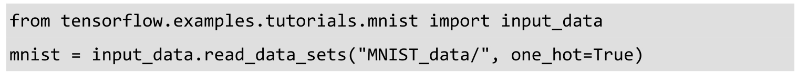
然后查看mnist这个数据集的情况，可以看到训练集有55000个样本，测试集有10000个样本，同时验证集有5000个样本。每一个样本都有它对应的标注信息，即label。我们将在训练集上训练模型，在验证集上检验效果并决定何时完成训练，最后我们在测试集评测模型的效果（可通过准确率、召回率、F1-score等评测）。
前面提到我们的图像是28像素×28像素大小的灰度图片，如图3-2所示。空白部分全部为0，有笔迹的地方根据颜色深浅有0到1之间的取值。同时，我们可以发现每个样本有784维的特征，也就是28×28个点的展开成1维的结果（28×28=784）。因此，这里丢弃了图片的二维结构方面的信息，只是把一张图片变成一个很长的1维向量。读者可能会问，图片的空间结构信息不是很有价值吗，为什么我们要丢弃呢？因为这个数据集的分类任务比较简单，同时也是我们使用TensorFlow的第一次尝试，我们不需要建立一个太复杂的模型，所以简化了问题，丢弃空间结构的信息。后面的章节将使用卷积神经网络对空间结构信息进行利用，并取得更高的准确率。我们将图片展开成1维向量时，顺序并不重要，只要每一张图片都是用同样的顺序进行展开的就可以。
图3-2 手写数字灰度信息示例
我们的训练数据的特征是一个55000×784的Tensor，第一个维度是图片的编号，第二个维度是图片中像素点的编号，如图3-3所示。同时训练的数据Label是一个55000×10 的Tensor，如图3-4所示，这里是对10个种类进行了one-hot编码，Label是一个10维的向量，只有1个值为1，其余为0。比如数字0，对应的Label就是[1,0,0,0,0,0,0,0,0,0]，数字5对应的Label就是[0,0,0,0,0,1,0,0,0,0]，数字n 就代表对应位置的值为1。
图3-3 MNIST训练数据的特征
图3-4 MNIST训练数据的Label
准备好数据后，接下来就要设计算法了，这里使用一个叫作Softmax Regression的算法训练手写数字识别的分类模型。我们的数字都是0～9之间的，所以一共有10个类别，当我们的模型对一张图片进行预测时，Softmax Regression会对每一种类别估算一个概率：比如预测是数字3的概率为80%，是数字5的概率为5%，最后取概率最大的那个数字作为模型的输出结果。
当我们处理多分类任务时，通常需要使用Softmax Regression模型。即使后面章节的卷积神经网络或者循环神经网络，如果是分类模型，最后一层也同样是Softmax Regression。它的工作原理很简单，将可以判定为某类的特征相加，然后将这些特征转化为判定是这一类的概率。上述特征可以通过一些简单的方法得到，比如对所有像素求一个加权和，而权重是模型根据数据自动学习、训练出来的。比如某个像素的灰度值大代表很可能是数字n时，这个像素的权重就很大；反之，如果某个像素的灰度值大代表不太可能是数字n时，这个像素的权重就可能是负的。图3-5所示为这样的一些特征，其中明亮区域代表负的权重，灰暗区域代表正的权重。
图3-5 不同数字可能对应的特征权重
我们可以将这些特征写成如下公式：i 代表第i 类，j 代表一张图片的第j 个像素。bi 是bias，顾名思义就是这个数据本身的一些倾向，比如大部分数字都是0，那么0的特征对应的bias就会很大。
接下来对所有特征计算softmax，结果如下。简单说就是都计算一个exp函数，然后再进行标准化（让所有类别输出的概率值和为1）。
softmax(x)=normalize exp(x)
其中判定为第i 类的概率就可由下面的公式得到。
我们先对各个类的特征求exp函数，然后对它们标准化，使得和为1，特征的值越大的类，最后输出的概率也越大；反之，特征的值越小的类，输出的概率也越小。最后的标准化操作保证所有的概率没有为0或者为负数的，同时它们的和为1，也满足了概率的分布。如果将整个计算过程可视化，结果如图3-6所示。
图3-6 Softmax Regression的流程
接着，如果将图3-6中的连线变成公式，结果如图3-7所示，最后将元素相乘变成矩阵乘法，结果如图3-8所示。
图3-7 Softmax Regression 元素乘法示例
图3-8 Softmax Regression 矩阵乘法示例
上述矩阵运算表达写成公式的话，可以用下面这样简洁的一行表达。
y =softmax(Wx +b )
接下来就使用TensorFlow实现一个Softmax Regression。其实在Python中，当还没有TensorFlow时，通常使用NumPy做密集的运算操作。因为NumPy是使用C和一部分fortran语言编写的，并且调用openblas、mkl等矩阵运算库，因此效率很高。其中每一个运算操作的结果都要返回到Python中，但不同语言之间传输数据可能会带来比较大的延迟。TensorFlow同样也把密集的复杂运算搬到Python外执行，不过做得更彻底。TensorFlow通过定义一个计算图将所有的运算操作全部运行在Python外面，比如通过C++运行在CPU上或者通过CUDA运行在GPU上，而不需要每次把运算完的数据传回Python。
首先载入TensorFlow库，并创建一个新的InteractiveSession，使用这个命令会将这个session注册为默认的session，之后的运算也默认跑在这个session里，不同session之间的数据和运算应该都是相互独立的。接下来创建一个Placeholder，即输入数据的地方。Placeholder的第一个参数是数据类型，第二个参数[None,784]代表tensor的shape，也就是数据的尺寸，这里None代表不限条数的输入，784代表每条输入是一个784维的向量。
接下来要给Softmax Regression模型中的weights和biases创建Variable对象，第1章中提到Variable是用来存储模型参数的。不同于存储数据的tensor一旦使用掉就会消失，Variable在模型训练迭代中是持久化的（比如一直存放在显存中），它可以长期存在并且在每轮迭代中被更新。我们把weights和biases全部初始化为0，因为模型训练时会自动学习合适的值，所以对这个简单模型来说初始值不太重要。不过对复杂的卷积网络、循环网络或者比较深的全连接网络，初始化的方法就比较重要，甚至可以说至关重要。注意这里W的shape是[784,10]，784是特征的维数，而后面的10代表有10类，因为Label在one-hot编码后是10维的向量。
接下来就要实现Softmax Regression算法，我们回忆一下上面提到的公式：y =softmax(Wx +b
)。改写成TensorFlow的语言就是下面这行代码。
y = tf.nn.softmax(tf.matmul(x,W) + b)
Softmax是tf.nn下面的一个函数，而tf.nn则包含了大量神经网络的组件，tf.matmul 是TensorFlow中的矩阵乘法函数。我们使用一行简单的代码就定义了Softmax Regression，语法和直接写数学公式很像。然而TensorFlow最厉害的地方还不是定义公式，而是将forward和backward的内容都自动实现（无论CPU或是GPU上），只要接下来定义好loss，训练时将会自动求导并进行梯度下降，完成对Softmax Regression模型参数的自动学习。
为了训练模型，我们需要定义一个loss function来描述模型对问题的分类精度。Loss越小，代表模型的分类结果与真实值的偏差越小，也就是说模型越精确。我们一开始给模型填充了全零的参数，这样模型会有一个初始的loss，而训练的目的是不断将这个loss减小，直到达到一个全局最优或者局部最优解。对多分类问题，通常使用cross-entropy作为loss function。Cross-entropy最早出自信息论（Information Theory）中的信息熵（与压缩比率等有关），然后被用到很多地方，包括通信、纠错码、博弈论、机器学习等。Cross-entropy的定义如下，其中y 是预测的概率分布，y′ 是真实的概率分布（即Label的one-hot编码），通常可以用它来判断模型对真实概率分布估计的准确程度。
在TensorFlow中定义cross-entropy也很容易，代码如下。
先定义一个placeholder，输入是真实的label，用来计算cross-entropy。这里的y_ ∗ tf.log(y)也就是前面公式中的y′i log(yi )，tf.reduce_sum也就是求和的∑，而tf.reduce_mean则用来对每个batch数据结果求均值。
现在我们有了算法Softmax Regression的定义，又有了损失函数cross-entropy的定义，只需要再定义一个优化算法即可开始训练。我们采用常见的随机梯度下降SGD（Stochastic Gradient Descent）。定义好优化算法后，TensorFlow就可以根据我们定义的整个计算图（我们前面定义的各个公式已经自动构成了计算图）自动求导，并根据反向传播（Back Propagation）算法进行训练，在每一轮迭代时更新参数来减小loss。在后台TensorFlow会自动添加许多运算操作（Operation）来实现刚才提到的反向传播和梯度下降，而给我们提供的就是一个封装好的优化器，只需要每轮迭代时feed数据给它就好。我们直接调用tf.train.GradientDescentOptimizer，并设置学习速率为0.5，优化目标设定为cross-entropy，得到进行训练的操作train_step。当然，TensorFlow中也有很多其他的优化器，使用起来也非常方便，只需要修改函数名即可。
train_step = tf.train.GradientDescentOptimizer(0.5).minimize(cross_entropy)
下一步使用TensorFlow的全局参数初始化器tf.global_variables_initializer，并直接执行它的run方法。
tf.global_variables_initializer().run()
最后一步，我们开始迭代地执行训练操作train_step。这里每次都随机从训练集中抽取100条样本构成一个mini-batch，并feed给placeholder，然后调用train_step对这些样本进行训练。使用一小部分样本进行训练称为随机梯度下降，与每次使用全部样本的传统的梯度下降对应。如果每次训练都使用全部样本，计算量太大，有时也不容易跳出局部最优。因此，对于大部分机器学习问题，我们都只使用一小部分数据进行随机梯度下降，这种做法绝大多数时候会比全样本训练的收敛速度快很多。
现在我们已经完成了训练，接下来就可以对模型的准确率进行验证。下面代码中的tf.argmax是从一个tensor中寻找最大值的序号，tf.argmax(y,1)就是求各个预测的数字中概率最大的那一个，而tf.argmax(y_,1)则是找样本的真实数字类别。而tf.equal方法则用来判断预测的数字类别是否就是正确的类别，最后返回计算分类是否正确的操作correct_predition。
correct_prediction = tf.equal(tf.argmax(y,1),tf.argmax(y_,1))
我们统计全部样本预测的accuracy，这里需要先用tf.cast将之前correct_prediction输出的bool值转换为float32，再求平均。
accuracy = tf.reduce_mean(tf.cast(correct_prediction,tf.float32))
我们将测试数据的特征和Label输入评测流程accuracy，计算模型在测试集上的准确率，再将结果打印出来。使用Softmax Regression对MNIST数据进行分类识别，在测试集上平均准确率可达92%左右。
print(accuracy.eval({x: mnist.test.images,y_: mnist.test.labels}))
通过上面的这个简单例子，我们使用TensorFlow实现了一个简单的机器学习算法Softmax Regression，这可以算作是一个没有隐含层的最浅的神经网络。我们来回忆一下整个流程，我们做的事情可以分为4个部分。
（1）定义算法公式，也就是神经网络forward时的计算。
（2）定义loss，选定优化器，并指定优化器优化loss。
（3）迭代地对数据进行训练。
（4）在测试集或验证集上对准确率进行评测。
这几个步骤是我们使用TensorFlow进行算法设计、训练的核心步骤，也将会贯穿之后其他类型神经网络的章节。需要注意的是，TensorFlow和Spark类似，我们定义的各个公式其实只是Computation Graph，在执行这行代码时，计算还没有实际发生，只有等调用run方法，并feed数据时计算才真正执行。比如cross_entropy、train_step、accuracy等都是计算图中的节点，而并不是数据结果，我可以通过调用run方法执行这些节点或者说运算操作来获取结果。
我们再来看看Softmax Regression达到的效果，准确率为92%，虽然是一个还不错的数字，但是还达不到实用的程度。手写数字的识别的主要应用场景是识别银行支票，如果准确率不够高，可能会引起严重的后果。后面我们将讲解使用多层感知机和卷积网络，来解决MNIST手写数字识别问题的方法。事实上，MNIST数字识别也算是卷积神经网络的首个经典应用，LeCun的LeNet5在20世纪90年代就已经提出，而且可以达到99%的准确率，可以说是领先时代的重大突破。可惜后面因为计算能力制约，卷积神经网络的研究一直没有太大突破，神经网络也一度被SVM等超越而陷入低谷。在20世纪初的很多年里，神经网络几乎被大家遗忘，相关研究一直不受重视，这一段是深度学习的一次冰期（神经网络的研究一共有三次大起大落）。2006年，Hinton等人提出逐层预训练来初始化权重的方法及利用多层RBM堆叠的神经网络DBN，神经网络才逐渐重回大家视野。Hinton揭示了神经网络的最大价值在于对特征的自动提取和抽象，它免去了人工提取特征的烦琐，可以自动找出复杂且有效的高阶特征。这一点类似人的学习过程，先理解简单概念，再逐渐递进到复杂概念，神经网络每加深一层，可以提取的特征就更抽象。随着2012年Hinton学生的研究成果AlexNet以巨大优势摘得了当年ImageNet ILSVRC比赛的第一名，深度学习的热潮被再次点燃。ImageNet是一个非常著名的图片数据集，大致有几百万张图片和1000类（大部分是动物，约有几百类的动物）。官方会每年举办一次大型的比赛，有图片分类、目标位置检测、视频检测、图像分割等任务。在此之前，参赛读物都是做特征工程，然后使用SVM等模型进行分类。而AlexNet夺冠后，每一年ImageNet ILSVRC的冠军都是依靠深度学习、卷积神经网络，而且趋势是层数越深，效果越好。2015年，微软研究院提出的ResNet甚至达到惊人的152层深，并在分类准确率上有了突破性的进展。至此，深度学习在复杂机器学习任务上的巨大优势正式确立，现在基本在任何问题上，仔细设计的神经网络都可以取得比其他算法更好的准确率和泛化性，前提是有足够多的数据。
接下来的章节，我们会继续使用其他算法在MNIST数据集上进行训练，事实上，现在的Softmax Regression加入隐含层变成一个正统的神经网络后，再结合Dropout、Adagrad、ReLU等技术准确率就可以达到98%。引入卷积层、池化层后，也可以达到99%的正确率。而目前基于卷积神经网络的state-of-the-art的方法已经可以达到99.8%的正确率。
4 TensorFlow实现自编码器及多层感知机
4.1 自编码器简介
传统机器学习任务很大程度上依赖于好的特征工程，比如对数值型、日期时间型、种类型等特征的提取。特征工程往往是非常耗时耗力的，在图像、语音和视频中提取到有效的特征就更难了，工程师必须在这些领域有非常深入的理解，并且使用专业算法提取这些数据的特征。深度学习则可以解决人工难以提取有效特征的问题，它可以大大缓解机器学习模型对特征工程的依赖。深度学习在早期一度被认为是一种无监督的特征学习（Unsupervised Feature Learning），模仿了人脑的对特征逐层抽象提取的过程。这其中有两点很重要：一是无监督学习，即我们不需要标注数据就可以对数据进行一定程度的学习，这种学习是对数据内容的组织形式的学习，提取的是频繁出现的特征；二是逐层抽象，特征是需要不断抽象的，就像人总是从简单基础的概念开始学习，再到复杂的概念。学生们要从加减乘除开始学起，再到简单函数，然后到微积分，深度学习也是一样，它从简单的微观的特征开始，不断抽象特征的层级，逐渐往复杂的宏观特征转变。
例如在图像识别问题中，假定我们有许多汽车的图片，要如何判定这些图片是汽车呢？如果我们从像素级特征开始进行训练分类器，那么绝大多数算法很难有效地工作。如果我们提取出高阶的特征，比如汽车的车轮、汽车的车窗、汽车的车身，那么使用这些高阶特征便可以非常准确地对图片进行分类，这就是高阶特征的效果。不过任何高阶特征都是由底层特征组合而成的，比如车轮由橡胶轮胎、车轴、轮辐等组成。而其中每一个组件都是由更小单位的特征组合而成的，比如橡胶轮胎由许多黑色的同心圆组成，而这些同心圆也都由许多圆弧曲线组成，圆弧曲线都由像素组成。我们将前面的过程逆过来，将一张图片的原始像素慢慢抽象，从像素组成点、线，再将点、线组合成小零件，再将小零件组成车轮、车窗、车身等高阶特别，这便是深度学习在训练过程中所做的特征学习。
早年由学者们研究稀疏编码（Sparse Coding）时，他们收集了大量黑白风景照，并从中提取了许多16像素×16像素的图像碎片。他们发现几乎所有的图像碎片都可以由64种正交的边组合得到，如图4-1所示，并且组合出一张图像碎片需要的边的数量是很少的，即稀疏的。学者同时发现声音也存在这种情况，他们从大量的未标注音频中发现了20种基本结构，绝大多数声音可以由这些基本结构线性组合得到。这其实就是特征的稀疏表达，使用少量的基本特征组合拼装得到更高层抽象的特征。通常我们也需要多层的神经网络，对每一层神经网络来说，前一层的输出都是未加工的像素，而这一层则是对像素进行加工组织成更高阶的特征（即前面提到的将边组合成图像碎片）。
图4-1 图像碎片可由少量的基本结构稀疏表达
我们来看一下实际的例子。假如我们有许多基本结构，比如指向各个方向的边、白块、黑块等，如图4-2所示，我们可以通过不同方式组合出不同的高阶特征，并最终拼出不同的目标物体。这些基本结构就是basis，在人脸识别任务中，我们可以使用它们拼出人脸的不同器官，比如鼻子、嘴、眼睛、眉毛、脸颊等，这些器官又可以向上一层拼出不同样式的人脸，最后模型通过在图片中匹配这些不同样式的人脸（即高阶特征）来进行识别。同样，basis可以拼出汽车上不同的组件，最终拼出各式各样的车型；也可以拼出大象身体的不同部位，最后组成各种尺寸、品种、颜色的大象；还可以拼出椅子的凳、座、靠背等，最后组成不同款式的椅子。特征是可以不断抽象转为高一级的特征的，那我们如何找到这些基本结构，然后如何抽象呢？如果我们有很多标注的数据，则可以训练一个深层的神经网络。如果没有标注的数据呢？这种情况下，我们依然可以使用无监督的自编码器来提取特征。自编码器（AutoEncoder），顾名思义，即可以使用自身的高阶特征编码自己。自编码器其实也是一种神经网络，它的输入和输出是一致的，它借助稀疏编码的思想，目标是使用稀疏的一些高阶特征重新组合来重构自己。因此，它的特点非常明显：第一，期望输入/输出一致；第二，希望使用高阶特征来重构自己，而不只是复制像素点。
图4-2 由基本结构不断抽象为高阶特征
Hinton教授在Science 发表文章Reducing the dimensionality of data with neural networks 23 ，讲解了使用自编码器对数据进行降维的方法。Hinton还提出了基于深度信念网络（Deep Belief Networks24，DBN，由多层RBM堆叠而成）可使用无监督的逐层训练的贪心算法，为训练很深的网络提供了一个可行方案：我们可能很难直接训练极深的网络，但是可以用无监督的逐层训练提取特征，将网络的权重初始化到一个比较好的位置，辅助后面的监督训练。无监督的逐层训练，其思想和自编码器（AutoEncoder）非常相似。后者的目标是让神经网络的输出能和原始输入一致，相当于学习一个恒等式y =x，如图4-3所示。自编码器的输入节点和输出节点的数量是一致的，但如果只是单纯地逐个复制输入节点则没有意义，像前面提到的，自编码器通常希望使用少量稀疏的高阶特征来重构输入，所以我们可以加入几种限制。
（1）如果限制中间隐含层节点的数量，比如让中间隐含层节点的数量小于输入/输出节点的数量，就相当于一个降维的过程。此时已经不可能出现复制所有节点的情况，因为中间节点数小于输入节点数，那只能学习数据中最重要的特征复原，将可能不太相关的内容去除。此时，如果再给中间隐含层的权重加一个L1的正则，则可以根据惩罚系数控制隐含节点的稀疏程度，惩罚系数越大，学到的特征组合越稀疏，实际使用（非零权重）的特征数量越少。
（2）如果给数据加入噪声，那么就是Denoising AutoEncoder（去噪自编码器），我们将从噪声中学习出数据的特征。同样，我们也不可能完全复制节点，完全复制并不能去除我们添加的噪声，无法完全复原数据。所以唯有学习数据频繁出现的模式和结构，将无规律的噪声略去，才可以复原数据。
去噪自编码器中最常使用的噪声是加性高斯噪声（Additive Gaussian Noise，AGN），其结构如图4-3所示。当然也可以使用Masking Noise，即有随机遮挡的噪声，这种情况下，图像中的一部分像素被置为0，模型需要从其他像素的结构推测出这些被遮挡的像素是什么，因此模型依然需要学习图像中抽象的高阶特征。
图4-3 自编码器结构图，学习目标是使用少量高阶特征重构输入
如果自编码器的隐含层只有一层，那么其原理类似于主成分分析（PCA）。Hinton提出的DBN模型有多个隐含层，每个隐含层都是限制性玻尔兹曼机RBM（Restricted Boltzman Machine，一种具有特殊连接分布的神经网络）。DBN训练时，需要先对每两层间进行无监督的预训练（pre-training），这个过程其实就相当于一个多层的自编码器，可以将整个网络的权重初始化到一个理想的分布。最后，通过反向传播算法调整模型权重，这个步骤会使用经过标注的信息来做监督性的分类训练。当年DBN给训练深层的神经网络提供了可能性，它能解决网络过深带来的梯度弥散（Gradient Vanishment）问题，让训练变得容易。简单地说，Hinton的思路就是先用自编码器的方法进行无监督的预训练，提取特征并初始化权重，然后使用标注信息进行监督式的训练。当然自编码器的作用不仅局限于给监督训练做预训练，直接使用自编码器进行特征提取和分析也是可以的。现实中数据最多的还是未标注的数据，因此自编码器拥有许多用武之地。
4.2 TensorFlow实现自编码器
下面我们就开始实现最具代表性的去噪自编码器。去噪自编码器的使用范围最广也最通用。而其他几种自编码器，读者可以对代码加以修改自行实现，其中无噪声的自编码器只需要去掉噪声，并保证隐含层节点小于输入层节点；Masking Noise的自编码器只需要将高斯噪声改为随机遮挡噪声；Variational AutoEncoder（VAE）则相对复杂，VAE对中间节点的分布有强假设，拥有额外的损失项，且会使用特殊的SGVB（Stochastic Gradient Variational Bayes）算法进行训练。目前VAE还在生成模型中发挥了很大的作用。
这里我们依然是先导入常用库NumPy，还有Scikit-learn中的preprocessing模块，这是一个对数据进行预处理的常用模块，之后我们会使用其中的数据标准化功能。同时本节依然使用MNIST数据集，因此也导入TensorFlow中MNIST数据的加载模块。本节代码主要来自TensorFlow的开源实现25。
我们的自编码器中会使用到一种参数初始化方法xavier initialization26，需要先定义好它。Xavier初始化器在Caffe的早期版本中被频繁使用，它的特点是会根据某一层网络的输入、输出节点数量自动调整最合适的分布。Xaiver Glorot和深度学习三巨头之一的Yoshua Bengio在一篇论文中指出，如果深度学习模型的权重初始化得太小，那信号将在每层间传递时逐渐缩小而难以产生作用，但如果权重初始化得太大，那信号将在每层间传递时逐渐放大并导致发散和失效。而Xaiver初始化器做的事情就是让权重被初始化得不大不小，正好合适。从数学的角度分析，Xavier就是让权重满足0均值，同时方差为分布可以用均匀分布或者高斯分布。如下代码所示，我们通过tf.random_uniform创建了一个范围内的均匀分布，而它的方差根据公式D(x )=(max-min ) 2 /12刚好等于因此，这里实现的就是标准的均匀分布的Xaiver初始化器，其中fan_in是输入节点的数量，fan_out是输出节点的数量。
下面我们就开始定义一个去噪自编码的class，方便以后使用。这个类会包含一个构建函数init()，还有一些常用的成员函数，因此会比较长，下面会分为几个代码段讲解，我们先来看构建函数。
init函数包含这样几个输入：n_input（输入变量数）、n_hidden（隐含层节点数）、transfer_function（隐含层激活函数，默认为softplus）、optimizer（优化器，默认为Adam）、scale（高斯噪声系数，默认为0.1）。其中，class内的scale参数做成了一个placeholder，参数初始化则使用了接下来定义的_initialize_weights函数。这里需要注意的是，我们只使用了一个隐含层，有需要的读者可以自行尝试多添加几个隐含层。
接下来开始定义网络结构，我们为输入x创建一个维度为n_input的placeholder。然后建立一个能提取特征的隐含层，我们先将输入x加上噪声，即self.x+scale∗
tf.random_normal((n_input,))，然后用tf.matmul将加了噪声的输入与隐含层的权重w1相乘，并使用tf.add加上隐含层的偏置b1，最后使用self.transfer对结果进行激活函数处理。经过隐含层后，我们需要在输出层进行数据复原、重建操作（即建立reconstruction层），这里我们就不需要激活函数了，直接将隐含层的输出self.hidden乘上输出层的权重w2，再加上输出层的偏置b2即可。
接下来定义自编码器的损失函数，这里直接使用平方误差（Squared Error）作为cost，即用tf.subtract计算输出（self.reconstruction）与输入（self.x）之差，再使用tf.pow求差的平方，最后使用tf.reduce_sum求和即可得到平方误差。再定义训练操作为优化器self.optimizer对损失self.cost进行优化。最后创建Session，并初始化自编码器的全部模型参数。
下面来看一下参数初始化函数_initialize_weights，先创建一个名为all_weights的字典dict，然后将w1、b1、w2、b2全部存入其中，最后返回all_weights。其中w1需要使用前面定义的xavier_init函数初始化，我们直接传入输入节点数和隐含层节点数，然后xavier即可返回一个比较适合于softplus等激活函数的权重初始分布，而偏置b1只需要使用tf.zeros全部置为0即可。对于输出层self.reconstruction，因为没有使用激活函数，这里将w2、b2全部初始化为0即可。
我们定义计算损失cost及执行一步训练的函数partial_fit。函数里只需让Session执行两个计算图的节点，分别是损失cost和训练过程optimizer，输入的feed_dict包括输入数据x，以及噪声的系数scale。函数partial_fit做的就是用一个batch数据进行训练并返回当前的损失cost。
我们也需要一个只求损失cost的函数calc_total_cost，这里就只让Session执行一个计算图节点self.cost，传入的参数和前面的partial_fit一致。这个函数是在自编码器训练完毕后，在测试集上对模型性能进行评测时会用到的，它不会像partial_fit那样触发训练操作。
我们还定义了transform函数，它返回自编码器隐含层的输出结果。它的目的是提供一个接口来获取抽象后的特征，自编码器的隐含层的最主要功能就是学习出数据中的高阶特征。
我们再定义generate函数，它将隐含层的输出结果作为输入，通过之后的重建层将提取到的高阶特征复原为原始数据。这个接口和前面的transform正好将整个自编码器拆分为两部分，这里的generate接口是后半部分，将高阶特征复原为原始数据的步骤。
接下来定义reconstruct函数，它整体运行一遍复原过程，包括提取高阶特征和通过高阶特征复原数据，即包括transform和generate两块。输入数据是原数据，输出数据是复原后的数据。
这里的getWeights函数作用是获取隐含层的权重w1。
而getBiases函数则是获取隐含层的偏置系数b1。
至此，去噪自编码器的class就全部定义完了，包括神经网络的设计、权重的初始化，以及几个常用的成员函数（transform、generate等，他们属于计算图中的子图）。接下来使用定义好的AGN自编码器在MNIST数据集上进行一些简单的性能测试，看看模型对数据的复原效果究竟如何。
接下来依然使用TensorFlow提供的读取示例数据的函数载入MNIST数据集。
mnist = input_data.read_data_sets(‘MNIST_data’,one_hot = True)
先定义一个对训练、测试数据进行标准化处理的函数。标准化即让数据变成0均值，且标准差为1的分布。方法就是先减去均值，再除以标准差。我们直接使用sklearn.preprossing的StandardScaler这个类，先在训练集上进行fit，再将这个Scaler用到训练数据和测试数据上。这里需要注意的是，必须保证训练、测试数据都使用完全相同的Scaler，这样才能保证后面模型处理数据时的一致性，这也就是为什么先在训练数据上fit出一个共用的Scaler的原因。
再定义一个获取随机block数据的函数：取一个从0到len(data) –
batch_size之间的随机整数，再以这个随机数作为block的起始位置，然后顺序取到一个batch size的数据。需要注意的是，这属于不放回抽样，可以提高数据的利用效率。
使用之前定义的standard_scale函数对训练集、测试集进行标准化变换。
X_train,X_test = standard_scale(mnist.train.images,mnist.test.images)
接下来定义几个常用参数，总训练样本数，最大训练的轮数（epoch）设为20，batch_size设为128，并设置每隔一轮（epoch）就显示一次损失cost。
创建一个AGN自编码器的实例，定义模型输入节点数n_input为784，自编码器的隐含层节点数n_hidden为200，隐含层的激活函数transfer_function为softplus，优化器optimizer为Adam且学习速率为0.001，同时将噪声的系数scale设为0.01。
下面开始训练过程，在每一轮（epoch）循环开始时，我们将平均损失avg_cost设为0，并计算总共需要的batch数（通过样本总数除以batch大小），注意这里使用的是不放回抽样，所以并不能保证每个样本都被抽到并参与训练。然后在每一个batch的循环中，先使用get_random_block_from_data函数随机抽取一个block的数据，然后使用成员函数partial_fit训练这个batch的数据并计算当前的cost，最后将当前的cost整合到avg_cost中。在每一轮迭代后，显示当前的迭代数和这一轮迭代的平均cost。我们在第一轮迭代时，cost大约为19000，在最后一轮迭代时，cost大约为7000，再接着训练cost也很难继续降低了。读者如果感兴趣，可以通过调整batch_size、epoch数、优化器、自编码器的隐含层数、隐含节点数等，来尝试获得更低的cost。
最后对训练完的模型进行性能测试，这里使用之前定义的成员函数cal_total_cost对测试集X_test进行测试，评价指标依然是平方误差，如果使用示例中的参数，损失值约为60万。
print(“Total cost: “ + str(autoencoder.calc_total_cost(X_test)))
至此，去噪自编码器的TensorFlow实现就全部结束了。读者可以发现，实现自编码器和实现一个单隐含层的神经网络差不多，只不过是在数据输入时做了标准化，并加上了一个高斯噪声，同时我们的输出结果不是数字分类结果，而是复原的数据，因此不需要用标注过的数据进行监督训练。自编码器作为一种无监督学习的方法，它与其他无监督学习的主要不同在于，它不是对数据进行聚类，而是提取其中最有用、最频繁出现的高阶特征，根据这些高阶特征重构数据。在深度学习发展早期非常流行的DBN，也是依靠这种思想，先对数据进行无监督的学习，提取到一些有用的特征，将神经网络权重初始化到一个较好的分布，然后再使用有标注的数据进行监督训练，即对权重进行fine-tune。
现在，无监督式预训练的使用场景比以前少了许多，训练全连接的MLP或者CNN、RNN时，我们都不需要先使用无监督训练提取特征。但是无监督学习乃至AutoEncoder依然是非常有用的。现实生活中，大部分的数据都是没有标注信息的，但人脑就很擅长处理这些数据，我们会提取其中的高阶抽象特征，并使用在其他地方。自编码器作为深度学习在无监督领域的尝试是非常成功的，同时无监督学习也将是深度学习接下来的一个重要发展方向。
4.3 多层感知机简介
在第3章中我们使用TensorFlow实现了一个简单的Softmax Regression模型，这个线性模型最大的特点就是简单易用，但是拟合能力不强。Softmax Regression可以算是多分类问题logistic regression，它和传统意义上的神经网络的最大区别是没有隐含层。隐含层是神经网络的一个重要概念，它是指除输入、输出层外，中间的那些层。输入层和输出层是对外可见的，因此也被称作可视层，而中间层不直接暴露出来，是模型的黑箱部分，通常也比较难具有可解释性，所以一般被称作隐含层。有了隐含层，神经网络就具有了一些特殊的属性，比如引入非线性的隐含层后，理论上只要隐含节点足够多，即使只有一个隐含层的神经网络也可以拟合任意函数。同时隐含层越多，越容易拟合复杂函数。有理论研究表明，为了拟合复杂函数需要的隐含节点的数目，基本上随着隐含层的数量增多呈指数下降趋势。也就是说层数越多，神经网络所需要的隐含节点可以越少。这也是深度学习的特点之一，层数越深，概念越抽象，需要背诵的知识点（神经网络隐含节点）就越少。不过实际使用中，使用层数较深的神经网络会遇到许多困难，比如容易过拟合、参数难以调试、梯度弥散，等等。对这些问题我们需要很多Trick来解决，在最近几年的研究中，越来越多的方法，比如Dropout27、Adagrad28 、ReLU29 等，逐渐帮助我们解决了一部分问题。
过拟合是机器学习中一个常见的问题，它是指模型预测准确率在训练集上升高，但是在测试集上反而下降了，这通常意味着泛化性不好，模型只是记忆了当前数据的特征，不具备推广能力。尤其在神经网络中，因为参数众多，经常出现参数比数据还要多的情况，这就非常容易出现只是记忆了训练集特征的情况。为了解决这个问题，Hinton教授团队提出了一个思路简单但是非常有效的方法，Dropout。在使用复杂的卷积神经网络训练图像数据时尤其有效，它的大致思路是在训练时，将神经网络某一层的输出节点数据随机丢弃一部分。我们可以理解成随机把一张图片50%的点删除掉（即随机将50%的点变成黑点），此时人还是很可能识别出这张图片的类别，当时机器也是可以的。这种做法实质上等于创造出了很多新的随机样本，通过增大样本量、减少特征数量来防止过拟合。Dropout其实也算是一种bagging方法，我们可以理解成每次丢弃节点数据是对特征的一种采样。相当于我们训练了一个ensemble的神经网络模型，对每个样本都做特征采样，只不过没有训练多个神经网络模型，只有一个融合的神经网络。
参数难以调试是神经网络的另一大痛点，尤其是SGD的参数，对SGD设置不同的学习速率，最后得到的结果可能差异巨大。神经网络通常不是一个凸优化的问题，它处处充满了局部最优。SGD本身也不是一个比较稳定的算法，结果可能会在最优解附近波动，而不同的学习速率可能导致神经网络落入截然不同的局部最优之中。不过，通常我们也并不指望能达到全局最优，有理论表示，神经网络可能有很多个局部最优解都可以达到比较好的分类效果，而全局最优反而容易是过拟合的解。我们也可以从人来类推，不同的人有各自迥异的脑神经连接，没有两个人的神经连接方式能完全一致，就像没有两个人的见解能完全相同，但是每个人的脑神经网络（局部最优解）对识别图片中物体类别都有很不错的效果。对SGD，一开始我们可能希望学习速率大一些，可以加速收敛，但是训练的后期又希望学习速率可以小一些，这样可以比较稳定地落入一个局部最优解。不同的机器学习问题所需要的学习速率也不太好设置，需要反复调试，因此就有像Adagrad、Adam30、Adadelta31 等自适应的方法可以减轻调试参数的负担。对于这些优化算法，通常我们使用它默认的参数设置就可以取得一个比较好的效果。而SGD则需要对学习速率、Momentum32、Nesterov33 等参数进行比较复杂的调试，当调试的参数较为适合问题时，才能达到比较好的效果。
梯度弥散（Gradient Vanishment）是另一个影响深层神经网络训练的问题，在ReLU激活函数出现之前，神经网络训练全部都是用Sigmoid作为激活函数。这可能是因为Sigmoid函数具有限制性，输出数值在0～1，最符合概率输出的定义。非线性的Sigmoid函数在信号的特征空间映射上，对中央区的信号增益较大，对两侧区的信号增益小。从生物神经科学的角度来看，中央区酷似神经元的兴奋态，两侧区酷似神经元的抑制态。因而在神经网络训练时，可以将重要特征置于中央区，将非重要特征置于两侧区。可以说，Sigmoid比最初期的线性激活函数y =x ，阶梯激活函数 和好了不少。但是当神经网络层数较多时，Sigmoid函数在反向传播中梯度值会逐渐减小，经过多层的传递后会呈指数级急剧减小，因此梯度值在传递到前面几层时就变得非常小了。这种情况下，根据训练数据的反馈来更新神经网络的参数将会非常缓慢，基本起不到训练的作用。直到ReLU的出现，才比较完美地解决了梯度弥散的问题。ReLU是一个简单的非线性函数y =max(0,x )，它在坐标轴上是一条折线（如图4-4(B)所示），当x ≤0时，y =0；当x>0时，y =x，非常类似于人脑的阈值响应机制（如图4-4(A)所示）。信号在超过某个阈值时，神经元才会进入兴奋和激活的状态，平时则处于抑制状态。ReLU可以很好地传递梯度，经过多层的反向传播，梯度依旧不会大幅缩小，因此非常适合训练很深的神经网络。ReLU从正面解决了梯度弥散的问题，而不需要通过无监督的逐层训练初始化权重来绕行。ReLU对比Sigmoid的主要变化有如下3点。
（1）单侧抑制。
（2）相对宽阔的兴奋边界。
（3）稀疏激活性。
神经科学家在进行大脑能量消耗的研究中发现，神经元编码的工作方式具有稀疏性，推测大脑同时被激活的神经元只有1%～4%。神经元只会对输入信号有少部分的选择性响应，大量不相关的信号被屏蔽，这样可以更高效地提取重要特征。传统的Sigmoid函数则有接近一半的神经元被激活，不符合神经科学的研究。Softplus虽然有单侧抑制，却没有稀疏激活性，因而ReLU函数max(0,x)成了最符合实际神经元的模型。目前，ReLU及其变种（ElU34，PReLU35 ，RReLU36
）已经成为了最主流的激活函数。实践中大部分情况下（包括MLP和CNN，RNN内部主要还是使用Sigmoid、Tanh、Hard Sigmoid）将隐含层的激活函数从Sigmoid替换为ReLU都可以带来训练速度及模型准确率的提升。当然神经网络的输出层一般都还是Sigmoid函数，因为它最接近概率输出分布。
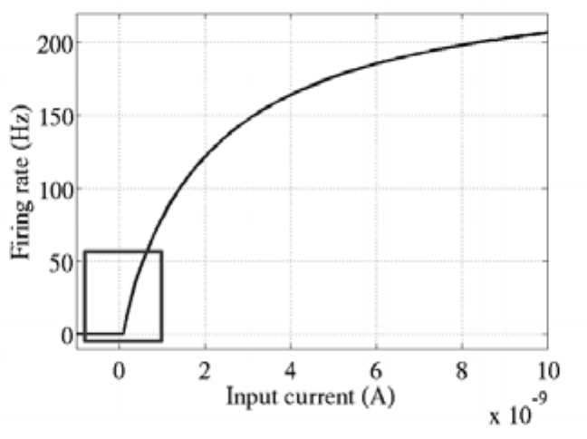
图4-4(A) 神经科学家提出的神经元激活模型
图4-4(B) ReLU激活函数及Softplus激活函数
上面三段分别提到了可以解决多层神经网络问题的Dropout、Adagrad、ReLU等，那么多层神经网络到底有什么显著的能力值得大家探索呢？或者说神经网络的隐含层到底有什么用呢？隐含层的一个代表性的功能是可以解决XOR问题。在早期神经网络的研究中，有学者提出一个尖锐的问题，当时（没有隐含层）的神经网络无法解决XOR的问题。如图4-5所示，假设我们有两个维度的特征，并且有两类样本，（0，0）、（1，1）是灰色，（0，1）、（1，0）是黑色，在这个特征空间中这两类样本是线性不可分的，也就是说，我们无法用一条直线把灰、黑两类分开。没有隐含层的神经网络是线性的，所以不可能对这两类样本进行正确地区分。这是早期神经网络的致命缺点，也直接导致了当时神经网络研究的低谷。当引入了隐含层并使用非线性的激活函数（如Sigmoid、ReLU）后，我们可以使用曲线划分两类样本，可以轻松解决XOR异或函数的分类问题。神经网络的隐含层越多，就可以对原有特征进行越抽象的变换，模型的拟合能力就越强。这就是多层神经网络（或多层感知机，Multi-Layer Perceptron，MLP）的功能所在。
接下来，我们通过例子展示在仅加入一个隐含层的情况下，神经网络对MNIST数据集的分类性能就有显著提升，可以达到98%的准确率。当然，其中使用了Dropout、Adagrad、ReLU等辅助性组件。
图4-5 XOR分类问题
4.4 TensorFlow实现多层感知机
在第3章中我们讲解了使用TensorFlow实现一个完整的Softmax Regression（无隐含层），并在MNIST数据集上取得了大约92%的正确率。现在，我们要给神经网络加上隐含层，并使用4.3节提到的减轻过拟合的Dropout、自适应学习速率的Adagrad，以及可以解决梯度弥散的激活函数ReLU。在TensorFlow中实现这些都是非常方便的，通常只需要调用相应的类或者函数即可。
首先，载入TensorFlow并加载MNIST数据集，创建一个TensorFlow默认的Interactive Session，这样后面执行各项操作就无须指定Session了。
接下来我们要给隐含层的参数设置Variable并进行初始化，这里in_units是输入节点数，h1_units即隐含层的输出节点数设为300（在此模型中隐含节点数设在200~1000范围内的结果区别都不大）。W1、b1是隐含层的权重和偏置，我们将偏置全部赋值为0，并将权重初始化为截断的正态分布，其标准差为0.1，这一步可以通过tf.truncated_normal方便地实现。因为模型使用的激活函数是ReLU，所以需要使用正态分布给参数加一点噪声，来打破完全对称并且避免0梯度。在其他一些模型中，有时还需要给偏置赋上一些小的非零值来避免dead neuron（死亡神经元），不过在这里作用不太明显。而对最后输出层的Softmax，直接将权重W2和偏置b2全部初始化为0即可（上面提到过，对于Sigmoid，在0附近最敏感、梯度最大）。
接下来定义输入x的placeholder。另外因为在训练和预测时，Dropout的比率keep_prob（即保留节点的概率）是不一样的，通常在训练时小于1，而预测时则等于1，所以也把Dropout的比率作为计算图的输入，并定义成一个placeholder。
下面定义模型结构。首先需要一个隐含层，命名为hidden1，可以通过tf.nn.relu(tf.matmul(x ,W 1 )+b 1
)实现一个激活函数为ReLU的隐含层，这个隐含层的计算公式就是y =relu (W1 x +b1
)。接下来，调用tf.nn.dropout实现Dropout的功能，即随机将一部分节点置为0，这里的keep_prob参数即为保留数据而不置为0的比例，在训练时应该是小于1的，用以制造随机性，防止过拟合；在预测时应该等于1，即使用全部特征来预测样本的类别。最后是输出层，也就是第3章介绍的Softmax，这一行代码的功能和之前是一致的。
第3章提到的使用TensorFlow训练神经网络的4个步骤，到目前为止，我们已经完成了4步中的第1步：定义算法公式，即神经网络forward时的计算。接下来继续第2步，定义损失函数和选择优化器来优化loss，这里的损失函数继续使用交叉信息熵，和之前一致，但是优化器选择自适应的优化器Adagrad，并把学习速率设为0.3，这里我们直接使用tf.train.AdagradOptimizer就可以了。类似地，还有Adadelta及Adam等优化器，读者可以自行尝试，不过学习速率可能需要调整。
然后进行第3步，训练步骤，这里有一点和之前不同，我们加入了keep_prob作为计算图的输入，并且在训练时设为0.75，即保留75%的节点，其余的25%置为0。一般来说，对越复杂越大规模的神经网络，Dropout的效果越显著。另外，因为加入了隐含层，我们需要更多的训练迭代来优化模型参数以达到一个比较好的效果。所以一共采用了3000个bacth，每个batch包含100条样本，一共30万的样本，相当于是对全数据集进行了5轮（epoch）迭代。读者也可以尝试增大循环次数，准确率会略有提高。
最后我们进行第4步，对模型进行准确率评测，这里的代码和第3章讲解的评测代码基本一致，但还是需要加入一个keep_prob作为输入。因为是预测部分，所以我们直接令keep_prob等于1即可，这样可以达到模型最好的预测效果。

最终，我们在测试集上可以达到98%的准确率。相比之前的Softmax，我们的误差率由8%下降到2%，对识别银行账单这种精确度要求很高的场景，可以说是飞跃性的提高。而这个提升仅靠增加一个隐含层就实现了，可见多层神经网络的效果有多显著。当然，其中我们也使用了一些Trick进行辅助，比如Dropout、Adagrad、ReLU等，但是起决定性作用的还是隐含层本身，它能对特征进行抽象和转化。
没有隐含层的Softmax Regression只能直接从图像的像素点推断是哪个数字，而没有特征抽象的过程。多层神经网络依靠隐含层，则可以组合出高阶特征，比如横线、竖线、圆圈等，之后可以将这些高阶特征或者说组件再组合成数字，就能实现精准的匹配和分类。隐含层输出的高阶特征（组件）经常是可以复用的，所以每一类的判别、概率输出都共享这些高阶特征，而不是各自连接独立的高阶特征。
同时我们可以发现，新加了一个隐含层，并使用了Dropout、Adagrad和ReLU，而代码没有增加很多，这就是TensorFlow的优势之一。它的代码非常简洁，没有太多的冗余，可以方便地将有用的模块拼装在一起。
总结一下，本节我们介绍了如何实现包含一个隐含层的MLP，对于有更多个隐含层的MLP，读者可以如法炮制。我们讲解了Dropout、Adagrad、ReLU的原理和作用，以及如何在TensorFlow中使用它们。
不过，使用全连接神经网络（Fully Connected Network，FCN，MLP的另一种说法）也是有局限的，即使我们使用很深的网络、很多的隐藏节点、很大的迭代轮数，也很难在MNIST数据集上达到99%以上的准确率。因此第5章我们将介绍卷积神经网络，以及如何在MNIST数据集上使用CNN达到99%以上的准确率，真正满足识别银行支票这种高精度系统的需求。
5 TensorFlow实现卷积神经网络
5.1 卷积神经网络简介
卷积神经网络（Convolutional Neural Network，CNN）最初是为解决图像识别等问题设计的，当然其现在的应用不仅限于图像和视频，也可用于时间序列信号，比如音频信号、文本数据等。在早期的图像识别研究中，最大的挑战是如何组织特征，因为图像数据不像其他类型的数据那样可以通过人工理解来提取特征。在股票预测等模型中，我们可以从原始数据中提取过往的交易价格波动、市盈率、市净率、盈利增长等金融因子，这即是特征工程。但是在图像中，我们很难根据人为理解提取出有效而丰富的特征。在深度学习出现之前，我们必须借助SIFT、HoG等算法提取具有良好区分性的特征，再集合SVM等机器学习算法进行图像识别。如图5-1所示，SIFT对一定程度内的缩放、平移、旋转、视角改变、亮度调整等畸变，都具有不变性，是当时最重要的图像特征提取方法之一。可以说，在之前只能依靠SIFT等特征提取算法才能勉强进行可靠的图像识别。
图5-1 SIFT、HoG等图像特征提取方法
然而SIFT这类算法提取的特征还是有局限性的，在ImageNet ILSVRC比赛的最好结果的错误率也有26%以上，而且常年难以产生突破。卷积神经网络提取的特征则可以达到更好的效果，同时它不需要将特征提取和分类训练两个过程分开，它在训练时就自动提取了最有效的特征。CNN作为一个深度学习架构被提出的最初诉求，是降低对图像数据预处理的要求，以及避免复杂的特征工程。CNN可以直接使用图像的原始像素作为输入，而不必先使用SIFT等算法提取特征，减轻了使用传统算法如SVM时必需要做的大量重复、烦琐的数据预处理工作。和SIFT等算法类似，CNN训练的模型同样对缩放、平移、旋转等畸变具有不变性，有着很强的泛化性。CNN的最大特点在于卷积的权值共享结构，可以大幅减少神经网络的参数量，防止过拟合的同时又降低了神经网络模型的复杂度。CNN的权值共享其实也很像早期的延时神经网络（TDNN），只不过后者是在时间这一个维度上进行权值共享，降低了学习时间序列信号的复杂度。
卷积神经网络的概念最早出自19世纪60年代科学家提出的感受野（Receptive Field37
）。当时科学家通过对猫的视觉皮层细胞研究发现，每一个视觉神经元只会处理一小块区域的视觉图像，即感受野。到了20世纪80年代，日本科学家提出神经认知机（Neocognitron38
）的概念，可以算作是卷积网络最初的实现原型。神经认知机中包含两类神经元，用来抽取特征的S-cells，还有用来抗形变的C-cells，其中S-cells对应我们现在主流卷积神经网络中的卷积核滤波操作，而C-cells则对应激活函数、最大池化（Max-Pooling）等操作。同时，CNN也是首个成功地进行多层训练的网络结构，即前面章节提到的LeCun的LeNet539，而全连接的网络因为参数过多及梯度弥散等问题，在早期很难顺利地进行多层的训练。卷积神经网络可以利用空间结构关系减少需要学习的参数量，从而提高反向传播算法的训练效率。在卷积神经网络中，第一个卷积层会直接接受图像像素级的输入，每一个卷积操作只处理一小块图像，进行卷积变化后再传到后面的网络，每一层卷积（也可以说是滤波器）都会提取数据中最有效的特征。这种方法可以提取到图像中最基础的特征，比如不同方向的边或者拐角，而后再进行组合和抽象形成更高阶的特征，因此CNN可以应对各种情况，理论上具有对图像缩放、平移和旋转的不变性。
一般的卷积神经网络由多个卷积层构成，每个卷积层中通常会进行如下几个操作。
（1）图像通过多个不同的卷积核的滤波，并加偏置（bias），提取出局部特征，每一个卷积核会映射出一个新的2D图像。
（2）将前面卷积核的滤波输出结果，进行非线性的激活函数处理。目前最常见的是使用ReLU函数，而以前Sigmoid函数用得比较多。
（3）对激活函数的结果再进行池化操作（即降采样，比如将2×2的图片降为1×1的图片），目前一般是使用最大池化，保留最显著的特征，并提升模型的畸变容忍能力。
这几个步骤就构成了最常见的卷积层，当然也可以再加上一个LRN40 （Local Response Normalization，局部响应归一化层）层，目前非常流行的Trick还有Batch Normalization等。
一个卷积层中可以有多个不同的卷积核，而每一个卷积核都对应一个滤波后映射出的新图像，同一个新图像中每一个像素都来自完全相同的卷积核，这就是卷积核的权值共享。那我们为什么要共享卷积核的权值参数呢？答案很简单，降低模型复杂度，减轻过拟合并降低计算量。举个例子，如图5-2所示，如果我们的图像尺寸是1000像素×1000像素，并且假定是黑白图像，即只有一个颜色通道，那么一张图片就有100万个像素点，输入数据的维度也是100万。接下来，如果连接一个相同大小的隐含层（100万个隐含节点），那么将产生100万×100万=一万亿个连接。仅仅一个全连接层（Fully Connected Layer），就有一万亿连接的权重要去训练，这已经超出了普通硬件的计算能力。我们必须减少需要训练的权重数量，一是降低计算的复杂度，二是过多的连接会导致严重的过拟合，减少连接数可以提升模型的泛化性。
图像在空间上是有组织结构的，每一个像素点在空间上和周围的像素点实际上是有紧密联系的，但是和太遥远的像素点就不一定有什么关联了。这就是前面提到的人的视觉感受野的概念，每一个感受野只接受一小块区域的信号。这一小块区域内的像素是互相关联的，每一个神经元不需要接收全部像素点的信息，只需要接收局部的像素点作为输入，而后将所有这些神经元收到的局部信息综合起来就可以得到全局的信息。这样就可以将之前的全连接的模式修改为局部连接，之前隐含层的每一个隐含节点都和全部像素相连，现在我们只需要将每一个隐含节点连接到局部的像素节点。假设局部感受野大小是10×10，即每个隐含节点只与10×10个像素点相连，那么现在就只需要10×10×100万=1亿个连接，相比之前的1万亿缩小了10000倍。
图5-2 全连接（左）和局部连接（右）
上面我们通过局部连接（Locally Connect）的方法，将连接数从1万亿降低到1亿，但仍然偏多，需要继续降低参数量。现在隐含层每一个节点都与10×10的像素相连，也就是每一个隐含节点都拥有100个参数。假设我们的局部连接方式是卷积操作，即默认每一个隐含节点的参数都完全一样，那我们的参数不再是1亿，而是100。不论图像有多大，都是这10×10=100个参数，即卷积核的尺寸，这就是卷积对缩小参数量的贡献。我们不需要再担心有多少隐含节点或者图片有多大，参数量只跟卷积核的大小有关，这也就是所谓的权值共享。但是如果我们只有一个卷积核，我们就只能提取一种卷积核滤波的结果，即只能提取一种图片特征，这不是我们期望的结果。好在图像中最基本的特征很少，我们可以增加卷积核的数量来多提取一些特征。图像中的基本特征无非就是点和边，无论多么复杂的图像都是点和边组合而成的。人眼识别物体的方式也是从点和边开始的，视觉神经元接受光信号后，每一个神经元只接受一个区域的信号，并提取出点和边的特征，然后将点和边的信号传递给后面一层的神经元，再接着组合成高阶特征，比如三角形、正方形、直线、拐角等，再继续抽象组合，得到眼睛、鼻子和嘴等五官，最后再将五官组合成一张脸，完成匹配识别。因此我们的问题就很好解决了，只要我们提供的卷积核数量足够多，能提取出各种方向的边或各种形态的点，就可以让卷积层抽象出有效而丰富的高阶特征。每一个卷积核滤波得到的图像就是一类特征的映射，即一个Feature Map。一般来说，我们使用100个卷积核放在第一个卷积层就已经很充足了。那这样的话，如图5-3所示，我们的参数量就是100×100=1万个，相比之前的1亿又缩小了10000倍。因此，依靠卷积，我们就可以高效地训练局部连接的神经网络了。卷积的好处是，不管图片尺寸如何，我们需要训练的权值数量只跟卷积核大小、卷积核数量有关，我们可以使用非常少的参数量处理任意大小的图片。每一个卷积层提取的特征，在后面的层中都会抽象组合成更高阶的特征。而且多层抽象的卷积网络表达能力更强，效率更高，相比只使用一个隐含层提取全部高阶特征，反而可以节省大量的参数。当然，我们需要注意的是，虽然需要训练的参数量下降了，但是隐含节点的数量并没有下降，隐含节点的数量只跟卷积的步长有关。如果步长为1，那么隐含节点的数量和输入的图像像素数量一致；如果步长为5，那么每5×5的像素才需要一个隐含节点，我们隐含节点的数量就是输入像素数量的1/25。
图5-3 局部连接（左）和卷积操作（右）
我们再总结一下，卷积神经网络的要点就是局部连接（Local Connection）、权值共享（Weight Sharing）和池化层（Pooling）中的降采样（Down-Sampling）。其中，局部连接和权值共享降低了参数量，使训练复杂度大大下降，并减轻了过拟合。同时权值共享还赋予了卷积网络对平移的容忍性，而池化层降采样则进一步降低了输出参数量，并赋予模型对轻度形变的容忍性，提高了模型的泛化能力。卷积神经网络相比传统的机器学习算法，无须手工提取特征，也不需要使用诸如SIFT之类的特征提取算法，可以在训练中自动完成特征的提取和抽象，并同时进行模式分类，大大降低了应用图像识别的难度；相比一般的神经网络，CNN在结构上和图片的空间结构更为贴近，都是2D的有联系的结构，并且CNN的卷积连接方式和人的视觉神经处理光信号的方式类似。
大名鼎鼎的LeNet5 诞生于1994年，是最早的深层卷积神经网络之一，并且推动了深度学习的发展。从1988年开始，在多次成功的迭代后，这项由Yann LeCun完成的开拓性成果被命名为LeNet5。LeCun认为，可训练参数的卷积层是一种用少量参数在图像的多个位置上提取相似特征的有效方式，这和直接把每个像素作为多层神经网络的输入不同。像素不应该被使用在输入层，因为图像具有很强的空间相关性，而使用图像中独立的像素直接作为输入则利用不到这些相关性。
LeNet5当时的特性有如下几点。
· 每个卷积层包含三个部分：卷积、池化和非线性激活函数
· 使用卷积提取空间特征
· 降采样（Subsample）的平均池化层（Average Pooling）
· 双曲正切（Tanh）或S型（Sigmoid）的激活函数
· MLP作为最后的分类器
· 层与层之间的稀疏连接减少计算复杂度
LeNet5中的诸多特性现在依然在state-of-the-art卷积神经网络中使用，可以说LeNet5是奠定了现代卷积神经网络的基石之作。Lenet-5的结构如图5-4所示。它的输入图像为32×32的灰度值图像，后面有三个卷积层，一个全连接层和一个高斯连接层。它的第一个卷积层C1包含6个卷积核，卷积核尺寸为5×5，即总共（5×5+1）×6=156个参数，括号中的1代表1个bias，后面是一个2×2的平均池化层S2用来进行降采样，再之后是一个Sigmoid激活函数用来进行非线性处理。而后是第二个卷积层C3，同样卷积核尺寸是5×5，这里使用了16个卷积核，对应16个Feature Map。需要注意的是，这里的16个Feature Map不是全部连接到前面的6个Feature Map的输出的，有些只连接了其中的几个Feature Map，这样增加了模型的多样性。下面的第二个池化层S4和第一个池化层S2一致，都是2×2的降采样。接下来的第三个卷积层C5有120个卷积核，卷积大小同样为5×5，因为输入图像的大小刚好也是5×5，因此构成了全连接，也可以算作全连接层。F6层是一个全连接层，拥有84个隐含节点，激活函数为Sigmoid。LeNet-5最后一层由欧式径向基函数（Euclidean Radial Basis Function）单元组成，它输出最后的分类结果。
图5-4 LeNet-5结构示意图
5.2 TensorFlow实现简单的卷积网络
本节将讲解如何使用TensorFlow实现一个简单的卷积神经网络，使用的数据集依然是MNIST，预期可以达到99.2%左右的准确率。本节将使用两个卷积层加一个全连接层构建一个简单但是非常有代表性的卷积神经网络，读者应该能通过这个例子掌握设计卷积神经网络的要点。
首先载入MNIST数据集，并创建默认的Interactive Session。本节代码主要来自TensorFlow的开源实现41 。
接下来要实现的这个卷积神经网络会有很多的权重和偏置需要创建，因此我们先定义好初始化函数以便重复使用。我们需要给权重制造一些随机的噪声来打破完全对称，比如截断的正态分布噪声，标准差设为0.1。同时因为我们使用ReLU，也给偏置增加一些小的正值（0.1）用来避免死亡节点（dead neurons）。
卷积层、池化层也是接下来要重复使用的，因此也为他们分别定义创建函数。这里的tf.nn.conv2d是TensorFlow中的2维卷积函数，参数中x是输入，W是卷积的参数，比如[5,5,1,32]：前面两个数字代表卷积核的尺寸；第三个数字代表有多少个channel。因为我们只有灰度单色，所以是1，如果是彩色的RGB图片，这里应该是3。最后一个数字代表卷积核的数量，也就是这个卷积层会提取多少类的特征。Strides代表卷积模板移动的步长，都是1代表会不遗漏地划过图片的每一个点。Padding代表边界的处理方式，这里的SAME代表给边界加上Padding让卷积的输出和输入保持同样（SAME）的尺寸。tf.nn.max_pool是TensorFlow中的最大池化函数，我们这里使用2×2的最大池化，即将一个2×2的像素块降为1×1的像素。最大池化会保留原始像素块中灰度值最高的那一个像素，即保留最显著的特征。因为希望整体上缩小图片尺寸，因此池化层的strides也设为横竖两个方向以2为步长。如果步长还是1，那么我们会得到一个尺寸不变的图片。
在正式设计卷积神经网络的结构之前，先定义输入的placeholder，x是特征，y_是真实的label。因为卷积神经网络会利用到空间结构信息，因此需要将1D的输入向量转为2D的图片结构，即从1×784的形式转为原始的28×28的结构。同时因为只有一个颜色通道，故最终尺寸为[-1,28,28,1]，前面的-1代表样本数量不固定，最后的1代表颜色通道数量。这里我们使用的tensor变形函数是tf.reshape。
接下来定义我们的第一个卷积层。我们先使用前面写好的函数进行参数初始化，包括weights和bias，这里的[5,5,1,32]代表卷积核尺寸为5×5，1个颜色通道，32个不同的卷积核。然后使用conv2d函数进行卷积操作，并加上偏置，接着再使用ReLU激活函数进行非线性处理。最后，使用最大池化函数max_pool_2x2对卷积的输出结果进行池化操作。
现在定义第二个卷积层，这个卷积层基本和第一个卷积层一样，唯一的不同是，卷积核的数量变成了64，也就是说这一层的卷积会提取64种特征。
W_conv2 = weight_variable([5,5,32,64])
因为前面经历了两次步长为2×2的最大池化，所以边长已经只有1/4了，图片尺寸由28×28变成了7×7。而第二个卷积层的卷积核数量为64，其输出的tensor尺寸即为7×7×64。我们使用tf.reshape函数对第二个卷积层的输出tensor进行变形，将其转成1D的向量，然后连接一个全连接层，隐含节点为1024，并使用ReLU激活函数。
为了减轻过拟合，下面使用一个Dropout层，Dropout的用法第4章已经讲过，是通过一个placeholder传入keep_prob比率来控制的。在训练时，我们随机丢弃一部分节点的数据来减轻过拟合，预测时则保留全部数据来追求最好的预测性能。
最后我们将Dropout层的输出连接一个Softmax层，得到最后的概率输出。
我们定义损失函数为cross entropy，和之前一样，但是优化器使用Adam，并给予一个比较小的学习速率1e-4。
再继续定义评测准确率的操作，这里和第3章、第4章一样。
下面开始训练过程。首先依然是初始化所有参数，设置训练时Dropout的keep_prob比率为0.5。然后使用大小为50的mini-batch，共进行20000次训练迭代，参与训练的样本数量总共为100万。其中每100次训练，我们会对准确率进行一次评测（评测时keep_prob设为1），用以实时监测模型的性能。
全部训练完成后，我们在最终的测试集上进行全面的测试，得到整体的分类准确率。
最后，这个CNN模型可以得到的准确率约为99.2%，基本可以满足对手写数字识别准确率的要求。相比之前MLP的2%错误率，CNN的错误率下降了大约60%。这其中主要的性能提升都来自于更优秀的网络设计，即卷积网络对图像特征的提取和抽象能力。依靠卷积核的权值共享，CNN的参数量并没有爆炸，降低计算量的同时也减轻了过拟合，因此整个模型的性能有较大的提升。本节我们只实现了一个简单的卷积神经网络，没有复杂的Trick。接下来，我们将实现一个稍微复杂一些的卷积网络，而简单的MNIST数据集已经不适合用来评测其性能，我们将使用CIFAR-1042 数据集进行训练，这也是深度学习可以大幅领先其他模型的一个数据集。
5.3 TensorFlow实现进阶的卷积网络
本节使用的数据集是CIFAR-10，这是一个经典的数据集，包含60000张32×32的彩色图像，其中训练集50000张，测试集10000张。CIFAR-10如同其名字，一共标注为10类，每一类图片6000张。这10类分别是airplane、automobile、bird、cat、deer、dog、frog、horse、ship和truck，其中没有任何重叠的情况，比如automobile只包括小型汽车，truck只包括卡车，也不会在一张图片中同时出现两类物体。它还有一个兄弟版本CIFAR-100，其中标注了100类。这两个数据集是前面章节提到的深度学习之父Geoffrey Hinton和他的两名学生Alex Krizhevsky和Vinod Nair收集的，图片来源于80 million tiny images43 这个数据集，Hinton等人对其进行了筛选和标注。CIFAR-10数据集非常通用，经常出现在各大会议的论文中用来进行性能对比，也曾出现在Kaggle竞赛而为大家所知。图5-5所示为这个数据集的一些示例。
图5-5 CIFAR-10数据集示例
许多论文中都在这个数据集上进行了测试，目前state-of-the-art的工作已经可以达到3.5%的错误率了，但是需要训练很久，即使在GPU上也需要十几个小时。CIFAR-10数据集上详细的Benchmark和排名在classification datasets results上（http://rodrigob.github.io/are_we_there_yet/build/classification_datasets_results.html）。据深度学习三巨头之一LeCun说，现有的卷积神经网络已经可以对CIFAR-10进行很好的学习，这个数据集的问题已经解决了。本节中实现的卷积神经网络没有那么复杂（根据Alex描述的cuda-convnet模型做了些许修改得到），在只使用3000个batch（每个batch包含128个样本）时，可以达到73%左右的正确率。模型在GTX 1080单显卡上大概只需要几十秒的训练时间，如果在CPU上训练则会慢很多。如果使用100k个batch，并结合学习速度的decay（即每隔一段时间将学习速率下降一个比率），正确率最高可以到86%左右。模型中需要训练的参数约为100万个，而预测时需要进行的四则运算总量在2000万次左右。在这个卷积神经网络模型中，我们使用了一些新的技巧。
（1）对weights进行了L2的正则化。
（2）如图5-6所示，我们对图片进行了翻转、随机剪切等数据增强，制造了更多样本。
（3）在每个卷积-最大池化层后面使用了LRN层，增强了模型的泛化能力。
图5-6 数据增强示例（水平翻转，随机裁切）
我们首先下载TensorFlow Models库，以便使用其中提供CIFAR-10数据的类。
然后我们载入一些常用库，比如NumPy和time，并载入TensorFlow Models中自动下载、读取CIFAR-10数据的类。本节代码主要来自TensorFlow的开源实现44 。
接着定义batch_size、训练轮数max_steps，以及下载CIFAR-10数据的默认路径。
这里定义初始化weight的函数，和之前一样依然使用tf.truncated_normal截断的正态分布来初始化权重。但是这里会给weight加一个L2的loss，相当于做了一个L2的正则化处理。在机器学习中，不管是分类还是回归任务，都可能因特征过多而导致过拟合，一般可以通过减少特征或者惩罚不重要特征的权重来缓解这个问题。但是通常我们并不知道该惩罚哪些特征的权重，而正则化就是帮助我们惩罚特征权重的，即特征的权重也会成为模型的损失函数的一部分。可以理解为，为了使用某个特征，我们需要付出loss的代价，除非这个特征非常有效，否则就会被loss上的增加覆盖效果。这样我们就可以筛选出最有效的特征，减少特征权重防止过拟合。这也即是奥卡姆剃刀法则，越简单的东西越有效。一般来说，L1正则会制造稀疏的特征，大部分无用特征的权重会被置为0，而L2正则会让特征的权重不过大，使得特征的权重比较平均。我们使用wl控制L2 loss的大小，使用tf.nn.l2_loss函数计算weight的L2 loss，再使用tf.multiply让L2 loss乘以wl，得到最后的weight loss。接着，我们使用tf.add_to_collection把weight loss统一存到一个collection，这个collection名为“losses”，它会在后面计算神经网络的总体loss时被用上。
下面使用cifar10类下载数据集，并解压、展开到其默认位置。
cifar10.maybe_download_and_extract()
再使用cifar10_input类中的distorted_inputs函数产生训练需要使用的数据，包括特征及其对应的label，这里返回的是已经封装好的tensor，每次执行都会生成一个batch_size的数量的样本。需要注意的是我们对数据进行了Data Augmentation（数据增强）。具体的实现细节，读者可以查看cifar10_input.distorted_inputs函数，其中的数据增强操作包括随机的水平翻转（tf.image.random_flip_left_right）、随机剪切一块24×24大小的图片（tf.random_crop）、设置随机的亮度和对比度（tf.image.random_brightness、tf.image.random_contrast），以及对数据进行标准化tf.image.per_image_whitening（对数据减去均值，除以方差，保证数据零均值，方差为1）。通过这些操作，我们可以获得更多的样本（带噪声的），原来的一张图片样本可以变为多张图片，相当于扩大样本量，对提高准确率非常有帮助。需要注意的是，我们对图像进行数据增强的操作需要耗费大量CPU时间，因此distorted_inputs使用了16个独立的线程来加速任务，函数内部会产生线程池，在需要使用时会通过TensorFlow queue进行调度。
我们再使用cifar10_input.inputs函数生成测试数据，这里不需要进行太多处理，不需要对图片进行翻转或修改亮度、对比度，不过需要裁剪图片正中间的24×24大小的区块，并进行数据标准化操作。
这里创建输入数据的placeholder，包括特征和label。在设定placeholder的数据尺寸时需要注意，因为batch_size在之后定义网络结构时被用到了，所以数据尺寸中的第一个值即样本条数需要被预先设定，而不能像以前一样可以设为None。而数据尺寸中的图片尺寸为24×24，即是裁剪后的大小，而颜色通道数则设为3，代表图片是彩色有RGB三条通道。
做好了准备工作，接下来开始创建第一个卷积层。先使用之前写好的variable_with_weight_loss函数创建卷积核的参数并进行初始化。第一个卷积层使用5×5的卷积核大小，3个颜色通道，64个卷积核，同时设置weight初始化函数的标准差为0.05。我们不对第一个卷积层的weight进行L2的正则，因此wl（weight loss）这一项设为0。下面使用tf.nn.conv2d函数对输入数据image_holder进行卷积操作，这里的步长stride均设为1，padding模式为SAME。把这层的bias全部初始化为0，再将卷积的结果加上bias，最后使用一个ReLU激活函数进行非线性化。在ReLU激活函数之后，我们使用一个尺寸为3×3且步长为2×2的最大池化层处理数据，注意这里最大池化的尺寸和步长不一致，这样可以增加数据的丰富性。再之后，我们使用tf.nn.lrn函数，即LRN对结果进行处理。LRN最早见于Alex那篇用CNN参加ImageNet比赛的论文，Alex在论文中解释LRN层模仿了生物神经系统的“侧抑制”机制，对局部神经元的活动创建竞争环境，使得其中响应比较大的值变得相对更大，并抑制其他反馈较小的神经元，增强了模型的泛化能力。Alex在ImageNet数据集上的实验表明，使用LRN后CNN在Top1的错误率可以降低1.4%，因此在其经典的AlexNet中使用了LRN层。LRN对ReLU这种没有上限边界的激活函数会比较有用，因为它会从附近的多个卷积核的响应（Response）中挑选比较大的反馈，但不适合Sigmoid这种有固定边界并且能抑制过大值的激活函数。
现在来创建第二个卷积层，这里的步骤和第一步很像，区别如下。上一层的卷积核数量为64（即输出64个通道），所以本层卷积核尺寸的第三个维度即输入的通道数也需要调整为64；还有一个需要注意的地方是这里的bias值全部初始化为0.1，而不是0。最后，我们调换了最大池化层和LRN层的顺序，先进行LRN层处理，再使用最大池化层。
在两个卷积层之后，将使用一个全连接层，这里需要先把前面两个卷积层的输出结果全部flatten，使用tf.reshape函数将每个样本都变成一维向量。我们使用get_shape函数，获取数据扁平化之后的长度。接着使用variable_with_weight_loss函数对全连接层的weight进行初始化，这里隐含节点数为384，正态分布的标准差设为0.04，bias的值也初始化为0.1。需要注意的是我们希望这个全连接层不要过拟合，因此设了一个非零的weight loss 值0.04，让这一层的所有参数都被L2正则所约束。最后我们依然使用ReLU激活函数进行非线性化。
接下来的这个全连接层和前一层很像，只不过其隐含节点数下降了一半，只有192个，其他的超参数保持不变。
下面是最后一层，依然先创建这一层的weight，其正态分布标准差设为上一个隐含层的节点数的倒数，并且不计入L2的正则。需要注意的是，这里不像之前那样使用softmax输出最后结果，这是因为我们把softmax的操作放在了计算loss的部分。我们不需要对inference的输出进行softmax处理就可以获得最终分类结果（直接比较inference输出的各类的数值大小即可），计算softmax主要是为了计算loss，因此softmax操作整合到后面是比较合适的。
到这里就完成了整个网络inference的部分。梳理整个网络结构可以得到表5-1。从上到下，依次是整个卷积神经网络从输入到输出的流程。可以观察到，其实设计CNN主要就是安排卷积层、池化层、全连接层的分布和顺序，以及其中超参数的设置、Trick的使用等。设计性能良好的CNN是有一定规律可循的，但是想要针对某个问题设计最合适的网络结构，是需要大量实践摸索的。
表5-1 卷积神经网络结构表
完成了模型inference部分的构建，接下来计算CNN的loss。这里依然使用cross entropy，需要注意的是我们把softmax的计算和cross entropy loss的计算合在了一起，即tf.nn.sparse_softmax_cross_entropy_with_logits。这里使用tf.reduce_mean对cross entropy计算均值，再使用tf.add_to_collection把cross entropy的loss添加到整体losses的collection中。最后，使用tf.add_n将整体losses的collection中的全部loss求和，得到最终的loss，其中包括cross entropy loss，还有后两个全连接层中weight的L2 loss。
接着将logits节点和label_placeholder传入loss函数获得最终的loss。
loss = loss(logits,label_holder)
优化器依然选择Adam Optimizer，学习速率设为1e-3。
train_op = tf.train.AdamOptimizer(1e-3).minimize(loss)
使用tf.nn.in_top_k函数求输出结果中top k的准确率，默认使用top 1，也就是输出分数最高的那一类的准确率。
top_k_op = tf.nn.in_top_k(logits,label_holder,1)
使用tf.InteractiveSession创建默认的session，接着初始化全部模型参数。
这一步是启动前面提到的图片数据增强的线程队列，这里一共使用了16个线程来进行加速。注意，如果这里不启动线程，那么后续的inference及训练的操作都是无法开始的。
tf.train.start_queue_runners()
现在正式开始训练。在每一个step的训练过程中，我们需要先使用session的run方法执行images_train、labels_train的计算，获得一个batch的训练数据，再将这个batch的数据传入train_op和loss的计算。我们记录每一个step花费的时间，每隔10个step会计算并展示当前的loss、每秒钟能训练的样本数量，以及训练一个batch数据所花费的时间，这样就可以比较方便地监控整个训练过程。在GTX 1080上，每秒钟可以训练大约1800个样本，如果batch_size为128，则每个batch大约需要0.066s。损失loss在一开始大约为4.6，在经过了3000步训练后会下降到1.0附近。
接下来评测模型在测试集上的准确率。测试集一共有10000个样本，但是需要注意的是，我们依然要像训练时那样使用固定的batch_size，然后一个batch一个batch地输入测试数据。我们先计算一共要多少个batch才能将全部样本评测完。同时，在每一个step中使用session的run方法获取images_test、labels_test的batch，再执行top_k_op计算模型在这个batch的top 1上预测正确的样本数。最后汇总所有预测正确的结果，求得全部测试样本中预测正确的数量。
最后将准确率的评测结果计算并打印出来。
最终，在CIFAR-10数据集上，通过一个短时间小迭代次数的训练，可以达到大致73%的准确率。持续增加max_steps，可以期望准确率逐渐增加。如果max_steps比较大，则推荐使用学习速率衰减（decay）的SGD进行训练，这样训练过程中能达到的准确率峰值会比较高，大致接近86%。而其中L2正则及LRN层的使用都对模型准确率有提升作用，他们都可以从某些方面提升模型的泛化性。
数据增强（Data Augmentation）在我们的训练中作用很大，它可以给单幅图增加多个副本，提高图片的利用率，防止对某一张图片结构的学习过拟合。这刚好是利用了图片数据本身的性质，图片的冗余信息量比较大，因此可以制造不同的噪声并让图片依然可以被识别出来。如果神经网络可以克服这些噪声并准确识别，那么它的泛化性必然会很好。数据增强大大增加了样本量，而数据量的大小恰恰是深度学习最看重的，深度学习可以在图像识别上领先其他算法的一大因素就是它对海量数据的利用效率非常高。用其他算法，可能在数据量大到一定程度时，准确率就不再上升了，而深度学习只要提供足够多的样本，准确率基本可以持续提升，所以说它是最适合大数据的算法。如图5-6所示，传统的机器学习算法在获取了一定量的数据后，准确率上升曲线就接近瓶颈，而神经网络则可以持续上升到更高的准确率才接近瓶颈。规模越大越复杂的神经网络模型，可以达到的准确率水平越高，但是也相应地需要更多的数据才能训练好，在数据量小时反而容易过拟合。我们可以看到Large NN在数据量小的时候，并不比常规算法好，直到数据量持续扩大才慢慢超越了常规算法、Small NN和Medium NN，并在最后达到了一个非常高的准确率。根据Alex在cuda-convnet上的测试结果，如果不对CIFAR-10数据使用数据增强，那么错误率最低可以下降到17%；使用数据增强后，错误率可以下降到11%左右，模型性能的提升非常显著。
图5-6 传统机器学习算法和深度学习在不同数据量下的表现
从本章的例子中可以发现，卷积层一般需要和一个池化层连接，卷积加池化的组合目前已经是做图像识别时的一个标准组件了。卷积网络最后的几个全连接层的作用是输出分类结果，前面的卷积层主要做特征提取的工作，直到最后的全连接层才开始对特征进行组合匹配，并进行分类。卷积层的训练相对于全连接层更复杂，训练全连接层基本是进行一些矩阵乘法运算，而目前卷积层的训练基本依赖于cuDNN的实现（另有nervana公司的neon也占有一席之地）。其中的算法相对复杂，有些方法（比如Facebook开源的算法）还会涉及傅里叶变换。同时，卷积层的使用有很多Trick，除了本章提到的方法，实际上有很多方法可以防止CNN过拟合，加快收敛速度或者提高泛化性，这些会在后续章节中讲解。
6 TensorFlow实现经典卷积神经网络
本章将介绍4种经典的卷积神经网络，分别是AlexNet45 、VGGNet46 、Google Inception Net47 和ResNet48，这4种网络依照出现的先后顺序排列，深度和复杂度也依次递进。它们分别获得了ILSVRC（ImageNet Large Scale Visual Recognition Challenge）49 比赛分类项目的2012年冠军（top-5错误率16.4%，使用额外数据可达到15.3%，8层神经网络）、2014年亚军（top-5错误率7.3%，19层神经网络），2014年冠军（top-5错误率6.7%，22层神经网络）和2015年的冠军（top-5错误率3.57%，152层神经网络）。这4个经典的网络都在各自的年代率先使用了很多先进的卷积神经网络结构，对卷积网络乃至深度学习有非常大的推动作用，也象征了卷积神经网络在2012—2015这四年间的快速发展。如图6-1所示，ILSVRC的top-5错误率在最近几年取得重大突破，而主要的突破点都是在深度学习和卷积神经网络，成绩的大幅提升几乎都伴随着卷积神经网络的层数加深。而传统机器学习算法目前在ILSVRC上已经难以追上深度学习的步伐了，以至于逐渐被称为浅层学习（Shallow Learning）。目前在ImageNet50 数据集上人眼能达到的错误率大概在5.1%，这还是经过了大量训练的专家能达到的成绩，一般人要区分1000种类型的图片是比较困难的。而ILSVRC 2015年冠军——152层ResNet的成绩达到错误率3.57%，已经超过了人眼，这说明卷积神经网络已经基本解决了ImageNet数据集上的图片分类问题。
图6-1 历届ILSVRC比赛代表性模型的成绩及其神经网络深度
前面提到的计算机视觉比赛ILSVRC使用的数据都来自ImageNet，如图6-2所示。ImageNet项目于2007年由斯坦福大学华人教授李飞飞创办，目标是收集大量带有标注信息的图片数据供计算机视觉模型训练。ImageNet拥有1500万张标注过的高清图片，总共拥有22000类，其中约有100万张标注了图片中主要物体的定位边框。ImageNet项目最早的灵感来自于人类通过视觉学习世界的方式，如果假定儿童的眼睛是生物照相机，他们平均每200ms就拍照一次（眼球转动一次的平均时间），那么3岁大时孩子就已经看过了上亿张真实世界的照片，可以算得上是一个非常大的数据集。ImageNet项目下载了互联网上近10亿张图片，使用亚马逊的土耳其机器人平台实现众包的标注过程，有来自世界上167个国家的近5万名工作者帮忙一起筛选、标注。
图6-2 ImageNet数据集图片示例
每年度的ILSVRC比赛数据集中大概拥有120万张图片，以及1000类的标注，是ImageNet全部数据的一个子集。比赛一般采用top-5和top-1分类错误率作为模型性能的评测指标，图6-3所示为AlexNet识别ILSVRC数据集中图片的情况，每张图片下面是分类预测得分最高的5个分类及其分值。

图6-3 AlexNet识别ILSVRC数据集的top-5分类
6.1 TensorFlow实现AlexNet
2012年，Hinton的学生Alex Krizhevsky提出了深度卷积神经网络模型AlexNet，它可以算是LeNet的一种更深更宽的版本。AlexNet中包含了几个比较新的技术点，也首次在CNN中成功应用了ReLU、Dropout和LRN等Trick。同时AlexNet也使用了GPU进行运算加速，作者开源了他们在GPU上训练卷积神经网络的CUDA代码。AlexNet包含了6亿3000万个连接，6000万个参数和65万个神经元，拥有5个卷积层，其中3个卷积层后面连接了最大池化层，最后还有3个全连接层。AlexNet以显著的优势赢得了竞争激烈的ILSVRC 2012比赛，top-5的错误率降低至了16.4%，相比第二名的成绩26.2%错误率有了巨大的提升。AlexNet可以说是神经网络在低谷期后的第一次发声，确立了深度学习（深度卷积网络）在计算机视觉的统治地位，同时也推动了深度学习在语音识别、自然语言处理、强化学习等领域的拓展。
AlexNet将LeNet的思想发扬光大，把CNN的基本原理应用到了很深很宽的网络中。AlexNet主要使用到的新技术点如下。
（1）成功使用ReLU作为CNN的激活函数，并验证其效果在较深的网络超过了Sigmoid，成功解决了Sigmoid在网络较深时的梯度弥散问题。虽然ReLU激活函数在很久之前就被提出了，但是直到AlexNet的出现才将其发扬光大。
（2）训练时使用Dropout随机忽略一部分神经元，以避免模型过拟合。Dropout虽有单独的论文论述，但是AlexNet将其实用化，通过实践证实了它的效果。在AlexNet中主要是最后几个全连接层使用了Dropout。
（3）在CNN中使用重叠的最大池化。此前CNN中普遍使用平均池化，AlexNet全部使用最大池化，避免平均池化的模糊化效果。并且AlexNet中提出让步长比池化核的尺寸小，这样池化层的输出之间会有重叠和覆盖，提升了特征的丰富性。
（4）提出了LRN层，对局部神经元的活动创建竞争机制，使得其中响应比较大的值变得相对更大，并抑制其他反馈较小的神经元，增强了模型的泛化能力。
（5）使用CUDA加速深度卷积网络的训练，利用GPU强大的并行计算能力，处理神经网络训练时大量的矩阵运算。AlexNet使用了两块GTX 580 GPU进行训练，单个GTX 580只有3GB显存，这限制了可训练的网络的最大规模。因此作者将AlexNet分布在两个GPU上，在每个GPU的显存中储存一半的神经元的参数。因为GPU之间通信方便，可以互相访问显存，而不需要通过主机内存，所以同时使用多块GPU也是非常高效的。同时，AlexNet的设计让GPU之间的通信只在网络的某些层进行，控制了通信的性能损耗。
（6）数据增强，随机地从256×256的原始图像中截取224×224大小的区域（以及水平翻转的镜像），相当于增加了(256-224)2
×2=2048倍的数据量。如果没有数据增强，仅靠原始的数据量，参数众多的CNN会陷入过拟合中，使用了数据增强后可以大大减轻过拟合，提升泛化能力。进行预测时，则是取图片的四个角加中间共5个位置，并进行左右翻转，一共获得10张图片，对他们进行预测并对10次结果求均值。同时，AlexNet论文中提到了会对图像的RGB数据进行PCA处理，并对主成分做一个标准差为0.1的高斯扰动，增加一些噪声，这个Trick可以让错误率再下降1%。
整个AlexNet有8个需要训练参数的层（不包括池化层和LRN层），前5层为卷积层，后3层为全连接层，如图6-4所示。AlexNet最后一层是有1000类输出的Softmax层用作分类。
LRN层出现在第1个及第2个卷积层后，而最大池化层出现在两个LRN层及最后一个卷积层后。ReLU激活函数则应用在这8层每一层的后面。因为AlexNet训练时使用了两块GPU，因此这个结构图中不少组件都被拆为了两部分。现在我们GPU的显存可以放下全部模型参数，因此只考虑一块GPU的情况即可。
图6-4 AlexNet的网络结构
AlexNet每层的超参数如图6-5所示。其中输入的图片尺寸为224×224，第一个卷积层使用了较大的卷积核尺寸11×11，步长为4，有96个卷积核；紧接着一个LRN层；然后是一个3×3的最大池化层，步长为2。这之后的卷积核尺寸都比较小，都是5×5或者3×3的大小，并且步长都为1，即会扫描全图所有像素；而最大池化层依然保持为3×3，并且步长为2。我们可以发现一个比较有意思的现象，在前几个卷积层，虽然计算量很大，但参数量很小，都在1M左右甚至更小，只占AlexNet总参数量的很小一部分。这就是卷积层有用的地方，可以通过较小的参数量提取有效的特征。而如果前几层直接使用全连接层，那么参数量和计算量将成为天文数字。虽然每一个卷积层占整个网络的参数量的1%都不到，但是如果去掉任何一个卷积层，都会使网络的分类性能大幅地下降。
图6-5 AlexNet每层的超参数及参数数量
因为使用ImageNet数据集训练一个完整的AlexNet耗时非常长，因此本节中AlexNet的实现将不涉及实际数据的训练。我们会建立一个完整的AlexNet卷积神经网络，然后对它每个batch的前馈计算（forward）和反馈计算（backward）的速度进行测试。这里使用随机图片数据来计算每轮前馈、反馈的平均耗时。有兴趣的读者，可以自行下载ImageNet数据并使用本书构建的AlexNet完成训练，并在测试集上进行测试。
首先导入几个接下来会用到的几个系统库，包括datetime、math和time，并载入TensorFlow。本节代码主要来自TensorFlow的开源实现51。
这里设置batch_size为32，num_batches为100，即总共测试100个batch的数据。
定义一个用来显示网络每一层结构的函数print_actications，展示每一个卷积层或池化层输出tensor的尺寸。这个函数接受一个tensor作为输入，并显示其名称（t.op.name）和tensor尺寸（t.get_shape.as_list()）。
接下来设计AlexNet的网络结构。我们先定义函数inference，它接受images作为输入，返回最后一层pool5（第5个池化层）及parameters（AlexNet中所有需要训练的模型参数）。这个inference函数将会很大，包括多个卷积和池化层，因此下面将拆为几个小段分别讲解。
首先是第一个卷积层conv1，这里使用TensorFlow中的name_scope，通过with tf.name_scope(‘conv1’) as scope可以将scope内生成的Variable自动命名为conv1/xxx，便于区分不同卷积层之间的组件。然后定义第一个卷积层，和之前一样使用tf.truncated_normal截断的正态分布函数（标准差为0.1）初始化卷积核的参数kernel。卷积核尺寸为11×11，颜色通道为3，卷积核数量为64。准备好了kernel，再使用tf.nn.conv2d对输入images完成卷积操作，我们将strides步长设置为4×4（即在图片上每4×4区域只取样一次，横向间隔是4，纵向间隔也为4，每次取样的卷积核大小都为11×11），padding模式设为SAME。将卷积层的biases全部初始化为0，再使用tf.nn.bias_add将conv和biases加起来，并使用激活函数tf.nn.relu对结果进行非线性处理。最后使用print_activations将这一层最后输出的tensor conv1的结构打印出来，并将这一层可训练的参数kernel、biases添加到parameters中。
在第1个卷积层后再添加LRN层和最大池化层。先使用tf.nn.lrn对前面输出的tensor conv1进行LRN处理，这里使用的depth_radius设为4，bias设为1，alpha为0.001/9，beta 为0.75，基本都是AlexNet的论文中的推荐值。不过目前除了AlexNet，其他经典的卷积神经网络模型基本都放弃了LRN（主要是效果不明显），而我们使用LRN也会让前馈、反馈的速度大大下降（整体速度降到1/3），读者可以自主选择是否使用LRN。下面使用tf.nn.max_pool对前面的输出lrn1进行最大池化处理，这里的池化尺寸为3×3，即将3×3大小的像素块降为1×1的像素，取样的步长为2×2，padding模式设为VALID，即取样时不能超过边框，不像SAME模式那样可以填充边界外的点。最后将输出结果pool1的结构打印出来。
接下来设计第2个卷积层，大部分步骤和第1个卷积层相同，只有几个参数不同。主要区别在于我们的卷积核尺寸是5×5，输入通道数（即上一层输出通道数，也就是上一层卷积核数量）为64，卷积核数量为192。同时，卷积的步长也全部设为1，即扫描全图像素。
接下来对第2个卷积层的输出conv2进行处理，同样是先做LRN处理，再进行最大池化处理，参数和之前完全一样，这里就不再赘述了。
下面创建第3个卷积层，基本结构和前面两个类似，也只是参数不同。这一层的卷积核尺寸为3×3，输入的通道数为192，卷积核数量继续扩大为384，同时卷积的步长全部为1，其他地方和前面保持一致。
print_activations(conv3)
第4个卷积层和之前也类似，这一层的卷积核尺寸为3×3，输入通道数为384，但是卷积核数量降为256。
最后的第5个卷积层同样是3×3大小的卷积核，输入通道数为256，卷积核数量也为256。
在第5个卷积层之后，还有一个最大池化层，这个池化层和前两个卷积层后的池化层一致，最后我们返回这个池化层的输出pool5。至此，inference函数就完成了，它可以创建AlexNet的卷积部分。在正式使用AlexNet来训练或预测时，还需要添加3个全连接层，隐含节点数分别为4096、4096和1000。由于最后3个全连接层的计算量很小，就没放到计算速度评测中，他们对计算耗时的影响非常小。读者在正式使用AlexNet时需要自行添加这3个全连接层，全连接层在TensorFlow中的实现方法在第4章已经讲解过，这里不再赘述。
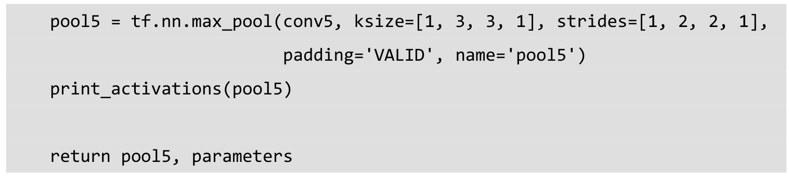
接下来实现一个评估AlexNet每轮计算时间的函数time_tensorflow_run。这个函数的第一个输入是TensorFlow的Session，第二个变量是需要评测的运算算子，第三个变量是测试的名称。先定义预热轮数num_steps_burn_in=10，它的作用是给程序热身，头几轮迭代有显存加载、cache命中等问题因此可以跳过，我们只考量10轮迭代之后的计算时间。同时，也记录总时间total_duration和平方和total_duration_squared用以计算方差。
我们进行num_batches+num_steps_burn_in次迭代计算，使用time.time()记录时间，每次迭代通过session.run(target)执行。在初始热身的num_steps_burn_in次迭代后，每10轮迭代显示当前迭代所需要的时间。同时每轮将total_duration和total_duration_squared累加，以便后面计算每轮耗时的均值和标准差。
在循环结束后，计算每轮迭代的平均耗时mn和标准差sd，最后将结果显示出来。这样就完成了计算每轮迭代耗时的评测函数time_tensorflow_run。
接下来是主函数run_benchmark。首先使用with tf.Graph().as_default()定义默认的Graph方便后面使用。如前面所说，我们并不使用ImageNet数据集来训练，只使用随机图片数据测试前馈和反馈计算的耗时。我们使用tf.random_normal函数构造正态分布（标准差为0.1）的随机tensor，第一个维度是batch_size，即每轮迭代的样本数，第二个和第三个维度是图片的尺寸image_size=224，第四个维度是图片的颜色通道数。接下来，使用前面定义的inference函数构建整个AlexNet网络，得到最后一个池化层的输出pool5和网络中需要训练的参数的集合parameters。接下来，我们使用tf.Session()创建新的Session并通过tf.global_variables_initializer()初始化所有参数。
下面进行AlexNet的forward计算的评测，这里直接使用time_tensorflow_run统计运算时间，传入的target就是pool5，即卷积网络最后一个池化层的输出。然后进行backward即训练过程的评测，这里和forward计算有些不同，我们需要给最后的输出pool5设置一个优化目标loss。我们使用tf.nn.l2_loss计算pool5的loss，再使用tf.gradients求相对于loss的所有模型参数的梯度，这样就模拟了一个训练的过程。当然，训练时还有一个根据梯度更新参数的过程，不过这个计算量很小，就不统计在评测程序里了。最后我们使用time_tensorflow_run统计backward的运算时间，这里的target就是求整个网络梯度gard的操作。
最后执行主函数。
run_benchmark()
程序显示的结果有三段，首先是AlexNet的网络结构，可以看到我们定义的5个卷积层中第1个、第2个和第5个卷积层后面还连接着池化层，另外每一层输出tensor的尺寸也显示出来了。
然后显示的是forward计算的时间。我们使用的GPU是GTX 1080，软件环境包括CUDA 8.0和cuDNN 5.1。在有LRN层时每轮迭代时间大约为0.026s；去除LRN层时每轮迭代时间大约为0.007s，运算时间有了大幅缩减，大约快了3倍多。因为LRN层对最终准确率的影响不是很大，所以读者可以自行考虑是否使用LRN。

然后是显示的backward运算的时间。在使用LRN层时，每轮的迭代时间为0.078s；在去除LRN层后，每轮迭代时间约为0.025s，速度也快了3倍多。另外可以发现不论是否有LRN层，我们backward运算的耗时大约是forward耗时的三倍。
CNN的训练过程（即backward计算）通常都比较耗时，而且不像预测过程（即forward计算），训练通常需要过很多遍数据，进行大量的迭代。因此应用CNN的主要瓶颈还是在训练，用CNN做预测问题不大。目前TensorFlow已经支持在iOS、Android系统中运行，所以在手机上使用CPU进行人脸识别或图片分类已经非常方便了，并且响应速度也很快。
至此，AlexNet的TensorFlow实现和运算时间评测就完成了。AlexNet为卷积神经网络和深度学习正名，以绝对优势拿下ILSVRC 2012冠军，引起了学术界的极大关注，为复兴神经网络做出了很大贡献。AlexNet在ILSVRC数据集上可达到16.4%的错误率（读者可自行下载数据集测试，但注意batch_size可能要设为1才能复现论文中的结果），其中用到的许多网络结构和Trick给深度学习的发展带来了深刻的影响。当然，我们也不能忽视ImageNet数据集给深度学习带来的贡献。训练深度卷积神经网络，必须拥有一个像ImageNet这样超大的数据集才能避免过拟合，发挥深度学习的优势。可以说，传统机器学习模型适合学习一个小型数据集，但是对于大型数据集，我们需要有更大学习容量（Learning Capacity）的模型，即深度学习模型。
在AlexNet发表在NIPS时，Hinton曾说“如果你没有参加过之前十几年的NIPS，那没关系，因为直到今年神经网络才真正开始生效。”当时有很多与会的教授表示不能接受神经网络，他们认为深度学习是一个黑箱模型，不可解释，有超过6000万的参数，在ILSVRC上的成绩可能只是某种过拟合，对计算机视觉贡献不大。然而之前使用传统方法获得过ILSVRC比赛冠军的NEC Labs的模型参数量也不少。他们当时使用sparse SIFT 加Pyramid Pooling提取特征，然后使用SVM进行分类，但是他们的SVM模型参数也有超过1亿6000万，远比AlexNet的参数多。因此说CNN参数多所以没有价值的观点是站不住脚的。深度学习的参数并不一定比传统机器学习模型多，尤其卷积层使用的参数量其实很少，但是其抽取特征的能力是非常强的，这也是CNN之所以有效的原因。
6.2 TensorFlow实现VGGNet
VGGNet是牛津大学计算机视觉组（Visual Geometry Group）和Google DeepMind公司的研究员一起研发的的深度卷积神经网络。VGGNet探索了卷积神经网络的深度与其性能之间的关系，通过反复堆叠3×3的小型卷积核和2×2的最大池化层，VGGNet成功地构筑了16~19层深的卷积神经网络。VGGNet相比之前state-of-the-art的网络结构，错误率大幅下降，并取得了ILSVRC 2014比赛分类项目的第2名和定位项目的第1名。同时VGGNet的拓展性很强，迁移到其他图片数据上的泛化性非常好。VGGNet的结构非常简洁，整个网络都使用了同样大小的卷积核尺寸（3×3）和最大池化尺寸（2×2）。到目前为止，VGGNet依然经常被用来提取图像特征。VGGNet训练后的模型参数在其官方网站上开源了，可用来在domain specific的图像分类任务上进行再训练（相当于提供了非常好的初始化权重），因此被用在了很多地方。
VGGNet论文中全部使用了3×3的卷积核和2×2的池化核，通过不断加深网络结构来提升性能。图6-6所示为VGGNet各级别的网络结构图，图6-7所示为每一级别的参数量，从11层的网络一直到19层的网络都有详尽的性能测试。虽然从A到E每一级网络逐渐变深，但是网络的参数量并没有增长很多，这是因为参数量主要都消耗在最后3个全连接层。前面的卷积部分虽然很深，但是消耗的参数量不大，不过训练比较耗时的部分依然是卷积，因其计算量比较大。这其中的D、E也就是我们常说的VGGNet-16和VGGNet-19。C很有意思，相比B多了几个1×1的卷积层，1×1卷积的意义主要在于线性变换，而输入通道数和输出通道数不变，没有发生降维。
图6-6 VGGNet各级别网络结构图
图6-7 VGGNet各级别网络参数量（单位为百万）
VGGNet拥有5段卷积，每一段内有2~3个卷积层，同时每段尾部会连接一个最大池化层用来缩小图片尺寸。每段内的卷积核数量一样，越靠后的段的卷积核数量越多：64
–128 – 256 – 512 –
512。其中经常出现多个完全一样的3×3的卷积层堆叠在一起的情况，这其实是非常有用的设计。如图6-8所示，两个3×3的卷积层串联相当于1个5×5的卷积层，即一个像素会跟周围5×5的像素产生关联，可以说感受野大小为5×5。而3个3×3的卷积层串联的效果则相当于1个7×7的卷积层。除此之外，3个串联的3×3的卷积层，拥有比1个7×7的卷积层更少的参数量，只有后者的最重要的是，3个3×3的卷积层拥有比1个7×7的卷积层更多的非线性变换（前者可以使用三次ReLU激活函数，而后者只有一次），使得CNN对特征的学习能力更强。
图6-8 两个串联3×3的卷积层功能类似于一个5×5的卷积层
VGGNet在训练时有一个小技巧，先训练级别A的简单网络，再复用A网络的权重来初始化后面的几个复杂模型，这样训练收敛的速度更快。在预测时，VGG采用Multi-Scale的方法，将图像scale到一个尺寸Q，并将图片输入卷积网络计算。然后在最后一个卷积层使用滑窗的方式进行分类预测，将不同窗口的分类结果平均，再将不同尺寸Q的结果平均得到最后结果，这样可提高图片数据的利用率并提升预测准确率。同时在训练中，VGGNet还使用了Multi-Scale的方法做数据增强，将原始图像缩放到不同尺寸S，然后再随机裁切224×224的图片，这样能增加很多数据量，对于防止模型过拟合有很不错的效果。实践中，作者令S在[256,512]这个区间内取值，使用Multi-Scale获得多个版本的数据，并将多个版本的数据合在一起进行训练。图6-9所示为VGGNet使用Multi-Scale训练时得到的结果，可以看到D和E都可以达到7.5%的错误率。最终提交到ILSVRC 2014的版本是仅使用Single-Scale的6个不同等级的网络与Multi-Scale的D网络的融合，达到了7.3%的错误率。不过比赛结束后作者发现只融合Multi-Scale的D和E可以达到更好的效果，错误率达到7.0%，再使用其他优化策略最终错误率可达到6.8%左右，非常接近同年的冠军Google Inceptin Net。同时，作者在对比各级网络时总结出了以下几个观点。
（1）LRN层作用不大。
（2）越深的网络效果越好。
（3）1×1的卷积也是很有效的，但是没有3×3的卷积好，大一些的卷积核可以学习更大的空间特征。
图6-9 各级别VGGNet在使用Multi-Scale训练时的top-5错误率
VGGNet训练时使用了4块Geforce GTX Titan GPU并行计算，速度比单块GPU快3.75倍，几乎没有太多性能损耗。但是，每个网络耗时2~3周才可以训练完。因此我们这里不直接使用ImageNet数据训练一个VGGNet，而是采用跟AlexNet一样的方式：构造出VGGNet网络结构，并评测其forward（inference）耗时和backward（training）耗时。
下面就开始实现VGGNet-16，也就是上面的版本D，其他版本读者可以仿照本节的代码自行修改并实现，难度不大。首先，我们载入几个系统库和TensorFlow。本节代码主要来自tensorflow-vgg的开源实现52 。
VGGNet-16包含很多层的卷积，因此我们先写一个函数conv_op，用来创建卷积层并把本层的参数存入参数列表。先来看conv_op函数的输入，input_op是输入的tensor，name是这一层的名称，kh是kernel height即卷积核的高，kw是kernel width即卷积核的宽，n_out是卷积核数量即输出通道数，dh是步长的高，dw是步长的宽，p是参数列表。下面使用get_shape()[-1].value获取输入input_op的通道数，比如输入图片的尺寸224×224×3中最后的那个3。然后使用tf.name_scope(name)设置scope。我们的kernel（即卷积核参数）使用tf.get_variable创建，其中shape就是[kh,kw,n_in,n_out]即[卷积核的高，卷积核的宽，输入通道数，输出通道数]，同时使用tf.contrib.layers.xavier_initializer_conv2d()做参数初始化。Xavier初始化方法我们在第4章实现过，其原理也讲解过，在此不做赘述。
接着使用tf.nn.conv2d对input_op进行卷积处理，卷积核即为kernel，步长是dh×dw，padding模式设为SAME。biases使用tf.constant赋值为0，再使用tf.Variable将其转成可训练的参数。我们使用tf.nn.bias_add将卷积结果conv与bias相加，再使用tf.nn.relu对其进行非线性处理得到activation。最后将创建卷积层时用到的参数kernel和biases添加进参数列表p，并将卷积层的输出activation作为函数结果返回。
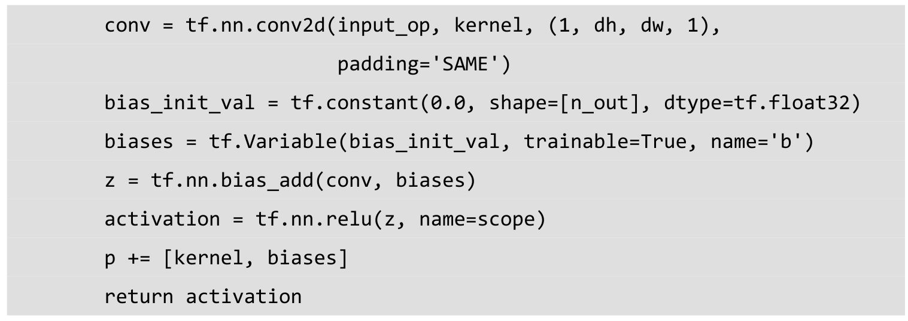
下面定义全连接层的创建函数fc_op。一样是先获取输入input_op的通道数，然后使用tf.get_variable创建全连接层的参数，只不过参数的维度只有两个，第一个维度为输入的通道数n_in，第二个维度为输出的通道数n_out。同样，参数初始化方法也使用xavier_initializer。这里biases不再初始化为0，而是赋予一个较小的值0.1以避免dead neuron。然后使用tf.nn.relu_layer对输入变量input_op与kernel做矩阵乘法并加上biases，再做ReLU非线性变换得到activation。最后将这个全连接层用到参数kernel、biases添加到参数列表p，并将activation作为函数结果返回。
再定义最大池化层的创建函数mpool_op。这里直接使用tf.nn.max_pool，输入即为input_op，池化尺寸为kh×kw，步长是dh×dw，padding模式设为SAME。
完成了卷积层、全连接层和最大池化层的创建函数，接下来就开始创建VGGNet-16的网络结构。VGGNet-16主要分为6个部分，前5段为卷积网络，最后一段是全连接网络。我们定义创建VGGNet-16网络结构的函数inference_op，输入有input_op和keep_prob，这里的keep_prob是控制dropout比率的一个placeholder。第一步先初始化参数列表p。然后创建第一段卷积网络，这一段正如图6-6中的网络结构，由两个卷积层和一个最大池化层构成。我们使用前面写好的函数conv_op、mpool_op来创建他们。这两个卷积层的卷积核的大小都是3×3，同时卷积核数量（输出通道数）均为64，步长为1×1，全像素扫描。第一个卷积层的输入input_op的尺寸为224×224×3，输出尺寸为224×224×64；而第二个卷积层的输入输出尺寸均为224×224×64。卷积层后的最大池化层则是一个标准的2×2的最大池化，将输出结果尺寸变为了112×112×64。
第二段卷积网络和第一段非常类似，同样是两个卷积层加一个最大池化层，两个卷积层的卷积核尺寸也是3×3，但是输出通道数变为128，是以前的两倍。最大池化层则和前面保持一致，因此这一段卷积网络的输出尺寸变为56×56×128。
接下来是第三段卷积网络，这里有3个卷积层和1个最大池化层。3个卷积层的卷积核大小依然是3×3，但是输出通道数增长为256，而最大池化层保持不变，因此这一段卷积网络的输出尺寸是28×28×256。
第四段卷积网络也是3个卷积层加1个最大池化层。读者可能已经发现规律了，到目前为止，VGGNet-16的每一段卷积网络都会将图像的边长缩小一半，但是将卷积输出通道数翻倍。这样图像面积缩小到1/4，输出通道数变为2倍，因此输出tensor的总尺寸每次缩小一半。这一层就是将卷积输出通道数增加到512，但是通过最大池化将图片缩小为14×14。
最后一段卷积网络有所变化，这里卷积输出的通道数不再增加，继续维持在512。最后一段卷积网络同样是3个卷积层加一个最大池化层，卷积核尺寸为3×3，步长为1×1，池化层尺寸为2×2，步长为2×2。因此到这里输出的尺寸变为7×7×512。
我们将第5段卷积网络的输出结果进行扁平化，使用tf.reshape函数将每个样本化为长度为7×7×512=25088的一维向量。
然后连接一个隐含节点数为4096的全连接层，激活函数为ReLU。然后连接一个Dropout层，在训练时节点保留率为0.5，预测时为1.0。
接下来是一个和前面一样的全连接层，之后同样连接一个Dropout层。
fc7 = fc_op(fc6_drop,name=”fc7”,n_out=4096,p=p)
fc7_drop = tf.nn.dropout(fc7,keep_prob,name=”fc7_drop”)
最后连接一个有1000个输出节点的全连接层，并使用Softmax进行处理得到分类输出概率。这里使用tf.argmax求输出概率最大的类别。最后将fc8、softmax、predictions和参数列表p一起返回。到此为止，VGGNet-16的网络结构就全部构建完成了。
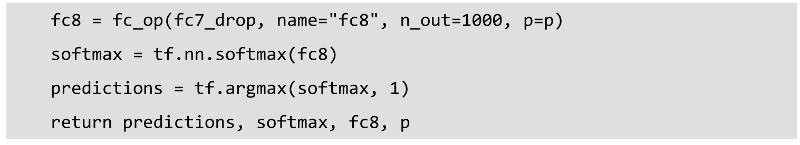
我们的评测函数time_tensorflow_run()和前面AlexNet中的非常相似，只有一点区别：我们在session.run()方法中引入了feed_dict，方便后面传入keep_prob来控制Dropout层的保留比率。
下面定义评测的主函数run_benchmark，我们的目标依然是仅评测forward和backward的运算性能，并不进行实质的训练和预测。首先是生成尺寸为224×224的随机图片，方法与AlexNet中一样，通过tf.random_normal函数生成标准差为0.1的正态分布的随机数。
接下来，创建keep_prob的placeholder，并调用inference_op函数构建VGGNet-16的网络结构，获得predictions、softmax、fc8和参数列表p。
然后创建Session并初始化全局参数。
我们通过将keep_prob设为1.0来执行预测，并使用time_tensorflow_run评测forward运算时间。再计算VGGNet-16最后的全连接层的输出fc8的l2 loss，并使用tf.gradients求相对于这个loss的所有模型参数的梯度。最后使用time_tensorflow_run评测backward运算时间，这里target为求解梯度的操作grad，keep_prob为0.5。
我们设置batch_size为32，因为VGGNet-16的模型体积比较大，如果使用较大的batch_size，GPU显存会不够用。最后执行评测的主函数run_benchmark()，测试VGGNet-16 在TensorFlow上的forward和backward耗时。
forward计算时平均每个batch的耗时为0.152s，相比于同样batch size的AlexNet的0.026s（如果无LRN则是0.007s）慢6倍。这说明VGGNet-16的计算复杂度相比AlexNet确实高了很多，不过同样也带来了很大的准确率提升。
而backward求解梯度时，每个batch的平均耗时达到0.617s，相比于AlexNet的0.078s也高了很多。
02 sec / batch
至此VGGNet-16的实现和评测就完成了。VGG系列的卷积神经网络在ILSVRC 2014比赛中最终达到了7.3%的错误率，相比AlexNet进步非常大，读者可以使用ImageNet数据集复现其结果。VGGNet的模型参数虽然比AlexNet多，但反而只需要较少的迭代次数就可以收敛，主要原因是更深的网络和更小的卷积核带来的隐式的正则化效果。VGGNet凭借其相对不算很高的复杂度和优秀的分类性能，成为了一代经典的卷积神经网络，直到现在依然被应用在很多地方。
6.3 TensorFlow实现Google Inception Net
Google Inception Net首次出现在ILSVRC 2014的比赛中（和VGGNet同年），就以较大优势取得了第一名。那届比赛中的Inception Net通常被称为Inception V1，它最大的特点是控制了计算量和参数量的同时，获得了非常好的分类性能——top-5错误率6.67%，只有AlexNet的一半不到。Inception V1有22层深，比AlexNet的8层或者VGGNet的19层还要更深。但其计算量只有15亿次浮点运算，同时只有500万的参数量，仅为AlexNet参数量（6000万）的1/12，却可以达到远胜于AlexNet的准确率，可以说是非常优秀并且非常实用的模型。Inception V1降低参数量的目的有两点，第一，参数越多模型越庞大，需要供模型学习的数据量就越大，而目前高质量的数据非常昂贵；第二，参数越多，耗费的计算资源也会更大。Inception V1参数少但效果好的原因除了模型层数更深、表达能力更强外，还有两点：一是去除了最后的全连接层，用全局平均池化层（即将图片尺寸变为1×1）来取代它。全连接层几乎占据了AlexNet或VGGNet中90%的参数量，而且会引起过拟合，去除全连接层后模型训练更快并且减轻了过拟合。用全局平均池化层取代全连接层的做法借鉴了Network In Network （以下简称NIN）论文。二是Inception V1中精心设计的Inception Module提高了参数的利用效率，其结构如图6-10所示。这一部分也借鉴了NIN的思想，形象的解释就是Inception Module本身如同大网络中的一个小网络，其结构可以反复堆叠在一起形成大网络。不过Inception V1比NIN更进一步的是增加了分支网络，NIN则主要是级联的卷积层和MLPConv层。一般来说卷积层要提升表达能力，主要依靠增加输出通道数，但副作用是计算量增大和过拟合。每一个输出通道对应一个滤波器，同一个滤波器共享参数，只能提取一类特征，因此一个输出通道只能做一种特征处理。而NIN中的MLPConv则拥有更强大的能力，允许在输出通道之间组合信息，因此效果明显。可以说，MLPConv基本等效于普通卷积层后再连接1×1的卷积和ReLU激活函数。
我们再来看Inception Module的基本结构，其中有4个分支：第一个分支对输入进行1×1的卷积，这其实也是NIN中提出的一个重要结构。1×1的卷积是一个非常优秀的结构，它可以跨通道组织信息，提高网络的表达能力，同时可以对输出通道升维和降维。可以看到Inception Module的4个分支都用到了1×1卷积，来进行低成本（计算量比3×3小很多）的跨通道的特征变换。第二个分支先使用了1×1卷积，然后连接3×3卷积，相当于进行了两次特征变换。第三个分支类似，先是1×1的卷积，然后连接5×5卷积。最后一个分支则是3×3最大池化后直接使用1×1卷积。我们可以发现，有的分支只使用1×1卷积，有的分支使用了其他尺寸的卷积时也会再使用1×1卷积，这是因为1×1卷积的性价比很高，用很小的计算量就能增加一层特征变换和非线性化。Inception Module的4个分支在最后通过一个聚合操作合并（在输出通道数这个维度上聚合）。Inception Module中包含了3种不同尺寸的卷积和1个最大池化，增加了网络对不同尺度的适应性，这一部分和Multi-Scale的思想类似。早期计算机视觉的研究中，受灵长类神经视觉系统的启发，Serre使用不同尺寸的Gabor滤波器处理不同尺寸的图片，Inception V1借鉴了这种思想。Inception V1的论文中指出，Inception Module可以让网络的深度和宽度高效率地扩充，提升准确率且不致于过拟合。
图6-10 Inception Module结构图
人脑神经元的连接是稀疏的，因此研究者认为大型神经网络的合理的连接方式应该也是稀疏的。稀疏结构是非常适合神经网络的一种结构，尤其是对非常大型、非常深的神经网络，可以减轻过拟合并降低计算量，例如卷积神经网络就是稀疏的连接。Inception Net的主要目标就是找到最优的稀疏结构单元（即Inception Module），论文中提到其稀疏结构基于Hebbian原理，这里简单解释一下Hebbian原理：神经反射活动的持续与重复会导致神经元连接稳定性的持久提升，当两个神经元细胞A和B距离很近，并且A参与了对B重复、持续的兴奋，那么某些代谢变化会导致A将作为能使B兴奋的细胞。总结一下即“一起发射的神经元会连在一起”（Cells that fire together,wire together），学习过程中的刺激会使神经元间的突触强度增加。受Hebbian原理启发，另一篇文章Provable Bounds for Learning Some Deep Representations 提出，如果数据集的概率分布可以被一个很大很稀疏的神经网络所表达，那么构筑这个网络的最佳方法是逐层构筑网络：将上一层高度相关（correlated）的节点聚类，并将聚类出来的每一个小簇（cluster）连接到一起，如图6-11所示。这个相关性高的节点应该被连接在一起的结论，即是从神经网络的角度对Hebbian原理有效性的证明。
图6-11 将高度相关的节点连接在一起，形成稀疏网络
因此一个“好”的稀疏结构，应该是符合Hebbian原理的，我们应该把相关性高的一簇神经元节点连接在一起。在普通的数据集中，这可能需要对神经元节点聚类，但是在图片数据中，天然的就是临近区域的数据相关性高，因此相邻的像素点被卷积操作连接在一起。而我们可能有多个卷积核，在同一空间位置但在不同通道的卷积核的输出结果相关性极高。因此，一个1×1的卷积就可以很自然地把这些相关性很高的、在同一个空间位置但是不同通道的特征连接在一起，这就是为什么1×1卷积这么频繁地被应用到Inception Net中的原因。1×1卷积所连接的节点的相关性是最高的，而稍微大一点尺寸的卷积，比如3×3、5×5的卷积所连接的节点相关性也很高，因此也可以适当地使用一些大尺寸的卷积，增加多样性（diversity）。最后Inception Module通过4个分支中不同尺寸的1×1、3×3、5×5等小型卷积将相关性很高的节点连接在一起，就完成了其设计初衷，构建出了很高效的符合Hebbian原理的稀疏结构。
在Inception Module中，通常1×1卷积的比例（输出通道数占比）最高，3×3卷积和5×5卷积稍低。而在整个网络中，会有多个堆叠的Inception Module，我们希望靠后的Inception Module可以捕捉更高阶的抽象特征，因此靠后的Inception Module的卷积的空间集中度应该逐渐降低，这样可以捕获更大面积的特征。因此，越靠后的Inception Module中，3×3和5×5这两个大面积的卷积核的占比（输出通道数）应该更多。
Inception Net有22层深，除了最后一层的输出，其中间节点的分类效果也很好。因此在Inception Net中，还使用到了辅助分类节点（auxiliary classifiers），即将中间某一层的输出用作分类，并按一个较小的权重（0.3）加到最终分类结果中。这样相当于做了模型融合，同时给网络增加了反向传播的梯度信号，也提供了额外的正则化，对于整个Inception Net的训练很有裨益。
当年的Inception V1还是跑在TensorFlow的前辈DistBelief上的，并且只运行在CPU上。当时使用了异步的SGD训练，学习速率每迭代8个epoch降低4%。同时，Inception V1也使用了Multi-Scale、Multi-Crop等数据增强方法，并在不同的采样数据上训练了7个模型进行融合，得到了最后的ILSVRC 2014的比赛成绩——top-5错误率6.67%。
同时，Google Inception Net还是一个大家族，包括：
· 2014年9月的论文Going Deeper with Convolutions 提出的Inception V1（top-5错误率6.67%）。
· 2015年2月的论文Batch Normalization: Accelerating Deep Network Training by Reducing Internal Covariate 提出的Inception V2（top-5错误率4.8%）。
· 2015年12月的论文Rethinking the Inception Architecture for Computer Vision 提出的Inception V3（top-5错误率3.5%）。
· 2016年2月的论文Inception-v4,Inception-ResNet and the Impact of Residual Connections on Learning 提出的Inception V4（top-5错误率3.08%）。
Inception V2学习了VGGNet，用两个3×3的卷积代替5×5的大卷积（用以降低参数量并减轻过拟合），还提出了著名的Batch Normalization（以下简称BN）方法。BN是一个非常有效的正则化方法，可以让大型卷积网络的训练速度加快很多倍，同时收敛后的分类准确率也可以得到大幅提高。BN在用于神经网络某层时，会对每一个mini-batch数据的内部进行标准化（normalization）处理，使输出规范化到N(0,1)的正态分布，减少了Internal Covariate Shift（内部神经元分布的改变）。BN的论文指出，传统的深度神经网络在训练时，每一层的输入的分布都在变化，导致训练变得困难，我们只能使用一个很小的学习速率解决这个问题。而对每一层使用BN之后，我们就可以有效地解决这个问题，学习速率可以增大很多倍，达到之前的准确率所需要的迭代次数只有1/14，训练时间大大缩短。而达到之前的准确率后，可以继续训练，并最终取得远超于Inception V1模型的性能——top-5错误率4.8%，已经优于人眼水平。因为BN某种意义上还起到了正则化的作用，所以可以减少或者取消Dropout，简化网络结构。
当然，只是单纯地使用BN获得的增益还不明显，还需要一些相应的调整：增大学习速率并加快学习衰减速度以适用BN规范化后的数据；去除Dropout并减轻L2正则（因BN已起到正则化的作用）；去除LRN；更彻底地对训练样本进行shuffle；减少数据增强过程中对数据的光学畸变（因为BN训练更快，每个样本被训练的次数更少，因此更真实的样本对训练更有帮助）。在使用了这些措施后，Inception V2在训练达到Inception V1的准确率时快了14倍，并且模型在收敛时的准确率上限更高。
而Inception V3网络则主要有两方面的改造：一是引入了Factorization into small convolutions的思想，将一个较大的二维卷积拆成两个较小的一维卷积，比如将7×7卷积拆成1×7卷积和7×1卷积，或者将3×3卷积拆成1×3卷积和3×1卷积，如图6-12所示。一方面节约了大量参数，加速运算并减轻了过拟合（比将7×7卷积拆成1×7卷积和7×1卷积，比拆成3个3×3卷积更节约参数），同时增加了一层非线性扩展模型表达能力。论文中指出，这种非对称的卷积结构拆分，其结果比对称地拆为几个相同的小卷积核效果更明显，可以处理更多、更丰富的空间特征，增加特征多样性。
图6-12 将一个3×3卷积拆成1×3卷积和3×1卷积
另一方面，Inception V3优化了Inception Module的结构，现在Inception Module有35×35、17×17和8×8三种不同结构，如图6-13所示。这些Inception Module只在网络的后部出现，前部还是普通的卷积层。并且Inception V3除了在Inception Module中使用分支，还在分支中使用了分支（8×8的结构中），可以说是Network In Network In Network。
图6-13 Inception V3中三种结构的Inception Module
而Inception V4相比V3主要是结合了微软的ResNet，而ResNet将在6.4节单独讲解，这里不多做赘述。因此本节将实现的是Inception V3，其整个网络结构如表6-1所示。由于Google Inception Net V3相对比较复杂，所以这里使用tf.contrib.slim辅助设计这个网络。contrib.slim中的一些功能和组件可以大大减少设计Inception Net的代码量，我们只需要少量代码即可构建好有42层深的Inception V3。
表6-1 Inception V3网络结构
续表
首先定义一个简单的函数trunc_normal，产生截断的正态分布。本节代码主要来自TensorFlow的开源实现53 。
下面定义函数inception_v3_arg_scope，用来生成网络中经常用到的函数的默认参数，比如卷积的激活函数、权重初始化方式、标准化器等。设置L2正则的weight_decay默认值为0.00004，标准差stddev默认值为0.1，参数batch_norm_var_collection默认值为moving_vars。接下来，定义batch normalization的参数字典，定义其衰减系数decay为0.9997，epsilon为0.001，updates_collctions为tf.GrpahKeys.UPDATE_OPS，然后字典variables_collections中beta和gamma均设置为None，moving_mean和moving_variance均设置为前面的batch_norm_var_collection。
接下来使用slim.arg_scope，这是一个非常有用的工具，它可以给函数的参数自动赋予某些默认值。例如，这句with slim.arg_scope([slim.conv2d,slim.fully_connected],weig hts_regularizer=slim.l2_regularizer(weight_decay))，会对[slim.conv2d,slim.fully_connected]这两个函数的参数自动赋值，将参数weights_regularizer的值默认设为slim.l2_regularizer(w eight_decay)。使用了slim.arg_scope后就不需要每次都重复设置参数了，只需要在有修改时设置。接下来，嵌套一个slim.arg_scope，对卷积层生成函数slim.conv2d的几个参数赋予默认值，其权重初始化器weights_initializer设置为trunc_normal(stddev)，激活函数设置为ReLU，标准化器设置为slim.batch_norm，标准化器的参数设置为前面定义的batch_no rm_params。最后返回定义好的scope。
因为事先定义好了slim.conv2d中的各种默认参数，包括激活函数和标准化器，因此后面定义一个卷积层将会变得非常方便。我们可以用一行代码定义一个卷积层，整体代码会变得非常简洁美观，同时设计网络的工作量也会大大减轻。
接下来我们就定义函数inception_v3_base，它可以生成Inception V3网络的卷积部分，参数inputs为输入的图片数据的tensor，scope为包含了函数默认参数的环境。我们定义一个字典表end_points，用来保存某些关键节点供之后使用。接着再使用slim.arg_scope，对slim.conv2d、slim.max_pool2d和slim_avg_pool2d这三个函数的参数设置默认值，将stride设为1，padding设为VALID。下面正式开始定义Inception V3的网络结构，首先是前面的非Inception Module的卷积层。这里直接使用slim.conv2d创建卷积层，slim.conv2d的第1个参数为输入的tensor，第2个参数为输出的通道数，第3个参数为卷积核尺寸，第4个参数为步长stride，第5个参数为padding模式。我们的第一个卷积层的输出通道数为32，卷积核尺寸为3×3，步长为2，padding模式则是默认的VALID。后面的几个卷积层采用相同的形式，按照论文中的定义，逐层定义好网络结构。因为使用了slim及slim.arg_scope，我们一行代码就可以定义好一个卷积层，相比之前AlexNet的实现中使用好几行代码定义一个卷积层，或是VGGNet中专门写一个函数来定义卷积层，都更加方便。
我们可以观察到，在前面几个普通的非Inception Module的卷积层中，主要使用了3×3的小卷积核，这是充分借鉴了VGGNet的结构。同时，Inception V3论文中也提出了Factorization into small convolutions思想，利用两个1维卷积模拟大尺寸的2维卷积，减少参数量同时增加非线性。前面几层卷积中还有一层1×1卷积，这也是前面提到的Inception Module中经常使用的结构之一，可低成本的跨通道的对特征进行组合。另外可以看到，除了第一个卷积层步长为2，其余的卷积层步长均为1，而池化层则是尺寸为3×3、步长为2的重叠最大池化，这是AlexNet中使用过的结构。网络的输入数据尺寸为299×299×3，在经历3个步长为2的层之后，尺寸最后缩小为35×35×192，空间尺寸大大降低，但是输出通道增加了很多。这部分代码中一共有5个卷积层，2个池化层，实现了对输入图片数据的尺寸压缩，并对图片特征进行了抽象。
接下来就将是三个连续的Inception模块组，这三个Inception模块组中各自分别有多个Inception Module，这部分的网络结构即是Inception V3的精华所在。每个Inception模块组内部的几个Inception Module结构非常类似，但存在一些细节不同。
第1个Inception模块组包含了3个结构类似的Inception Module，它们的结构和图6-13中第一幅图非常相似。其中第1个Inception Module的名称为Mixed_5b。我们先使用slim.arg_scope设置所有Inception模块组的默认参数，将所有卷积层、最大池化、平均池化层的步长设为1，padding模式设为SAME。然后设置这个Inception Module的variable_scope名称为Mixed_5b。这个Inception Module中有4个分支，从Branch_0到Branch_3，第一个分支为有64输出通道的1×1卷积；第2个分支为有48输出通道的1×1卷积，连接有64输出通道的5×5卷积；第3个分支为有64输出通道的1×1卷积，再连续连接2个有96输出通道的3×3卷积；第4个分支为3×3的平均池化，连接有32输出通道的1×1卷积。最后，使用tf.concat将4个分支的输出合并在一起（在第3个维度合并，即输出通道上合并），生成这个Inception Module的最终输出。因为这里所有的层步长均为1，并且padding模式为SAME，所以图片的尺寸并不会缩小，依然维持在35×35。不过通道数增加了，4个分支的输出通道数之和64+64+96+32=256，即最终输出的tensor尺寸为35×35×256。这里需注意，第1个Inception模块组中所有Inception Module输出的图片尺寸均为35×35，但是后两个Inception Module的通道数会发生变化。

接下来是第1个Inception模块组的第2个Inception Module——Mixed_5c，这里依然使用前面设置的默认参数：步长为1，padding模式为SAME。这个Inception Module同样有4个分支，唯一不同的是第4个分支最后接的是64输出通道的1×1卷积，而此前是32输出通道。因此，我们输出tensor的最终尺寸为35×35×288，输出通道数相比之前增加了32。
而第1个Inception模块组的第3个Inception Module——Mixed_5d和上一个Inception Module完全相同，4个分支的结构、参数一模一样，输出tensor的尺寸也为35×35×288。
第2个Inception模块组是一个非常大的模块组，包含了5个Inception Module，其中第2个到第5个Inception Module的结构非常类似，它们的结构如图6-13中第二幅图所示。其中第1个Inception Module名称为Mixed_6a，它包含3个分支。第1个分支是一个384输出通道的3×3卷积，这个分支的通道数一下就超过了之前的通道数之和。不过步长为2，因此图片尺寸将会被压缩，且padding模式为VALID，所以图片尺寸缩小为17×17；第2个分支有三层，分别是一个64输出通道的1×1卷积和两个96输出通道的3×3卷积。这里需要注意，最后一层的步长为2，padding模式为VALID，因此图片尺寸也被压缩，本分支最终输出的tensor尺寸为17×17×96；第3个分支是一个3×3最大池化层，步长同样为2，padding模式为VALID，因此输出的tensor尺寸为17×17×256。最后依然是使用tf.concat将三个分支在输出通道上合并，最后的输出尺寸为17×17×(384+96+256)=17×17×768。在第2个Inception模块组中，5个Inception Module输出tensor的尺寸将全部定格为17×17×768，即图片尺寸和输出通道数都没有发生变化。
接下来是第2个Inception模块组的第2个Inception Module——Mixed_6b，它有4个分支。第1个分支是一个简单的192输出通道的1×1卷积；第2个分支由3个卷积层组成，第1层是128输出通道的1×1卷积，第2层是128通道数的1×7卷积，第3层是192输出通道数的7×1卷积。这里即是前面提到的Factorization into small convolutions思想，串联的1×7卷积和7×1卷积相当于合成了一个7×7卷积，不过参数量大大减少了（只有后者的2/7）并减轻了过拟合，同时多了一个激活函数增强了非线性特征变换；第3个分支一下子拥有了5个卷积层，分别是128输出通道的1×1卷积，128输出通道的7×1卷积，128输出通道的1×7卷积，128输出通道的7×1卷积和192输出通道的1×7卷积。这个分支可以算是利用Factorization into small convolutions的典范，反复地将7×7卷积进行拆分；最后，第4个分支是一个3×3的平均池化层，再连接192输出通道的1×1卷积。最后将4个分支合并，这一层输出tensor的尺寸即是17×17×(192+192+192+192)=17×17×768。
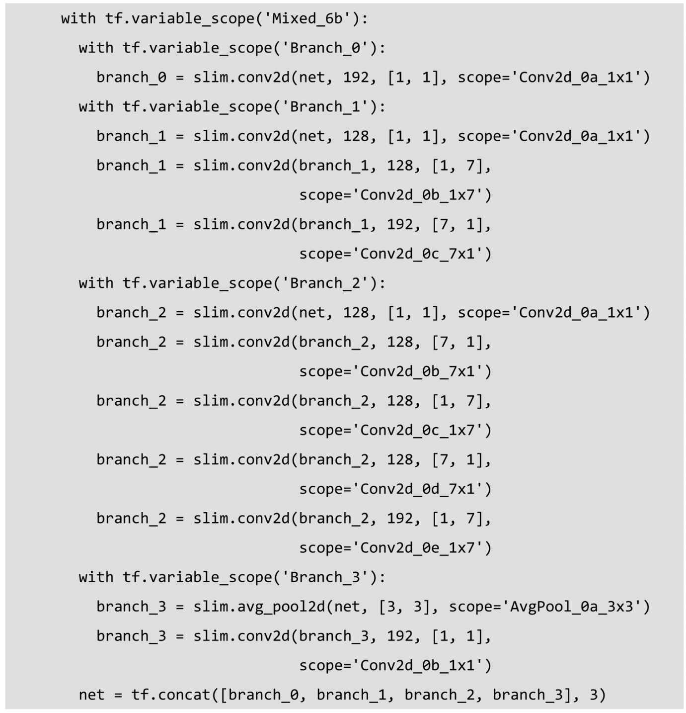
然后是我们第2个Inception模块组的第3个Inception Module——Mixed_6c。Mixed_6c和前面一个Inception Module非常相似，只有一个地方不同，即第2个分支和第3个分支中前几个卷积层的输出通道数不同，从128变为了160，但是这两个分支的最终输出通道数不变，都是192。其他地方则完全一致。需要注意的是，我们的网络每经过一个Inception Module，即使输出tensor尺寸不变，但是特征都相当于被重新精炼了一遍，其中丰富的卷积和非线性化对提升网络性能帮助很大。
Mixed_6d和前面的Mixed_6c完全一致，目的同样是通过Inception Module精心设计的结构增加卷积和非线性，提炼特征。
Mixed_6e也和前面两个Inception Module完全一致。这是第2个Inception模块组的最后一个Inception Module。我们将Mixed_6e存储于end_points中，作为Auxiliary Classifier辅助模型的分类。
第3个Inception模块组包含了3个Inception Module，其中后两个Inception Module的结构非常类似，它们的结构如图6-13中第三幅图所示。其中第1个Inception Module的名称为Mixed_7a，包含了3个分支。第1个分支是192输出通道的1×1卷积，再接320输出通道数的3×3卷积，不过步长为2，padding模式为VALID，因此图片尺寸缩小为8×8；第2个分支有4个卷积层，分别是192输出通道的1×1卷积、192输出通道的1×7卷积、192输出通道的7×1卷积，以及192输出通道的3×3卷积。注意最后一个卷积层同样步长为2，padding为VALID，因此最后输出的tensor尺寸为8×8×192；第3个分支则是一个3×3的最大池化层，步长为2，padding为VALID，而池化层不会对输出通道产生改变，因此这个分支的输出尺寸为8×8×768。最后，我们将3个分支在输出通道上合并，输出tensor尺寸为8×8×(320+192+768)=8×8×1280。从这个Inception Module开始，输出的图片尺寸又被缩小了，同时通道数也增加了，tensor的总size在持续下降中。
接下来是第3个Inception模块组的第2个Inception Module，它有4个分支。第1个分支是一个简单的320输出通道的1×1卷积；第2个分支先是1个384输出通道的1×1卷积，随后在分支内开了两个分支，这两个分支分别是384输出通道的1×3卷积和384输出通道的3×1卷积，然后使用tf.concat合并两个分支，得到的输出tensor尺寸为8×8×(384+384)=8×8×768；第3个分支更复杂，先是448输出通道的1×1卷积，然后是384输出通道的3×3卷积，然后同样在分支内拆成两个分支，分别是384输出通道的1×3卷积和384输出通道的3×1卷积，最后合并得到8×8×768的输出tensor；第4个分支是在一个3×3的平均池化层后接一个192输出通道的1×1卷积。最后，将这个非常复杂的Inception Module的4个分支合并在一起，得到的输出tensor尺寸为8×8×(320+768+768+192)=8×8×2048。到这个Inception Module，输出通道数从1280增加到了2048。
Mixed_7c是第3个Inception模块组的最后一个Inception Module，不过它和前面的Mixed_7b是完全一致的，输出tensor也是8×8×2048。最后，我们返回这个Inception Module的结果，作为inceptio_v3_base函数的最终输出。
至此，Inception V3网络的核心部分，即卷积层部分就完成了。回忆一下Inception V3的网络结构：首先是5个卷积层和2个池化层交替的普通结构，然后是3个Inception模块组，每个模块组内包含多个结构类似的Inception Module。设计Inception Net的一个重要原则是，图片尺寸是不断缩小的，从299×299通过5个步长为2的卷积层或池化层后，缩小为8×8；同时，输出通道数持续增加，从一开始的3（RGB三色）到2048。从这里可以看出，每一层卷积、池化或Inception模块组的目的都是将空间结构简化，同时将空间信息转化为高阶抽象的特征信息，即将空间的维度转为通道的维度。这一过程同时也使每层输出tensor的总size持续下降，降低了计算量。读者可能也发现了Inception Module的规律，一般情况下有4个分支，第1个分支一般是1×1卷积，第2个分支一般是1×1卷积再接分解后（factorized）的1×n和n×1卷积，第3个分支和第2个分支类似，但是一般更深一些，第4个分支一般具有最大池化或平均池化。因此，Inception Module是通过组合比较简单的特征抽象（分支1）、比较复杂的特征抽象（分支2和分支3）和一个简化结构的池化层（分支4），一共4种不同程度的特征抽象和变换来有选择地保留不同层次的高阶特征，这样可以最大程度地丰富网络的表达能力。
接下来，我们来实现Inception V3网络的最后一部分——全局平均池化、Softmax和Auxiliary Logits。先看函数inception_v3的输入参数，num_classes即最后需要分类的数量，这里默认的1000是ILSVRC比赛数据集的种类数；is_training标志是否是训练过程，对Batch Normalization和Dropout有影响，只有在训练时Batch Normalization和Dropout才会被启用；dropout_keep_prob即训练时Dropout所需保留节点的比例，默认为0.8；prediction_fn是最后用来进行分类的函数，这里默认是使用slim.softmax；spatial_squeeze参数标志是否对输出进行squeeze操作（即去除维数为1的维度，比如5×3×1转为5×3）；reuse标志是否会对网络和Variable进行重复使用；最后，scope为包含了函数默认参数的环境。首先，使用tf.variable_scope定义网络的name和reuse等参数的默认值，然后使用slim.arg_scope定义Batch Normalization和Dropout的is_training标志的默认值。最后，使用前面定义好的inception_v3_base构筑整个网络的卷积部分，拿到最后一层的输出net和重要节点的字典表end_points。
接下来处理Auxiliary Logits这部分的逻辑，Auxiliary Logits作为辅助分类的节点，对分类结果预测有很大帮助。先使用slim.arg_scope将卷积、最大池化、平均池化的默认步长设为1，默认padding模式设为SAME。然后通过end_points取到Mixed_6e，并在Mixed_6e之后再接一个5×5的平均池化，步长为3，padding设为VALID，这样输出的尺寸就从17×17×768变为5×5×768。接着连接一个128输出通道的1×1卷积和一个768输出通道的5×5卷积，这里权重初始化方式重设为标准差为0.01的正态分布，padding模式设为VALID，输出尺寸变为1×1×768。然后再连接一个输出通道数为num_classes的1×1卷积，不设激活函数和规范化函数，权重初始化方式重设为标准差为0.001的正态分布，这样输出变为了1×1×1000。接下来，使用tf.squeeze函数消除输出tensor中前两个为1的维度。最后将辅助分类节点的输出aux_logits储存到字典表end_points中。
下面处理正常的分类预测的逻辑。我们直接对Mixed_7e即最后一个卷积层的输出进行一个8×8全局平均池化，padding模式为VALID，这样输出tensor的尺寸就变为了1×1×2048。然后连接一个Dropout层，节点保留率为dropout_keep_prob。接着连接一个输出通道数为1000的1×1卷积，激活函数和规范化函数设为空。下面使用tf.squeeze去除输出tensor中维数为1的维度，再连接一个Softmax对结果进行分类预测。最后返回输出结果logits和包含辅助节点的end_ponits。
至此，整个Inception V3网络的构建就完成了。Inception V3是一个非常复杂、精妙的模型，其中用到了非常多之前积累下来的设计大型卷积网络的经验和技巧。不过，虽然Inception V3论文中给出了设计卷积网络的几个原则，但是其中很多超参数的选择，包括层数、卷积核的尺寸、池化的位置、步长的大小、factorization使用的时机，以及分支的设计，都很难一一解释。目前，我们只能认为深度学习，尤其是大型卷积网络的设计，是一门实验学科，其中需要大量的探索和实践。我们很难证明某种网络结构一定更好，更多的是通过实验积累下来的经验总结出一些结论。深度学习的研究中，理论证明部分依然是短板，但通过实验得到的结论通常也具有不错的推广性，在其他数据集上泛化性良好。
下面对Inception V3进行运算性能测试。这里使用的time_tensorflow_run函数和AlexNet那节一样，因此就不再重复定义，读者可以在6.1节中找到代码并加载。因为Inception V3网络结构较大，所以依然令batch_size为32，以免GPU显存不够。图片尺寸设置为299×299，并用tf.random_uniform生成随机图片数据作为input。接着，我们使用slim.arg_scope加载前面定义好的inception_v3_arg_scope()，在这个scope中包含了Batch Normalization的默认参数，以及激活函数和参数初始化方式的默认值。然后在这个arg_scope下，调用inception_v3函数，并传入inputs，获取logits和end_points。下面创建Session并初始化全部模型参数。最后我们设置测试的batch数量为100，并使用time_tensorflow_run测试Inception V3网络的forward性能。
从结果来看，Inception V3网络的forward性能不错，在GTX 1080、CUDA 8、cuDNN 5.1的环境下，每个batch（包含32张图片）预测耗时仅为0.145s。虽然输入图片的面积比VGGNet的224×224大了78%，但是forward速度却比VGGNet的0.152s更快。这主要归功于其较小的参数量，Inception V3网络仅有2500万个参数，虽然比Inception V1 的700万多了很多，不过仍然不到AlexNet的6000万参数量的一半，相比VGGNet的1.4亿参数量就更少了，这对一个42层深的大型网络来说是极为不易的。同时，整个网络的浮点计算量仅为50亿次，虽也比Incepion V1的15亿次大了不少，但是相比VGGNet仍然不算大。较小的计算量让Inception V3网络变得非常实用，我们可以轻松地将其移植到普通服务器上提供快速响应的服务，甚至是移植到手机上进行实时的图像识别。
因为篇幅原因，我们就不对Inception V3的backward性能进行测试了，这部分的代码比较冗长。感兴趣的读者，可以将整个网络的所有参数加入参数列表，测试对全部参数求导所需的时间，或者直接下载ImageNet数据集，使用真实样本进行训练并评测所需时间。
Inception V3作为一个极深的卷积神经网络，拥有非常精妙的设计和构造，整个网络的结构和分支非常复杂。我们平时可能不必设计这么复杂的网络，但Inception V3中仍有许多设计CNN的思想和Trick值得借鉴。
（1）Factorization into small convolutions很有效，可以降低参数量、减轻过拟合，增加网络非线性的表达能力。
（2）卷积网络从输入到输出，应该让图片尺寸逐渐减小，输出通道数逐渐增加，即让空间结构简化，将空间信息转化为高阶抽象的特征信息。
（3）Inception Module用多个分支提取不同抽象程度的高阶特征的思路很有效，可以丰富网络的表达能力。
6.4 TensorFlow实现ResNet
ResNet（Residual Neural Network）由微软研究院的Kaiming He等4名华人提出，通过使用Residual Unit成功训练152层深的神经网络，在ILSVRC 2015比赛中获得了冠军，取得3.57%的top-5错误率，同时参数量却比VGGNet低，效果非常突出。ResNet的结构可以极快地加速超深神经网络的训练，模型的准确率也有非常大的提升。6.3节我们讲解并实现了Inception V3，而Inception V4则是将Inception Module和ResNet相结合。可以看到ResNet是一个推广性非常好的网络结构，甚至可以直接应用到Inception Net中。本节就讲解ResNet的基本原理，以及如何用TensorFlow来实现它。
在ResNet之前，瑞士教授Schmidhuber提出了Highway Network，原理与ResNet很相似。这位Schmidhuber教授同时也是LSTM网络的发明者，而且是早在1997年发明的，可谓是神经网络领域元老级的学者。通常认为神经网络的深度对其性能非常重要，但是网络越深其训练难度越大，Highway Network的目标就是解决极深的神经网络难以训练的问题。Highway Network相当于修改了每一层的激活函数，此前的激活函数只是对输入做一个非线性变换y =H (x ,WH )，Highway NetWork则允许保留一定比例的原始输入x ，即y =H (x ,WH )·T (x ,WT )+x·C (x ,WC
)，其中T为变换系数，C为保留系数，论文中令C=1-T。这样前面一层的信息，有一定比例可以不经过矩阵乘法和非线性变换，直接传输到下一层，仿佛一条信息高速公路，因此得名Highway Network。Highway Network主要通过gating units学习如何控制网络中的信息流，即学习原始信息应保留的比例。这个可学习的gating机制，正是借鉴自Schmidhuber教授早年的LSTM循环神经网络中的gating。几百乃至上千层深的Highway Network可以直接使用梯度下降算法训练，并可以配合多种非线性激活函数，学习极深的神经网络现在变得可行了。事实上，Highway Network的设计在理论上允许其训练任意深的网络，其优化方法基本上与网络的深度独立，而传统的神经网络结构则对深度非常敏感，训练复杂度随深度增加而急剧增加。
ResNet和HighWay Network非常类似，也是允许原始输入信息直接传输到后面的层中。ResNet最初的灵感出自这个问题：在不断加神经网络的深度时，会出现一个Degradation的问题，即准确率会先上升然后达到饱和，再持续增加深度则会导致准确率下降。这并不是过拟合的问题，因为不光在测试集上误差增大，训练集本身误差也会增大。假设有一个比较浅的网络达到了饱和的准确率，那么后面再加上几个y =x 的全等映射层，起码误差不会增加，即更深的网络不应该带来训练集上误差上升。而这里提到的使用全等映射直接将前一层输出传到后面的思想，就是ResNet的灵感来源。假定某段神经网络的输入是x，期望输出是H (x )，如果我们直接把输入x 传到输出作为初始结果，那么此时我们需要学习的目标就是F (x )=H (x )-x。如图6-14所示，这就是一个ResNet的残差学习单元（Residual Unit），ResNet相当于将学习目标改变了，不再是学习一个完整的输出H (x
)，只是输出和输入的差别H (x )-x ，即残差。
图6-14 ResNet的残差学习模块
图6-15所示为VGGNet-19，以及一个34层深的普通卷积网络，和34层深的ResNet网络的对比图。可以看到普通直连的卷积神经网络和ResNet的最大区别在于，ResNet有很多旁路的支线将输入直接连到后面的层，使得后面的层可以直接学习残差，这种结构也被称为shortcut或skip connections。
传统的卷积层或全连接层在信息传递时，或多或少会存在信息丢失、损耗等问题。ResNet在某种程度上解决了这个问题，通过直接将输入信息绕道传到输出，保护信息的完整性，整个网络则只需要学习输入、输出差别的那一部分，简化学习目标和难度。
在ResNet的论文中，除了提出图6-16中的两层残差学习单元，还有三层的残差学习单元。两层的残差学习单元中包含两个相同输出通道数（因为残差等于目标输出减去输入，即H
(x )-x ，因此输入、输出维度需保持一致）的3×3卷积；而3层的残差网络则使用了Network In Network和Inception Net中的1×1卷积，并且是在中间3×3的卷积前后都使用了1×1卷积，有先降维再升维的操作。另外，如果有输入、输出维度不同的情况，我们可以对x 做一个线性映射变换维度，再连接到后面的层。
图6-17所示为ResNet在不同层数时的网络配置，其中基础结构很类似，都是前面提到的两层和三层的残差学习单元的堆叠。
图6-15 VGG-19，直连的34层网络，ResNet的34层网络的结构对比
图6-16 两层及三层的ResNet残差学习模块

图6-17 ResNet不同层数时的网络配置
在使用了ResNet的结构后，可以发现层数不断加深导致的训练集上误差增大的现象被消除了，ResNet网络的训练误差会随着层数增大而逐渐减小，并且在测试集上的表现也会变好。在ResNet推出后不久，Google就借鉴了ResNet的精髓，提出了Inception V4 和Inception-ResNet-V2，并通过融合这两个模型，在ILSVRC数据集上取得了惊人的3.08%的错误率。可见，ResNet及其思想对卷积神经网络研究的贡献确实非常显著，具有很强的推广性。在ResNet的作者的第二篇相关论文Identity Mappings in Deep Residual Networks 中，ResNet V2被提出。ResNet V2和ResNet V1的主要区别在于，作者通过研究ResNet残差学习单元的传播公式，发现前馈和反馈信号可以直接传输，因此skip connection的非线性激活函数（如ReLU）替换为Identity Mappings（y =x ）。同时，ResNet V2在每一层中都使用了Batch Normalization。这样处理之后，新的残差学习单元将比以前更容易训练且泛化性更强。
根据Schmidhuber教授的观点，ResNet类似于一个没有gates的LSTM网络，即将输入x传递到后面层的过程是一直发生的，而不是学习出来的。同时，最近也有两篇论文表示，ResNet基本等价于RNN且ResNet的效果类似于在多层网络间的集成方法（ensemble）。ResNet在加深网络层数上做出了重大贡献，而另一篇论文The Power of Depth for Feedforward Neural Networks 则从理论上证明了加深网络比加宽网络更有效，算是给ResNet提供了声援，也是给深度学习为什么要深才有效提供了合理解释。
下面我们就用TensorFlow实现一个ResNet V2网络。我们依然使用方便的contrib.slim库来辅助创建ResNet，其余载入的库还有原生的collections。本节代码主要来自TensorFlow的开源实现54。
我们使用collections.namedtuple设计ResNet基本Block模块组（图6-17中所示的Block）的named tuple，并用它创建Block的类，但只包含数据结构，不包含具体方法。我们要定义一个典型的Block，需要输入三个参数，分别是scope、unit_fn和args。以Block(‘block1’,bottleneck,[(256,64,1)]
× 2 +
[(256,64,2)])这一行代码为例，它可以定义一个典型的Block，其中block1就是我们这个Block的名称（或scope）；bottleneck是ResNet V2中的残差学习单元；而最后一个参数[(256,64,1)] × 2 +
[(256,64,2)]则是这个Block的args，args是一个列表，其中每个元素都对应一个bottleneck残差学习单元，前面两个元素都是(256,64,1)，最后一个是(256,64,2)。每个元素都是一个三元tuple，即（depth,depth_bottleneck,stride）。比如（256,64,3），代表构建的bottleneck残差学习单元（每个残差学习单元包含三个卷积层）中，第三层输出通道数depth为256，前两层输出通道数depth_bottleneck为64，且中间那层的步长stride为3。这个残差学习单元结构即为[(1×1/s1,64),(3×3/s2,64),(1×1/s1,256)]。而在这个Block中，一共有3个bottleneck残差学习单元，除了最后一个的步长由3变为2，其余都一致。
下面定义一个降采样subsample的方法，参数包括inputs（输入）、factor（采样因子）和scope。这个函数也非常简单，如果factor为1，则不做修改直接返回inputs；如果不为1，则使用slim.max_pool2d最大池化来实现，通过1×1的池化尺寸，stride作步长，即可实现降采样。
再定义一个conv2d_same函数创建卷积层。先判断stride是否为1，如果为1，则直接使用slim.conv2d并令padding模式为SAME。如果stride不为1，则显式地pad zero，要pad zero的总数为kernel_size-1，pad_beg为pad//2，pad_end为余下的部分。接下来使用tf.pad对输入变量进行补零操作。最后，因为已经进行了zero padding，所以只需再使用一个padding模式为VALID的slim.conv2d创建这个卷积层。
接下来定义堆叠Blocks的函数，参数中的net即为输入，blocks是之前定义的Block 的class的列表，而outputs_collections则是用来收集各个end_points的collections。下面使用两层循环，逐个Block，逐个Residual Unit地堆叠，先使用两个tf.variable_scope将残差学习单元命名为block1/unit_1的形式。在第2层循环中，我们拿到每个Block中每个Residual Unit的args，并展开为depth、depth_bottleneck和stride，其含义在前面定义Blocks类时已经讲解过。然后使用unit_fn函数（即残差学习单元的生成函数）顺序地创建并连接所有的残差学习单元。最后，我们使用slim.utils.collect_named_outputs函数将输出net添加到collection中。最后，当所有Block中的所有Residual Unit都堆叠完之后，我们再返回最后的net作为stack_blocks_dense函数的结果。
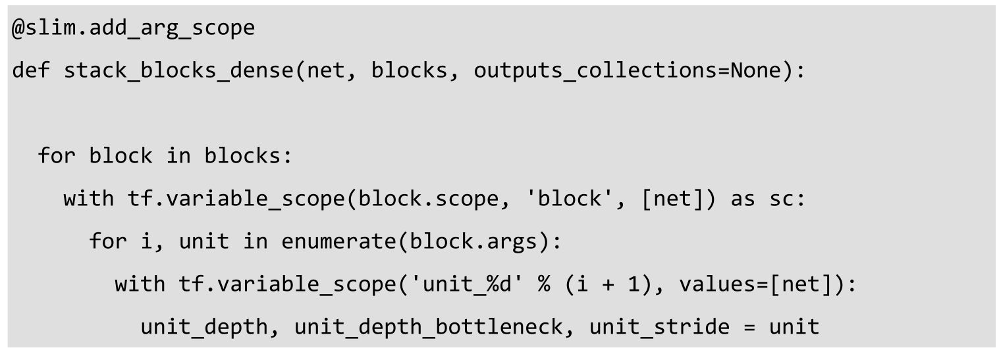
这里创建ResNet通用的arg_scope，关于arg_scope，我们在前面的章节已经介绍过其功能——用来定义某些函数的参数默认值。这里定义训练标记is_training默认为True，权重衰减速率weight_decay默认为0.0001，BN的衰减速率默认为0.997，BN的epsilon默认为1e-5，BN的scale默认为True。和在Inception V3定义arg_scope一样，先设置好BN的各项参数，然后通过slim.arg_scope将slim.conv2d的几个默认参数设置好：权重正则器设置为L2正则，权重初始化器设为slim.variance_scaling_initializer()，激活函数设为ReLU，标准化器设为BN。并将最大池化的padding模式默认设为SAME（注意，ResNet原论文中使用的是VALID模式，设为SAME可让特征对齐更简单，读者可以尝试改为VALID）。最后，将几层嵌套的arg_scope作为结果返回。
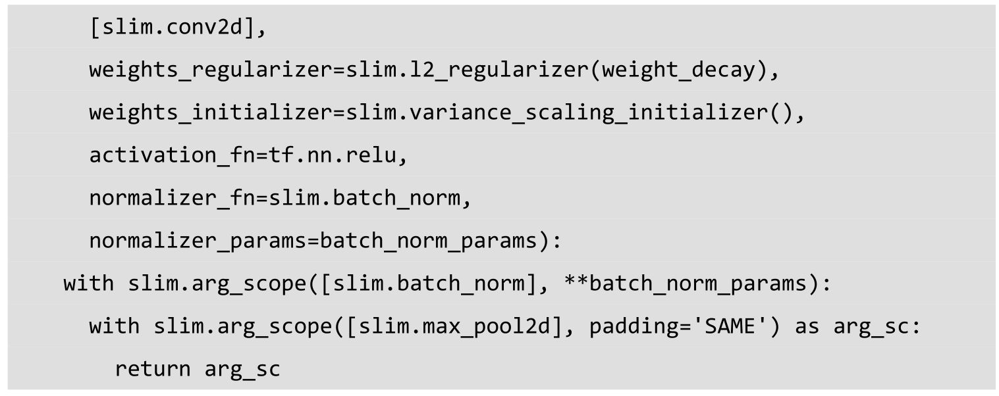
接下来定义核心的bottleneck残差学习单元，它是ResNet V2的论文中提到的Full Preactivation Residual Unit的一个变种。它和ResNet V1中的残差学习单元的主要区别有两点，一是在每一层前都用了Batch Normalization，二是对输入进行preactivation，而不是在卷积进行激活函数处理。我们来看一下bottleneck函数的参数，inputs是输入，depth、depth_bottleneck和stride这三个参数前面的Blocks类中的args，outputs_collections是收集end_points的collection，scope是这个unit的名称。下面先使用slim.utils.last_dimension函数获取输入的最后一个维度，即输出通道数，其中的参数min_rank=4可以限定最少为4个维度。接着，使用slim.batch_norm对输入进行Batch Normalization，并使用ReLU函数进行预激活Preactivate。然后定义shorcut（即直连的x）：如果残差单元的输入通道数depth_in和输出通道数depth一致，那么使用subsample按步长为stride对inputs进行空间上的降采样（确保空间尺寸和残差一致，因为残差中间那层的卷积步长为stride）；如果输入、输出通道数不一样，我们用步长为stride的1×1卷积改变其通道数，使得与输出通道数一致。然后定义residual（残差），residual这里有3层，先是一个1×1尺寸、步长为1、输出通道数为depth_bottleneck的卷积，然后是一个3×3尺寸、步长为stride、输出通道数为depth_bottleneck的卷积，最后是一个1×1卷积、步长为1、输出通道数为depth的卷积，得到最终的residual，这里注意最后一层没有正则项也没有激活函数。然后将residual和shorcut相加，得到最后结果output，再使用slim.utils.collect_named_outputs将结果添加进collection并返回output作为函数结果。
下面定义生成ResNet V2的主函数，我们只要预先定义好网络的残差学习模块组blocks，它就可以生成对应的完整的ResNet。先来看一下这个函数的参数，inputs即输入，blocks为定义好的Block类的列表，num_classes是最后输出的类数，global_pool标志是否加上最后的一层全局平均池化，include_root_block标志是否加上ResNet网络最前面通常使用的7×7卷积和最大池化，reuse标志是否重用，scope是整个网络的名称。在函数体内，我们先定义好variable_scope及end_points_collection，再通过slim.arg_scope将（slim.con2d、bottleneck、stack_block_dense）这三个函数的参数outputs_collections默认设为end_points_collection。然后根据include_root_block标记，创建ResNet最前面的64输出通道的步长为2的7×7卷积，然后再接一个步长为2的3×3最大池化。经历两个步长为2的层，图片尺寸已经被缩小为1/4。然后，使用前面定义的stack_blocks_dense将残差学习模块组生成好，再根据标记添加全局平均池化层，这里用tf.reduce_mean实现全局平均池化，效率比直接用avg_pool高。下面根据是否有分类数，添加一个输出通道为num_classes的1×1卷积（该卷积层无激活函数和正则项），再添加一个Softmax层输出网络结果。同时使用slim.utils.convert_collection_to_dict将collection转化为Python的dict，最后返回net和end_points。
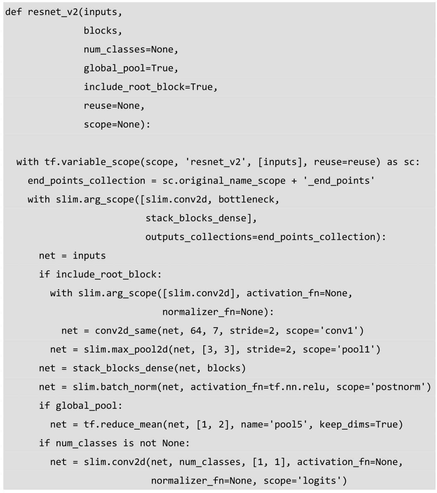
至此，我们就将ResNet的生成函数定义好了，下面根据图6-17中推荐的几个不同深度的ResNet网络配置，来设计层数分别为50、101、152和200的ResNet。我们先来看50层的ResNet，其严格遵守了图6-17所示的设置，4个残差学习Blocks的units数量分别为3、4、6和3，总层数即为（3+4+6+3）×3+2=50。需要注意的是，残差学习模块之前的卷积、池化已经将尺寸缩小了4倍，我们前3个Blocks又都包含步长为2的层，因此总尺寸缩小了4×8=32倍，输入图片尺寸最后变为224/32=7。和Inception V3很像，ResNet不断使用步长为2的层来缩减尺寸，但同时输出通道数也在持续增加，最后达到了2048。
101层的ResNet和50层相比，主要变化就是把4个Blocks的units数量从3、4、6、3提升到了3、4、23、3。即将第三个残差学习Block的units数增加到接近4倍。
然后152层的ResNet，则是将第二个Block的units数提高到8，将第三个Block的units数提高到36。Units数量提升的主要场所依然是第三个Block。
最后，200层的ResNet相比152层的ResNet，没有继续提升第三个Block的units数，而是将第二个Block的units数一下子提升到了23。
最后我们使用一直以来的评测函数time_tensorflow_run，来测试152层深的ResNet（即获得ILSVRC 2015冠军的版本）的forward性能。图片尺寸回归到AlexNet、VGGNet 的224×224，batch size为32。我们将is_training这个FLAG置为False，然后使用resnet_v2_152创建网络，再由time_tensorflow_run函数评测其forward性能。由于篇幅原因，就不对其训练时的性能进行测试了，感兴趣的读者可以测试求解ResNet全部参数的梯度所需要的时间。
这里可以看到，虽然这个ResNet有152层深，但其forward计算耗时并没有特别夸张，相比VGGNet和Inception V3，大概只增加了50%，每batch为0.202秒。这说明ResNet也是一个实用的卷积神经网络结构，不仅支持超深网络的训练，同时在实际工业应用时也有不差的forward性能。
本节我们完整地讲解了ResNet的基本原理及其TensorFlow实现，也设计了一系列不同深度的ResNet。读者若感兴趣，可以自行探索不同深度、乃至不同残差单元结构的ResNet的分类性能。例如，ResNet原论文中主要增加的是第二个和第三个Block的units数，读者可以尝试增加其余两个Block的units数，或者修改bottleneck单元中的depth、depth_bottleneck等参数，可对其参数设置的意义加深理解。ResNet可以算是深度学习中一个里程碑式的突破，真正意义上支持了极深神经网络的训练。其网络结构值得反复思索，如Google等已将其融合到自家的Inception Net中，并取得了非常好的效果。相信ResNet的成功也会启发其他在深度学习领域研究的灵感。
6.5 卷积神经网络发展趋势
本节，我们简单回顾卷积神经网络的历史，图6-18所示大致勾勒出最近几十年卷积神经网络的发展方向。Perceptron（感知机）于1957年由Frank Resenblatt提出，而Perceptron不仅是卷积网络，也是神经网络的始祖。Neocognitron（神经认知机）是一种多层级的神经网络，由日本科学家Kunihiko Fukushima于20世纪80年代提出，具有一定程度的视觉认知的功能，并直接启发了后来的卷积神经网络。LeNet-5由CNN之父Yann LeCun 于1997年提出，首次提出了多层级联的卷积结构，可对手写数字进行有效识别。可以看到前面这三次关于卷积神经网络的技术突破，间隔时间非常长，需要十余年甚至更久才出现一次理论创新。而后于2012年，Hinton的学生Alex依靠8层深的卷积神经网络一举获得了ILSVRC 2012比赛的冠军，瞬间点燃了卷积神经网络研究的热潮。AlexNet成功应用了ReLU激活函数、Dropout、最大覆盖池化、LRN层、GPU加速等新技术，并启发了后续更多的技术创新，卷积神经网络的研究从此进入快车道。
图6-18 卷积神经网络发展图
在AlexNet之后，我们可以将卷积神经网络的发展分为两类，一类是网络结构上的改进调整（图6-18中的左侧分支），另一类是网络深度的增加（图6-18中的右侧分支）。2013年，颜水成教授的Network in Network工作首次发表，优化了卷积神经网络的结构，并推广了1×1的卷积结构。在改进卷积网络结构的工作中，后继者还有2014年的Google Inception Net V1，提出了Inception Module这个可以反复堆叠的高效的卷积网络结构，并获得了当年ILSVRC比赛的冠军。2015年初的Inception V2提出了Batch Normalization，大大加速了训练过程，并提升了网络性能。2015年年末的Inception V3则继续优化了网络结构，提出了Factorization in Small Convolutions的思想，分解大尺寸卷积为多个小卷积乃至一维卷积。而另一条分支上，许多研究工作则致力于加深网络层数，2014年，ILSVRC比赛的亚军VGGNet全程使用3×3的卷积，成功训练了深达19层的网络，当年的季军MSRA-Net也使用了非常深的网络。2015年，微软的ResNet成功训练了152层深的网络，一举拿下了当年ILSVRC比赛的冠军，top-5错误率降低至3.46%。其后又更新了ResNet V2，增加了Batch Normalization，并去除了激活层而使用Identity Mapping或Preactivation，进一步提升了网络性能。此后，Inception ResNet V2融合了Inception Net优良的网络结构，和ResNet训练极深网络的残差学习模块，集两个方向之长，取得了更好的分类效果。
我们可以看到，自AlexNet于2012年提出后，深度学习领域的研究发展极其迅速，基本上每年甚至每几个月都会出现新一代的技术。新的技术往往伴随着新的网络结构，更深的网络的训练方法等，并在图像识别等领域不断创造新的准确率记录。至今，ILSVRC比赛和卷积神经网络的研究依然处于高速发展期，CNN的技术日新月异。当然其中不可忽视的推动力是，我们拥有了更快的GPU计算资源用以实验，以及非常方便的开源工具（比如TensorFlow）可以让研究人员快速地进行探索和尝试。在以前，研究人员如果没有像Alex那样高超的编程实力能自己实现cuda-convnet，可能都没办法设计CNN或者快速地进行实验。现在有了TensorFlow，研究人员和开发人员都可以简单而快速地设计神经网络结构并进行研究、测试、部署乃至实用。
7 TensorFlow实现循环神经网络及Word2Vec
本章我们将探索循环神经网络（RNN）和Word2Vec55 ，并在TensorFlow上实现它们。循环神经网络是在NLP（Nature Language Processing，自然语言处理）领域最常使用的神经网络结构，和卷积神经网络在图像识别领域的地位类似。而Word2Vec则是将语言中的字词转化为计算机可以理解的稠密向量（Dense Vector），进而可以做其他自然语言处理任务，比如文本分类、词性标注、机器翻译等。
7.1 TensorFlow实现Word2Vec
Word2Vec也称Word Embeddings，中文有很多叫法，比较普便的是“词向量”或“词嵌入”。Word2Vec是一个可以将语言中字词转为向量形式表达（Vector Representations）的模型，我们先来看看为什么要把字词转为向量。图像、音频等数据天然可以编码并存储为稠密向量的形式，比如图片是像素点的稠密矩阵，音频可以转为声音信号的频谱数据。自然语言处理在Word2Vec出现之前，通常将字词转成离散的单独的符号，比如将“中国”转为编号为5178的特征，将“北京”转为编号为3987的特征。这即是One-Hot Encoder，一个词对应一个向量（向量中只有一个值为1，其余为0），通常需要将一篇文章中每一个词都转成一个向量，而整篇文章则变为一个稀疏矩阵。对文本分类模型，我们使用Bag of Words模型，将文章对应的稀疏矩阵合并为一个向量，即把每一个词对应的向量加到一起，这样只统计每个词出现的次数，比如“中国”出现23次，那么第5178个特征为23，“北京”出现2次，那么第3987个特征为2。
使用One-Hot Encoder有一个问题，即我们对特征的编码往往是随机的，没有提供任何关联信息，没有考虑到字词间可能存在的关系。例如，我们对“中国”和“北京”的从属关系、地理位置关系等一无所知，我们从5178和3987这两个值看不出任何信息。同时，将字词存储为稀疏向量的话，我们通常需要更多的数据来训练，因为稀疏数据训练的效率比较低，计算也非常麻烦。使用向量表达（Vector Representations）则可以有效地解决这个问题。向量空间模型（Vector Space Models）可以将字词转为连续值（相对于One-Hot编码的离散值）的向量表达，并且其中意思相近的词将被映射到向量空间中相近的位置。向量空间模型在NLP中主要依赖的假设是Distributional Hypothesis，即在相同语境中出现的词其语义也相近。向量空间模型可以大致分为两类，一类是计数模型，比如Latent Semantic Analysis；另一类是预测模型（比如Neural Probabilistic Language Models）。计数模型统计在语料库中，相邻出现的词的频率，再把这些计数统计结果转为小而稠密的矩阵；而预测模型则根据一个词周围相邻的词推测出这个词，以及它的空间向量。
Word2Vec即是一种计算非常高效的，可以从原始语料中学习字词空间向量的预测模型。它主要分为CBOW（Continuous Bag of Words）和Skip-Gram两种模式，其中CBOW是从原始语句（比如：中国的首都是____）推测目标字词（比如：北京）；而Skip-Gram则正好相反，它是从目标字词推测出原始语句，其中CBOW对小型数据比较合适，而Skip-Gram在大型语料中表现得更好。
使用Word2Vec训练语料能得到一些非常有趣的结果，比如意思相近的词在向量空间中的位置会接近。从一份Google训练超大语料得到的结果中看，诸如Beijing、London、New York等城市的名字会在向量空间中聚集在一起，而Cat、Dog、Fish等动物词汇也会聚集在一起。同时，如图7-1所示，Word2Vec还能学会一些高阶的语言概念，比如我们计算“man”到“woman”的向量（词汇都是向量空间中的点，可计算两点间的向量），会发现它和“king”到“queen”的向量非常相似，即模型学到了男人与女人的关系；同时，“walking”到“walked”的向量和“swimming”到“swam”的向量非常相似，模型学到了进行时与过去时的关系。
图7-1 Word2Vec模型可学习到的抽象概念
预测模型Neural Probabilistic Language Models通常使用最大似然的方法，在给定前面的语句h 的情况下，最大化目标词汇wt 的概率。但它存在的一个比较严重的问题是计算量非常大，需要计算词汇表中所有单词出现的可能性。在Word2Vec的CBOW模型中，不需要计算完整的概率模型，只需要训练一个二元的分类模型，用来区分真实的目标词汇和编造的词汇（噪声）这两类，如图7-2所示。这种用少量噪声词汇来估计的方法，类似于蒙特卡洛模拟。
图7-2 CBOW模型结构示意图
当模型预测真实的目标词汇为高概率，同时预测其他噪声词汇为低概率时，我们训练的学习目标就被最优化了。用编造的噪声词汇训练的方法被称为Negative Sampling。用这种方法计算loss function的效率非常高，我们只需要计算随机选择的k 个词汇而非词汇表中的全部词汇，因此训练速度非常快。在实际中，我们使用Noise-Contrastive Estimation （NCE）
Loss，同时在TensorFlow中也有tf.nn.nce_loss()直接实现了这个loss。
在本节中我们将主要使用Skip-Gram模式的Word2Vec，先来看一下它训练样本的构造，以“the quick brown fox jumped over the lazy dog”这句话为例。我们要构造一个语境与目标词汇的映射关系，其中语境包括一个单词左边和右边的词汇，假设我们的滑窗尺寸为1，可以制造的映射关系包括[the,brown]
→ quick、[quick,fox] → brown、[brown,jumped] → fox等。因为Skip-Gram模型是从目标词汇预测语境，所以训练样本不再是[the,brown] → quick，而是quick → the和quick →
brown。我们的数据集就变为了(quick,the)、(quick,brown)、(brown,quick)、(brown,fox)等。我们训练时，希望模型能从目标词汇quick预测出语境the，同时也需要制造随机的词汇作为负样本（噪声），我们希望预测的概率分布在正样本the上尽可能大，而在随机产生的负样本上尽可能小。这里的做法就是通过优化算法比如SGD来更新模型中Word Embedding的参数，让概率分布的损失函数（NCE Loss）尽可能小。这样每个单词的Embedded Vector就会随着训练过程不断调整，直到处于一个最适合语料的空间位置。这样我们的损失函数最小，最符合语料，同时预测出正确单词的概率也最高。
下面开始用TensorFlow实现Word2Vec的训练。首先依然是载入各种依赖库，这里因为要从网络下载数据，因此需要的依赖库比较多。本节代码主要来自TensorFlow的开源实现56。

我们先定义下载文本数据的函数。这里使用urllib.request.urlretrieve下载数据的压缩文件并核对文件尺寸，如果已经下载了文件则跳过。
接下来解压下载的压缩文件，并使用tf.compat.as_str将数据转成单词的列表。通过程序输出，可以知道数据最后被转为了一个包含17005207个单词的列表。
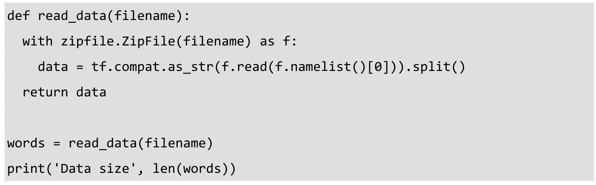
接下来创建vocabulary词汇表，我们使用collections.Counter统计单词列表中单词的频数，然后使用most_common方法取top 50000频数的单词作为vocabulary。再创建一个dict，将top 50000词汇的vocabulary放入dictionary中，以便快速查询，Python中dict查询复杂度为O(1)，性能非常好。接下来将全部单词转为编号（以频数排序的编号），top 50000词汇之外的单词，我们认定其为Unkown（未知），将其编号为0，并统计这类词汇的数量。下面遍历单词列表，对其中每一个单词，先判断是否出现在dictionary中，如果是则转为其编号，如果不是则转为编号0（Unkown）。最后返回转换后的编码（data）、每个单词的频数统计（count）、词汇表（dictionary）及其反转的形式（reverse_dictionary）。
然后我们删除原始单词列表，可以节约内存。再打印vocabulary中最高频出现的词汇及其数量（包括Unknown词汇），可以看到“UNK”这类一共有418391个，最常出现的“the”有1061396个，排名第二的“of”有593677个。我们的data中前10个单词为[‘anarchism’,’originated’,’as’,’a’,’term’,’of’,’abuse’,’first’,’used’,’against’]，对应的编号为[5235,3084,12,6,195,2,3137,46,59,156]
下面生成Word2Vec的训练样本。我们根据前面提到的Skip-Gram模式（从目标单词反推语境），将原始数据“the quick brown fox jumped over the lazy dog”转为(quick,the)、(quick,brown)、(brown,quick)、(brown,fox)等样本。我们定义函数generate_batch用来生成训练用的batch数据，参数中batch_size为batch的大小；skip_window指单词最远可以联系的距离，设为1代表只能跟紧邻的两个单词生成样本，比如quick只能和前后的单词生成两个样本（quick,the）和（quick,brown）；num_skips为对每个单词生成多少个样本，它不能大于skip_window值的两倍，并且batch_size必须是它的整数倍（确保每个batch包含了一个词汇对应的所有样本）。我们定义单词序号data_index为global变量，因为我们会反复调用generate_batch，所以要确保data_index可以在函数generate_batch中被修改。我们也使用assert确保num_skips和batch_size满足前面提到的条件。然后用np.ndarray 将batch和labels初始化为数组。这里定义span为对某个单词创建相关样本时会使用到的单词数量，包括目标单词本身和它前后的单词，因此span=2*skip_window+1。并创建一个最大容量为span的deque，即双向队列，在对deque使用append方法添加变量时，只会保留最后插入的span个变量。
接下来从序号data_index开始，把span个单词顺序读入buffer作为初始值。因为buffer是容量为span的deque，所以此时buffer已填充满，后续数据将替换掉前面的数据。然后我们进入第一层循环（次数为batch_size//num_skips），每次循环内对一个目标单词生成样本。现在buffer中是目标单词和所有相关单词，我们定义target=skip_window，即buffer中第skip_window个变量为目标单词。然后定义生成样本时需要避免的单词列表targets_to_avoid，这个列表一开始包括第skip_window个单词（即目标单词），因为我们要预测的是语境单词，不包括目标单词本身。接下来进入第二层循环（次数为num_skips），每次循环中对一个语境单词生成样本，先产生随机数，直到随机数不在targets_to_avoid中，代表可以使用的语境单词，然后产生一个样本，feature即目标词汇buffer[skip_window]，label则是buffer[target]。同时，因为这个语境单词被使用了，所以再把它添加到targets_to_avoid中过滤。在对一个目标单词生成完所有样本后（num_skips个样本），我们再读入下一个单词（同时会抛掉buffer中第一个单词），即把滑窗向后移动一位，这样我们的目标单词也向后移动了一个，语境单词也整体后移了，便可以开始生成下一个目标单词的训练样本。两层循环完成后，我们已经获得了batch_size个训练样本，将batch和labels作为函数结果返回。
这里调用generate_batch函数简单测试一下其功能。参数中将batch_size设为8，num_skips设为2，skip_window设为1，然后执行generate_batch并获得batch和labels。再打印batch和labels的数据，可以看到我们生成的样本是“3084 originated -> 5235 anarchism”，“3084 originated -> 12 as”，“12 as -> 3084 originated”等。以第一个样本为例，3084是目标单词originated的编号，这个单词对应的语境单词是anarchism，其编号为5235。
我们定义训练时的batch_size为128；embedding_size为128，embedding_size即将单词转为稠密向量的维度，一般是50~1000这个范围内的值，这里使用128作为词向量的维度；skip_window即前面提到的单词间最远可以联系的距离，设为1；num_skips即对每个目标单词提取的样本数，设为2。然后我们再生成验证数据valid_examples，这里随机抽取一些频数最高的单词，看向量空间上跟它们最近的单词是否相关性比较高。valid_size=16指用来抽取的验证单词数，valid_window=100是指验证单词只从频数最高的100个单词中抽取，我们使用np.random.choice函数进行随机抽取。而num_sampled是训练时用来做负样本的噪声单词的数量。
下面就开始定义Skip-Gram Word2Vec模型的网络结构。我们先创建一个tf.Graph并设置为默认的graph。然后创建训练数据中inputs和labels的placeholder，同时将前面随机产生的valid_examples转为TensorFlow中的constant。接下来，先使用with tf.device(‘/cpu:0’)限定所有计算在CPU上执行，因为接下去的一些计算操作在GPU上可能还没有实现。然后使用tf.random_uniform随机生成所有单词的词向量embeddings，单词表大小为50000，向量维度为128，再使用tf.nn.embedding_lookup查找输入train_inputs对应的向量embed。下面使用之前提到的NCE Loss作为训练的优化目标，我们使用tf.truncated_normal初始化NCE Loss中的权重参数nce_weights，并将其nce_biases初始化为0。最后使用tf.nn.nce_loss计算学习出的词向量embedding在训练数据上的loss，并使用tf.reduce_mean进行汇总。
我们定义优化器为SGD，且学习速率为1.0。然后计算嵌入向量embeddings的L2范数norm，再将embeddings除以其L2范数得到标准化后的normalized_embeddings。再使用tf.nn.embedding_lookup查询验证单词的嵌入向量，并计算验证单词的嵌入向量与词汇表中所有单词的相似性。最后，我们使用tf.global_variables_initializer初始化所有模型参数。
我们定义最大的迭代次数为10万次，然后创建并设置默认的session，并执行参数初始化。在每一步训练迭代中，先使用generate_batch生成一个batch的inputs和labels数据，并用它们创建feed_dict。然后使用session.run()执行一次优化器运算（即一次参数更新）和损失计算，并将这一步训练的loss累积到average_loss。
之后每2000次循环，计算一下平均loss并显示出来。
每10000次循环，计算一次验证单词与全部单词的相似度，并将与每个验证单词最相似的8个单词展示出来。
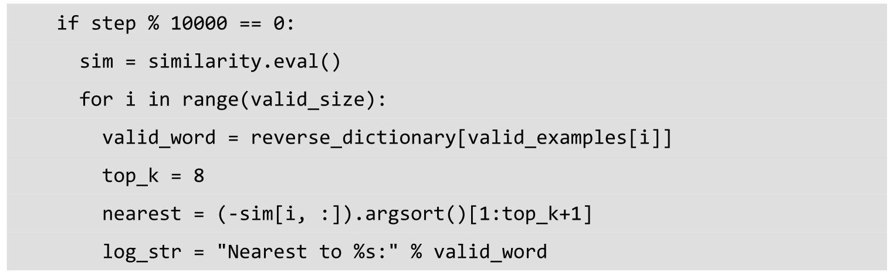
以下为展示出来的平均损失，以及与验证单词相似度最高的单词，可以看到我们训练的模型对名词、动词、形容词等类型的单词的相似词汇的识别都非常准确。因此由Skip-Gram Word2Vec得到的向量空间表达（Vector Representations）是非常高质量的，近义词在向量空间上的位置也是非常靠近的。
下面定义一个用来可视化Word2Vec效果的函数。这里low_dim_embs是降维到2维的单词的空间向量，我们将在图表中展示每个单词的位置。我们使用plt.scatter（一般将matplotlib.pyplot命名为plt）显示散点图（单词的位置），并用plt.annotate展示单词本身。同时，使用plt.savefig保存图片到本地文件。
我们使用sklearn.manifold.TSNE实现降维，这里直接将原始的128维的嵌入向量降到2维，再用前面的plot_with_labels函数进行展示。这里只展示词频最高的100个单词的可视化结果。
图7-3所示即为可视化效果，可以看到其中距离相近的单词在语义上具有很高的相似性。例如，左上角为单个字母的聚集地；而冠词the、an、a和another则聚集在左边中部，稍微靠右一点则有him、himself、its、itself和them聚集；左下方有will、could、would、then。这里我们只展示了部分截图，感兴趣的读者可以在程序画出来的大图中进行观察。对Word2Vec性能的评价，除了可视化观察，常用的方式还有Analogical Reasoning，即直接预测语义、语境上的关系，例如让模型回答“king is queen as father is to __”这类问题。Analogical Reasoning可以比较好地评测Word2Vec模型的准确性。在训练Word2Vec模型时，为了获得比较好的结果，我们可以使用大规模的语料库，同时需要对参数进行调试，选取最适合的值。
图7-3 TSNE降维后的Word2Vec的嵌入向量可视化图
7.2 TensorFlow实现基于LSTM的语言模型
循环神经网络出现于20世纪 80年代，在其发展早期，应用不是特别丰富。最近几年由于神经网络结构的进步和GPU上深度学习训练效率的突破，RNN变得越来越流行。RNN对时间序列数据非常有效，其每个神经元可通过内部组件保存之前输入的信息。
人每次思考时不会重头开始，而是保留之前思考的一些结果为现在的决策提供支持。例如我们对话时，我们会根据上下文的信息理解一句话的含义，而不是对每一句话重头进行分析。传统的神经网络不能实现这个功能，这可能是其一大缺陷。例如卷积神经网络虽然可以对图像进行分类，但是可能无法对视频中每一帧图像发生的事情进行关联分析，我们无法利用前一帧图像的信息，而循环神经网络则可以解决这个问题。RNN的结构如图7-4所示，其最大特点是神经元的某些输出可作为其输入再次传输到神经元中，因此可以利用之前的信息。
图7-4 循环神经网络示例
如图7-4所示，xt 是RNN的输入，A 是RNN的一个节点，而ht 是输出。我们对这个RNN输入数据xt ，然后通过网络计算并得到输出结果ht，再将某些信息（state，状态）传到网络的输入。我们将输出ht 与label进行比较可以得到误差，有了这个误差之后，就能使用梯度下降（Gradient Descent）和Back-Propagation Through Time（BPTT）方法对网络进行训练，BPTT与训练前馈神经网络的传统BP方法类似，也是使用反向传播求解梯度并更新网络参数权重。另外，还有一种方法叫Real-Time Recurrent Learning（RTRL），它可以正向求解梯度，不过其计算复杂度比较高。此外，还有介于BPTT和RTRL这两种方法之间的混合方法，可用来缓解因为时间序列间隔过长带来的梯度弥散的问题。
如果我们将RNN中的循环展开成一个个串联的结构，如图7-5所示，就可以更好地理解循环神经网络的结构了。RNN展开后，类似于有一系列输入x 和一系列输出h 的串联的普通神经网络，上一层的神经网络会传递信息给下一层。这种串联的结构天然就非常适合时间序列数据的处理和分析。需要注意的是，展开后的每一个层级的神经网络，其参数都是相同的，我们并不需要训练成百上千层神经网络的参数，只需要训练一层RNN的参数，这就是它结构巧妙的地方，这里共享参数的思想和卷积网络中权值共享的方式也很类似。
图7-5 循环神经网络展开示意图
RNN虽然被设计成可以处理整个时间序列信息，但是其记忆最深的还是最后输入的一些信号。而更早之前的信号的强度则越来越低，最后只能起到一点辅助的作用，即决定RNN输出的还是最后输入的一些信号。这样的缺陷导致RNN在早期的作用并不明显，慢慢淡出了大家的视野。而后随着Long Sort Term Memory（LSTM）57 的发现，循环神经网络重新回到了大家的视野，并逐渐在众多领域取得了很大的成功和突破，包括语音识别、文本分类、语言模型、自动对话、机器翻译、图像标注等领域。
对于某些简单的问题，可能只需要最后输入的少量时序信息即可解决。但对某些复杂问题，可能需要更早的一些信息，甚至是时间序列开头的信息，但间隔太远的输入信息，RNN是难以记忆的，因此长程依赖（Long-term Dependencies）是传统RNN的致命伤。LSTM由Schmidhuber教授于1997年提出，它天生就是为了解决长程依赖而设计的，不需要特别复杂地调试超参数，默认就可以记住长期的信息。LSTM的内部结构相比RNN更复杂，如图7-6所示，其中包含了4层神经网络，其中小圆圈是point-wise的操作，比如向量加法、点乘等，而小矩形则代表一层可学习参数的神经网络。LSTM单元上面的那条直线代表了LSTM的状态state，它会贯穿所有串联在一起的LSTM单元，从第一个LSTM单元一直流向最后一个LSTM单元，其中只有少量的线性干预和改变。状态state在这条隧道中传递时，LSTM单元可以对其添加或删减信息，这些对信息流的修改操作由LSTM中的Gates控制。这些Gates中包含了一个Sigmoid层和一个向量点乘的操作，这个Sigmoid层的输出是0到1之间的值，它直接控制了信息传递的比例。如果为0代表不允许信息传递，为1则代表让信息全部通过。每个LSTM单元中包含了3个这样的Gates，用来维护和控制单元的状态信息。凭借对状态信息的储存和修改，LSTM单元就可以实现长程记忆。
图7-6 LSTM结构示意图
在RNN的各种变种中，除了LSTM，另一个非常流行的网络结构是Gated Recurrent Unit（GRU）。GRU的结构如图7-7所示，相比LSTM，其结构更加简单，比LSTM减少了一个Gate，因此计算效率更高（每个单元每次计算时可节约几个矩阵运算操作），同时占用的内存也相对较少。在实际使用中，LSTM和GRU的差异不大，一般最后得到的准确率指标等都近似，但是相对来说，GRU达到收敛状态时所需要的迭代数更少，也可以说是训练速度更快。
图7-7 LSTM和GRU的结构
循环神经网络的应用非常广，不过用的最多的地方还是自然语言处理。用RNN训练出的语言模型（Language Modeling），其效果令人惊叹。我们可以输入大量莎士比亚的剧本文字等信息给RNN，训练得到的语言模型可以模仿莎士比亚的文字，自动生成类似的诗歌、剧本。下面的英文为语言模型生成的莎翁的诗歌，可以说是非常逼真，几乎可以以假乱真。
PANDARUS:
Alas,I think he shall be come approached and the day
When little srain would be attain’d into being never fed,
And who is but a chain and subjects of his death,
I should not sleep.
Second Senator:
They are away this miseries,produced upon my soul,
Breaking and strongly should be buried,when I perish
The earth and thoughts of many states.
DUKE VINCENTIO:
Well,your wit is in the care of side and that.
Second Lord:
They would be ruled after this chamber,and
my fair nues begun out of the fact,to be conveyed,
Whose noble souls I’ll have the heart of the wars.
Clown:
Come,sir,I will make did behold your worship.
VIOLA:
I’ll drink it.
语言模型是NLP中非常重要的一个部分，同时也是语音识别、机器翻译和由图片生成标题等任务的基础和关键。语言模型是一个可以预测语句的概率模型。给定上文的语境，即历史出现的单词，语言模型可以预测下一个单词出现的概率。Penn Tree Bank（PTB）是在语言模型训练中经常使用的一个数据集，它的质量比较高，可以用来评测语言模型的准确率，同时数据集不大，训练也比较快。下面我们就使用LSTM来实现一个语言模型，其网络结构来自论文Recurrent Neural Network Regularization 。
首先，我们下载PTB数据集并解压，确保解压后的文件路径和接下来Python的执行路径一致。这个数据集中已经做了一些预处理，它包含1万个不同的单词，有句尾的标记，同时将罕见的词汇统一处理为特殊字符。本节代码主要来自TensorFlow的开源实现58。
我们下载TensorFlow Models库，并进入目录models/tutorials/rnn/ptb。然后载入常用的库，和TensorFlow Models中的PTB reader，借助它读取数据内容。读取数据内容的操作比较烦琐，主要是将单词转为唯一的数字编码，以便神经网络处理。这部分实现的细节我们不做讲解，感兴趣的读者可以阅读其源码。
下面定义语言模型处理输入数据的class，PTBInput。其中只有一个初始化方法init()，我们读取参数config中的batch_size、num_steps到本地变量，这里num_steps 是LSTM的展开步数（unrolled steps of LSTM）。然后计算每个epoch的size，即每个epoch内需要多少轮训练的迭代，可以通过将数据长度整除batch_size和num_steps得到。我们使用reader.ptb_producer获取特征数据input_data，以及label数据targets，这里的input_data 和targets都已经是定义好的tensor了，每次执行都会获取一个batch的数据。
接着定义语言模型的class，PTBModel。首先依然是初始化函数init()，其中包含三个参数，训练标记is_training、配置参数config，以及PTBInput类的实例input_。我们读取input_中的batch_size和num_steps，然后读取config中的hidden_size、vocab_size到本地变量。这里hidden_size是LSTM的节点数，vocab_size是词汇表的大小。
接下来使用tf.contrib.rnn.BasicLSTMCell设置我们默认的LSTM单元，其中隐含节点数为前面提取的hidden_size，forget_bias（即forget gate的bias）为0，state_is_tuple也为True，这代表接受和返回的state将是2-tuple的形式。同时，如果在训练状态且Dropout 的keep_prob小于1，则在前面的lstm_cell之后接一个Dropout层，这里的做法是调用tf.contrib.rnn.DropoutWrapper函数。最后使用RNN堆叠函数tf.contrib.rnn.MultiRNNCell将前面构造的lstm_cell多层堆叠得到cell，堆叠次数为config中的num_layers，这里同样将state_is_tuple设为True，并用cell.zero_state设置LSTM单元的初始化状态为0。这里需要注意，LSTM单元可以读入一个单词并结合之前储存的状态state计算下一个单词出现的概率分布，并且每次读取一个单词后它的状态state会被更新。
我们创建网络的词嵌入embedding部分，embedding即为将one-hot的编码格式的单词转化为向量表达形式，在7.1节Word2Vec中已经讲到了。因为这部分在GPU中还没有很好的实现，所以我们依然使用with tf.device(“/cpu:0”)将计算限定在CPU中进行。然后我们初始化embedding矩阵，其行数设为词汇表数vocab_size，列数（即每个单词的向量表达的维数）设为hidden_size，和LSTM单元中的隐含节点数一致。在训练过程中，embedding的参数可以被优化和更新。接下来使用tf.nn.embedding_lookup查询单词对应的向量表达获得inputs。同时，如果为训练状态则再添加上一层Dropout。
接下来定义输出outputs，我们先使用tf.variable_scope将接下来的操作的名称设为RNN。一般为了控制训练过程，我们会限制梯度在反向传播时可以展开的步数为一个固定的值，而这个步数也就是num_steps。这里我们设置一个循环，循环长度为num_steps，来控制梯度的传播。并且从第2次循环开始，我们使用tf.get_varible_scope.reuse_variables设置复用变量。在每次循环内，我们传入inputs和state到堆叠的LSTM单元（即cell）中。这里注意inputs有3个维度，第1个维度代表是batch中的第几个样本，第2个维度代表是样本中的第几个单词，第3个维度是单词的向量表达的维度，而inputs[:,time_step,:]代表所有样本的第time_step个单词。这里我们得到输出cell_output和更新后的state。最后我们将结果cell_output添加到输出列表outputs。
我们将output的内容用tf.concat串接到一起，并使用tf.reshape将其转为一个很长的一维向量。接下来是Softmax层，先定义权重softmax_w和偏置softmax_b，然后使用tf.matmul将输出output乘上权重并加上偏置得到logits，即网络最后的输出。然后定义损失loss，这里直接使用tf.contrib.legacy_seq2seq.sequence_loss_by_example计算输出logits 和targets的偏差，这里的sequence_loss即target words的average negative log probability，其定义为。然后使用tf.reduce_sum汇总batch的误差，再计算平均到每个样本的误差cost。并且我们保留最终的状态为final_state。此时，如果不是训练状态，则直接返回。
下面定义学习速率的变量_lr，并将其设为不可训练。再使用tf.trainable_variables获取全部可训练的参数tvars。这里针对前面得到的cost，计算tvars的梯度，并用tf.clip_by_global_norm设置梯度的最大范数max_grad_norm。这即是Gradient Clipping的方法，控制梯度的最大范数，某种程度上起到正则化的效果。Gradient Clipping可以防止Gradient Explosion梯度爆炸的问题，如果对梯度不加限制，则可能会因为迭代中梯度过大导致训练难以收敛。然后定义优化器为GradientDescent优化器。再创建训练操作_train_op，用optimizer.apply_gradients将前面clip过的梯度应用到所有可训练的参数tvars上，然后使用tf.contrib.framework.get_or_create_global_step生成全局统一的训练步数。
这里设置一个名为_new_lr（new learning rate）的placeholder用以控制学习速率，同时定义操作_lr_update，它使用tf.assign将_new_lr的值赋给当前的学习速率_lr。再定义一个assign_lr的函数，用来在外部控制模型的学习速率，方式是将学习速率值传入_new_lr这个placeholder，并执行_update_lr操作完成对学习速率的修改。
至此，模型定义的部分就完成了。我们再定义这个PTBModel class的一些property，Python中的@property装饰器可以将返回变量设为只读，防止修改变量引发的问题。这里定义input、initial_state、cost、final_state、lr、train_op为property，方便外部访问。
接下来定义几种不同大小的模型的参数。首先是小模型的设置，我们先解释各个参数的含义，这里的init_scale是网络中权重值的初始scale；learning_rate是学习速率的初始值；max_grad_norm即前面提到的梯度的最大范数；num_layers是LSTM可以堆叠的层数；num_steps是LSTM梯度反向传播的展开步数；hidden_size是LSTM内的隐含节点数；max_epoch是初始学习速率可训练的epoch数，在此之后需要调整学习速率；max_max_epoch是总共可训练的epoch数；keep_prob是dropout层的保留节点的比例；lr_decay是学习速率的衰减速度；batch_size是每个batch中样本的数量。具体每个参数的值，在不同配置中对比才有意义，我们会在接下来的几个配置中讨论具体数值。
这里可以看到，在MediumConfig中型模型中，我们减小了init_scale，即希望权重初值不要过大，小一些有利于温和的训练；学习速率和最大梯度范数不变，LSTM层数也不变；这里将梯度反向传播的展开步数num_steps从20增大到35；hidden_size和max_max_epoch也相应地增大约3倍；同时，这里开始设置dropout的keep_prob到0.5，而之前设为1即没有dropout；因为学习的迭代次数增大，因此将学习速率的衰减速率lr_decay也减小了；batch_size和词汇表vocab_size的大小都保持不变。
LargeConfig大型模型进一步缩小了init_scale；并大大放宽了最大梯度范数max_grad_norm到10；同时将hidden_size提升到了1500，并且max_epoch、max_max_epoch也相应地增大了；而keep_drop则因为模型复杂度的上升继续下降。学习速率的衰减速率lr_decay也进一步减小。
这里的TestConfig只是为测试用，参数都尽量使用最小值，只是为了测试可以完整运行模型。

下面定义训练一个epoch数据的函数run_epoch。我们记录当前时间，初始化损失costs和迭代数iters，并执行model.initial_state来初始化状态并获得初始状态。接着创建输出结果的字典表fetches，其中包括cost和final_state，如果有评测操作eval_op，也一并加入fetches。接着我们进入训练循环中，次数即为epoch_size。在每次循环中，我们生成训练用的feed_dict，将全部LSTM单元的state加入feed_dict中，然后传入feed_dict并执行fetches对网络进行一次训练，并拿到cost和state。这里我们累加cost到costs，并累加num_steps到iters。我们每完成约10%的epoch，就进行一次结果的展示，依次展示当前epoch的进度、perplexity（即平均cost的自然常数指数，是语言模型中用来比较模型性能的重要指标，越低代表模型输出的概率分布在预测样本上越好）和训练速度（单词数每秒）。最后返回perplexity作为函数结果。
我们使用reader.ptb_raw_data直接读取解压后的数据，得到训练数据、验证数据和测试数据。这里定义训练模型的配置为SmallConfig，读者也可自行测试其他大小的模型。需要注意的是测试配置eval_config需和训练配置一致，这里将测试配置的batch_size和num_steps修改为1。
我们创建默认的Graph，并使用tf.random_uniform_initializer设置参数的初始化器，令参数范围在[-init_scale,init_scale]之间。然后使用PTBInput和PTBModel创建一个用来训练的模型m，以及用来验证的模型mvalid和测试的模型mtest，其中训练和验证模型直接使用前面的config，测试模型则使用前面的测试配置eval_config。

我们使用tf.train.Supervisor()创建训练的管理器sv，并使用sv.managed_session创建默认session，再执行训练多个epoch数据的循环。在每个epoch循环内，我们先计算累计的学习速率衰减值，这里只需计算超过max_epoch的轮数，再求lr_decay的超出轮数次幂即可。然后将初始学习速率乘上累计的衰减，并更新学习速率。然后在循环内执行一个epoch的训练和验证，并输出当前的学习速率、训练和验证集上的perplexity。在完成全部训练后，计算并输出模型在测试集上的perplexity。
我们来看SmallConfig小型模型的最后结果，我们在i7 6900K和GTX 1080上的训练速度可达21000单词每秒。同时在最后一个epoch中，训练集上可达36.9的perplexity，而验证集和测试集上分别可达122.3和116.7的perplexity。
读者可以自行测试中型模型和大型模型，在原论文中提到在中型模型上可以达到（训练集：48.45，验证集：86.16，测试集：82.07）的效果，在大型模型上，可以达到（训练集：37.87，验证集：82.62，测试集：78.29）的效果。本节我们实现了一个基于LSTM的语言模型，读者应该了解到LSTM在处理文本等时序数据中的作用了。LSTM可以存储状态，并依靠状态对当前的输入进行处理分析和预测。RNN和LSTM赋予了神经网络记忆和储存过往信息的能力，可以模仿人类的一些简单的记忆和推理功能。而目前，注意力（attention）机制是RNN和NLP领域研究的热点，这种机制让机器可以更好地模拟人脑的功能。在图像标题生成任务中，包含注意力机制的RNN可以对某一区域的图像进行分析，并生成对应的文字描述，有兴趣的读者可以阅读论文Show,Attend and Tell: Neural Image Caption Generation with Visual Attention 了解这部分的相关信息。
7.3 TensorFlow实现Bidirectional LSTM Classifier
双向循环神经网络（Bidirectional Recurrent Neural Networks59 ，Bi-RNN）是由Schuster 和Paliwal于1997年首次提出的，和LSTM是在同一年被提出的。Bi-RNN的主要目标是增加RNN可利用的信息。比如普通的MLP对数据长度等有限制，而RNN虽然可以处理不固定长度的时序数据，但是无法利用某个历史输入的未来信息。Bi-RNN则正好相反，它可以同时使用时序数据中某个输入的历史及未来数据。其实现原理很简单，将时序方向相反的两个循环神经网络连接到同一个输出，通过这种结构，输出层就可以同时获取历史和未来信息了。
在需要上下文环境的情况中，Bi-RNN将会非常有用，比如在手写文字识别时，如果有当前要识别的单词的前面和后面一个单词的信息，那么将非常有利于识别。同样，我们在阅读文章时，有时也需要通过下文的语境来推测文中某句话的准确含义。对Language Modeling这类问题，可能Bi-RNN并不合适，因为我们的目标就是通过前文预测下一个单词，这里不能将下文信息传给模型。对很多分类问题，比如手写文字识别、机器翻译、蛋白结构预测等，使用Bi-RNN将会大大提升模型效果。百度在其语音识别中也是通过Bi-RNN综合考虑上下文语境，将其模型准确率大大提升。
Bi-RNN网络结构的核心是把一个普通的单向的RNN拆成两个方向，一个是随时序正向的，一个是逆着时序的反向的，如图7-8所示。这样当前时间节点的输出就可以同时利用正向、反向两个方向的信息，而不像普通RNN需要等到后面时间节点才可以获取未来信息。这两个不同方向的RNN之间不会共用state，即正向RNN的输出state只会传给正向的RNN，反向RNN的输出只会传给反向的RNN，它们之间没有直接连接。如图7-9所示，每一个时间节点的输入会分别传到正向和反向的RNN中，它们根据各自的状态产生输出，这两份输出会一起连接到Bi-RNN的输出节点，共同合成最终输出。我们可以看到，Bi-RNN的网络中虽然两个方向的RNN基本没有交集，但是因为它们共同合成了输出，所以它们对当前时间节点输出的贡献（或造成的loss）就可以在训练中被计算出来，并且它们的参数会根据梯度被优化到合适的值。
Bi-RNN在训练时和普通单向RNN非常类似，因为两个不同方向的RNN之间几乎没有交集，因此它们可以分别展开为普通的前馈网络。不过在使用BPTT（back-propagation through time）算法训练时，我们无法同时更新状态和输出。同时，正向state在t=1时未知，且反向state在t=T时未知，即state在各自方向的开始处未知，这里需要人工设置。此外，正向状态的导数在t=T时未知，且反向state的导数在t=1时未知，即state的导数在结尾处未知，这里一般需要设为0代表此时对参数更新不重要。然后正式开始训练步骤：第一步，我们对输入数据做forward pass操作，即inference的操作，我们先沿着1→ T方向计算正向RNN的state，再沿着T→
1方向计算反向RNN的state，然后获得输出output；第二步，我们进行backward pass操作，即对目标函数求导的操作，我们先对输出output求导，然后沿着T→ 1方向计算正向RNN的state的导数，再沿着1→ T方向计算反向RNN 的state的导数；第三步根据求得的梯度值更新模型参数，完成一次训练。

图7-8 RNN和Bi-RNN结构对比图
图7-9 Bi-RNN结构示意图
Bi-RNN中的每个RNN单元既可以是传统的RNN，也可以是LSTM单元或者GRU单元，思路是一致的，而且我们也可以在一层Bi-RNN上再叠加一层Bi-RNN，即上一层Bi-RNN的输出再作为下一层Bi-RNN的输入，可以进一步抽象提炼特征。如果最后用作分类任务，我们可以将Bi-RNN的输出序列连接一个全连接层，或者连接全局平均池化Global Average Pooling，最后再接Softmax层，这部分和使用卷积网络的输出进行分类的做法一样。
下面我们就使用TensorFlow实现一个Bidirectional LSTM Classifier，并在MNIST数据集上进行测试。先载入TensorFlow、NumPy，以及TensorFlow自带的MNIST数据读取器。与最开始的几章一样，我们直接使用input_data.read_data_sets下载并读取MNIST数据集。本节代码主要来自TensorFlow-Examples的开源实现60 。
然后设置训练参数。我们设置学习速率为0.01（因为优化器将选择Adam，所以学习速率较低），最大训练样本数为40万，batch_size为128，同时设置每间隔10次训练就展示一次训练情况。
因为MNIST的图像尺寸为28×28，因此输入n_input为28（图像的宽），同时n_steps 即LSTM的展开步数（unrolled steps of LSTM），也设置为28（图像的高），这样图像的全部信息就都使用上了。和前一节使用LSTM处理文本数据时一次读取一个单词类似，这里是一次读取一行像素（28个像素点），然后下一个时间点再传入下一行像素点。这里n_hidden（LSTM的隐藏节点数）设为256，而n_classes（MNIST数据集的分类数目）则设为10。
我们创建输入x和学习目标y的place_holder。和使用卷积神经网络做分类时类似，这里输入x中每一个样本可直接使用二维的结构，而不必像MLP那样需要转为一维结构。不过这里的样本的二维的含义，和卷积网络中空间的二维不同，我们的样本被理解为一个时间序列，第一个维度是时间点n_steps，第二个维度是每个时间点的数据n_input。同时，我们设创建最后的Softmax层的weights和biases，这里直接使用tf.random_normal初始化这些参数。因为是双向LSTM，有forward和backwrad两个LSTM的cell，所以weights的参数量也翻倍，变为2*n_hidden。
下面就定义Bidirectional LSTM网络的生成函数。我们先对数据进行一些处理，把形状为（batch_size，n_steps，n_input）的输入变成长度为n_steps的列表，而其中元素形状为(batch_size，n_input)。然后输入进行转置，使用tf.transpose(x,[1,0,2])将第一个维度batch_size和第二个维度n_steps进行交换。接着使用tf.reshape将输入x变形为(n_steps*batch_size,n_input)的形状，再使用tf.split将x拆成长度为n_steps的列表，列表中每个tensor的尺寸都是(batch_size，n_input)，这样符合LSTM单元的输入格式。下面使用tf.contrib.rnn.BasicLSTMCell分别创建forward和backward的LSTM单元，它们的隐藏节点数都设为n_hidden，而forget_bias都设为1。然后直接将正向的lstm_fw_cell和反向的lstm_bw_cell传入Bi-RNN接口tf.nn.bidirectional_rnn中，生成双向LSTM，并传入x作为输入。最后对双向LSTM的输出结果outputs做一个矩阵乘法并加上偏置，这里的参数即为前面定义的weights和biases。
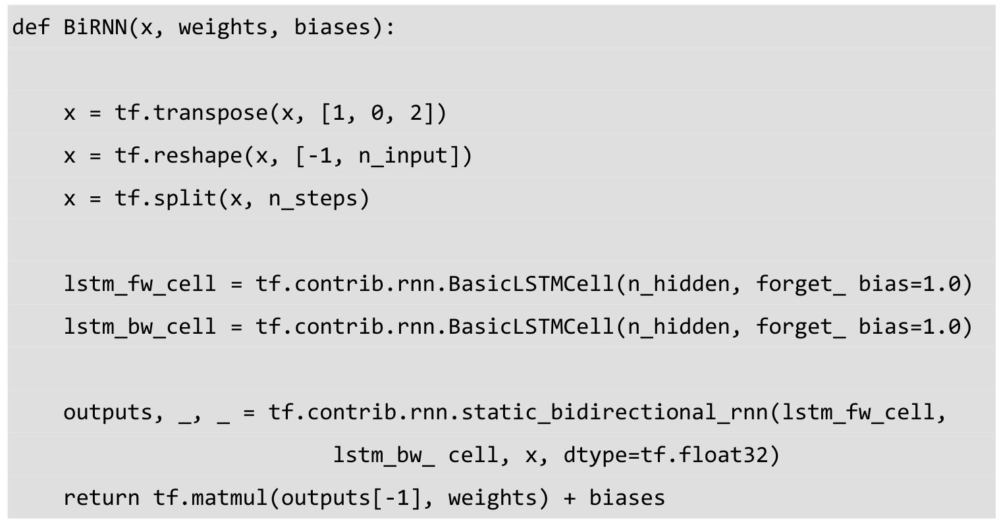
我们使用刚才定义好的函数生成我们的Bidirectional LSTM网络，对最后输出的结果使用tf.nn.softmax_cross_entropy_with_logits进行Softmax处理并计算损失，然后使用tf.reduce_mean计算平均cost。我们定义优化器为Adam，学习速率即为前面定义的learning_rate。再使用tf.argmax得到模型预测的类别，然后用tf.equal判断是否预测正确，最后用tf.reduce_mean求得平均准确率。
下面开始执行训练和测试操作。第一步是执行初始化参数，然后定义一个训练的循环，保持总训练样本数（迭代次数*batch_size）小于之前设定的值。在每一轮训练迭代中，我们使用mnist.train.next_batch拿到一个batch的数据并使用reshape改变其形状。接着，将包含输入x和训练目标y的feed_dict传入，执行一次训练操作并更新模型参数。每当迭代数为display_step的整数倍时，我们计算一次当前batch数据的预测准确率和loss并展示出来。
全部训练迭代结束后，我们使用训练好的模型，对mnist.test.images中全部的测试数据进行预测，并将准确率展示出来。
在完成了40万个样本的训练后，我们看一下模型在训练集和测试集上的表现。在训练集上我们的预测准确率非常高，基本都是1，而在包含10000个样本的测试集上也有0.983的准确率。
Bidirectional LSTM Classifier在MNIST数据集上的表现虽然不如卷积神经网络，但也达到了一个很不错的水平。Bi-RNN乃至双向LSTM网络在时间序列分类任务上能达到较好的表现，是因为它能做到同时利用时间序列的历史和未来信息，结合上下文信息，对结果进行综合判定。虽然在图片这种空间结构显著的数据上不如卷积神经网络，但在无空间结构的单纯的时间序列上，相信Bi-RNN和Bi-LSTM会更具优势。
8 TensorFlow实现深度强化学习
8.1 深度强化学习简介
强化学习（Reinforcement Learning）是机器学习的一个重要分支，主要用来解决连续决策的问题。强化学习可以在复杂的、不确定的环境中学习如何实现我们设定的目标。强化学习的应用场景非常广，几乎包括了所有需要做一系列决策的问题，比如控制机器人的电机让它执行特定任务，给商品定价或者库存管理、玩视频游戏或棋牌游戏等。强化学习也可以应用到有序列输出的问题中，因为它可以针对一系列变化的环境状态，输出一系列对应的行动。举个简单的例子，围棋（乃至全部棋牌类游戏）可以归结为一个强化学习问题，我们需要学习在各种局势下如何走出最好的招法。
一个强化学习问题包含三个主要概念，即环境状态（Environment State）、行动（Action）和奖励（Reward），而强化学习的目标就是获得最多的累计奖励。在围棋中，环境状态就是我们已经下出来的某个局势，行动是指我们在某个位置落子，奖励则是当前这步棋获得的目数（围棋中存在不确定性，在结束对弈后计算的目数是准确的，棋局中获得的目数是估计的），而最终目标就是在结束对弈时总目数超过对手，赢得胜利。我们要让强化学习模型根据环境状态、行动和奖励，学习出最佳的策略，并以最终结果为目标，不能只看某个行动当下带来的利益（比如围棋中通过某一手棋获得的实地），还要看到这个行动未来能带来的价值（比如围棋中外势可以带来的潜在价值）。我们回顾一下，AutoEncoder属于无监督学习，而MLP、CNN和RNN都属于监督学习，但强化学习跟这两种都不同。它不像无监督学习那样完全没有学习目标，也不像监督学习那样有非常明确的目标（即label），强化学习的目标一般是变化的、不明确的，甚至可能不存在绝对正确的标签。
强化学习已经有几十年的历史，但是直到最近几年深度学习技术的突破，强化学习才有了比较大的进展。Google DeepMind结合强化学习与深度学习，提出DQN61 （Deep Q-Network，深度Q网络），它可以自动玩Atari 2600系列的游戏，并取得了超过人类的水平。而DeepMind的AlphaGo62 结合了策略网络（Policy Network）、估值网络（Value Network，也即DQN）与蒙特卡洛搜索树（Monte Carlo Tree Search），实现了具有超高水平的围棋对战程序，并战胜了世界冠军李世石。DeepMind使用的这些深度强化学习模型（Deep Reinforcement Learning）本质上也是神经网络，主要分为策略网络和估值网络两种。深度强化学习模型对环境没有特别强的限制，可以很好地推广到其他环境，因此对强化学习的研究和发展具有非常重大的意义。下面我们来看看深度强化学习的一些实际应用例子。
无人驾驶是一个非常复杂、非常困难的强化学习任务，在深度学习出现之前，几乎不可能实现。如图8-1所示，无人驾驶汽车通过摄像头、雷达、激光测距仪、传感器等对环境进行观测，获取到许多丰富的环境信息，然后通过深度强化学习模型中的CNN、RNN等对环境信息进行处理、抽象和转化，再结合强化学习算法框架预测出最应该执行的动作（加速、减速、转换方向等），来实现自动驾驶。无人驾驶汽车每次执行的动作，都会让它到目的地的路程更短，这就是每次行动的奖励。当然，其最终目标是安全地顺利地到达目的地，这样可以获得最多的奖励。
图8-1 自动驾驶包含了对环境物体的识别及对汽车移动的连续控制
深度强化学习的另一个重要应用是操控复杂的机械装置。一般情况下，我们需要给机械装置编写逻辑非常复杂的控制代码来让它们执行具体的操作，比如控制机械臂拾取小零件。如果要拾取某个特定形状的小零件，需要单独设计一套逻辑，来控制电机进行一系列运转，进而驱动机械臂各个关节转动，最终拾取物体。但是这种做法拾取物体的成功率并不高，而且如果换了一个形状的零件，或者零件的位置发生比较大的变化，那就需要重新设计逻辑。利用深度强化学习算法，我们可以让机器自己学习如何拾取物体，如图8-2所示，省去了大量的编程工作。深度强化学习模型中前几层可使用卷积网络，然后可以使用卷积网络对摄像头捕获的图像进行处理和分析，让模型能“看见”环境并识别出物体位置，再通过强化学习框架，学习如何通过一系列动作来最高效地拾取物体。另外，当有新零件出现时，只需要再让机器学习一段时间，就可以掌握抓取新零件的方法，并且这个学习过程可以自动完成，无须人工干预。事实上，通过深度强化学习我们甚至可以让模型学会自动驾驶直升机，这是Andrew Ng在讲解强化学习时提到的例子。
图8-2 使用深度强化学习模型控制机械臂拾取小零件
同时，我们也可以使用深度强化学习自动玩游戏，如图8-3所示，用DQN可学习自动玩Flappy Bird。DQN前几层通常也是卷积层，因此具有了对游戏图像像素（raw pixels）直接进行学习的能力。前几层卷积可理解和识别游戏图像中的物体，后层的神经网络则对Action的期望价值进行学习，结合这两个部分，可以得到能根据游戏像素自动玩Flappy Bird 的强化学习策略。而且，不仅是这类简单的游戏，连非常复杂的包含大量战术策略的《星际争霸2》也可以被深度强化学习模型掌握。目前，DeepMind就在探索如何通过深度强化学习训练一个可以战胜《星际争霸2》世界冠军的人工智能，这之后的进展让我们拭目以待。
图8-3 使用深度强化学习自动玩Flappy Bird
深度强化学习最具有代表性的一个里程碑自然是AlphaGo。在2016年，Google DeepMind的AlphaGo以4:1的比分战胜了人类的世界冠军李世石，如图8-4所示。围棋可以说是棋类游戏中最为复杂的，19×19的棋盘给它带来了3361 种状态，除去其中非法的违反游戏规则的状态，也有远超整个宇宙中原子数目的状态数。因此，计算机是无法通过像深蓝那样的暴力搜索来战胜人类的，要在围棋这个项目上战胜人类，就必须给计算机抽象思维的能力，而AlphaGo做到了这一点。
图8-4 AlphaGo代表了深度强化学习技术的巅峰
在AlphaGo中使用了快速走子（Fast Rollout）、策略网络、估值网络和蒙特卡洛搜索树等技术。图8-5所示为AlphaGo的几种技术单独使用时的表现，横坐标为步数，纵坐标为预测的误差（可以理解为误差越低模型效果越好），其中简单的快速走子策略虽然效果比较一般，但是已经远胜随机策略。估值网络和策略网络的效果都非常好，相对来说，策略网络的性能更胜一筹。AlphaGo融合了所有这些策略，取得了比单一策略更好的性能，在实战中表现出了惊人的水平。
图8-5 AlphaGo中随机策略、快速走子、估值网络和策略网络（SL和RL两种）的性能表现
Policy-Based（或者Policy Gradients）和Value-Based（或者Q-Learning）是强化学习中最重要的两类方法，其主要区别在于Policy-Based的方法直接预测在某个环境状态下应该采取的Action，而Value Based的方法则预测某个环境状态下所有Action的期望价值（Q值），之后可以通过选择Q值最高的Action执行策略。这两种方法的出发点和训练方式都有不同，一般来说，Value Based方法适合仅有少量离散取值的Action的环境，而Policy-Based方法则更通用，适合Action种类非常多或者有连续取值的Action的环境。而结合深度学习后，Policy-Based的方法就成了Policy Network，而Value-Based的方法则成了Value Network。
图8-6所示为AlphaGo中的策略网络预测出的当前局势下应该采取的Action，图中标注的数值为策略网络输出的应该执行某个Action的概率，即我们应该在某个位置落子的概率。
图8-7所示为AlphaGo中估值网络预测出的当前局势下每个Action的期望价值。估值网络不直接输出策略，而是输出Action对应的Q值，即在某个位置落子可以获得的期望价值。随后，我们可以直接选择期望价值最大的位置落子，或者选择其他位置进行探索。
图8-6 AlphaGo中的策略网络，输出在某个位置落子的概率
图8-7 AlphaGo中的估值网络，输出在某个位置落子的期望价值
在强化学习中，我们也可以建立额外的model对环境状态的变化进行预测。普通的强化学习直接根据环境状态预测出行动策略，或行动的期望价值。如果根据环境状态和采取的行动预测接下来的环境状态，并利用这个信息训练强化学习模型，那就是model-based RL。对于复杂的环境状态，比如视频游戏的图像像素，要预测这么大量且复杂的环境信息是非常困难的。如果环境状态是数量不大的一些离散值（m），并且可采取的行动也是数量较小的一些离散值(n)，那么环境model只是一个简单的m×n的转换矩阵。对于一个普通的视频游戏环境，假设图像像素为64×64×3，可选行动有18种，那么我们光存储这个转换矩阵就需要大的难以想象的内存空间（256 64 × 64 × 3 ×18）。对于更复杂的环境，我们就更难使用model预测接下来的环境状态。而model-free类型的强化学习则不需要对环境状态进行任何预测，也不考虑行动将如何影响环境。model-free RL直接对策略或者Action的期望价值进行预测，因此计算效率非常高。当然，如果有一个良好的model可以高效、准确地对环境进行预测，会对训练RL带来益处；但是一个不那么精准的model反而会严重干扰RL的训练。因此，对大多数复杂环境，我们主要使用model-free RL，同时供给更多的样本给RL训练，用来弥补没有model预测环境状态的问题。
8.2 TensorFlow实现策略网络
前面提到了强化学习中非常重要的3个要素是Environment State、Action和Reward。在环境中，强化学习模型的载体是Agent，它负责执行模型给出的行动。环境是Agent无法控制的，但是可以进行观察；根据观察的结果，模型给出行动，交由Agent来执行；而Reward是在某个环境状态下执行了某个Action而获得的，是模型要争取的目标。在很多任务中，Reward是延迟获取的（Delayed），即某个Action除了可以即时获得Reward，也可能跟未来获得的Reward有很大关系。
所谓策略网络，即建立一个神经网络模型，它可以通过观察环境状态，直接预测出目前最应该执行的策略（Policy），执行这个策略可以获得最大的期望收益（包括现在的和未来的Reward）。与普通的监督学习不同，在强化学习中，可能没有绝对正确的学习目标，样本的feature不再和label一一对应。对某一个特定的环境状态，我们并不知道它对应的最好的Action是什么，只知道当前Action获得的Reward还有试验后获得的未来的Reward。我们需要让强化学习模型通过试验样本自己学习什么才是某个环境状态下比较好的Action，而不是告诉模型什么才是比较好的Action，因为我们也不知道正确的答案（即样本没有绝对正确的label，只有估算出的label）。我们的学习目标是期望价值，即当前获得的Reward，加上未来潜在的可获取的reward。为了更好地让策略网络理解未来的、潜在的Reward，策略网络不只是使用当前的Reward作为label，而是使用Discounted FutureReward，即把所有未来奖励依次乘以衰减系数γ。这里的衰减系数一般是一个略小于但接近1的数，防止没有损耗地积累导致Reward目标发散，同时也代表了对未来奖励的不确定性的估计。
r =r1 +γr2 +γ2 r3 +… +γn-1 rn
我们使用被称为Policy Gradients的方法来训练策略网络。Policy Gradients指的是模型通过学习Action在Environment中获得的反馈，使用梯度更新模型参数的过程。在训练过程中，模型会接触到好Action及它们带来的高期望价值，和差Action及它们带来的低期望价值，因此通过对这些样本的学习，我们的模型会逐渐增加选择好Action的概率，并降低选择坏Action的概率，这样就逐渐完成了我们对策略的学习。和Q-Learning或估值网络不同，策略网络学习的不是某个Action对应的期望价值Q，而是直接学习在当前环境应该采取的策略，比如选择每个Action的概率（如果是有限个可选Action，好的Action应该对应较大概率，反之亦然），或者输出某个Action的具体数值（如果Action不是离散值，而是连续值）。因此策略网络是一种End-to-End（端对端）的方法，可以直接产生最终的策略。
Policy Based的方法相比于Value-Based，有更好的收敛性（通常可以保证收敛到局部最优，且不会发散），同时对高维或者连续值的Action非常高效（训练和输出结果都更高效），同时能学习出带有随机性的策略。例如，在石头剪刀布的游戏中，任何有规律的策略都会被别人学习到并且被针对，因此完全随机的策略反而可以立于不败之地（起码不会输给别的策略）。在这种情况下，可以利用策略网络学到随机出剪刀、石头、布的策略（三个Action的概率相等）。
我们需要使用Gym63 辅助我们进行策略网络的训练。Gym是OpenAI推出的开源的强化学习的环境生成工具。OpenAI是Tesla和Space X的老板马斯克发起的非营利性的人工智能研究机构。其主要任务是研究安全、开放的人工智能技术，并且确保人工智能技术可以被广泛地、公平地普及，并服务社会。Gym是OpenAI贡献出来的非常重要的开源项目，它的主要作用是为研究者和开发者提供一个方便的强化学习任务环境，例如文字游戏、棋类游戏、视频图像游戏等，并且让用户可以和其他人的强化学习算法进行效率、性能上的比较。
对于强化学习的研究，之前主要受制于两个因素。其一是缺乏高质量的Benchmark，对于图像识别、监督学习等问题，我们有ImageNet这样的经过标注的超大规模数据集，可以让各种算法在上面进行测试。在强化学习中同样需要大量的、丰富的任务环境，而目前任务环境不仅稀缺，而且设置一个环境的过程也非常烦琐；其二是我们没有一个通用的环境标准，强化学习的相关论文很难进行横向比较，不同任务使用的环境定义、reward的函数、可用的Action都会有区别，而且不同任务的难度可能差异非常大，比如围棋就比国际象棋难很多。Gym则非常好地解决了这两个问题，提供了大量的标准化的环境，可以用来公平地横向对比强化学习模型的性能。Gym的用户可以上传模型效果和训练日志到OpenAI Gym Service的接口，随后可以参与某个任务的排名，和其他研究者比较模型的效果，并分享算法的思路给其他研究者。
OpenAI Gym对用户开发模型的方式没有任何限制，它跟其他机器学习库，例如TensorFlow和Theano，都完全兼容。用户可以使用Python语言和任何Python的Library编写强化学习模型的Agent，比如可以创建一些简单的经验规则，或者使用State-Action一一对应的策略表，当然也可以使用深度神经网络模型来做训练模型。
在Gym中，有两个核心的概念，一个是Environment，指我们的任务或者问题，另一个就是Agent，即我们编写的策略或算法。Agent会将执行的Action传给Environment，Environment接受某个Action后，再将结果Observation（即环境状态）和Reward返回给Agent。Gym中提供了完整的Environment的接口，而Agent则是完全由用户编写。目前，Gym一共包含了几个大类的环境，分别是Algorithmic（算法）、Atari游戏（使用了Arcade Learning Environment）、Board Games（棋牌类游戏，其中围棋包含了9×9和19×19两种规模，目前使用的对抗程序为Pachi）、Box2D（二维的物理引擎）、Classic Control（经典的控制类问题）、MuJoCo（另一个高效的物理引擎，可以实现非常细节的物理模拟，包括碰撞，可以用来控制2D或者3D的机器人执行一些任务操作），以及Toy Text（文本类型）的任务。其中某些任务环境需要额外安装一些依赖库或者程序，我们可以执行full install来安装全部环境的依赖程序。
Gym中环境的接口是Env类，其中有几个重要的方法。使用env=gym.make(‘Copy-v0’)创建某个任务的环境；使用env.reset()初始化环境，并返回初始的observation，即state；使用env.step(action)在当前状态下执行一步Action，并返回observation、reward、done（完成标记）、info（调试信息，但一般不应让Agent使用该信息）；使用env.render()方法可以渲染出一帧的任务图像，很多任务的observation就是一帧图像，此时Agent直接从图像像素中学习信息和策略。
下面我们就以Gym中的CartPole环境作为具体例子。CartPole任务最早由论文Neuronlike Adaptive Elements That Can Solve Difficult Learning Control Problem 提出，是一个经典的可用强化学习来解决的控制问题。如图8-8所示，CartPole的环境中有一辆小车，在一个一维的无阻力轨道上行动，在车上绑着一个连接不太结实的杆，这个杆会左右摇晃。我们的环境信息observation并不是图像像素，而只是一个有4个值的数组，包含了环境中的各种信息，比如小车位置、速度、杆的角度、速度等。我们并不需要知道每个数值对应的具体物理含义，因为我们不是要根据这些数值自己编写逻辑控制小车，而是设计一个策略网络让它自己从这些数值中学习到环境信息，并制定最佳策略。我们可以采取的Action非常简单，给小车施加一个正向的力或者负向的力。我们有一个Action Space的概念，即Action的离散数值空间，比如在CartPole里Action Space就是Discrete(2)，即只有0或1，其他复杂一点的游戏可能有更多可以选择的值。我们并不需要知道这里的数值会具体对应哪个Action，只要模型可以学习到采取这个Action之后将会带来的影响就可以，因此Action都只是一个编码。CartPole的任务目标很简单，就是尽可能地保持杆竖直不倾倒，当小车偏离中心超过2.4个单位的距离，或者杆的倾角超过15度时，我们的任务宣告失败，并自动结束。在每坚持一步后，我们会获得+1的reward，我们只需要坚持尽量长的时间不导致任务失败即可。任务的Reward恒定，对任何Action，只要不导致任务结束，都可以获得+1的Reward。但是我们的模型必须有远见，要可以考虑到长远的利益，而不只是学习到当前的Reward。
图8-8 CartPole环境中包含一个可以控制移动方向的小车和不稳的杆
当我们使用env.reset()方法后，就可以初始化环境，并获取到环境的第一个Observation。此后，根据Observation预测出应该采取的Action，并使用env.step(action)在环境中执行Action，这时会返回Observation（在CartPole中是4维的抽象的特征，在其他任务中可能是图像像素）、reward（当前这步Action获得的即时奖励）、done（任务是否结束的标记，在CartPole中是杆倾倒或者小车偏离中心太远，其他游戏中可能是被敌人击中。如果为True，应该reset任务）和info（额外的诊断信息，比如标识了游戏中一些随机事件的概率，但是不应该用来训练Agent）。这样我们就进入Action-Observation的循环，执行Action，获得Observation，再执行Action，如此往复直到任务结束，并期望在结束时获得尽可能高的奖励。我们可执行的Action在CartPole中是离散的数值空间，即有限的几种可能，在别的任务中可能是连续的数值，例如在赛车游戏任务中，我们执行的动作是朝某个方向移动，这样我们就有了0~360度的连续数值空间可以选择。同时，我们的环境名称后面都带有版本号，比如V0、V1等。当环境发生更新或者变化时，我们不会修改之前的环境，而是创建新的版本，这样可以让Agent的性能被公平的比较。同时，我们可以调用env.monitor方法，对模型的训练过程进行监控和记录，这样之后我们就可以方便地使用gym.upload将训练日志上传到gym service进行展示，并与他人的算法进行比较。一般来说，对比较简单的问题，我们的评测标准是需要多少步训练就可以稳定地达到理想的分数，并希望需要的训练步数越少越好；对于比较复杂的问题，我们并不知道理想的分数是多少，因此一般是希望获得的分数越高越好。用户可以上传算法到gym并让同行审议，其中如果提出非常有效的新算法、新技巧，并且能被其他研究者复现，那对相关领域的研究会有很大价值。
下面就使用TensorFlow创建一个基于策略网络的Agent来解决CartPole问题。我们先安装OpenAI Gym。本节代码主要来自DeepRL-Agents64 的开源实现。
pip install gym
接着，载入NumPy、TensorFlow和gym。这里用gym.make(‘CartPole-v0’)创建CartPole问题的环境env。
先测试在CartPole环境中使用随机Action的表现，作为接下来对比的baseline。首先，我们使用env.reset()初始化环境，然后进行10次随机试验，这里调用env.render()将CartPole问题的图像渲染出来。使用np.random.randint(0,2)产生随机的Action，然后用env.step()执行随机的Action，并获取返回的observation、reward和done。如果done标记为True，则代表这次试验结束，即倾角超过15度或者偏离中心过远导致任务失败。在一次试验结束后，我们展示这次试验累计的奖励reward_sum并重启环境。
可以看到随机策略获得的奖励总值差不多在10~40之间，均值应该在20~30，这将作为接下来用来对比的基准。我们将任务完成的目标设定为拿到200的Reward，并希望通过尽量少次数的试验来完成这个目标。
我们的策略网络使用简单的带有一个隐含层的MLP。先设置网络的各个超参数，这里隐含节点数H设为50，batch_size设为25，学习速率learning_rate为0.1，环境信息observation的维度D为4，gamma即Reward的discount比例设为0.99。在估算Action的期望价值（即估算样本的学习目标）时会考虑Delayed Reward，会将某个Action之后获得的所有Reward做discount并累加起来，这样可以让模型学习到未来可能出现的潜在Reward。注意，一般discount比例要小于1，防止Reward被无损耗地不断累加导致发散，这样也可以区分当前Reward和未来Reward的价值（当前Action直接带来的Reward不需要discount，而未来的Reward因存在不确定性所以需要discount）。
下面定义策略网络的具体结构。这个网络将接受observations作为输入信息，最后输出一个概率值用以选择Action（我们只有两个Action，向左施加力或者向右施加力，因此可以通过一个概率值决定）。我们创建输入信息observations的placeholder，其维度为D。然后使用tf.contrib.layers.xavier_initializer初始化算法创建隐含层的权重W1，其维度为[D,H]。接着用tf.matmul将环境信息observation乘上W1再使用ReLU激活函数处理得到隐含层输出layer1，这里注意我们并不需要加偏置。同样用xavier_initializer算法创建最后Sigmoid输出层的权重W2，将隐含层输出layer1乘以W2后，使用Sigmoid激活函数处理得到最后的输出概率。
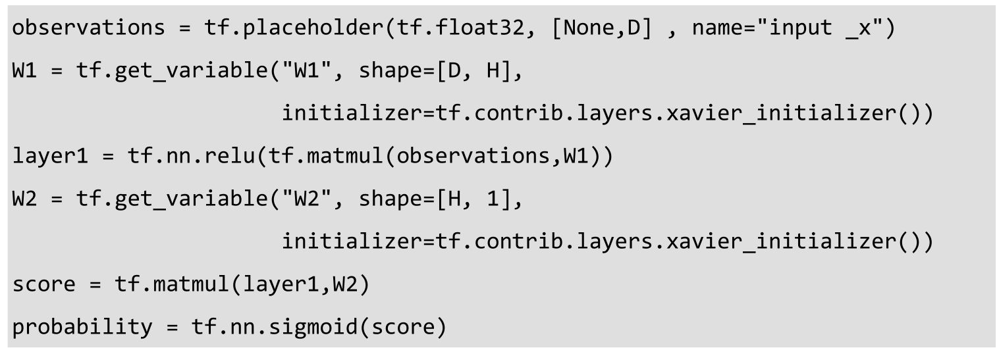
这里模型的优化器使用Adam算法。我们分别设置两层神经网络参数的梯度的placeholder——W1Grad和W2Grad，并使用adam.apply_gradients定义我们更新模型参数的操作updateGrads。之后计算参数的梯度，当积累到一定样本量的梯度，就传入W1Grad 和W2Grad，并执行updateGrads更新模型参数。这里注意，深度强化学习的训练和其他神经网络一样，也使用batch training的方式。我们不逐个样本地更新参数，而是累计一个batch_size的样本的梯度再更新参数，防止单一样本随机扰动的噪声对模型带来不良影响。
下面定义函数discount_rewards，用来估算每一个Action对应的潜在价值discount_r。因为CartPole问题中每次获得的Reward都和前面的Action有关，属于delayed reward。因此需要比较精准地衡量每一个Action实际带来的价值时，不能只看当前这一步的Reward，而要考虑后面的Delayed Reward。那些能让Pole长时间保持在空中竖直的Action，应该拥有较大的期望价值，而那些最终导致Pole倾倒的Action，则应该拥有较小的期望价值。我们判断越靠后的Action的期望价值越小，因为它们更可能是导致Pole倾倒的原因，并且判断越靠前的Action的期望价值越大，因为它们长时间保持了Pole的竖直，和倾倒的关系没有那么大。我们倒推整个过程，从最后一个Action开始计算所有Action应该对应的期望价值。输入数据r为每一个Action实际获得的Reward，在CartPole问题中，除了最后结束时的Action为0，其余均为1。下面介绍具体的计算方法，我们定义每个Action除直接获得的Reward外的潜在价值为running_add，running_add是从后向前累计的，并且需要经过discount衰减。而每一个Action的潜在价值，即为后一个Action的潜在价值乘以衰减系数gamma再加上它直接获得的reward，即running_add*gamma+r[t]。这样从最后一个Action开始不断向前累计计算，即可得到全部Action的潜在价值。这种对潜在价值的估算方法符合我们的期望，越靠前的Action潜在价值越大。
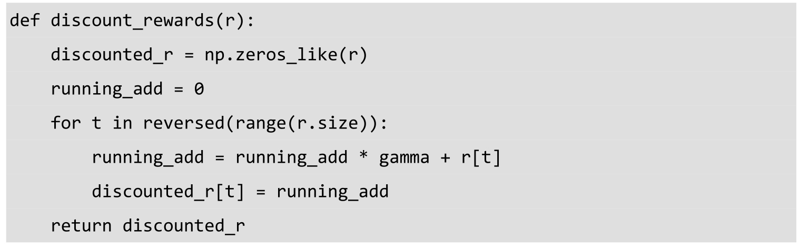
我们定义人工设置的虚拟label（下文会讲解其生成原理，其取值为0或1）的placeholder——input_y，以及每个Action的潜在价值的placeholder——advangtages。这里loglik的定义略显复杂，我们来看一下loglik到底代表什么。Action取值为1的概率为probability（即策略网络输出的概率），Action取值为0的概率为1-probability，label取值与Action相反，即label=1-Action。当Action为1时，label为0，此时loglik=tf.log(probability)，Action取值为1的概率的对数；当Action为0时，label为1，此时loglik=tf.log(1-probability)，即Action取值为0的概率的对数。所以，loglik其实就是当前Action对应的概率的对数，我们将loglik与潜在价值advantages相乘，并取负数作为损失，即优化目标。我们使用优化器优化时，会让能获得较多advantages的Action的概率变大，并让能获得较少advantages的Action的概率变小，这样能让损失变小。通过不断的训练，我们便能持续加大能获得较多advantages的Action的概率，即学习到一个能获得更多潜在价值的策略。最后，使用tf.trainable_variables()获取策略网络中全部可训练的参数tvars，并使用tf.gradients求解模型参数关于loss的梯度。

在正式进入训练过程前，我们先定义一些参数，xs为环境信息observation的列表，ys为我们定义的label的列表，drs为我们记录的每一个Action的Reward。我们定义累计的Reward为reward_sum，总试验次数total_episodes为10000，直到达到获取200的Reward才停止训练。
我们创建默认的Session，初始化全部参数，并在一开始将render的标志关闭。因为render会带来比较大的延迟，所以一开始不太成熟的模型还没必要去观察。先初始化CartPole的环境并获得初始状态。然后使用sess.run执行tvars获取所有模型参数，用来创建储存参数梯度的缓冲器gradBuffer，并把gardBuffer全部初始化为零。接下来的每次试验中，我们将收集参数的梯度存储到gradBuffer中，直到完成了一个batch_size的试验，再将汇总的梯度更新到模型参数。
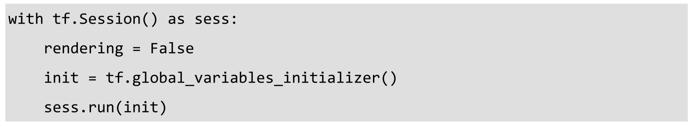
下面进入试验的循环，最大循环次数即为total_episodes。当某个batch的平均Reward达到100以上时，即Agent表现良好时，调用env.render()对试验环境进行展示。先使用tf.reshape将observation变形为策略网络输入的格式，然后传入网络中，使用sess.run执行probability获得网络输出的概率tfprob，即Action取值为1的概率。接下来我们在（0，1）间随机抽样，若随机值小于tfprob，则令Action取值为1，否则令Action取值为0，即代表Action取值为1的概率为tfprob。
然后将输入的环境信息observation添加到列表xs中。这里我们制造虚拟的label——y，它取值与Action相反，即y=1-action，并将其添加到列表ys中。然后使用env.step执行一次Action，获取observation、reward、done和info，并将reward累加到reward_sum，同时将reward添加到列表drs中。

当done为True，即一次试验结束时，将episode_numer加1。同时使用np.vstack将几个列表xs、ys、drs中的元素纵向堆叠起来，得到epx、epy和epr，并将xs、ys、drs清空以备下次试验使用。这里注意，epx、epy、drs即为一次试验中获得的所有observation、label、reward的列表。我们使用前面定义好的discount_rewards函数计算每一步Action的潜在价值，并进行标准化（减去均值再除以标准差），得到一个零均值标准差为1的分布。这么做是因为discount_reward会参与到模型损失的计算，而分布稳定的discount_rewad有利于训练的稳定。
我们将epx、epy和discounted_epr输入神经网络，并使用操作newGrads求解梯度。再将获得的梯度累加到gradBuffer中去。
当进行试验的次数达到batch_size的整倍数时，gradBuffer中就累计了足够多的梯度，因此使用updateGrads操作将gradBuffer中的梯度更新到策略网络的模型参数中，并清空gradBuffer，为计算下一个batch的梯度做准备。这里注意，我们是使用一个batch的梯度更新参数，但是每一个梯度是使用一次试验中全部样本（一个Action对应一个样本）计算出来的，因此一个batch中的样本数实际上是25（batch_size）次试验的样本数之和。同时，我们展示当前的试验次数episode_number，和batch内每次试验平均获得的reward。当我们batch内每次试验的平均reward大于200时，我们的策略网络就成功完成了任务，并将终止循环。如果没有达到目标，则清空reward_sum，重新累计下一个batch的总reward。同时，在每次试验结束后，将任务环境env重置，方便下一次试验。
下面是我们模型的训练日志，可以看到策略网络在仅经历了200次试验，即8个batch的训练和参数更新后，就实现了我们的目标，达到了batch内平均230的reward，顺利完成预设的目标。有兴趣的读者可以尝试修改策略网络的结构、隐含节点数、batch_size、学习速率等参数来尝试优化策略网络的训练，加快其学习到好策略的速度。
8.3 TensorFlow实现估值网络
在强化学习中，除了Policy Based直接选择Action的方法，还有一种学习Action对应的期望价值（Expected Utility）的方法，称为Q-Learning65。Q-Learning最早于1989年由Watkins提出，其收敛性于1992年由Watkins和Dayan共同证明。Q-Learning学习中的期望价值指从当前的这一步到所有后续步骤，总共可以期望获取的最大价值（即Q值，也可称为Value）。有了这个Action→
Q的函数，我们的最佳策略就是在每一个state下，选择Q值最高的Action。和Policy Based方法一样，Q-Learning不依赖环境模型。在有限马尔科夫决策过程（Markov Decision Process）中，Q-Learning被证明最终可以找到最优的策略。
Q-Learning的目标是求解函数O (st , at
)，即根据当前环境状态，估算Action的期望价值。Q-Learning训练模型的基本思路也非常简单，它以（状态、行为、奖励、下一个状态）构成的元组(st,at ,rt+1 ,st+1 )为样本进行训练，其中st 为当前的状态，a 为当前状态下执行的Action，rt +1 为在执行Action后获得的奖励，st +1 为下一个状态。其中特征是（st ,at ），而学习目标（即期望价值）则是rt+1 +γ· max a O
(st+1 ,a )，这个学习目标即是当前Action获得的Reward加上下一步可获得的最大期望价值。学习目标中包含了Q-Learning的函数本身，所以这其中使用了递归求解的思想。下一步可获得的最大期望价值被乘以一个γ ，即衰减系数discount factor，这个参数决定了未来奖励在学习中的重要性。如果discount factor为0，那么模型将学习不到任何未来奖励的信息，将会变得短视，只关注当前的利益；如果discount factor大于等于1，那算法很可能无法收敛，期望价值将被不断累加并且没有衰减（即discount），这样期望价值很可能会发散。因此，discount factor一般会被设为一个比1稍小的值。我们可以把整个Q-Learning学习的过程写成下面这个式子：
简单描述这个公式是，将旧的Q-Learning函数Q old (st ,at
)，向着学习目标（当前获得的Reward加上下一步可获得的最大期望价值）按一个较小的学习速率α 学习，得到新的Q-Learning函数Q new (st,at
)。其中学习速率决定了我们使用新获取的样本信息覆盖之前掌握到的信息的比率，通常设为一个比较小的值，可以保证学习过程的稳定，同时确保最后的收敛性。同时，Q-Learning需要一个初始值O0，而比较高的初始值可以鼓励模型多进行探索。
我们用来学习Q-Learning的模型可以是神经网络，这样得到的模型即是估值网络。如果其中的神经网络比较深，那就是DQN。DQN这一说法，是由Google DeepMind发表于Nature的论文Human-level control through deep reinforcement learning 提出的，在这篇论文中DeepMind使用DQN创建了达到人类专家水平的可以玩Atari 2600系列游戏的Agent。相比于早期Q-Learning使用的简单模型，DeepMind的DQN有了很多方面的改进。下面我们将逐一介绍目前state of the art的DQN中的一些Trick。
第1个Trick，我们需要在DQN中引入卷积层。我们不再是输入一些数值类的特征让模型学习，而是直接让模型通过Atari这类游戏的视频图像了解环境信息并学习策略。这样就必须让DQN能理解它所接收到的图像，即具有一定的图像识别能力，因此我们就需要用到前几章提到的卷积神经网络。卷积神经网络的具体原理前面几章讲解过，它利用可提取空间结构信息的卷积层来抽取特征。卷积层可以提取图像中重要目标的特征并传给后面的层来做分类或者回归，比如第6章中的VGG Net和Inception Net。但DQN不同，它使用卷积层不是用来对图像做分类，而是进行强化学习的训练，其目标是根据环境图像输出决策。通常在设计DQN时，如果输入是图像，那么最前面几层一般都会设置成卷积层，如图8-9所示。本节将要实现的DQN的前4层也都是卷积层。
图8-9 Deep Q-Network中的多层卷积结构
第2个Trick是Experience Replay。因为深度学习需要大量的样本，所以传统的Q-Learning的online update的方法（逐一对新样本学习的方式）可能不太适合DQN。因此，我们需要增大样本量，并且像VGGNet或Inception Net那样进行多个epoch的训练，对图像进行反复利用。我们引入一种被称为Experience Replay的技术，它的主要思想就是储存Agent的Experience（即样本），并且每次训练时随机抽取一部分样本供给网络学习。这样我们能比较稳定地完成学习任务，避免只短视地学习到最新接触到的样本，而是综合地、反复地利用过往的大量样本进行学习。我们会创建一个用来储存Experience的缓存buffer，它里面可以储存一定量的比较新的样本。当容量满了以后，会用新样本替换最旧的样本，这可以保证大部分样本有相近的概率被抽到，如果不替换旧的，那么从一开始就获得的旧样本，在整个训练过程中被抽到的概率会比新样本高很多。每次需要训练样本时，就直接从buffer中随机抽取一定量的样本给DQN训练，这样可以保持对样本较高的利用率，同时可以让模型学习到比较新的一批样本。
第3个Trick，我们可以再使用第二个DQN网络来辅助训练，这个辅助网络一般称为target DQN，它的意义是辅助我们计算目标Q值，即提供学习目标公式里的max a O (st+1 ,a
)。我们之所以要拆分为两个网络，一个用来制造学习目标，一个用来进行实际训练，原因很简单，是为了让Q-Learning训练的目标保持平稳。强化学习及Q-Learning不像普通的监督学习，它的学习目标每次都是变化的，因为学习目标的一部分是模型本身输出的。每次更新模型参数都会导致我们的学习目标发生变化，如果更新很频繁、幅度很大，我们的训练过程就会非常不稳定并且失控。这样DQN的训练就会陷入目标Q值与预测Q值的反馈循环中（陷入震荡发散，难以收敛）。为了降低这种影响，需要让目标Q值尽量平稳，因此需要一个比较稳定的target DQN辅助网络计算目标Q值。我们让target DQN进行低频率或者缓慢的学习，这样它输出的目标Q值的波动也会比较小，可以减小对训练过程的影响。
第4个Trick，如果在分拆出target DQN的方法上更进一步，那就是Double DQN。DeepMind的研究者在论文Deep Reinforcement Learning with Double Q-Learning 中发现，传统的DQN通常会高估Action的Q值。如果这种高估不是均匀的，可能会导致本来次优的某个Action总是被高估而超过了最优的Action，那将给训练和选择Action带来很大的麻烦，我们可能永远都发现了不了最优的Action。因此，在DeepMind这篇论文中提出了可以在DQN中也使用Double Q-Learning的方法。我们之前是让target DQN完全负责生成目标Q值，即先产生O (st+1 ,a
)，再通过 选择最大的Q值。Double DQN则是修改了第二步，不是直接选择target DQN上最大的Q值，而是在我们的主DQN上通过其最大Q值选择Action，再去获取这个Action在target DQN上的Q值。这样我们的主网络负责选择Action，而这个被选定的Action的Q值则由target DQN生成。被选择的Q值，不一定总是最大的Q值，这样就避免了被高估的次优Action总是超过最优的Action，导致我们发现不了真正最好的Action。我们的学习目标因此可以写成下面的式子。
第5个Trick是Dueling DQN，也是DQN的一个重大改进，在Google的论文Dueling Network Architectures for Deep Reinforcement Learning 中被首次提出。Dueling DQN将Q值的函数Q(st ,at
)拆分为两部分，一部分是静态的环境状态本身具有的价值V (st )，称为Value；另一部分是动态的通过选择某个Action额外带来的价值A (at
)，称为Advantage。我们的Q值将由这两部分组合而成，可以写成下面这个公式。
Q(st ,at )=V (st )+ A (at )
Dueling的目标就是让网络可以分别计算环境本身的Value和选择Action带来的Advantage，这里的Advantage是某个Action与其他Action的比较，因此我们将它设计为零均值的。如图8-10所示，上面那部分是传统的DQN网络，下面的就是Dueling DQN了，在网络的最后部分，不再是直接输出Action数量（假定为n ）的Q值，而是输出一个Value值及n 个Advantage值，然后将V值分别加到每一个Advanatge值上，得到最后的结果。这样做的目的是让DQN的学习目标更明确，如果当前的期望价值主要是由环境状态决定的，那么Value值很大，而所有Advantage的波动都不大；如果期望价值主要由Action决定，那么Value值很小，而Advantage波动会很大，分解这两个部分会让我们的学习目标更稳定、更精确，让DQN对环境状态的估计能力更强。
下面我们就实现带有前面几个Trick的DQN。使用的任务环境是叫作GridWorld的导航类游戏，如图8-11所示。GridWorld中包含一个hero（实际为蓝色，这里以白色显示）4个goal（实际为绿色，这里以浅灰表示）和2个fire（实际为红色，这里以深灰色表示）。我们的目标就是控制hero移动，每次向上、下、左、右等方向移动一步，尽可能多地触碰goal（奖励值为1），同时避开fire（奖励值为-1）。游戏的目标是在限定步数内拿到最多的分数。我们的Agent将直接通过GridWorld的图像学习控制hero移动的最优策略。
图8-10 Dueling DQN拆分了value function和advantage function
图8-11 GridWorld游戏环境示例
下面开始创建GridWorld任务的环境。首先是载入各种依赖的库，这次需要载入的库相对较多，其中itertools可以方便地进行迭代操作，scipy.misc和matplotlib.pyplot可以绘图。同时因为训练时间较长，我们也载入os用来定期储存模型文件。本节代码主要来自DeepRL-Agents的开源实现66 。
先是创建环境内物体对象的class，环境物体包括以下几个属性：coordinates（x,y坐标）、size（尺寸）、intensity（亮度值）、channel（RGB颜色通道）、reward（奖励值），以及name（名称）。
然后创建GridWorld环境的class，其初始化方法只需要传入一个参数，即环境的size。我们将环境的长和宽都设为输入的size，同时将环境的Action Space设为4，并初始化环境的物体对象的列表。调用self.reset()方法重置整个环境，得到初始的observation（即GridWorld的图像），并使用plt.imshow将observation展示出来。
接下来定义环境的reset方法。我们将创建所有GridWorld中的物体，包括1个hero（用户控制的对象）、4个goal（reward为1）、2个fire（reward为-1），并把他们添加到物体对象的列表self.objects。创建物体的位置时使用self.newPosition()，该方法会随机选择一个没有被占用的新位置。所有物体的size和intensity均为1，其中hero的channel为2（蓝色），goal的channel为1（绿色），fire的channel为0（红色）。最后我们使用self.renderEnv()将GridWorld的图像绘制出来，即state。
这里我们实现移动英雄角色的方法，我们传入的值为0、1、2、3这四个数字，分别代表上、下、左、右。函数根据输入来操作英雄的移动，但如果移动该方向会导致英雄出界，则不会进行任何移动。
然后定义刚才提到的newPosition方法，它可以选择一个跟现有物体不冲突的位置。itertools.product方法可以得到几个变量的所有组合，使用这个方法创建环境size允许的所有位置的集合points，并获取目前所有物体位置的集合currentPositions，再从points中去掉currentPositions，剩下的就是可用的位置。最后使用np.random.choice随机抽取一个可用位置并返回。
下面定义checkGoal函数，用来检查hero是否触碰了goal或者fire。我们先从objects中获取hero，并将其他物体对象放到others列表中。然后遍历others列表，如果有物体和坐标与hero完全一致，那么可判定为触碰。接下来根据触碰到的是什么物体，我们销毁该物体，并调用self.newPosition()方法在随机位置重新生成一个该物体，并返回这个物体的reward值（goal为1，fire为-1）。
先创建一个长宽为size+2，颜色通道数为3的图片，初始值全部为1，代表全为白色。然后把最外边一圈内部的像素的颜色值全部赋为0，代表黑色。遍历物体对象的列表self.objects，并设置这些物体的亮度值。同时，使用scipy.misc.imresize将图像从原始大小resize为84×84×3的尺寸，即一个正常的游戏图像尺寸。
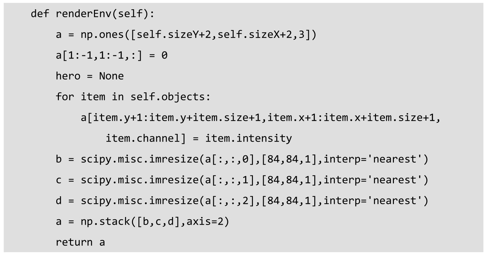
最后定义在GridWorld环境中执行一步Action的方法。输入的参数为Action，先使用self.moveChar(action)移动hero的位置，再使用self.checkGoal()检测hero是否有触碰物体，并得到reward和done标记。然后使用self.renderEnv获取环境的图像state，最后返回state、reward和done。
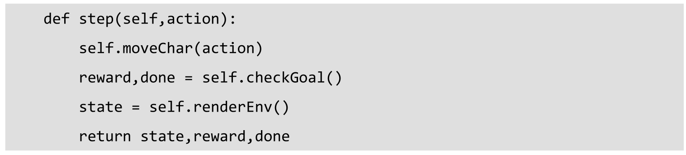
接下来调用刚才写好的gameEnv类的初始化方法，并设置size为5，创建一个5×5大小的GridWorld环境，每一次创建的GridWorld环境都是随机生成的。读者可以尝试使用不同尺寸的GridWorld，小尺寸的环境会相对容易学习，大尺寸的则较难，训练时间也更长。
env = gameEnv(size=5)
下面便是我们创建好的5×5的GridWorld环境图像，如图8-12所示，因为黑白印刷的原因，其中白色代表hero，浅灰色代表goal（reward为1），深灰色代表fire（reward 为-1）。我们的任务目标是在指定步数（每一步可以选择向上、下、左、右移动）内获得尽可能多的分数，我们每触碰一个物体，将会销毁该物体并在其他位置重建。因此，Agent的目标就是避开fire，同时多触碰goal。我们还需要规划最优路线，在有限步数内收集尽可能多的goal。当然，这些策略都是DQN需要自己通过试验来学习的。
图8-12 5×5的GridWorld环境，白色为hero，浅灰色为goal，深灰色为fire
下面我们就开始设计DQN（Deep Q-Network）网络，相对上一节的简单例子，本节的网络更复杂一些，并且使用了卷积层，可以直接从环境的原始像素中学习策略。输入scalarInput是被扁平化的长为84×84×3=21168的向量，需要先将其恢复成[-1,84,84,3]尺寸的图片ImageIn。我们使用tf.contrib.layers.convolution2d创建第1个卷积层，卷积核尺寸为8×8，步长为4×4，输出通道数（filter的数量）为32，padding模式为VALID（以下所有层padding模式均为VALID），bias初始化器为空。因为使用了4×4的步长和VALID模式的padding，所以第一层卷积的输出维度为20×20×32。第2个卷积层尺寸为4×4，步长为2×2，输出通道数为64，这一层的输出维度为9×9×64。第3层卷积层尺寸为3×3，步长为1×1，输出通道数为64，这一层输出维度为7×7×64。第4层卷积尺寸为7×7，步长为1×1，输出通道数一下涨到了512，这一层的空间尺寸只允许在一个位置进行卷积，因此最后的输出维度变为1×1×512。
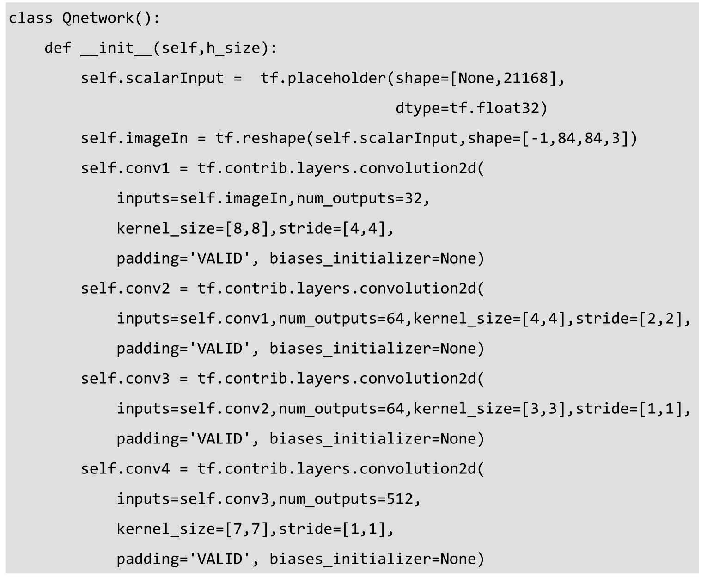
接下来，使用tf.split()将第4个卷积层的输出conv4平均拆分成两段，streamAC和streamVC，即Dueling DQN中的Advantage Function（Action带来的价值）和Value Function（环境本身的价值）。这里注意tf.split函数的第2个参数代表要拆分成几段，第3个参数代表要拆分的是第几个维度。然后分别使用tf.contrib.layers.flatten将streamAC和streamVC转为扁平的steamA和streamV。下面创建streamA和streamV的线性全连接层参数AW和VW，我们直接使用tf.random_normal初始化它们的权重，再使用tf.matmul做全连接层的矩阵乘法，得到self.Advantage和self.Value。因为Advantage是针对Action的，因此输出数量为Action的数量，而Value则是针对环境统一的，输出数量为1。我们的Q值则由Value和Advantage复合而成，即Value加上减去均值的Advantage。Advantage减去均值的操作使用的是tf.subtract，均值计算使用的是tf.reduce_mean函数（reduce_indices为1，即代表Action数量的维度）。最后输出的Action即为Q值最大的Action，这里使用tf.argmax求出这个Action。
我们定义Double DQN中的目标Q值targetQ的输入placeholder，以及Agent的动作actions的输入placeholder。在计算目标Q值时，action由主DQN选择，Q值则由辅助的target DQN生成。在计算预测Q值时，我们将scalar形式的actions转为onehot编码的形式，然后将主DQN生成的Qout乘以actions_onehot，得到预测Q值（Qout和actions都来自主DQN）。

接下来定义loss，使用tf.square和tf.reduce_mean计算targetQ和Q的均方误差，并使用学习速率为1e-4的Adam优化器优化预测Q值和目标Q值的偏差。
接下来实现前面提到的Experience Replay策略。我们定义experience_buffer的class，其初始化需要定义buffer_size即存储样本的最大容量，并创建buffer的列表。然后定义向buffer中添加元素的方法，如果超过了buffer的最大容量，就清空前面最早的一些样本，并在列表末尾添加新元素。然后在定义对样本进行抽样的方法，这里直接使用random.sample()函数随机抽取一定数量的样本。
下面定义将84×84×3的states扁平化为1维向量的函数processState，这样做的主要目的是后面堆叠样本时会比较方便。
def processState(states):
return np.reshape(states,[21168])
这里的updateTargetGraph函数是更新target DQN模型参数的方法（主DQN则是直接使用DQN class中的self.updateModel方法更新模型参数）。我们的输入变量tfVars是TensorFlow Graph中的全部参数，tau是target DQN向主DQN学习的速率。函数updateTargetGraph会取tfVars中前一半参数，即主DQN的模型参数，再令辅助的target DQN的参数朝向主DQN的参数前进一个很小的比例（即tau，一般设为0.001），这样做是让target DQN缓慢地学习主DQN。我们在训练时，目标Q值不能在几次迭代间波动太大，否则训练会非常不稳定并且失控，陷入目标Q值和预测Q值之间的反馈循环中。因此，需要使用稳定的目标Q值训练主网络，所以我们使用一个缓慢学习的target DQN网络输出目标Q值，并让主网络来优化目标Q值和预测Q值间的loss，再让target DQN跟随主DQN并缓慢学习。函数updateTargetGraph会创建更新target DQN模型参数的操作，而函数updateTarget则直接执行这些操作。
下面是DQN网络及其训练过程的一些参数。batch_size即每次从experience buffer中获取多少样本，设为32；更新频率update_freq，即每隔多少step执行一次模型参数更新，设为4；Q值的衰减系数（discount factor）y设为0.99；startE为起始的执行随机Action的概率；endE为最终的执行随机Action的概率（在训练时，我们始终需要一些随机Action进行探索，实际预测时则没有必要）；anneling_steps是从初始随机概率降到最终随机概率所需要的步数；num_episodes指总共进行多少次GridWorld环境的试验；pre_train_steps代表正式使用DQN选择Action前进行多少步随机Action的测试；max_epLength是每个episode进行多少步Action；load_model代表是否读取之前训练的模型；path是模型储存的路径；h_size是DQN网络最后的全连接层的隐含节点数；tau是target DQN向主DQN学习的速率。
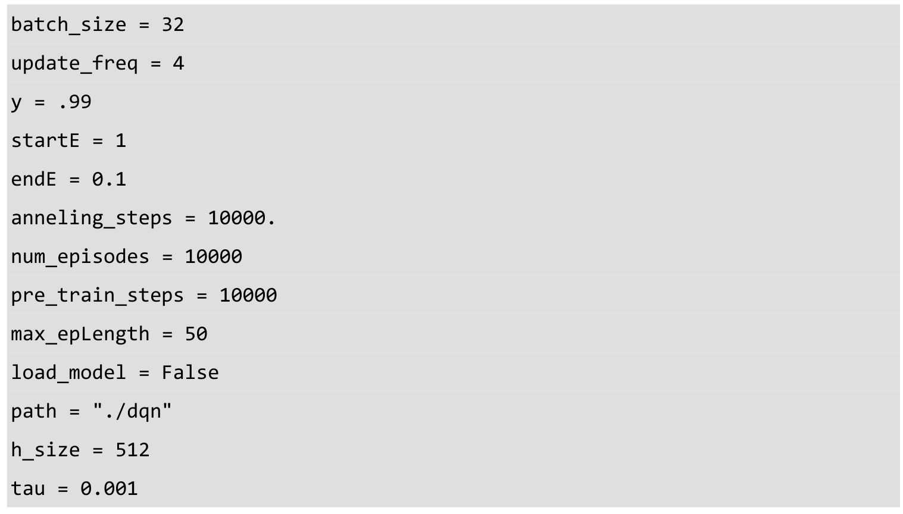
我们使用前面写好的Qnetwork类初始化mainQN和辅助的targetQN，并初始化所有模型参数。同时，使用trainables获取所有可训练的参数，并使用updateTargetGraph创建更新target DQN模型参数的操作。
我们使用前面定义的experience_buffer创建experience replay的class，设置当前随机Action的概率e，并计算e在每一步应该衰减的值stepDrop。接着初始化储存每一个episode 的reward的列表rList，总步数为total_steps。然后创建模型训练的保存器（Saver），并检查保存目录是否存在。

接下来创建默认的Session，如果load_model标志为True，那么检查模型文件路径的checkpoint，读取并载入之前已保存的模型。接着，我们执行参数初始化的操作，并执行更新targetQN模型参数的操作。然后创建进行GridWorld试验的循环，并创建每个episode内部的experience_buffer，这些内部的buffer不会参与当前迭代的训练，训练只会使用之前episode的样本。同时，初始化环境得到第一个环境信息s，并使用processState()函数将其扁平化。我们初始化默认的done标记d、episode内总reward值rAll，以及episode内的步数j。
接着创建一个内层循环，每一次迭代执行一次Action。当总步数小于pre_train_steps时，强制使用随机Action，相当于只从随机Action学习，但不去强化其过程。达到pre_train_steps后，我们会保留一个较小的概率去随机选择Action。若不随机选择Action，则传入当前状态s给主DQN，预测得到应该执行的Action。然后使用env.step()执行一步Action，并得到接下来的状态s1、reward和done标记。我们使用processState对s1进行扁平化处理，然后将s、a、r、s1、d等结果传入episodeBuffer中存储。
当总步数超过pre_train_steps时，我们持续降低随机选择Action的概率e，直到达到其最低值endE。并且每当总步数达到update_freq的整数倍时，我们进行一次训练，即模型参数的更新。首先是从myBuffer中sample出一个batch_size的样本，然后将训练样本中第3列信息，即下一个状态s1，传入mainQN并执行main.predict，得到主模型选择的Action。再将s1传入辅助的targetQN，并得到s1状态下所有Action的Q值。接下来，使用mainQN的输出Action，选择targetQN输出的Q，得到doubleQ。这里使用两个DQN网络把选择Action和输出Q值两个操作分隔开来的做法，正是Double DQN的方法。然后使用训练样本的第2列信息，即当前的reward，加上doubleQ乘以衰减系数y，得到我们的学习目标targetQ。接着，传入当前的状态s，学习目标targetQ和这一步实际采取的Action，执行updateModel操作更新一次主模型mainQN的参数（即执行一次训练操作）。同时也调用updateTarget函数，执行一次targetQN模型参数的更新（缓慢地向mainQN学习），这样就完整地完成了一次训练过程。同时，在每个step结束时，累计当前这步获取的reward，并更新当前状态为下一步试验做准备。如果done标记为True，我们直接中断这个episode的试验。

我们将episode内部的episodeBuffer添加到myBuffer中，用作以后训练抽样的数据集，并将当前episode的reward添加到rList中。然后，每25个episode就展示一次它们平均的reward值，同时每1000个episode或全部训练完成后，保存当前模型。
在初始的200个episode内，即完全随机Action的前10000步内，平均可以获得reward 在2附近，这是基础的baseline。
这是训练到最后一些episode的输出，平均reward已经涨到了22左右，相比之前的baseline是非常大的提升。
计算每100个episodes的平均reward，并使用plt.plot展示reward变化的趋势。
如图8-13所示，我们可以看到从第1000个episode开始，reward快速提升，到第4000 个episode时基本达到了高峰，后面进入平台期，没有太大提升。
图8-13 训练过程中reward的变化趋势
本节中讲述了DQN的基本原理，和使用DQN的几个非常重要的Trick。目前DQN的研究仍在快速发展中，已经有越来越多新的技术被应用到DQN中。DQN首次被提出了，在Atari 2600游戏中展示出了惊人的表现，并直接引发了深度强化学习的热潮。相信在未来，DQN或Value Network会继续在更多地方发挥出强大的作用。
9 TensorBoard、多GPU并行及分布式并行
9.1 TensorBoard
TensorBoard是TensorFlow官方推出的可视化工具，如图9-1所示，它可以将模型训练过程中的各种汇总数据展示出来，包括标量（Scalars）、图片（Images）、音频（Audio）、计算图（Graphs）、数据分布（Distributions）、直方图（Histograms）和嵌入向量（Embeddings）。我们在使用TensorFlow训练大型深度学习神经网络时，中间的计算过程可能非常复杂，因此为了理解、调试和优化我们设计的网络，可以使用TensorBoard观察训练过程中的各种可视化数据。如果要使用TensorBoard展示数据，我们需要在执行TensorFlow计算图的过程中，将各种类型的数据汇总并记录到日志文件中。然后使用TensorBoard读取这些日志文件，解析数据并生成数据可视化的Web页面，让我们可以在浏览器中观察各种汇总数据。下面我们将通过一个简单的MNIST手写数字识别的例子，讲解各种类型数据的汇总和展示的方法。
图9-1 TensorBoard——基于Web的TensorFlow数据可视化工具
我们首先载入TensorFlow，并设置训练的最大步数为1000，学习速率为0.001，dropout的保留比率为0.9。同时，设置MNIST数据的下载地址data_dir和汇总数据的日志存放路径log_dir。这里的日志路径log_dir非常重要，会存放所有汇总数据供TensorBoard展示。本节代码主要来自TensorFlow的开源实现67。
我们使用input_data.read_data_sets下载MNIST数据，并创建TensorFlow的默认Session。
为了在TensorBoard中展示节点名称，我们设计网络时会经常使用with tf.name_scope限定命名空间，在这个with下的所有节点都会被自动命名为input/xxx这样的格式。下面定义输入x和y的placeholder，并将输入的一维数据变形为28×28的图片储存到另一个tensor，这样就可以使用tf.summary.image将图片数据汇总给TensorBoard展示了。

同时，定义神经网络模型参数的初始化方法，权重依然使用我们常用的truncated_normal进行初始化，偏置则赋值为0.1。
再定义对Variable变量的数据汇总函数，我们计算出Variable的mean、stddev、max 和min，对这些标量数据使用tf.summary.scalar进行记录和汇总。同时，使用tf.summary.histogram直接记录变量var的直方图数据。
然后我们设计一个MLP多层神经网络来训练数据，在每一层中都会对模型参数进行数据汇总。因此，我们定义创建一层神经网络并进行数据汇总的函数nn_layer。这个函数的输入参数有输入数据input_tensor、输入的维度input_dim、输出的维度output_dim和层名称layer_name，激活函数act则默认使用ReLU。在函数内，先是初始化这层神经网络的权重和偏重，并使用前面定义的variable_summaries对variable进行数据汇总。然后对输入做矩阵乘法并加偏置，再将未进行激活的结果使用tf.summary.histogram统计直方图。同时，在使用激活函数后，再使用tf.summary.histogram统计一次。
我们使用刚刚定义好的nn_layer创建一层神经网络，输入维度是图片的尺寸（784=28×28），输出的维度是隐藏节点数500。再创建一个Dropout层，并使用tf.summary.scalar记录keep_prob。然后再使用nn_layer定义神经网络的输出层，其输入维度为上一层的隐含节点数500，输出维度为类别数10，同时激活函数为全等映射identity，即暂不使用Softmax，在后面会处理。

这里使用tf.nn.softmax_cross_entropy_with_logits()对前面输出层的结果进行Softmax处理并计算交叉熵损失cross_entropy。我们计算平均的损失，并使用tf.summary.scalar进行统计汇总。
下面使用Adma优化器对损失进行优化，同时统计预测正确的样本数并计算正确率accuray，再使用tf.summary.scalar对accuracy进行统计汇总。
因为我们之前定义了非常多的tf.summary的汇总操作，逐一执行这些操作太麻烦，所以这里使用tf.summary.merger_all()直接获取所有汇总操作，以便后面执行。然后，定义两个tf.summary.FileWriter（文件记录器）在不同的子目录，分别用来存放训练和测试的日志数据。同时，将Session的计算图sess.graph加入训练过程的记录器，这样在TensorBoard 的GRAPHS窗口中就能展示整个计算图的可视化效果。最后使用tf.global_variables_initializer().run()初始化全部变量。
接下来定义feed_dict的损失函数。该函数先判断训练标记，如果训练标记为True，则从mnist.train中获取一个batch的样本，并设置dropout值；如果训练标记为False，则获取测试数据，并设置keep_prob为1，即等于没有dropout效果。
最后一步，实际执行具体的训练、测试及日志记录的操作。首先使用tf.train.Saver()创建模型的保存器。然后进入训练的循环中，每隔10步执行一次merged（数据汇总）、accuracy（求测试集上的预测准确率）操作，并使用test_writer.add_sumamry将汇总结果summary和循环步数i写入日志文件；同时每隔100步，使用tf.RunOptions定义TensorFlow运行选项，其中设置trace_level为FULL_TRACE，并使用tf.RunMetadata()定义TensorFlow运行的元信息，这样可以记录训练时运算时间和内存占用等方面的信息。再执行merged数据汇总操作和train_step训练操作，将汇总结果summary和训练元信息run_metadata添加到train_writer。平时，则只执行merged操作和train_step操作，并添加summary到train_writer。所有训练全部结束后，关闭train_writer和test_writer。
之后切换到Linux命令行下，执行TensorBoard程序，并通过—logdir指定TensorFlow日志路径，然后TensorBoard就可以自动生成所有汇总数据可视化的结果了。
tensorboard —logdir=/tmp/tensorflow/mnist/logs/mnist_with_summaries
执行上面的命令后，出现一条提示信息，复制其中的网址到浏览器，就可以看到数据可视化的图表了。
首先打开标量SCALARS的窗口，并单击打开accuracy的图表，如图9-2所示。其中可以看到两条曲线，分别是train和test中accuray随训练步数变化的趋势。我们可以调整Smoothing参数，控制对曲线的平滑处理，数值越小越接近实际值，但波动较大；数值越大则曲线越平缓。单击图表左下方的按钮，可以放大这个图片，单击它右边的按钮则可以调整坐标轴的范围，以便更清楚地展示。
切换到图像IMAGES窗口，如图9-3所示，可以看到MNIST数据集中的图片。不只是原始数据，所有在tf.sumamry.image()中汇总的图片数据都可以在这里看到，包括进行了各种光学畸变后的图片，或是神经网络的中间节点的输出。
图9-2 TensorBoard SCALARS变量展示效果
图9-3 TensorBoard IMAGES图片展示效果
进入计算图GRAPHS窗口，可以看到整个TensorFlow计算图的结构，如图9-4所示。这里展示了网络forward的inference的流程，以及backward训练更新参数的流程。我们在代码中创建的只有forward正向过程：input
→ layer1 → dropout → layer2 →
cross_entropy、accuracy的，而训练中backward的求解梯度、更新参数等操作是TensorFlow帮我们自动创建的。图中实线代表数据上的依赖关系，虚线代表控制条件上的依赖关系。单击某个节点的窗口，可以查看它的属性、输入及输出，并且可以看到输出tensor的尺寸。我们也可以单击节点右上角的“+”号按钮，展开这个node的内部细节。例如，单击layer2可以看到内部的weights、biases、矩阵乘法操作、向量加法操作，以及激活函数计算的操作，这些操作都归属于tf.name_scope(‘layer2’)这个命名空间（name scope）。所有在一个命名空间中的节点都会被折叠在一起，在设计网络时，我们要尽可能精细地使用命名空间对节点名称进行规范，这样会展示出更清晰的结构。同时，在TensorBoard中，我们可以右键单击一个节点并选择删除它，这不会真的在计算图中中删除它，但是可以简化我们的视图，以便更好地观察网络结构。我们也可以切换配色风格，一种是基于结构的，相同的结构的节点有一样的颜色；另一种是基于运算硬件的，在同一个运算硬件上的节点有一样的颜色。同时，我们可以单击左边面板的Session runs，选择我们之前记录过run_metadata的训练元信息，这样可以查看某轮迭代计算的时间消耗、内存占用等情况。
图9-4 TensorBoard GRAPHS计算图展示效果
切换到DISTRIBUTIONS窗口，如图9-5所示，可以查看之前记录的各个神经网络层输出的分布，包括在激活函数前的结果及在激活函数后的结果。这样能观察到神经网络节点的输出是否有效，会不会存在过多的被屏蔽的节点（dead neurons）。
图9-5 TensorBoard DISTRIBUTIONS变量分布展示效果
也可以将DISTRIBUTIONS的图示结构转为直方图的形式。单击HISTOGRAMS窗口，如图9-6所示，可以将每一步训练后的神经网络层的输出的分布以直方图的形式展示出来。
图9-6 TensorBoard HISTOGRAMS直方图的展示效果
单击EMBEDDINGS窗口，如图9-7所示，可以看到降维后的嵌入向量的可视化效果，这是TensorBoard中的Embedding Projector功能。虽然在MNIST数据的训练中是没有嵌入向量的，但是只要我们使用tf.save.Saver保存了整个模型，就可以让TensorBoard自动对模型中所有二维的Variable进行可视化（TensorFlow中只有Variable可以被保存，而Tensor不可以，因此我们需要把想可视化的Tensor转为Variable）。我们可以选择T-SNE或者PCA等算法对数据的列（特征）进行降维，并在3D或者2D的坐标中进行可视化展示。如果我们的模型是Word2Vec计算或Language Model，那么TensorBoard的EMEBEDDINGS可视化功能会变得非常有用。

图9-7 TensorBoard EMBEDDINGS向量嵌入展示效果
9.2 多GPU并行
TensorFlow中的并行主要分为模型并行和数据并行。模型并行需要根据不同模型设计不同的并行方式，其主要原理是将模型中不同计算节点放在不同硬件资源上运算。比较通用的且能简便地实现大规模并行的方式是数据并行，其思路我们在第1章讲解过，是同时使用多个硬件资源来计算不同batch的数据的梯度，然后汇总梯度进行全局的参数更新。
数据并行几乎适用于所有深度学习模型，我们总是可以利用多块GPU同时训练多个batch数据，运行在每块GPU上的模型都基于同一个神经网络，网络结构完全一样，并且共享模型参数。本节我们主要讲解同步的数据并行，即等待所有GPU都计算完一个batch数据的梯度后，再统一将多个梯度合在一起，并更新共享的模型参数，这种方法类似于使用了一个较大的batch。使用数据并行时，GPU的型号、速度最好一致，这样效率最高。而异步的数据并行，则不等待所有GPU都完成一次训练，而是哪个GPU完成了训练，就立即将梯度更新到共享的模型参数中。通常来说，同步的数据并行比异步的模式收敛速度更快，模型的精度更高。
下面就讲解使用多GPU的同步数据并行来训练卷积神经网络的例子，使用的数据集为CIFAR-10。首先载入各种依赖的库，其中包括TensorFlow Models中cifar10的类（我们在第5章下载了这个库，现在只要确保Python执行路径在models/tutorials/image/cifar10下即可），它可以下载CIFAR-10数据并进行一些数据预处理。本节我们不再重头设计一个CNN，而是直接使用一个现成的CNN，并侧重于讲解如何使用数据并行训练这个CNN。本节代码主要来自TensorFlow的开源实现68。
我们设置batch大小为128，最大步数为100万步（中间可以随时停止，模型定期保存），使用的GPU数量为4（取决于当前机器上有多少可用显卡）。
然后定义计算损失的函数tower_loss。我们先使用cifar10.distorted_inputs产生数据增强后的images和labels，并调用cifar10.inference生成卷积网络（注意，我们需要为每个GPU生成单独的网络，这些网络的结构完全一致，并且共享模型参数）。通过cifar10.inference生成的卷积网络和5.3节中的卷积网络一致，读者若想了解网络结构的具体细节，可参考5.3节中的内容。然后，根据卷积网络和labels，调用cifar10.loss计算损失函数（这里不直接返回loss，而是储存到collection中），并用tf.get_collection(‘losses’,scope)获取当前这个GPU上的loss（通过scope限定了范围），再使用tf.add_n将所有损失叠加到一起得到total_loss。最后返回total_loss作为函数结果。
下面定义函数average_gradients，它负责将不同GPU计算出的梯度进行合成。函数的输入参数tower_grads是梯度的双层列表，外层列表是不同GPU计算得到的梯度，内层列表是某个GPU内计算的不同Variable对应的梯度，最内层元素为(grads,variable)，即tower_grads的基本元素为二元组（梯度，变量）。其具体形式为[[(grad0_gpu0,var0_gpu0),(grad1_gpu0,var1_gpu0),…],[
(grad0_gpu1,var0_gpu1),(grad1_gpu1,var1_gpu1),…],…]。我们先创建平均梯度的列表average_grads，它负责将梯度在不同GPU间进行平均。然后使用zip(*tower_grads)将这个双层列表转置，变成[[(grad0_gpu0,var0_gpu0),(grad0_gpu1,var0_gpu1),…],[
(grad1_gpu0,var1_gpu0),(grad1_gpu1,var1_gpu1),…],…]的形式，然后使用循环遍历其元素。每个循环中获取的元素grad_and_vars，是同一个Variable的梯度在不同GPU上的计算结果，即[(grad0_gpu0,var0_gpu0),(grad0_gpu1,var0_gpu1),…]。对同一个Variable的梯度在不同GPU计算出的副本，需要计算其梯度的均值，如果这个梯度是一个N 维的向量，需要在每个维度上都进行平均。我们先使用tf.expand_dims给这些梯度添加一个冗余的维度0，然后把这些梯度放到列表grad中，接着使用tf.concat将它们在维度0上合并，最后使用tf.reduce_mean针对维度0上求平均，即将其他维度全部平均。最后将平均后的梯度跟Variable组合得到原有的二元组（梯度，变量）格式，并添加到列表average_grads中。当所有梯度都求完均值后，我们返回average_grads。
下面定义训练的函数。先设置默认的计算设备为CPU，用来进行一些简单的计算。然后使用global_step记录全局训练的步数，并计算一个epoch对应的batch数，以及学习速率衰减需要的步数decay_steps。我们使用tf.train.exponential_decay创建随训练步数衰减的学习速率，这里第1个参数为初始学习速率，第2个参数为全局训练的步数，第3个参数为每次衰减需要的步数，第4个参数为衰减率，staircase设为True代表是阶梯式的衰减。然后设置优化算法为GradientDescent，并传入随步数衰减的学习速率。
我们定义储存各GPU计算结果的列表tower_grads。然后创建一个循环，循环次数为GPU数量，在每一个循环内，使用tf.device限定使用第几个GPU，如gpu0、gpu1，然后使用tf.name_scope将命名空间定义为tower_0、tower_1的形式。对每一个GPU，使用前面定义好的函数tower_loss获取其损失，然后调用tf.get_variable_scope().reuse_variables()重用参数，让所有GPU共用一个模型及完全相同的参数。再使用opt.compute_gradients(loss)计算单个GPU的梯度，并将求得的梯度添加到梯度列表tower_grads。最后使用前面写好的函数average_gradients计算平均梯度，并使用opt.apply_gradients更新模型参数。这样就完成了多GPU的同步训练和参数更新。
我们创建模型的保存器saver，将Session的allow_soft_placement参数设置为True（有些操作只能在CPU进行，不使用soft_placement可能导致运行出错），初始化全部参数，并调用tf.train.start_queue_runners()准备好大量的数据增强后的训练样本，防止后面的训练被阻塞在生成样本上。
下面进入训练的循环，最大迭代次数为max_steps。在每一步中执行一次更新梯度的操作apply_gradient_op（即一次训练操作）和计算损失的操作loss，同时使用time.time()记录耗时。每隔10步，展示一次当前batch的loss，以及每秒钟可训练的样本数和每个batch训练所需要花费的时间。每隔1000步，使用Saver保存整个模型文件。
for step in range(max_steps):
我们将主函数后全部定义完后，使用cifar10.maybe_download_and_extract()下载完整的CIFAR-10数据，并调用train()函数开始训练。
下面展示的结果即为训练过程中显示的日志，loss从最开始的4点几，到第70万步时，大致降到了0.07。我们的训练速度很快，平均每个batch的耗时仅为0.021s，平均每秒可以训练6000个样本，差不多正好是单GPU的4倍。因此在单机多GPU的情况下，使用TensorFlow实现的数据并行效率是非常高的。
9.3 分布式并行
TensorFlow的分布式并行基于gRPC通信框架，其中包括一个master负责创建Session，还有多个worker负责执行计算图中的任务。我们需要先创建一个TensorFlow Cluster对象，它包含了一组task（每个task一般是一台单独的机器）用来分布式地执行TensorFlow的计算图。一个Cluster可以切分为多个job，一个job是指一类特定的任务，比如parameter server
(ps)、worker，每一个job里可以包含多个task。我们需要为每一个task创建一个server，然后连接到Cluster上，通常每个task会执行在不同的机器上，当然也可以一台机器上执行多个task（控制不同的GPU）。Cluster对象通过tf.train.ClusterSpec来初始化，初始化信息是一个Python的dict，例如tf.train.ClusterSpec({“ps”: [“192.168.233.201:2222”],”worker”:[“192.168.233.202:2222”,”192.168.233.203:2222”]})，这代表设置了一个parameter server和两个worker，分别在三台不同机器上。对每个task，我们需要给它定义自己的身份，比如对这个ps我们将设置server = tf.train.Server(cluster,job_name=”ps”,task_index=0)，将这台机器的job定义为ps，并且是ps中的第0台机器。此外，通过在程序中使用诸如with tf.device(“/job:worker/task:7”)，可以限定Variable存放在哪个task或哪台机器上。
TensorFlow的分布式有几种模式，比如In-graph replication模型并行，将模型的计算图的不同部分放在不同机器上执行；而Between-graph replication则是数据并行，每台机器使用完全相同的计算图，但是计算不同的batch数据。此外，我们还有异步并行和同步并行，异步并行指每机器独立计算梯度，一旦计算完就更新到parameter server中，不等其他机器；同步并行指等所有机器都完成对梯度的计算后，将多个梯度合成并统一更新模型参数。一般来说，同步并行训练时，loss下降的速度更快，可达到的最大精度更高，但是同步并行有木桶效应，速度取决于最慢的那个机器，所以当设备速度一致时，效率比较高。
下面我们就用TensorFlow实现包含1个paramter server和2个worker的分布式并行训练程序，并以MNIST手写数据识别任务作为示例。这里需要写一个完整的Python文件，并在不同机器上以不同的task执行。首先载入TensorFlow和所有依赖库。本节代码主要来自TensorFlow的开源实现69。
这里使用tf.app.flags定义标记，用以在命令行执行TensorFlow程序时设置参数。在命令行中指定的参数会被TensorFlow读取，并直接转为flags。设定数据储存目录data_dir默认为/tmp/mnist-data，隐藏节点数默认为100，训练最大步数train_steps默认为1000000，batch size默认为100，学习速率为默认0.01。
然后设定是否使用同步并行的标记sync_replicas默认为False，在命令行执行时可以设为True开启同步并行。同时，设定需要累计多少个梯度来更新模型的值默认为None，这个参数代表进行同步并行时，一共积攒多少个batch的梯度才进行一次参数更新，设为None则使用worker的数量，即所有worker都完成一个batch的训练后再更新模型参数。
再定义ps的地址，这里默认为192.168.233.201:2222，读者应该根据集群的实际情况配置，下同。将worker的地址设置为192.168.233.202:2222和192.168.233.203:2222。同时，设置job_name和task_index的FLAG，这样在命令行执行时，可以输入这两个参数。
将flags.FLAGS直接命名为FLAGS，简化使用。同时，设置图片尺寸IMAGE_PIXELS 为28。
接下来编写程序的主函数main，首先使用input_data.read_data_sets下载并读取MNIST数据集，并设置为one_hot编码格式。同时，检测命令行输入的参数，确保有job_name 和task_index这两个必备的参数。显示出job_name和task_index，并将ps和worker的所有地址解析成列表ps_spec和worker_spec。
先计算总共的worker数量，然后使用tf.train.ClusterSpec生成一个TensorFlow Cluster的对象，传入的参数是ps的地址信息和worker的地址信息。再使用tf.train.Server创建当前机器的server，用以连接到Cluster。如果当前节点是parameter server，则不再进行后续的操作，而是使用server.join等待worker工作。
这里判断当前机器是否为主节点，即task_index是否为0。然后定义当前机器的worker_device，格式为”job:worker/task:0/gpu:0”。我们假定有两台机器，并且每台机器有1块GPU，则总共需要两个worker。如果一台机器有多块GPU，可以通过一个task管理多个GPU或者使用多个task分别管理。下面使用tf.train.replica_device_setter()设置worker的资源，其中worker_device为计算资源，ps_device为存储模型参数的资源。我们通过replica_device_setter将模型参数部署在独立的ps服务器“/job:ps/cpu:0”，并将训练操作部署在”/job:worker/task:0/gpu:0”，即本机的GPU。最后再创建记录全局训练步数的变量global_step。
接下来，定义神经网络模型，本节的神经网络和4.4节的MLP全连接网络基本一致。下面使用tf.truncated_normal初始化权重，使用tf.zeros初始化偏置，创建输入的placeholder，并使用tf.nn.xw_plus_b对输入x进行矩阵乘法和加偏置操作，再用ReLU激活函数处理，得到第一个隐层的输出hid。然后使用tf.nn.xw_plus_b和tf.nn.softmax对第一层的输出hid进行处理，得到网络的最终输出y。最后计算损失cross_entropy，并定义优化器为Adam。
我们判断是否设置了同步训练模式sync_replicas，如果是同步模式，则先获取同步更新模型参数所需要的副本数replicas_to_aggregate；如果没有单独设置，则使用worker数作为默认值。然后使用tf.train.SyncReplicasOptimizer创建同步训练的优化器，它实质上是对原有优化器的一个扩展，我们传入原有优化器及其他参数（replicas_to_aggregate、total_num_replicas、replica_id等），它就会将原有优化器改造为同步的分布式训练版本。最后，使用普通的（即异步的）或同步的优化器对损失cross_entropy进行优化。
如果是同步训练模式，并且为主节点，则使用opt.get_chief_queue_runner创建队列执行器，并使用opt.get_init_tokens_op创建全局参数初始化器。
下面生成本地的参数初始化操作init_op，创建临时的训练目录，并使用tf.train_Supervisor创建分布式训练的监督器，传入的参数包括is_chief、train_dir、init_op等。这个Supervisor会管理我们的task参与到分布式训练。
然后设置Session的参数，其中allow_soft_placement设为True代表当某个操作在指定的device不能执行时，可以转到其他device执行。
如果为主节点，则显示初始化Session，其他节点则显示等待主节点的初始化操作。然后执行sv.prepate_or_wait_for_session()，若为主节点则会创建Session，若为分支节点则会等待。
接着，如果处于同步模式并且是主节点，则调用sv.start_queue_runners执行队列化执行器chief_queue_runner，并执行全局的参数初始化器init_tokens_op。
下面就正式到了训练过程。我们记录worker执行训练的启动时间，初始化本地训练的步数local_step，然后进入训练循环。在每一步训练中，我们从mnist.train.next_batch读取一个batch的数据，并生成feed_dict，再调用train_step执行一次训练。当全局训练步数达到我们预设的最大值后，停止训练。
训练结束后，我们展示总训练时间，并在验证数据上计算预测结果的损失cross_entropy，并展示出来。至此，我们的主函数main全部结束。
这是代码的最后一部分，在主程序中执行tf.app.run()并启动main()函数，我们将全部代码保存为文件distributed.py。我们需要在3台不同的机器上分别执行distributed.py启动3个task，在每次执行distributed.py时我们需要传入job_name和task_index指定worker的身份。
我们分别在三台机器192.168.233.201、192.168.233.202和192.168.233.203上执行下面三行代码。第一台机器执行第一行代码，第二台机器执行第二行代码，下同。这样我们就在三台机器上分别启动了一个parameter server及两个worker。
如果我们想使用同步模式，只需要将上面的代码加上—sync_replicas=True，就可以自动开启同步训练。注意，此时global_step和异步不同，异步时，全局步数是所有worker训练步数之和，同步时则是指有多少轮并行训练。
下面是我们在parameter server上显示出的日志。我们在192.168.233.201:2222上顺利开启了PS的服务。
下面是worker0在192.168.233.202上的训练日志。
下面是worker1在192.168.233.203上的训练日志。
至此，我们在三台机器上的数据并行模式的分布式训练的示例就结束了，读者可以看到用TensorFlow实现分布式训练非常简单。我们可以复用单机版本的网络结构，只是在不同机器上训练不同batch的数据，并使用parameter server统一管理模型参数。另外，分布式TensorFlow的运行效率也非常高，在16台机器上可以获得15倍于单机的速度，非常适合大规模神经网络的训练。
10 TF.Learn从入门到精通
TF.Learn是TensorFlow中的一个很重要的模块，它包括各种类型的深度学习及流行的机器学习算法。这个模块是从之前比较热门的TensorFlow官方Scikit Flow项目迁移过来的，发起者是谷歌的员工Illia Polosukhin及本书作者之一唐源。代码的风格采用数据科学界比较热门的Scikit-learn风格，旨在帮助数据科学从业者更好、更快地适应和接受TensorFlow的代码。它囊括了许多TensorFlow的代码和设计模式，从而使用户能够更快地开始搭建自己的机器学习模型来实现不同的应用。同时，用户也能极大地避免代码重复，更好地把精力放在搭建更精确的模型上。自从TensorFlow v0.9版本发布之后，TF.Learn能够无缝地和其他contrib模块结合起来使用，比如contrib.losses、contrib.layer、contrib.metrics，等等（我们会在第11章系统地介绍contrib模块）。第十章和第十一章将使用TensorFlow 0.11.0-rc0版本作为示例讲解，其他版本的代码可能会出现不兼容的现象。
10.1 分布式Estimator
本节我们介绍Estimator的分布式特性、自定义模型的用法、Estimator的架构，并介绍怎样建立自己的分布式机器学习Estimator。
10.1.1 分布式Estimator自定义模型介绍
Estimator包括各种各样的机器学习和深度学习的类，用户能直接使用这些高阶类，同时可以根据实际的应用需求快速创建自己的子类。有了graph_actions模块的帮助，Estimator很大一部分在训练和评估模型时需要用到的复杂的分布式逻辑都被实现和浓缩，使用者就不再需要把精力放在很复杂的Supervisor和Coordinator分布式训练具体实现细节和逻辑上面。
Estimator接受自定义模型，目前它接受以下几组不同的函数签名。
（1）(features,targets) -> (predictions,loss,train_op)
（2）(features,targets,mode) -> (predictions,loss,train_op)
（3）(features,targets,mode,params) -> (predictions,loss,train_op)
我们以第一组函数签名举例说明，以下是一个简单的自定义的模型。
这个自定义模型接受两个参数：features和targets。features是数据的特征，targets是数据特征每一行的目标或者分类的标识，利用tf.one_hot对targets进行读热编码
(One-hot Encoding)，让接下来损失函数的计算更方便。接下来，用layers.stack叠加多层layers.fully_connected完全连接的深度神经网络，每一层分别有10、20、10个隐藏节点，通过不同层的转换和训练，得到新的数据特征。TF.Learn里面的models模块有很多经常使用的模型（比如逻辑回归），这里我们用models.logistic_regression_zero_init加一层，以0作为初始参数值的逻辑回归模型，这也是深度学习里比较常用的一种方法，从而得到最后的预测值和损失值。最后，使用contrib.layers.optimize_loss函数对损失值进行优化，可以根据需要选择不同的优化函数和学习率，optimize_loss会得到一个训练算子（Training Operator），在每次训练迭代时会被用来优化模型的参数和决定模型发展的方向。这个自定义模型函数需要返回一些要求的值，比如预测值及预测概率、损失值和训练算子。读者可以比较灵活地使用Python的字典来返回预测值及预测概率，也可以只返回预测值和预测概率中的一个，这样做的主要目的是在之后能够更方便地使用estimator.predict函数。
接下来，我们把定义好的模型运用到比较常用的iris数据进行分类。
我们利用Scikit-learn的datasets引入数据，并用cross_validation把数据分为训练和评估。接下来把我们定义好的my_model直接放进learn.Estimator就可以使用Scikit-learn风格的fit和predict函数。通过快速和简单地定义自己的模型函数，能直接利用Estimator的各种功能，也能够直接进行分布式模型训练，完全不用担心许多实现的细节[比如不同的线程之间的交流和主监督（Master Supervisor）的建立]。
目前我们只介绍了其中一种自定义函数签名，其他的函数签名大同小异。简单来说，模式（Mode）可以被用来定义函数的使用阶段，例如training、evaluation，以及prediction。这些常用的模式可以在 ModeKeys里面找到。一些比较复杂的深度学习模型可能会包含一些特殊的层，例如batch normalization层要求一些计算只发生在训练期间，而评估期间需要跳过那些计算，所以可以在自定义函数里加一些条件语句来实现这样的复杂逻辑。params是可以由自定义模型来调节的参数，读者使用fit函数时可以给更多的参数。具体细节请参考TF.Learn的官方文档。
10.1.2 建立自己的机器学习Estimator
10.1.1节我们简单介绍了怎样用自定义的模型使用Estimator，接下来，我们来了解Estimator的一些基本架构及如何通过实现自己的Estimator子类建立自己的机器学习分布式Estimator。
BaseEstimator是最抽象也是最基本的实现TensorFlow模型的训练和评估的类。它提供了许多简单易用的功能，比如用fit()对模型进行训练，用partial_fit()进行线上训练，用evaluate()评估模型，用predict()使用模型并对新的数据进行预测，等等。它利用了许多包含在graph_actions里很复杂的逻辑进行模型的训练和预测。前面章节简单提到过它包含了许多类似Supervisor、Coordinator、QueueRunner的使用，从而使它能够进行分布式地训练和预测。它也使用了许多learn.DataFeeder或者learn.DataFrame的类来自动识别、处理和迭代不用类型的数据。再加上estimators.tensor_signature的帮助对数据进行兼容性的判断[比如稀疏张量（Sparse Tensor）]，使数据的读入更加方便和稳定。与此同时，BaseEstimator也对learn.monitors及模型的存储等进行了初始化设置。learn.monitors是用来监测模型的训练的，在接下来的章节里我们也会对它进行简单的介绍。
虽然BaseEstimator已经提供了大多数建立和评估模型要求的逻辑，但它却把_get_train_ops()、_get_eval_ops()和_get_predict_ops()等实现留给了它的子类，从而让它的子类能够更自由地实现自定义的一些逻辑处理。10.1.1节中我们使用到的Estimator刚好提供了怎样实现BaseEstimator那些未实现方法的样本。
我们以Estimator为例，它的_get_train_ops()接受features和targets为参数，使用自定义的模型函数返回一个Operation和损失Tensor的Tuple，这个函数会被用来在每个训练迭代时对模型的参数进行优化。如果想实现自己的Estimator，你有绝对的自由来决定训练的逻辑。例如，如果想实现一个非监督学习模型的Estimator，那么可以在这个函数里对targets进行忽略。
和_get_train_ops()类似，_get_eval_ops()让BaseEstimator的子类来使用自定义的metrics评估每个模型训练的迭代。在TensorFlow高阶的模块里，比如contrib.metrics，可以找到许多直接使用的metrics，第11章会对这个模块进行简单的介绍。自定义的metrics函数需要返回一个Tensor对象的Python字典来代表评估Operation，每次迭代时都会被用到。以下是Estimator的_get_train_ops()的实现：
先用到自定义的模型对新的数据进行预测和计算损失值，用ModeKeys中的EVAL表明这个函数只会在评估时被用到，然后用到了contrib.metrics模块里的streaming_mean对loss计算平均流，也就是在之前计算过的平均值基础上加上这次迭代的损失值再计算平均值。
_get_predict_ops()是用来实现自定义的预测的，例如在这个函数里可以对预测的结果进行进一步的处理。再比如，把预测概率转换成简单的预测结果，把概率进行平滑加工（Smoothing），等等。这个函数需要返回一个Tensor对象的Python字典来代表预测Operation。一旦这个函数被实现，就可以很轻松地使用Estimator的predict()函数，充分利用Estimator的分布式功能，完全不用担心一些复杂的内部实现逻辑。如果想建立非监督模型，也可以很快地在这个基础之上实现一个类似Scikit-learn里面的transform()函数。
在TF.Learn的模块里也可以找到许多自定义机器学习Estimator的例子，例如逻辑回归（LogisticRegressor）。由于Estimator已经提供了绝大部分需要的实现，LogisticRegressor只需要提供自己的metrics（例如AUC、accuracy、precision,以及recall，只用来处理二分类的问题），所以可以很快地在LogisticRegressor的基础上写一个子类来实现一个更个性化的二分类的Estimator，完全不需要担心其他逻辑的实现。
TF.Learn里的随机森林模型TensorForestEstimator把许多很细节的实现放到了contrib.tensor_forest里，只利用和暴露一些比较高阶的，需要用到的成分到TensorForestEstimator里，这样用户就能更轻松地使用这个高阶机器学习模块。下面的代码中，它所有的超参数都通过contrib.tensor_forest.ForestHParams被传到构造函数的params里，然后在构造函数里使用params.fill()建造随机森林的TensorFlow图，也就是tensor_forest.RandomForestGraphs。
由于很多实现太复杂而且通常需要非常有效率，它的很多细节都用C++实现了单独的Kernel。它的_get_predict_ops()函数首先使用tensor_forest内部C++实现的data_ops.ParseDataTensorOrDict()函数检测和转换读入的数据到可支持的数据类型，然后利用RandomForestGraphs的inference_graph函数得到预测的Operation。

类似地，它的_get_train_ops()和_get_eval_ops()函数分别调用了RandomForest Graphs.training_loss()和RandomForestGraphs.inference_graph()函数，它使用了data_ops.ParseDataTensorOrDict和data_ops.ParseLabelTensorOrDict分别检测和转换features和targets到可兼容的数据类型。
希望以上关于Estimator架构的介绍和几个例子能够帮助读者更好地了解Estimator。一旦读者建立好了自己的机器学习Estimator或者准备好使用Estimator，可以轻松地在多台机器上、多个服务器上进行分布式的模型训练，10.1.3节会介绍RunConfig来帮助读者更好地调节程序运行时参数。
10.1.3 调节RunConfig运行时参数
RunConfig是TF.Learn里的一个类，用来帮助用户调节程序运行时参数，例如用num_cores选择使用的核的数量，用num_ps_replicas调节参数服务器的数量，用gpu_memory_fraction控制使用的GPU存储的百分比，等等。
值得注意的是，RunConfig里master这个参数是用来指定训练模型的主服务器地址的，task是用来设置任务ID的，每个任务ID控制一个训练模型参数服务器的replica。以下是一个例子，读者可以先初始化一个RunConfig对象，再把这个对象传进Estimator里。
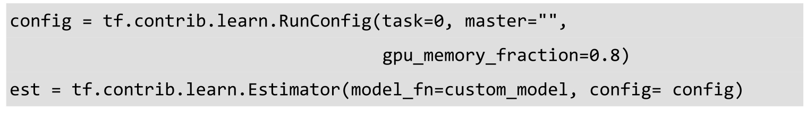
以上例子是使用RunConfig参数的默认值在本地运行一个简单的模型，只使用一个任务ID和80%的GPU存储作为参数传进Estimator里。当读者运行时，这些运行时参数会被自动运用上，不用担心ConfigProto、GPUOptions之类的使用细节。读者可以快速地改变这些参数来实现分布式模型的训练及参数服务器的使用，10.1.4节会简单介绍。注意，这些API未来会有改动，所以最新的使用方法请参考TF.Learn官方文档。
10.1.4 Experiment和LearnRunner
Experiment是一个简单易用的建立模型实验的类，它包含了建模所需要的所有信息，例如Estimator、训练数据、评估数据、评估指标、监督器、评估频率，等等。可以选择在当地运行，也可以和RunConfig配合进行分布式地试验。LearnRunner是用来方便做实验的一个模块。接下来我们举个简单的例子说明。
先用tf.app.flags定义一些可以从命令行传入的参数，例如数据、模型、输出文件的路径、训练和评估的步数等。这里有几个值得注意的参数。schedule是指想做的试验类型，比如使用local_run()在当地做试验，可能的一些选项是Experiment里面的一些函数名字，例如run_std_server()可以在标准服务器上做试验。master_grpc_url是主要的GRPC TensorFlow服务器。num_parameter_servers是参数服务器的数量，等等。
接下来写一个建立Experiment对象的函数，在这个函数里首先使用之前设置好的一些FLAGS建立好RunConfig及想要建立的机器学习模型Estimator，这里我们建立广度深度结合分类器（DNNLinearCombinedClassifier）。注意，我们省略了input_train_fn和input_test_fn的定义，这两个方程会定义数据的来源、提供训练，以及评估所用的数据。我们在接下来的机器学习Estimator里都会用到。不同的数据有不同的导入方法，在这里我们就不详细介绍了。
然后就可以把create_experiment_fn()函数传入LearnRunner里进行不同类型的试验，例如当地试验或者服务器试验，以及把试验的结果存储到不同的路径中，代码如下。
10.2 深度学习Estimator
TF.Learn里包含了许多深度学习Estimator的实现，高阶的API让用户使用起来更方便。本节介绍一些基本的高阶深度学习API及它们和TensorFlow其他模块结合使用的例子。
10.2.1 深度神经网络
TF.Learn里包含简单易用的深度神经网络Estimator，例如分类问题可以使用DNNClassifier，下面我们介绍一个最简单的例子。先在_input_fn()里建立数据，这里使用layers模块建立两个特征列——年龄和语言（后面我们将详细介绍它们的使用方法）。
接着就把特征列、每层的隐藏神经单元数、标识类别数等传入DNNClassifier里来迅速地建立我们的深度神经网络模型。
然后使用我们习惯的fit()、evaluate()等方法进行模型的训练和评估。
在许多实际应用中，每行数据都有它们的权重，比如在图片分类运用中，每张图片的标识来自于不同的标识者，它们的可信度不一样，所以每张图片的标识权重也不同。在DNNClassfier中，我们可以指定一列为权重列，然后它会帮我们自动分配到训练过程中去。在以下的例子中，我们建立四行数据，每行有不同的权重，我们先把权重列和特征列放在features里面。
然后就可以在DNNClassifier中表明权重列的列名，在这里也就是w，然后表明特征列的列名x（注意：我们需要将x转换为特征列）。
我们也可以传入进我们自定义的metrics方程_my_metric_op()，需要做的就是操作predictions和targets进行我们心目中的metrics计算，此处只考虑二分类的问题，使用tf.slice()剪切predictions的第二列当作最终的预测值。
这里我们举个例子来帮助理解tf.slice()，假设我们有以下矩阵。
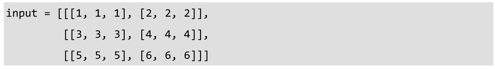
tf.slice()需要传入输入矩阵input，剪切的开始元素begin，以及剪切的Tensor的形状size，size[i]代表了第i个维度想剪切的矩阵的shape，例如tf.slice(input,[1,0,0],[1,1,3])可以得到[[[3,3,3]]]；tf.slice(input,[1,0,0],[1,2,3])可以得到[[[3,3,3],[4,4,4]]]。
我们根据需求任意地在predictions和targets上操作来实现想要的metrics计算，然后就可以在evaluate()时传入自己定义好的metrics函数，TF.Learn会根据你所指示的metrics评估模型。
值得注意的是，我们可以在evaluate()时提供多个metrics，其中一个_my_metric_op是我们之前自定义好的，其他两个是tf.contrib里自带的，之后的章节中也会简单提到一些内建的metrics的用法。
我们也可以在提供optimizer时提供自己定义的函数，例如，可以定义自己的优化函数来包含指数递减的学习率。
这里用tf.contrib.framework.get_or_create_global_step()得到目前模型训练到达的全局步数，然后使用tf.train.exponential_decay()对学习率进行指数递减，这种方法在许多应用中特别常用，尤其是用来避免爆炸梯度之类的问题。
接着可以将这个自定义的优化函数放入DNNClassifier里继续使用我们熟悉的方法建立深度神经网络分类器及它的训练，我们用iris数据举个例子。
10.2.2 广度深度模型
广度深度模型的DNNLinearCombinedClassifier是谷歌最新研究的成果，研究团队将这个模型在TF.Learn里面实现，然后开源，这样更有利于其他研究者再次重复实验结果及学习。这个模型被谷歌广泛地利用在各种机器学习应用中，它是深度神经网络和逻辑回归的结合，因为在谷歌的研究中发现，将不同的特征通过两种不同的方式结合起来，更能够体现应用的意义及更有效的推荐结果，这其实也和Kaggle竞赛中经常使用的Ensemble的方法比较类似。
使用的DNNLinearCombinedClassifier的方法和之前介绍的DNNClassifier及在接下来将介绍的LinearClassfier的使用方法类似，唯一的区别是你有更多的参数，并且可以将不同的特征列选择使用到DNNClassifier或者LinearClassfier中。
我们将gender、education、relationship、workclass都转换为FeatureColumn，这是特征工程中特别重要的一步。然后，将它们分为wide_columns和deep_columns，其中wide_columns将被用在LinearClassifier中，deep_columns会被用在DNNClassifier中，然后将它们分别传入DNNLinearCombinedClassifier建立广度深度模型，这样模型既具有线性特征，也具有深度神经网络特征。官方网站的Tutorials
（https://www.tensorflow.org/tutorials/）上有非常有意思的例子，建议读者去学习并应用到自己的项目中。
10.3 机器学习Estimator
TF.Learn里不仅包括了许多流行的深度学习Estimator，还包括了各种各样的机器学习算法，例如随机森林、支持向量机，等等。这让TF.Learn及TensorFlow与现有的其他软件包的界限和特色更明显。在谷歌内部的大力支持及外部开源社区的代码贡献下，相信TF.Learn会成为未来的分布式Scikit-learn。接下来，我们将介绍TF.Learn里比较流行的机器学习高阶API。
10.3.1 线性/逻辑回归
使用TF.Learn建立大家熟悉的线性或者逻辑回归非常简单，与之前提到的深度神经网络的使用方法类似。
举个简单的例子，假设我们在input_fn()里建立简单的两个特征列的数据，分别是年龄和语言，以及它们的标识，这里我们用简单的常数代替阐述，使用在后面章节会提到的特征列API建立稀疏的语言特征列和真值的特征列。
然后就可以将这些特征列传入LinearClassifier里建立逻辑回归分类器，使用熟悉的fit()、evaluate()等函数。注意，我们可以使用get_variable_names()得到所有模型包含的变量的名称：
类似地，我们也可以像前文介绍的那样，使用自定义的优化函数，这里使用tf.train.FtrlOptimizer()进行优化，也可以对它进行任意改动然后传到LinearClassifier里：
10.3.2 随机森林
随机森林是在工业界得到广泛应用的一种机器学习算法，它是一个包含多个决策树的分类器及回归算法。在许多实际的运用中，它的效果非常好，尤其是处理不平衡的分类资料集时，它极大地平衡了误差。在许多Kaggle数据科学竞赛中，它的延伸版XGBoost更是帮助了许多竞赛者取得了优异的成绩。
TF.Learn里含有随机森林Estimator，接下来我们用iris数据及随机森林Estimator进行分类。
在之前的章节中讲解过TensorForestEstimator代码的内部架构，首先需要使用tensor_forest.ForestHParams设置随机森林的参数，例如多少棵树、节点数目的上限、特征和类别的数目，等等。
然后直接传进TensorForestEstimator里初始化随机森林Estimator，接下来，把数据特征列和类别列转换成float32的格式，这样能够保证TensorForestEstimator的训练更快地拟合。接下来，可以直接使用Scikit-learn风格的fit()等方法。
类似地，我们也可以把这个初始化好的classifier运用到MNIST图像数据上，这里我们从官方tutorials模块里导入MNIST数据。
一般在实际应用中，随机森林容易过拟合，一种常用的防止过拟合的方法就是损失减少的速度变慢或者完全停止减少的情况下，提前停止模型的继续训练。在TF.Learn里，我们可以用Monitor模块达到这个目的。我们会在接下来的内容中仔细讲解它的各种用法，但是以下我们给出一个常用的random_forest模块里自带的LossMonitor来迅速地达到我们的目的。我们设定每隔100步Monitor检查损失减少的速度，如果连续100次迭代仍然没有看见损失的减少，Monitor会让整个模型训练停止，这样在实际应用中是非常有效的。

10.3.3 K均值聚类
K均值聚类是非常常见的一种聚类方法，它的核心是把多维空间里的每个点划分到K个聚类中，使得每个点都属于离它最近的均值对应的聚类。TF.Learn里也包含了K均值聚类的Estimator，我们来看一个简单的例子。
以上两个函数是利用NumPy制造比较适合做聚类的一组数据，make_random_centers函数来随机生成num_dims个维度的数据集聚类的num_centers个中心点，make_random_points函数根据所生成的聚类中心点随便生成num_points个点。我们生成二维的10000个点，以及6个随机的聚类中心点。
num_centers = 6
接着，可以调用factorization模块里KMeans里的一些初始化聚类的方法，例如随机初始化RANDOM_INIT，然后传入RunConfig及聚类中心数来初始化KMeans的Estimator对象，最后就可以像其他Estimator一样使用Scikit-learn风格的fit()和predict()，读者可以通过KMeans的clusters()函数来看训练数据集每个点的聚类分布。
值得注意的是，KMeans的Estimator有多个经常用到的方法，使用predict()预测新的数据点的聚类，使用score()预测每个点和它最近的聚类的距离的总和，以及用transform()计算每个点和模型判断出来的聚类中心的距离。
10.3.4 支持向量机
支持向量机也是在机器学习应用中经常用到的一类算法，它包括使用各种不同的kernel或者不同的距离方程，针对不同特征的数据建立不同的线性及非线性的模型。它们有一个共同的特性就是能够同时最小化经验误差与最大化几何边缘区，所以也被称为最大边缘区分类器。在文本及图像分类等领域得到广泛的使用。TF.Learn里面的SVM Estimator提供了非常简单易用的API来建立支持向量机模型。
我们先定义input_fn()建立一个有着两个数据特征列、一个ID列和一个标识列的模拟数据，然后使用contrib.layers里面的FeatureColumn API将feature1和feature2转换为方便和Estimator一起使用的FeatureColumn（我们将在第11章中详细介绍这个功能）。
然后就可以将这些特征列及ID列传入SVM来初始化这个支持向量机，许多参数是调节的，例如在l1_regularization和l2_regularization中加入一些正规化来防止过度拟合之类的问题，和我们之前在随机森林那一节简单提到过的问题相似，许多机器学习算法在特征列过多而例子不多的情况下很容易发生这样的情况。
接下来就可以使用熟悉的fit()、evaluate()、predict()之类和其他Estimator共用的方法了。
10.4 DataFrame
TF.Learn还包括了一个单独的DataFrame模块，类似于Pandas、Spark或者R编程语言里面的DataFrame，它提供了TF.Learn所需的读入数据的迭代，包括读入各种数据类型，例如pandas.DataFrame、tensorflow.Example、NumPy，等等。它包括了FeedingQueueRunner等功能来对数据进行分批读入，然后存在一个Queue里，以便Estimator很容易地取过去用于模型的训练。简单来说，FeedingQueueRunner在Estimator训练时同时进行了更多数据的分批读入，这种多线程的方式使Estimator的训练更有效，也使TF.Learn的扩展性更强。
以NumPy为例，假设我们用NumPy的eye()建了一个简单的对角矩阵，然后就可以直接使用TensorFlowDataFrame.from_numpy()将这个NumPy矩阵转换为TensorFlow的DataFrame。
类似地，我们也可以直接像Pandas一样读入各种文件类型，这里我们以csv文件为例。
当使用TensorFlowDataFrame读入使用的文件或者数据类型之后，就可以使用run()制造一个数据批量 (batch)的生成器，也就是在Python里经常用yield生成的generator，这个生成器维持着数据列名和数据值的字典mapping。可以调节number_batches来选择生成的batch的数量，也可以选择性地使用自己的graph和session，这样数据的batch会被存在对应session的coordinator里，以便之后更方便地获取。
tensorflow_df.run(num_batches=10,graph=graph,session=sess)
我们也可以使用batch()重新改变每个batch的大小，也可以选择将数据洗一遍来打乱顺序，很多应用都通过这种方式增加数据的随机性。
tensorflow_df.batch(batch_size=10,shuffle=true,num_threads=3)
还有许多实用的函数，例如用split()将DataFrame分成多个DataFrame，用select_rows()选择具体某行数据，等等。这里我们就不多介绍了。DataFrame将会被主要用在Estimator里，这样用户就可以把精力放在数据的供给，而不用担心数据的数据类型和文件类型。这一模块以后的变化将会很大，请读者参考最新的官方文档和代码。
10.5 监督器Monitors
训练模型时，没有程序日志的话整个过程就像是个黑匣子，我们很难知道模型的进展及发展方向，例如模型在进行各种优化，使用SGD做优化时，我们无法看到模型是否在拟合及拟合的速度。
当然，用户可以把训练的过程分为几个部分，然后在fit()迭代时时不时地打印出一些有用的信息，但是这样的程序往往会很慢。这时，TF.Learn里自带的Monitor就派上用场了，它提供各种logging及监督控制训练的过程，这样用户就能更清楚地知道模型是否在进行有效的训练。在之前的章节中我们简单提到过，接下来将给出详细的例子来分析Monitors的使用方法。
TensorFlow有5个等级的log，以严重性最小到最大排列，它们是DEBUG、INFO、WARN、ERROR，以及FATAL。当用户选择好log的等级之后，只有那个等级和更严重等级的log会被打印出来。举例来说，如果等级设置为ERROR，那么你会看到ERROR 和FATAL等级的log；如果等级设置为DEBUG，那么所有等级的log都会打印出来。TensorFlow的默认log等级是WARN，所以如果想在模型训练时看到log，需要用下面这行代码把等级改到INFO。
tf.logging.set_verbosity(tf.logging.INFO)
改了等级之后，你会看到类似以下的log。注意这些是由一个默认的Monitor提供的，每100步会打印出一些损失值信息。
TF.Learn提供几个方便使用的高阶Monitor类，例如用CaptureVariable将一个指定的变量的值存储到一个Collection里，用PrintTensor打印Tensor的值，用SummarySaver存储Summary所需要的协议缓冲（Protocol Buffer），ValidationMonitor在训练时打印多个评估Metrics，以及监督模型的训练以便提前停止训练防止模型的过度拟合。这些不同的Monitor都会在每隔N 步时执行。
接下来，我们将详细地讲解怎样使用Monitor，主要以ValidationMonitor作为例子。首先，假设手头有CSV格式的iris数据，我们可以使用TF.Learn自带的learn.datasets.base.load_csv()读入这些CSV数据文件。
接着，定义一个评估模型的metrics字典，这里使用contrib.metrics模块里面的streaming_accuracy、streaming_precision，以及streaming_recall，对模型的准确度、精确度，以及召回率进行评估。
然后用定义好的validation_metrics建立一个validation_monitor，这里需要提供用来评估的数据及目标，提供every_n_steps来指示每50步以实行一次这个ValidationMonitor，把之前定义好的validation_metrics传入metrics，用early_stopping_metric选择用来提前停止所需要监测的metric，early_stopping_metric_minimize=True表明我们需要最小化之前提供的early_stopping_metric。最后，用early_stopping_rounds表明如果超过200步训练损失仍然不减少，ValidationMonitor会停止Estimator的训练。
紧接着，我们建立一个深度神经网络分类器DNNClassifier，它有三层神经网络，每一层分别有10、15和10个隐藏单元。我们在分类器进行fit()时来指定我们定义好的监督器validation_monitor，注意，也可以指定多个监督器来实现不同功能的监督，例如[validation_monitor,debug_monitor,print_monitor]。
接下来，可以使用我们熟悉的evaluate()或者predict()用新的数据评估模型的准确度。
我们将会得到类似以下的log，可以观察到模型在750步时被终止了，因为损失值没有继续减少。
INFO:tensorflow:Validation (step 950): recall = 1.0,accuracy = 0.966667,gl
虽然ValidationMonitor提供了很多信息和功能，但是当训练步数很大时，我们很难观察模型的准确率到底是怎么变化的。值得庆幸的是，TF.Learn生成的log及checkpoint的文件是能够直接读入TensorBoard里进行可视化的。如果在命令行里执行以下几行，就会在给出的地址里看到TensorBoard对整个模型训练可视化，如图10-1所示。
图10-1 TensorBoard对模型训练的可视化
图片来源于tensorflow.org
11 TF.Contrib的其他组件
TF.Contrib是TensorFlow里很重要的一个部分，很大一部分开源社区的贡献都被集中在这里，特别是一些比较新的功能，由于都是一些刚贡献的功能，谷歌会将这些代码暂时放在这里，由谷歌内部及外部的用户一起测试，根据反馈意见改进性能和改善API的友好度，等它们的API都比较稳定时，会被移到TensorFlow的核心模块。
这个模块里提供了机器学习需要的大部分功能，包括统计分布、机器学习层、优化函数、指标，等等。本章将简单介绍其中的一些功能让大家了解TensorFlow的涵盖范围和感受到社区积极地参与和贡献度。注意这部分功能在未来会不断变动和改进，如果是写生产代码的话，请以最新的官方教程和API指南作为最权威的参考。
11.1 统计分布
在TF.contrib.distributions模块里有许多的统计分布，例如Bernoulli、Beta、Binomial、Gamma、Exponential、Normal、Poisson、Uniform，等等。这些统计分布大多数都是统计研究和应用中经常用到的，也是各种统计及机器学习模型的基石，许多的概率模型和图形模型（例如Bayesian模型）都非常依赖这些统计分布。
每个不同的统计分布有着不同的特征和函数，但是它们都是从同样的子类Distribution扩展开来的，Distribution是建立和组织随机变量和统计分布的一个最基础的类，它有着许多有用的属性及类函数，例如用is_continuous表明这个随机变量分布是不是连续的，用allow_nan_stats表示这个分布是否接受nan的数据，用sample()从这个分布里取样，用prob()计算随机变量密度函数，用cdf()求累积分布函数，以及用entropy()、mean()、std()、variance()得到统计分布的平均值和方差之类的特征。如果想贡献自己的统计分布类，需要实现一些对应以上的方程，例如_mean()、_std()和_variance()，也需要实现_is_continuous之类表明这个变量分布的属性。
我们接下来以实现好的Gamma分布为例来说明这个模块的大概使用方法。首先，从contrib.distributions里导入Gamma分布，然后初始化alpha和beta的tf.constant，这些constant被用于建立Gamma分布，我们可以通过batch_shape().eval()得到每个样本的形状，这里例子的样本形状shape1是(5,)，我们也可以使用get_batch_shape()得到样本形状，但是是以tf.TensorShape的类出现的，这个例子里shape2是tf.TensorShape(5)，两种方法各有所长，需要依据具体应用的需求来使用。
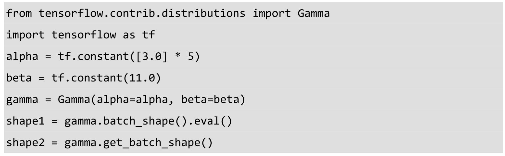
然后，可以用log_pdf()函数取对应的一些值的log转换后的概率密度函数，我们把6个值放在numpy.array里，然后得到相应的log概率密度函数值。
也可以建立多维的Gamma分布，和一维的类似，只需要传入多维的alpha和beta参数就可以建立多维的Gamma分布。同样，我们可以对多维的x取得相应的log概率密度函数值。
11.2 Layer模块
Contrib.layer包含了机器学习算法所需的各种各样的成份和部件，例如卷积层、批标准化层、机器学习指标、优化函数、初始器、特征列，等等。有了这些基础的建设部件，我们可以高效地建立复杂的机器学习及机器学习系统。本章将介绍这个模块里一些主要的部件，来帮助理解TensorFlow的各种可能性及灵活性。
11.2.1 机器学习层
contrib.layers里含有许多常用的深度学习及机器学习的层，例如卷积层、pooling 层、批标准化等，这些都是各种模型必不可少的部分，也是机器学习研究领域最活跃的一部分。
深度学习和计算机视觉里经常用到的二维的平均池是avg_pool2d。我们用np.random.uniform建立宽和高都是3的几张假图片，读者可以通过contrib.layers.avg_pool2d()对图片快速地建立3×3的二维平均池，这里output的形状是[5,1,1,3]，因为我们对每个3×3的区域取计算平均值。

用类似的方法建立卷积层，这里使用同样的图片矩阵，然后用contrib.layers.convolution2d()建立一个有32个3×3过滤器的卷积层，也可以改动stride、padding、activation_fn等参数建立不同架构的卷积层，使用不同的卷积层激活函数。
值得注意的是，contrib.layers会自动建立op的名字，例如output.op.name的值是’Conv/Relu’，因为我们使用了Conv层及使用了ReLU的激活函数，这些layer有自己对应的op名字，然后会在每个op空间存储对应的变量，可以通过contrib.framework.get_variables_by_name()得到对应的op空间变量的值。例如，可以用get_variables_by_name得到我们建立的卷积层的权重，这里权重的形状，也就是weights_shape的值，是[3,3,4,32]。
接下来我们看看怎么将卷积层layers.convolution2d()和批标准化层layers.batch_norm()结合使用，我们先建立一些图片的矩阵。
images = tf.random_uniform((5,height,width,32),seed=1)
接着，使用contrib.framework里面的arg_scope减少代码的重复使用，我们将layers.convolution2d及一些即将传入的参数放入arg_scope中，这些参数通常是接下来会被重复使用的，把它们放在arg_scope里就可以避免重复在多个地方传入，这里需要用到的参数是normalizer_fn和normalizer_params，也就是需要用到的标准化方程及它所需要的参数，一但在arg_scope里设置了这些，接下来用到convolution2d()时就不用重复传入normalizer_fn和normalizer_params这两个参数了。
可以看到，TensorFlow自动帮我们建立好了默认的一些层的名字。以上的例子里，我们可以通过len(tf.contrib.framework.get_variables(‘Conv/BatchNorm’))得到第一个Conv/BatchNorm层的长度。
再来看一个完全连接的神经网络层fully_connected()的例子。首先，建立一些输入的矩阵，用fully_connected()建立一个输出7个神经单元的神经网络层。
值得注意的一些小细节是，我们利用tf.name_scope将截下来的运算放进一个name_scope里，这样以后就可以更简单地找到我们想要的某个层的值，我们在fully_connected()里传入一个scope，然后就可以通过“fe/fc”，也就是这个层的别号得到这个层的一些信息。我们通过传入的outputs_collections，可以直接得到这个层的输出。
在contrib.layers里有许多特别方便使用的方法，例如，可以通过repeat()重复使用同样的参数重复建立某个层，例如y = repeat(x,3,conv2d,64,[3,3],scope=’conv1’)是和以下代码等同的。
可以使用stack()来使用不同的参数建立多个fully_connected()层，我们可以建立一个三层的完全连接的神经网络，每层的单元数分别为32、64和128。
y = stack(x,fully_connected,[32,64,128],scope=’fc’)
以上代码等同于：
注意，stack会帮你建立一个新的scope，通过在scope里附加一个增量，例如在“fc”的基础上加上“fc_1”、“fc_2”等。之前提到的repeat()也会使用类似的机制建立新的scope。
我们只简单介绍一些在深度学习中经常使用的层，如果想了解更多、更复杂的层，例如conv2d_transpose、conv2d_in_plane、separable_conv2d等，可以参考官方文档。
11.2.2 损失函数
Tf.contrib.losses模块里包含了各种常用的损失函数，适用于二类分类、多类分类，以及回归模型等各式各样的机器学习算法。接下来，我们将举例说明它们的使用方法。
我们先以绝对差值举例说明，首先用tf.constant建立一些predictions和targets的数列。注意，它们必须是同样的shape，然后可以选择性地建立权重，因为在许多实际应用中，每个预测值的权重也是特别关键的。
接着，可以使用losses.absolute_difference()计算这组预测的损失值，从而在之后的建模中起到引导性的作用。
loss = tf.contrib.losses.absolute_difference(predictions,targets,weight)
接下来，来看一个计算softmax交叉熵的例子，这种方法多适用于多类分类的机器学习模型。同样地，我们先建立predictions和labels，与之前不一样的是，它们是多维的，也就是softmax交叉熵最擅长处理的。然后，使用losses.softmax_cross_entropy()计算这组预测中softmax交叉熵的值。注意，需要像其他TensorFlow的应用一样使用loss.eval()运行得到它的值。可以从loss.op.name得到TensorFlow自动赋值的op的名字，这个情况下它是’softmax_cross_entropy_loss/value’。其他的损失函数也是使用这样的命名习俗。
其他的损失函数的使用方法大同小异，值得注意的是，许多损失函数里有许多的参数可以使用。例如，可以使用softmax_cross_entropy()里面的label_smoothing将所有的标识进行平滑，从而使在某些应用中计算出来的softmax交叉熵更具有实际应用的代表性，使用方法如下。
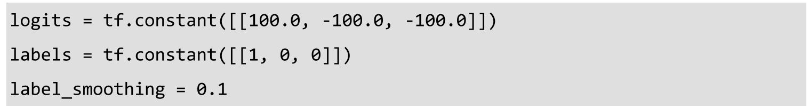
许多应用大部分标识的分布都比较稀疏，可以使用sparse_softmax _cross_entropy()，这样计算起来会更有效率。
11.2.3 特征列Feature Column
在很多数据科学和机器学习的应用中，大家都习惯以表格的形式存储和处理数据，然后将数据输入机器学习模型中。处理数据的方式多种多样，例如Python里有大家熟悉的Pandas包。数据从各种数据源得来，经过各种方式的清理、筛选、合并，以及特征工程，然后进行模型的建立。在TensorFlow里怎样更好地进行我们的特征工程和建模的工作呢？
TF.contrib.layers里有许多高阶的特征列（Feature Column）API，可以让大家的特征工程更有效率，然后紧密地和TF.Learn的API结合使用，建立最适合自己数据的模型。接下来，我们将介绍如何使用这些高阶的特征列API及如何和TF.Learn结合使用。
数据里一般包含连续特征（Continuous Feature）及类别特征（Categorical Feature）。像花瓣的长度和宽度这样连续的数值特征称为连续特征，我们可以直接把它们用在模型里。如果特征代表了类别，例如性别、种族这样的不连续的类别特征，那么往往需要对它们进行处理，例如将它们数值化，也就是将它们转换为一系列的数值来代表每个不同的类别。Feature Column API可以很方便地将各种类型的特征转换为想要的格式。
假设读者已经用类似以下的learn.datasets的API来读入数据，例如：
接下来就可以用layers.FeatureColumn的API定义一些特征列，例如，使用real_valued_column()定义连续的特征（如年龄、收入、开销，以及工作市场）。
紧接着，用sparse_column_with_keys()处理像性别这样的类别特征。
注意，使用sparse_column_with_keys()前，必须要知道这个特征所有可能的值，本例中，性别分为男性和女性。如果事先不知道所有可能的值，可以使用sparse_column_with_hash_bucket()将特征转换为特征列。以教育程度这样的特征为例，由于对数据不是特别熟悉，无法事先知道所有可能的教育程度，我们可以用哈希表建立这样的特征。

sparse_column_with_keys()及sparse_column_with_hash_bucket()都能将数据转换为SparseColumn，然后可以直接在TF.Learn里使用，传入Estimator里。
有时，在数据科学的应用中，一些连续的特征可能需要被离散化，从而形成新的类别特征，这样能更好地代表特征和目标分类类别之间的关系。例如年龄是连续特征，分类的类别是职业的类别（如经理、猎头等），往往这些职业的类别和年龄阶段有关，而不是简单的数值年龄。因为18岁、19岁、20岁往往没有明显的区别，所以有时会将这样的连续特征区间化和离散化，例如将18岁～20岁分为一类。在FeatureColumn API里，我们可以很快地进行这样的转换。
在以上的例子里，使用bucketized_column()将之前的年龄SparseColumn进行进一步的区间化，将年龄段分为18岁～25岁、26岁～30岁、31岁～35岁，等等。
在许多应用里，一个好的模型不仅需要一些单独的特征列，有时两个或多个特征之间的综合和交互与目标分类类别之间的关系更紧密。有时多个特征之间是相关的，使用特征的交互往往能建立更有效的模型。例如，对年龄、职业和种族这三个特征，我们可以使用crossed_column()建立交叉特征列：
建立好各式各样的特征列之后，我们可以直接将它们传入不同的TF.Learn Estimator。以下面这个简单的逻辑回归分类模型为例，我们可以使用之前介绍过的fit()、predict()等方法训练和评估模型。
这里我们只是简单地介绍了一些比较常用的函数，在实际应用中有各种各样的需求，例如有时想取一部分特征的加权求和作为一个新的特征列，可以使用weighted_sum_from_feature_columns()来很快地实现。读者可以在官方文档里找到更多需要的函数。
11.2.4 Embeddings
在许多深度模型应用中，包含许多稀疏的、高维的类别特征向量，我们通常先把它们转换成低维的、稠密的实数值的向量，也通常将它们和连续特征向量联合起来，一起输入进神经网络模型中进行训练和优化损失函数，这些被统一称为嵌入向量（Embedding Vectors）。大部分文本识别都是先将文本转换成嵌入向量，然后对它们进行分析并用在模型训练中。
contrib.layers模块里的embedding_column()能迅速将高维稀疏的类别特征向量转换为读者想要的维数的嵌入向量，以下是一个例子。
这里的title、education、gender、race，以及country都是比较稀疏的类别特征向量，我们通过使用embedding_column()，把它们转换为低维数的稠密向量，从而更好地归纳数据中的特性，特别是当一组特征中的交互矩阵比较稀疏，级别比较高时，这种方法会使模型更具有概括性且更有效。
接下来，可以直接将它们传入TF.Learn的Estimator里进行模型的建立、训练，以及评估。例如，可以将embedding_columns传入DNNLinearCombinedClassifier里的深度神经网络特征列里。
embedding_columns()是contrib.layers模块里最简单易用的一个，当涉及实际数据时，许多稀疏高维的数据里通常有空的特征及无效的ID，这时可以使用safe_embedding_lookup_sparse()安全地建立嵌入向量。这里先用tf.SparseTensor建立好稀疏的ID及稀疏的权重。
接下来，建立嵌入向量的权重embedding_weights，这取决于词汇量大小、嵌入向量维数，以及shard数量。然后，使用initializer.run()和eval()初始化嵌入向量的权重，具体细节和参数的说明请参考最新的官方文档。
最后，可以使用safe_embedding_lookup_sparse()将原来的特征向量安全地转换为低维和稠密的特征向量，这里使用eval()，然后将它们收集到一个tuple里。
11.3 性能分析器tfprof
TensorFlow也在Contrib模块里提供了自己的性能分析器tfprof，可以通过它帮助分析模型的架构及衡量系统的性能。它涵盖了许多实用的功能，例如衡量模型的参数、浮点运算、op执行时间、要求的存储大小、探索模型的结构等。本节将简单地介绍一些功能。
首先，通过以下命令安装tfprof命令行的工具。
bazel build -c opt tensorflow/contrib/tfprof/…
可以通过以下命令查询帮助文件。
bazel-bin/tensorflow/contrib/tfprof/tools/tfprof/tfprof help
可以执行互动模式，然后指定graph_path来分析模型的shape和参数。
类似地，我们用graph_path和checkpoint_path查看checkpoint里Tensor的数据和相对应的值。
与此同时，我们可以多提供一个run_meta_path来查看不同op请求的存储和计时。
值得注意的是，上面用到了run_meta_path、graph_path和checkpoint_path几个路径，我们是怎么得到这几种类型的文件的呢？
graph_path的文件是GraphDef文本文件，用来在内存里建立模型的代表，例如用tf.Supervisor写出来的graph.pbtxt就是一个GraphDef文本文件的例子。如果不使用tf.Supervisor，那么可以使用tf.Graph.as_graph_def()或者其他类似的API存储模型的定义到一个GraphDef文件里。
run_meta_path所需的文件是tensorflow::RunMetadata的结果，这个方程是用来得到模型中每个op所需的存储和时间消耗的，以下简单的几行代码可以写出一个RunMetadata文件。
checkpoint_path是模型的checkpoint，它包含了所有checkpoint的变量的op类型、shape和它们的值。
读者也可以提供其他的路径，例如op_log_path路径，它是tensorflow::tfprof::OpLog的结果，包含了额外的op的信息，由于它包含了op的组的类别名字，用户可以很简单地综合op的一些数据，而不会不小心错过其中一部分op。以下用一个暴露出来的API来很快地写出了一个OpLog文件。
tf.contrib.tfprof.tfprof_logger.write_op_log(graph,log_dir,op_log=None)
由于tfprof是一个CLI命令行的工具，当输入之前的tfprof命令按下回车键时，会进入互动模式，再按一下回车键会看到一些类似以下的命令行参数的默认值。
然后就可以调节里面的参数，例如用show_name_regexes查找scope名字正则式为unit_1_0.*gamma，max_depth为5的变量，查看这些tensor的值：
读者会得到类似以下符合条件的tensor的值：
tfprof提供了两种类型的分析：scope和graph。当读者想查看一些变量和scope的值的时候，你可以使用scope，也就是我们上面阐述过的例子。当读者想查看op在graph里所花的内存和时间时，可以使用graph查看。
类似地，可以改动一些命令行参数，例如使用start_name_regexes选择想要查看的op的名字，这里我们假设需要查看命名为cost的损失op的内存和时间花费的情况：
我们就先简单地介绍以上这些模块，这一部分变化很大，更多的功能还需要读者自己摸索并查看官方文档。
参考文献
1.Large Scale Distributed Deep Networks, NIPS 2012, Authors: Jeffrey Dean and Greg S.Corrado and Rajat Monga and Kai Chen and Matthieu Devin and Quoc V.Le and Mark Z.Mao and Marc’Aurelio Ranzato and Andrew Senior and Paul Tucker and Ke Yang and Andrew Y.Ng
2.TensorFlow: Large-Scale Machine Learning on Heterogeneous Systems,h ttp://ten sorflow.org/ ,Authors: Martin Abadi,Ashish Agarwal,Paul Barham,Eugene Brevdo,Zhifeng Chen,Craig Citro,Greg S.Corrado,Andy Davis,Jeffrey Dean,Matthieu Devin,Sanjay Ghemawat,Ian Goodfellow,Andrew Harp,Geoffrey Irving,Michael Isard,Yangqing Jia,Rafal Jozefowicz,Lukasz Kaiser,Manjunath Kudlur,Josh Leve nberg,Dan Mane,Rajat Monga,Sherry Moore,Derek Murray,Chris Olah,Mike S chuster,Jonathon Shlens,Benoit Steiner,Ilya Sutskever,Kunal Talwar,Paul Tucker,Vincent Vanhoucke,Vijay Vasudevan,Fernanda Viegas,Oriol Vinyals,Pete Warden,Martin Wattenberg,Martin Wicke,Yuan Yu,and Xiaoqiang Zheng
5.https://developer.nvidia.com/cublas
6.https://github.com/akrizhevsky/cuda-convnet2
7.https://developer.nvidia.com/cudnn
8.Caffe: Convolutional Architecture for Fast Feature Embedding, https://arxiv.org/a bs/1408.5093 ,Authors: Yangqing Jia,Evan Shelhamer,Jeff Donahue,Sergey Karaye v,Jonathan Long,Ross Girshick,Sergio Guadarrama,Trevor Darrell
10.An Introduction to Computational Networks and the Computational Network Toolkit ,Microsoft Research ,Authors: Dong Yu,Adam Eversole,Mike Seltzer,Kaisheng Yao,Oleksii Kuchaiev,Yu Zhang,Frank Seide,Zhiheng Huang,Brian Guenter,Huaming Wang,Jasha Droppo,Geoffrey Zweig,Chris Rossbach,Jie Gao,Andreas Stolcke,Jon Currey,Malcolm Slaney,Guoguo Chen,Amit Agarwal,Chris Basoglu,Marko Padmilac,Alexey Kamenev,Vladimir Ivanov,Scott Cypher,Hari Parthasarathi,Bhaskar Mitra,Baolin Peng,Xuedong Huang
11.https://github.com/torch/torch7
- MXNet: A Flexible and Efficient Machine Learning Library for Heterogeneous Distributed Systems, NIPS 2015 ,Authors: Tianqi Chen,Mu Li,Yutian Li,Min Lin,Naiyan Wang,Minjie Wang,Tianjun Xiao,Bing Xu,Chiyuan Zhang,and Zheng Zhang
13.https://github.com/autumnai/leaf
14.http://deeplearning.net/software/theano/
15.https://deeplearning4j.org/
16.https://github.com/Lasagne/Lasagne
17.https://github.com/NervanaSystems/neon
18.https://developer.nvidia.com/cuda-zone
19.https://tensorflow.github.io/serving/
20.https://www.continuum.io/downloads
21.http://yann.lecun.com/exdb/mnist/
22.https://github.com/tensorflow/tensorflow/blob/master/tensorflow/examples/tutorials/mnist/
mnist_softmax.py
23.Reducing the dimensionality of data with neural networks, Science, Authors: G.E.Hinton and R.R.Salakhutdinov
24.Deep belief networks, Scholarpedia ,Geoffrey E.Hinton
25.https://github.com/tensorflow/models/blob/master/autoencoder/AdditiveGaussianNoiseAut oencoderRunner.py
26.Understanding the difficulty of training deep feedforward neural networks, AISTATS 2010 ,Authors: Xavier Glorot and Yoshua Bengio
27.Dropout: A Simple Way to Prevent Neural Networks from Overfitting, Journal of Machine Learning Research ,Authors: Nitish Srivastava,Geoffrey Hinton,Alex Krizhevsky,Ilya Sutskever,Ruslan Salakhutdinov
- Adaptive Subgradient Methods for Online Learning and Stochastic Optimization, Journal of Machine Learning Research ,Authors: John Duchi,Elad Hazan,Yoram Singer
29.Digital selection and analogue amplification coesist in a cortex-inspired silicon circuit, Nature ,Authors: Hahnloser,R.Sarpeshkar,M A Mahowald,R.J.Douglas,H.S.Seung
ADAM: A METHOD FOR STOCHASTIC OPTIMIZATION,I CLR 2015,Authors: Diederik P.Kingma and Jimmy Lei Ba
ADADELTA: AN ADAPTIVE LEARNING RATE METHOD,https ://arxiv.org/abs /1212.5701 ,Authors: Matthew D.Zeiler
32.On the momentum term in gradient descent learning algorithms, Neural Networks : The Official Journal of the International Neural Network ,Authors: Ning Qian
33.A method for unconstrained convex minimization problem with the rate of convergence o(1/k2),Doklady ANSSSR ,Authors: Nesterov,Y.
- Fast and Accurate Deep Network Learning by Exponential Linear Units (ELUs), ICLR 2016 ,Authors: Djork-Arné Clevert,Thomas Unterthiner,Sepp Hochreiter
35.Delving Deep into Rectifiers: Surpassing Human-Level Performance on ImageNet Classification ,https://arxiv.org/abs/1502.01852 ,Authors: Kaiming He,Xiangyu Zhang,Shaoqing Ren,Jian Sun
36.Empirical Evaluation of Rectified Activations in Convolutional Network, https://arxiv.org/abs/1505.00853 ,Authors: Bing Xu,Naiyan Wang,Tianqi Chen,Mu Li
37.Observations on the scratch-reflex in the spinal dog, Journal of Physiology, Authors: Sherrington,C.S.
- Neocognitron: a neural network model for a mechanism of visual pattern recognition, IEEE Transactions on Systems,Man,and Cybernetics ,Authors: Fukushima,K.; Miyake,S.; Ito,T.
39.Gradient-based learning applied to document recognition, Proceedings of the IEEE ,Authors: Y.LeCun,L.Bottou,Y.Bengio,and P.Haffner
40.ImageNet Classification with Deep Convolutional Neural Networks , NIPS 2012,Authors: Alex Krizhevsky,Ilya Sutskever,Geoffrey E.Hinton
41.https://github.com/tensorflow/tensorflow/blob/master/tensorflow/g3doc/tutorials/mnist/pro s/index.md
42.Learning Multiple Layers of Features from Tiny Images, https://www.cs.toronto.edu/～kriz/learning-features-2009-TR.pdf ,Authors: Alex Krizhevsky
43.http://groups.csail.mit.edu/vision/TinyImages/
44.https://github.com/tensorflow/models/tree/master/tutorials/image/cifar10
ImageNet Classification with Deep Convolutional Neural Networks, NIPS 2012,Authors: Alex Krizhevsky,Ilya Sutskever,Geoffrey E.Hinton
VERY DEEP CONVOLUTIONAL NETWORKS FOR LARGE-SCALE IMAGE RECOGNITION ,ICLR 2015 ,Authros: Karen Simonyan and Andrew Zisserman
47.Going Deeper with Convolutions, CVPR 2015,Authors: Christian Szegedy,Wei Liu,Yangqing Jia,Pierre Sermanet,Scott Reed,Dragomir Anguelov,Dumitru Erhan,Vincent Vanhoucke,Andrew Rabinovich
48.Deep Residual Learning for Image Recognition,ht tps://arxiv.org/abs/1512.03385, Authors: Kaiming He,Xiangyu Zhang,Shaoqing Ren,Jian Sun
49.ImageNet Large Scale Visual Recognition Challenge, IJCV 2015, Authors: Olga Russakovsky,Jia Deng,Hao Su,Jonathan Krause,Sanjeev Satheesh,Sean Ma,Zhiheng Huang,Andrej Karpathy,Aditya Khosla,Michael Bernstein,Alexander C.Berg and Li Fei-Fei
50.ImageNet: A Large-Scale Hierarchical Image Database, CVPR 2009, Authors: J.Deng,W.Dong,R.Socher,L.-J.Li,K.Li and L.Fei-Fei
51.https://github.com/tensorflow/models/blob/master/tutorials/image/alexnet/alexnet_benchm ark.py
52.https://github.com/machrisaa/tensorflow-vgg
53.https://github.com/tensorflow/models/blob/master/slim/nets/inception_v3.py
54.https://github.com/tensorflow/models/blob/master/slim/nets/resnet_v2.py
55.Efficient Estimation of Word Representations in Vector Space,ht tps://arxiv.org/a bs/1301.3781 ,Authors: Tomas Mikolov,Kai Chen,Greg Corrado,Jeffrey Dean
56.https://github.com/tensorflow/tensorflow/blob/master/tensorflow/examples/tutorials/word2 vec/word2vec_basic.py
57.Long short-term memory,ht tps://dx.doi.org/10.1162%2Fneco.
1997.9.8.1735,Authors: Sepp Hochreiter,Jürgen Schmidhuber
58.https://github.com/tensorflow/models/blob/master/tutorials/rnn/ptb/ptb_word_lm.py
59.Bidirectional recurrent neural networks, IEEE Transactions on Signal Processing, Authors: Mike Schuster and Kuldip K.Paliwal
60.https://github.com/aymericdamien/TensorFlow-Examples/blob/master/examples/3_Neural Networks/bidirectional_rnn.py
61.Human-level control through Deep Reinforcement Learning, Nature, Authors: Volodymyr Mnih,Koray Kavukcuoglu,David Silver,Andrei A.Rusu,Joel Veness,Marc G.Bellemare,Alex Graves,Martin Riedmiller,Andreas K.Fidjeland,Georg Ostrovski,Stig Petersen,Charles Beattie,Amir Sadik,Ioannis Antonoglou,Helen King,Dharshan Kumaran,Daan Wierstra,Shane Legg,Demis Hassabis
Mastering the game of Go with deep neural networks and tree search, Nature, Authors: David Silver,Aja Huang,Chris J.Maddison,Arthur Guez,Laurent Sifre,George van den Driessche,Julian Schrittwieser,Ioannis Antonoglou,Veda Panneershelvam,Marc Lanctot,Sander Dieleman,Dominik Grewe,John Nham,Nal Kalchbrenner,Ilya Sutskever,Timothy Lillicrap,Madeleine Leach,Koray Kavukcuoglu,Thore Graepel,Demis Hassabis
OpenAI Gym,htt p://arxiv.org/abs/1606.0154 0,Greg Brockman and Vicki Cheung and Ludwig Pettersson and Jonas Schneider and John Schulman and Jie Tang and Wojciech Zaremba
64.https://github.com/awjuliani/DeepRL-Agents/blob/master/Policy-Network.ipynb
65.Learning from Delayed Rewards,Ph .D.thesis,Cambridge University, Authors: Watkins,C.J.C.H.
66.https://github.com/awjuliani/DeepRL-Agents/blob/master/Double-Dueling-DQN.ipynb
67.https://github.com/tensorflow/tensorflow/blob/master/tensorflow/examples/tutorials/mnist/
mnist_with_summaries.py
68.https://github.com/tensorflow/models/blob/master/tutorials/image/cifar10/cifar10_multi_g pu_train.py
69.https://github.com/tensorflow/tensorflow/blob/master/tensorflow/tools/dist_test/python/mn ist_replica.py